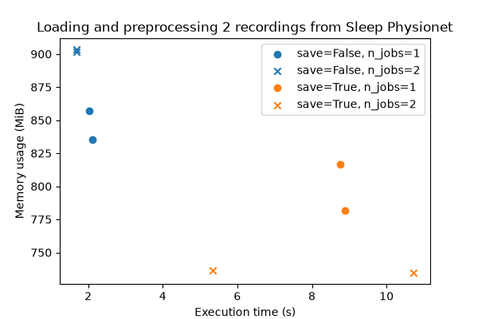

Note
Go to the end to download the full example code.
Benchmarking preprocessing with parallelization and serialization#
In this example, we compare the execution time and memory requirements of
preprocessing data with the parallelization and serialization functionalities
available in braindecode.preprocessing.preprocess().
We compare 4 cases:
Sequential, no serialization
Sequential, with serialization
Parallel, no serialization
Parallel, with serialization
Case 1 is the simplest approach, in which all recordings in a
braindecode.datasets.BaseConcatDataset are preprocessed one after the
other. In this scenario, braindecode.preprocessing.preprocess() acts
inplace, which means memory usage will likely stay stable (depending on the
preprocessing operations) if recordings have been preloaded. However, two
potential issues arise when working with large datasets: (1) if recordings have
not been preloaded before preprocessing, preprocess() will need to load them
and keep them in memory, in which case memory can become a bottleneck, and (2)
sequential preprocessing can take a considerable amount of time to run when
working with many recordings.
A solution to the first issue (memory usage) is to save the preprocessed data
to a file so it can be cleared from memory before moving on to the next
recording (case 2). The recordings can then be reloaded with preload=False
once they have all been saved to disk. This enables using the lazy loading
capabilities of braindecode.datasets.BaseConcatDataset and avoids
potential memory bottlenecks. The downside is that the writing to disk can take
some time and of course requires disk space.
A solution to the second issue (slow preprocessing) is to parallelize the preprocessing over multiple cores whenever possible (case 3). This can speed up preprocessing significantly. However, this approach will increase memory usage because of the way parallelization is implemented internally (with joblib, copies of (part of) the data must be made when sending arguments to parallel processes).
Finally, case 4 (combining parallelization and serialization) is likely to be both fast and memory efficient. As shown in this example, this remains a tradeoff though, and the selected configuration should depend on the size of the dataset and the specific operations applied to the recordings.
# Authors: Hubert Banville <hubert.jbanville@gmail.com>
#
# License: BSD (3-clause)
import tempfile
import time
from itertools import product
import matplotlib.pyplot as plt
import pandas as pd
from memory_profiler import memory_usage
from sklearn.preprocessing import scale
from braindecode.datasets import SleepPhysionet
from braindecode.preprocessing import (
Preprocessor,
create_fixed_length_windows,
preprocess,
)
We create a function that goes through the usual three steps of data
preparation: (1) data loading, (2) continuous data preprocessing,
(3) windowing and (4) windowed data preprocessing. We use the
braindecode.datasets.SleepPhysionet dataset for testing purposes.
def prepare_data(n_recs, save, preload, n_jobs):
if save:
tmp_dir = tempfile.TemporaryDirectory()
save_dir = tmp_dir.name
else:
save_dir = None
# (1) Load the data
concat_ds = SleepPhysionet(
subject_ids=range(n_recs), recording_ids=[1], crop_wake_mins=30, preload=preload
)
sfreq = concat_ds.datasets[0].raw.info["sfreq"]
# (2) Preprocess the continuous data
preprocessors = [
Preprocessor("crop", tmin=10),
Preprocessor("filter", l_freq=None, h_freq=30),
]
preprocess(
concat_ds, preprocessors, save_dir=save_dir, overwrite=True, n_jobs=n_jobs
)
# (3) Window the data
windows_ds = create_fixed_length_windows(
concat_ds,
0,
None,
int(30 * sfreq),
int(30 * sfreq),
True,
preload=preload,
n_jobs=n_jobs,
)
# Preprocess the windowed data
preprocessors = [Preprocessor(scale, channel_wise=True)]
preprocess(
windows_ds, preprocessors, save_dir=save_dir, overwrite=True, n_jobs=n_jobs
)
Next, we can run our function and measure its run time and peak memory usage for each one of our 4 cases above. We call the function multiple times with each configuration to get better estimates.
Note
To better characterize the run time vs. memory usage tradeoff for your specific configuration (as this will differ based on available hardware, data size and preprocessing operations), we recommend adapting this example to your use case and running it on your machine.
n_repets = 2 # Number of repetitions
all_n_recs = 2 # Number of recordings to load and preprocess
all_n_jobs = [1, 2] # Number of parallel processes
results = list()
for _, n_recs, save, n_jobs in product(
range(n_repets), [all_n_recs], [True, False], all_n_jobs
):
start = time.time()
mem = max(memory_usage(proc=(prepare_data, [n_recs, save, False, n_jobs], {})))
time_taken = time.time() - start
results.append(
{
"n_recs": n_recs,
"max_mem": mem,
"save": save,
"n_jobs": n_jobs,
"time": time_taken,
}
)
0%| | 0.00/48.3M [00:00<?, ?B/s]
0%| | 9.22k/48.3M [00:00<31:28, 25.6kB/s]
0%| | 33.8k/48.3M [00:00<14:07, 57.0kB/s]
0%| | 42.0k/48.3M [00:01<25:22, 31.7kB/s]
0%| | 66.6k/48.3M [00:01<22:37, 35.6kB/s]
0%| | 74.8k/48.3M [00:02<29:54, 26.9kB/s]
0%| | 91.1k/48.3M [00:03<31:56, 25.2kB/s]
0%| | 108k/48.3M [00:03<29:50, 26.9kB/s]
0%| | 132k/48.3M [00:04<26:21, 30.5kB/s]
0%| | 140k/48.3M [00:05<38:57, 20.6kB/s]
0%| | 157k/48.3M [00:05<31:41, 25.3kB/s]
0%|▏ | 173k/48.3M [00:06<26:13, 30.6kB/s]
0%|▏ | 189k/48.3M [00:06<21:12, 37.9kB/s]
0%|▏ | 206k/48.3M [00:06<20:12, 39.7kB/s]
0%|▏ | 222k/48.3M [00:06<19:50, 40.4kB/s]
0%|▏ | 239k/48.3M [00:07<20:21, 39.4kB/s]
1%|▏ | 255k/48.3M [00:07<19:18, 41.5kB/s]
1%|▏ | 271k/48.3M [00:08<18:59, 42.2kB/s]
1%|▏ | 296k/48.3M [00:08<14:11, 56.4kB/s]
1%|▏ | 304k/48.3M [00:08<16:27, 48.6kB/s]
1%|▎ | 321k/48.3M [00:08<16:22, 48.9kB/s]
1%|▎ | 337k/48.3M [00:09<15:03, 53.1kB/s]
1%|▎ | 353k/48.3M [00:09<15:31, 51.5kB/s]
1%|▎ | 370k/48.3M [00:09<17:20, 46.1kB/s]
1%|▎ | 386k/48.3M [00:10<15:08, 52.8kB/s]
1%|▎ | 402k/48.3M [00:10<14:08, 56.5kB/s]
1%|▎ | 427k/48.3M [00:10<11:10, 71.5kB/s]
1%|▎ | 435k/48.3M [00:10<13:33, 58.9kB/s]
1%|▎ | 452k/48.3M [00:11<11:39, 68.5kB/s]
1%|▎ | 468k/48.3M [00:11<13:15, 60.2kB/s]
1%|▍ | 484k/48.3M [00:11<14:40, 54.4kB/s]
1%|▍ | 501k/48.3M [00:12<23:37, 33.8kB/s]
1%|▍ | 517k/48.3M [00:13<23:24, 34.0kB/s]
1%|▍ | 534k/48.3M [00:13<24:14, 32.9kB/s]
1%|▍ | 558k/48.3M [00:14<22:00, 36.2kB/s]
1%|▍ | 566k/48.3M [00:14<25:26, 31.3kB/s]
1%|▍ | 583k/48.3M [00:15<27:54, 28.5kB/s]
1%|▍ | 599k/48.3M [00:15<23:48, 33.4kB/s]
1%|▍ | 615k/48.3M [00:15<19:35, 40.6kB/s]
1%|▍ | 632k/48.3M [00:16<16:47, 47.4kB/s]
1%|▌ | 648k/48.3M [00:16<15:52, 50.1kB/s]
1%|▌ | 665k/48.3M [00:16<18:26, 43.1kB/s]
1%|▌ | 689k/48.3M [00:17<17:23, 45.7kB/s]
1%|▌ | 697k/48.3M [00:17<20:25, 38.9kB/s]
1%|▌ | 714k/48.3M [00:18<21:25, 37.0kB/s]
2%|▌ | 730k/48.3M [00:18<20:55, 37.9kB/s]
2%|▌ | 746k/48.3M [00:19<22:00, 36.1kB/s]
2%|▌ | 763k/48.3M [00:19<25:17, 31.4kB/s]
2%|▌ | 779k/48.3M [00:20<31:54, 24.8kB/s]
2%|▋ | 796k/48.3M [00:21<28:33, 27.8kB/s]
2%|▋ | 812k/48.3M [00:21<25:17, 31.3kB/s]
2%|▋ | 828k/48.3M [00:22<27:55, 28.4kB/s]
2%|▋ | 853k/48.3M [00:22<22:28, 35.2kB/s]
2%|▋ | 861k/48.3M [00:23<24:14, 32.6kB/s]
2%|▋ | 878k/48.3M [00:23<22:48, 34.7kB/s]
2%|▋ | 894k/48.3M [00:23<18:38, 42.4kB/s]
2%|▋ | 910k/48.3M [00:24<17:12, 45.9kB/s]
2%|▋ | 927k/48.3M [00:24<16:06, 49.0kB/s]
2%|▋ | 943k/48.3M [00:24<14:54, 53.0kB/s]
2%|▊ | 959k/48.3M [00:24<15:02, 52.5kB/s]
2%|▊ | 984k/48.3M [00:25<12:48, 61.6kB/s]
2%|▊ | 992k/48.3M [00:25<16:32, 47.7kB/s]
2%|▊ | 1.01M/48.3M [00:25<14:53, 53.0kB/s]
2%|▊ | 1.03M/48.3M [00:25<13:05, 60.3kB/s]
2%|▊ | 1.04M/48.3M [00:26<12:38, 62.3kB/s]
2%|▊ | 1.06M/48.3M [00:26<12:14, 64.4kB/s]
2%|▊ | 1.07M/48.3M [00:26<11:06, 70.9kB/s]
2%|▊ | 1.09M/48.3M [00:26<11:15, 69.9kB/s]
2%|▊ | 1.12M/48.3M [00:27<10:54, 72.2kB/s]
2%|▊ | 1.12M/48.3M [00:27<14:40, 53.6kB/s]
2%|▊ | 1.14M/48.3M [00:27<15:27, 50.9kB/s]
2%|▉ | 1.16M/48.3M [00:28<15:13, 51.7kB/s]
2%|▉ | 1.17M/48.3M [00:28<14:39, 53.6kB/s]
2%|▉ | 1.19M/48.3M [00:28<14:30, 54.1kB/s]
2%|▉ | 1.21M/48.3M [00:28<12:25, 63.2kB/s]
3%|▉ | 1.22M/48.3M [00:29<13:24, 58.5kB/s]
3%|▉ | 1.25M/48.3M [00:29<12:08, 64.6kB/s]
3%|▉ | 1.25M/48.3M [00:30<17:08, 45.8kB/s]
3%|▉ | 1.27M/48.3M [00:30<17:09, 45.7kB/s]
3%|▉ | 1.29M/48.3M [00:30<15:31, 50.5kB/s]
3%|▉ | 1.30M/48.3M [00:30<13:59, 56.0kB/s]
3%|█ | 1.32M/48.3M [00:31<16:54, 46.3kB/s]
3%|█ | 1.34M/48.3M [00:31<16:36, 47.2kB/s]
3%|█ | 1.35M/48.3M [00:32<21:35, 36.3kB/s]
3%|█ | 1.38M/48.3M [00:33<25:05, 31.2kB/s]
3%|█ | 1.39M/48.3M [00:33<25:24, 30.8kB/s]
3%|█ | 1.40M/48.3M [00:33<21:33, 36.3kB/s]
3%|█ | 1.42M/48.3M [00:34<16:59, 46.0kB/s]
3%|█ | 1.43M/48.3M [00:34<14:30, 53.9kB/s]
3%|█ | 1.45M/48.3M [00:34<12:42, 61.5kB/s]
3%|█ | 1.47M/48.3M [00:34<11:01, 70.9kB/s]
3%|█▏ | 1.48M/48.3M [00:34<10:12, 76.5kB/s]
3%|█▏ | 1.51M/48.3M [00:34<07:34, 103kB/s]
3%|█▏ | 1.52M/48.3M [00:34<07:29, 104kB/s]
3%|█▏ | 1.53M/48.3M [00:35<09:33, 81.5kB/s]
3%|█▏ | 1.57M/48.3M [00:35<07:48, 99.8kB/s]
3%|█▏ | 1.58M/48.3M [00:35<07:51, 99.1kB/s]
3%|█▏ | 1.60M/48.3M [00:35<08:34, 90.9kB/s]
3%|█▏ | 1.61M/48.3M [00:36<09:13, 84.5kB/s]
3%|█▎ | 1.64M/48.3M [00:36<07:59, 97.4kB/s]
3%|█▎ | 1.65M/48.3M [00:36<09:26, 82.5kB/s]
3%|█▎ | 1.66M/48.3M [00:36<09:13, 84.3kB/s]
3%|█▎ | 1.68M/48.3M [00:36<10:27, 74.3kB/s]
4%|█▎ | 1.70M/48.3M [00:37<10:38, 73.0kB/s]
4%|█▎ | 1.71M/48.3M [00:37<12:23, 62.7kB/s]
4%|█▎ | 1.74M/48.3M [00:37<10:11, 76.2kB/s]
4%|█▎ | 1.75M/48.3M [00:37<11:17, 68.8kB/s]
4%|█▎ | 1.76M/48.3M [00:38<09:52, 78.6kB/s]
4%|█▎ | 1.78M/48.3M [00:38<08:52, 87.4kB/s]
4%|█▎ | 1.80M/48.3M [00:38<07:48, 99.4kB/s]
4%|█▍ | 1.81M/48.3M [00:38<07:04, 110kB/s]
4%|█▍ | 1.83M/48.3M [00:38<06:22, 122kB/s]
4%|█▍ | 1.84M/48.3M [00:38<06:26, 120kB/s]
4%|█▍ | 1.87M/48.3M [00:38<05:12, 149kB/s]
4%|█▍ | 1.89M/48.3M [00:38<05:43, 135kB/s]
4%|█▍ | 1.90M/48.3M [00:39<05:41, 136kB/s]
4%|█▌ | 1.91M/48.3M [00:39<05:46, 134kB/s]
4%|█▌ | 1.93M/48.3M [00:39<06:05, 127kB/s]
4%|█▌ | 1.94M/48.3M [00:39<06:47, 114kB/s]
4%|█▌ | 1.98M/48.3M [00:39<06:05, 127kB/s]
4%|█▌ | 1.99M/48.3M [00:39<05:59, 129kB/s]
4%|█▌ | 2.01M/48.3M [00:39<05:54, 131kB/s]
4%|█▌ | 2.02M/48.3M [00:40<06:41, 115kB/s]
4%|█▌ | 2.07M/48.3M [00:40<05:00, 154kB/s]
4%|█▋ | 2.08M/48.3M [00:40<05:16, 146kB/s]
4%|█▋ | 2.10M/48.3M [00:40<06:46, 114kB/s]
4%|█▋ | 2.12M/48.3M [00:40<06:47, 113kB/s]
4%|█▋ | 2.14M/48.3M [00:41<07:28, 103kB/s]
4%|█▋ | 2.16M/48.3M [00:41<07:52, 97.7kB/s]
4%|█▋ | 2.17M/48.3M [00:41<07:55, 97.1kB/s]
5%|█▋ | 2.20M/48.3M [00:41<07:10, 107kB/s]
5%|█▋ | 2.21M/48.3M [00:41<07:37, 101kB/s]
5%|█▋ | 2.22M/48.3M [00:41<07:31, 102kB/s]
5%|█▊ | 2.24M/48.3M [00:41<06:59, 110kB/s]
5%|█▊ | 2.25M/48.3M [00:42<06:21, 121kB/s]
5%|█▊ | 2.27M/48.3M [00:42<07:36, 101kB/s]
5%|█▊ | 2.30M/48.3M [00:42<05:54, 130kB/s]
5%|█▊ | 2.32M/48.3M [00:42<06:02, 127kB/s]
5%|█▊ | 2.34M/48.3M [00:42<05:59, 128kB/s]
5%|█▊ | 2.36M/48.3M [00:42<06:38, 115kB/s]
5%|█▊ | 2.38M/48.3M [00:43<06:12, 123kB/s]
5%|█▉ | 2.40M/48.3M [00:43<06:22, 120kB/s]
5%|█▉ | 2.42M/48.3M [00:43<06:19, 121kB/s]
5%|█▉ | 2.43M/48.3M [00:43<06:14, 122kB/s]
5%|█▉ | 2.46M/48.3M [00:43<05:14, 146kB/s]
5%|█▉ | 2.47M/48.3M [00:43<05:12, 147kB/s]
5%|█▉ | 2.50M/48.3M [00:44<06:29, 118kB/s]
5%|█▉ | 2.53M/48.3M [00:44<05:17, 144kB/s]
5%|██ | 2.55M/48.3M [00:44<05:15, 145kB/s]
5%|██ | 2.57M/48.3M [00:44<05:14, 146kB/s]
5%|██ | 2.59M/48.3M [00:44<04:38, 164kB/s]
5%|██ | 2.61M/48.3M [00:44<04:37, 165kB/s]
5%|██ | 2.62M/48.3M [00:44<05:02, 151kB/s]
5%|██ | 2.64M/48.3M [00:44<05:05, 149kB/s]
5%|██ | 2.66M/48.3M [00:45<05:19, 143kB/s]
6%|██ | 2.67M/48.3M [00:45<05:25, 140kB/s]
6%|██ | 2.69M/48.3M [00:45<06:36, 115kB/s]
6%|██▏ | 2.72M/48.3M [00:45<05:18, 143kB/s]
6%|██▏ | 2.74M/48.3M [00:45<06:12, 122kB/s]
6%|██▏ | 2.76M/48.3M [00:45<06:24, 119kB/s]
6%|██▏ | 2.78M/48.3M [00:46<06:32, 116kB/s]
6%|██▏ | 2.79M/48.3M [00:46<08:00, 94.8kB/s]
6%|██▏ | 2.81M/48.3M [00:46<09:02, 84.0kB/s]
6%|██▏ | 2.83M/48.3M [00:47<12:09, 62.4kB/s]
6%|██▏ | 2.85M/48.3M [00:47<13:41, 55.4kB/s]
6%|██▏ | 2.86M/48.3M [00:48<19:03, 39.8kB/s]
6%|██▏ | 2.88M/48.3M [00:48<16:59, 44.6kB/s]
6%|██▏ | 2.89M/48.3M [00:48<15:43, 48.1kB/s]
6%|██▏ | 2.91M/48.3M [00:49<16:41, 45.4kB/s]
6%|██▏ | 2.93M/48.3M [00:49<23:56, 31.6kB/s]
6%|██▎ | 2.94M/48.3M [00:50<22:16, 34.0kB/s]
6%|██▎ | 2.96M/48.3M [00:50<21:09, 35.7kB/s]
6%|██▎ | 2.98M/48.3M [00:51<18:55, 39.9kB/s]
6%|██▎ | 2.99M/48.3M [00:51<19:27, 38.8kB/s]
6%|██▎ | 3.01M/48.3M [00:51<20:39, 36.6kB/s]
6%|██▎ | 3.02M/48.3M [00:52<25:49, 29.2kB/s]
6%|██▎ | 3.04M/48.3M [00:53<28:27, 26.5kB/s]
6%|██▎ | 3.06M/48.3M [00:53<25:12, 29.9kB/s]
6%|██▎ | 3.07M/48.3M [00:54<23:51, 31.6kB/s]
6%|██▎ | 3.09M/48.3M [00:54<23:54, 31.6kB/s]
6%|██▍ | 3.11M/48.3M [00:55<21:08, 35.7kB/s]
6%|██▍ | 3.12M/48.3M [00:55<24:31, 30.7kB/s]
6%|██▍ | 3.14M/48.3M [00:56<22:17, 33.8kB/s]
7%|██▍ | 3.15M/48.3M [00:56<25:12, 29.9kB/s]
7%|██▍ | 3.17M/48.3M [00:57<26:26, 28.5kB/s]
7%|██▍ | 3.19M/48.3M [00:58<26:54, 28.0kB/s]
7%|██▍ | 3.20M/48.3M [00:58<27:40, 27.2kB/s]
7%|██▍ | 3.22M/48.3M [00:59<24:29, 30.7kB/s]
7%|██▍ | 3.24M/48.3M [00:59<23:30, 32.0kB/s]
7%|██▍ | 3.25M/48.3M [01:00<21:33, 34.9kB/s]
7%|██▌ | 3.28M/48.3M [01:00<20:02, 37.5kB/s]
7%|██▌ | 3.29M/48.3M [01:00<19:54, 37.7kB/s]
7%|██▌ | 3.30M/48.3M [01:01<19:20, 38.8kB/s]
7%|██▌ | 3.32M/48.3M [01:01<22:45, 33.0kB/s]
7%|██▌ | 3.34M/48.3M [01:02<27:44, 27.0kB/s]
7%|██▌ | 3.35M/48.3M [01:03<25:28, 29.4kB/s]
7%|██▌ | 3.37M/48.3M [01:03<24:34, 30.5kB/s]
7%|██▌ | 3.38M/48.3M [01:04<21:59, 34.1kB/s]
7%|██▌ | 3.41M/48.3M [01:04<17:51, 41.9kB/s]
7%|██▌ | 3.42M/48.3M [01:04<21:23, 35.0kB/s]
7%|██▋ | 3.43M/48.3M [01:05<22:14, 33.7kB/s]
7%|██▋ | 3.45M/48.3M [01:05<22:08, 33.8kB/s]
7%|██▋ | 3.47M/48.3M [01:06<24:29, 30.5kB/s]
7%|██▋ | 3.48M/48.3M [01:07<28:24, 26.3kB/s]
7%|██▋ | 3.50M/48.3M [01:07<26:18, 28.4kB/s]
7%|██▋ | 3.52M/48.3M [01:08<24:52, 30.0kB/s]
7%|██▋ | 3.54M/48.3M [01:08<21:27, 34.8kB/s]
7%|██▋ | 3.55M/48.3M [01:09<22:41, 32.9kB/s]
7%|██▋ | 3.56M/48.3M [01:09<20:41, 36.1kB/s]
7%|██▋ | 3.58M/48.3M [01:10<22:36, 33.0kB/s]
7%|██▊ | 3.60M/48.3M [01:10<21:59, 33.9kB/s]
7%|██▊ | 3.61M/48.3M [01:10<18:25, 40.5kB/s]
8%|██▊ | 3.63M/48.3M [01:11<16:31, 45.1kB/s]
8%|██▊ | 3.65M/48.3M [01:11<15:25, 48.3kB/s]
8%|██▊ | 3.66M/48.3M [01:11<14:38, 50.9kB/s]
8%|██▊ | 3.68M/48.3M [01:11<15:03, 49.4kB/s]
8%|██▊ | 3.70M/48.3M [01:12<16:15, 45.8kB/s]
8%|██▊ | 3.71M/48.3M [01:13<21:33, 34.5kB/s]
8%|██▊ | 3.73M/48.3M [01:13<21:20, 34.8kB/s]
8%|██▊ | 3.74M/48.3M [01:14<21:04, 35.3kB/s]
8%|██▉ | 3.76M/48.3M [01:14<20:05, 37.0kB/s]
8%|██▉ | 3.78M/48.3M [01:14<19:02, 39.0kB/s]
8%|██▉ | 3.79M/48.3M [01:15<22:52, 32.4kB/s]
8%|██▉ | 3.81M/48.3M [01:15<20:55, 35.5kB/s]
8%|██▉ | 3.83M/48.3M [01:16<16:40, 44.5kB/s]
8%|██▉ | 3.84M/48.3M [01:16<17:36, 42.1kB/s]
8%|██▉ | 3.86M/48.3M [01:16<16:20, 45.4kB/s]
8%|██▉ | 3.88M/48.3M [01:17<14:52, 49.8kB/s]
8%|██▉ | 3.89M/48.3M [01:17<13:35, 54.5kB/s]
8%|██▉ | 3.91M/48.3M [01:17<14:47, 50.0kB/s]
8%|███ | 3.92M/48.3M [01:17<13:16, 55.7kB/s]
8%|███ | 3.94M/48.3M [01:18<13:04, 56.6kB/s]
8%|███ | 3.97M/48.3M [01:18<11:07, 66.5kB/s]
8%|███ | 3.97M/48.3M [01:18<12:44, 58.0kB/s]
8%|███ | 3.99M/48.3M [01:18<13:22, 55.3kB/s]
8%|███ | 4.01M/48.3M [01:19<11:45, 62.8kB/s]
8%|███ | 4.02M/48.3M [01:19<11:18, 65.3kB/s]
8%|███ | 4.04M/48.3M [01:19<10:12, 72.4kB/s]
8%|███ | 4.06M/48.3M [01:19<09:41, 76.1kB/s]
8%|███ | 4.07M/48.3M [01:19<09:49, 75.1kB/s]
8%|███▏ | 4.10M/48.3M [01:20<10:17, 71.6kB/s]
8%|███▏ | 4.11M/48.3M [01:20<13:19, 55.3kB/s]
9%|███▏ | 4.12M/48.3M [01:20<13:30, 54.5kB/s]
9%|███▏ | 4.14M/48.3M [01:21<16:09, 45.6kB/s]
9%|███▏ | 4.15M/48.3M [01:21<15:33, 47.3kB/s]
9%|███▏ | 4.17M/48.3M [01:21<13:30, 54.5kB/s]
9%|███▏ | 4.19M/48.3M [01:22<14:53, 49.4kB/s]
9%|███▏ | 4.20M/48.3M [01:22<14:41, 50.1kB/s]
9%|███▏ | 4.22M/48.3M [01:22<13:40, 53.8kB/s]
9%|███▏ | 4.24M/48.3M [01:23<11:57, 61.5kB/s]
9%|███▎ | 4.26M/48.3M [01:23<09:18, 79.0kB/s]
9%|███▎ | 4.27M/48.3M [01:23<09:54, 74.1kB/s]
9%|███▎ | 4.29M/48.3M [01:23<11:22, 64.6kB/s]
9%|███▎ | 4.30M/48.3M [01:24<14:03, 52.2kB/s]
9%|███▎ | 4.32M/48.3M [01:24<14:14, 51.5kB/s]
9%|███▎ | 4.33M/48.3M [01:24<15:00, 48.8kB/s]
9%|███▎ | 4.35M/48.3M [01:25<14:36, 50.2kB/s]
9%|███▎ | 4.37M/48.3M [01:25<14:19, 51.2kB/s]
9%|███▎ | 4.39M/48.3M [01:25<12:04, 60.6kB/s]
9%|███▎ | 4.40M/48.3M [01:26<16:02, 45.7kB/s]
9%|███▍ | 4.42M/48.3M [01:26<14:36, 50.1kB/s]
9%|███▍ | 4.43M/48.3M [01:26<12:35, 58.1kB/s]
9%|███▍ | 4.45M/48.3M [01:26<11:21, 64.4kB/s]
9%|███▍ | 4.47M/48.3M [01:27<11:22, 64.3kB/s]
9%|███▍ | 4.48M/48.3M [01:27<09:40, 75.5kB/s]
9%|███▍ | 4.50M/48.3M [01:27<10:38, 68.6kB/s]
9%|███▍ | 4.52M/48.3M [01:27<09:14, 79.0kB/s]
9%|███▍ | 4.53M/48.3M [01:28<13:25, 54.4kB/s]
9%|███▍ | 4.55M/48.3M [01:28<13:57, 52.3kB/s]
9%|███▍ | 4.56M/48.3M [01:28<11:57, 61.0kB/s]
9%|███▌ | 4.58M/48.3M [01:29<14:47, 49.3kB/s]
10%|███▌ | 4.60M/48.3M [01:29<17:42, 41.2kB/s]
10%|███▌ | 4.61M/48.3M [01:30<19:01, 38.3kB/s]
10%|███▌ | 4.63M/48.3M [01:30<18:52, 38.6kB/s]
10%|███▌ | 4.65M/48.3M [01:31<18:27, 39.5kB/s]
10%|███▌ | 4.66M/48.3M [01:31<16:19, 44.6kB/s]
10%|███▌ | 4.69M/48.3M [01:31<15:31, 46.9kB/s]
10%|███▌ | 4.70M/48.3M [01:32<22:30, 32.3kB/s]
10%|███▌ | 4.71M/48.3M [01:32<21:31, 33.8kB/s]
10%|███▌ | 4.73M/48.3M [01:33<24:10, 30.1kB/s]
10%|███▋ | 4.74M/48.3M [01:34<24:05, 30.2kB/s]
10%|███▋ | 4.76M/48.3M [01:34<21:40, 33.5kB/s]
10%|███▋ | 4.78M/48.3M [01:34<20:18, 35.7kB/s]
10%|███▋ | 4.79M/48.3M [01:35<17:55, 40.5kB/s]
10%|███▋ | 4.82M/48.3M [01:35<18:06, 40.0kB/s]
10%|███▋ | 4.83M/48.3M [01:36<28:11, 25.7kB/s]
10%|███▋ | 4.84M/48.3M [01:37<24:41, 29.4kB/s]
10%|███▋ | 4.86M/48.3M [01:37<21:03, 34.4kB/s]
10%|███▋ | 4.88M/48.3M [01:37<18:45, 38.6kB/s]
10%|███▋ | 4.89M/48.3M [01:38<19:06, 37.9kB/s]
10%|███▊ | 4.91M/48.3M [01:38<20:33, 35.2kB/s]
10%|███▊ | 4.92M/48.3M [01:39<20:04, 36.0kB/s]
10%|███▊ | 4.95M/48.3M [01:39<19:13, 37.6kB/s]
10%|███▊ | 4.96M/48.3M [01:40<27:43, 26.1kB/s]
10%|███▊ | 4.97M/48.3M [01:41<32:27, 22.3kB/s]
10%|███▊ | 4.99M/48.3M [01:41<27:32, 26.2kB/s]
10%|███▊ | 5.01M/48.3M [01:42<29:02, 24.9kB/s]
10%|███▊ | 5.02M/48.3M [01:43<26:23, 27.4kB/s]
10%|███▊ | 5.04M/48.3M [01:43<24:54, 29.0kB/s]
10%|███▊ | 5.06M/48.3M [01:43<22:52, 31.5kB/s]
11%|███▉ | 5.08M/48.3M [01:44<19:03, 37.8kB/s]
11%|███▉ | 5.09M/48.3M [01:44<21:23, 33.7kB/s]
11%|███▉ | 5.10M/48.3M [01:45<24:26, 29.5kB/s]
11%|███▉ | 5.12M/48.3M [01:46<25:46, 27.9kB/s]
11%|███▉ | 5.14M/48.3M [01:46<24:31, 29.4kB/s]
11%|███▉ | 5.15M/48.3M [01:47<22:32, 31.9kB/s]
11%|███▉ | 5.17M/48.3M [01:47<21:37, 33.3kB/s]
11%|███▉ | 5.19M/48.3M [01:48<21:50, 32.9kB/s]
11%|███▉ | 5.20M/48.3M [01:48<19:33, 36.8kB/s]
11%|███▉ | 5.22M/48.3M [01:48<17:04, 42.1kB/s]
11%|████ | 5.24M/48.3M [01:48<13:49, 51.9kB/s]
11%|████ | 5.25M/48.3M [01:49<16:26, 43.7kB/s]
11%|████ | 5.27M/48.3M [01:49<17:54, 40.1kB/s]
11%|████ | 5.28M/48.3M [01:50<17:34, 40.8kB/s]
11%|████ | 5.30M/48.3M [01:50<15:57, 44.9kB/s]
11%|████ | 5.32M/48.3M [01:50<14:37, 49.0kB/s]
11%|████ | 5.33M/48.3M [01:50<14:01, 51.1kB/s]
11%|████ | 5.35M/48.3M [01:51<16:23, 43.7kB/s]
11%|████ | 5.37M/48.3M [01:52<16:12, 44.2kB/s]
11%|████ | 5.38M/48.3M [01:52<17:12, 41.6kB/s]
11%|████▏ | 5.40M/48.3M [01:52<16:33, 43.2kB/s]
11%|████▏ | 5.42M/48.3M [01:52<15:40, 45.6kB/s]
11%|████▏ | 5.43M/48.3M [01:53<14:34, 49.1kB/s]
11%|████▏ | 5.45M/48.3M [01:53<13:52, 51.5kB/s]
11%|████▏ | 5.47M/48.3M [01:53<14:12, 50.3kB/s]
11%|████▏ | 5.48M/48.3M [01:54<15:25, 46.3kB/s]
11%|████▏ | 5.51M/48.3M [01:54<14:25, 49.5kB/s]
11%|████▏ | 5.51M/48.3M [01:54<15:40, 45.5kB/s]
11%|████▏ | 5.53M/48.3M [01:55<15:57, 44.7kB/s]
11%|████▏ | 5.55M/48.3M [01:55<18:14, 39.1kB/s]
12%|████▎ | 5.56M/48.3M [01:56<18:28, 38.6kB/s]
12%|████▎ | 5.58M/48.3M [01:56<16:13, 43.9kB/s]
12%|████▎ | 5.60M/48.3M [01:56<15:07, 47.1kB/s]
12%|████▎ | 5.61M/48.3M [01:57<14:42, 48.4kB/s]
12%|████▎ | 5.63M/48.3M [01:57<13:05, 54.3kB/s]
12%|████▎ | 5.65M/48.3M [01:57<12:28, 57.0kB/s]
12%|████▎ | 5.67M/48.3M [01:57<10:27, 68.0kB/s]
12%|████▎ | 5.68M/48.3M [01:58<12:07, 58.6kB/s]
12%|████▎ | 5.69M/48.3M [01:58<12:32, 56.6kB/s]
12%|████▎ | 5.71M/48.3M [01:58<11:21, 62.5kB/s]
12%|████▍ | 5.73M/48.3M [01:58<10:17, 69.1kB/s]
12%|████▍ | 5.74M/48.3M [01:58<09:14, 76.8kB/s]
12%|████▍ | 5.76M/48.3M [01:59<08:25, 84.3kB/s]
12%|████▍ | 5.78M/48.3M [01:59<07:22, 96.2kB/s]
12%|████▌ | 5.80M/48.3M [01:59<07:04, 100kB/s]
12%|████▌ | 5.83M/48.3M [01:59<06:23, 111kB/s]
12%|████▌ | 5.84M/48.3M [01:59<06:13, 114kB/s]
12%|████▌ | 5.86M/48.3M [01:59<05:56, 119kB/s]
12%|████▌ | 5.87M/48.3M [02:00<05:43, 124kB/s]
12%|████▋ | 5.89M/48.3M [02:00<05:30, 128kB/s]
12%|████▋ | 5.91M/48.3M [02:00<05:21, 132kB/s]
12%|████▋ | 5.93M/48.3M [02:00<05:44, 123kB/s]
12%|████▋ | 5.96M/48.3M [02:00<05:37, 126kB/s]
12%|████▋ | 5.97M/48.3M [02:00<06:36, 107kB/s]
12%|████▌ | 5.99M/48.3M [02:01<07:50, 90.0kB/s]
12%|████▌ | 6.01M/48.3M [02:01<07:13, 97.6kB/s]
12%|████▌ | 6.02M/48.3M [02:01<08:10, 86.2kB/s]
12%|████▌ | 6.04M/48.3M [02:01<09:06, 77.4kB/s]
13%|████▋ | 6.06M/48.3M [02:02<08:17, 85.0kB/s]
13%|████▋ | 6.07M/48.3M [02:02<09:27, 74.5kB/s]
13%|████▋ | 6.09M/48.3M [02:02<09:11, 76.6kB/s]
13%|████▋ | 6.10M/48.3M [02:02<09:17, 75.8kB/s]
13%|████▋ | 6.12M/48.3M [02:02<10:02, 70.1kB/s]
13%|████▋ | 6.14M/48.3M [02:03<09:42, 72.5kB/s]
13%|████▋ | 6.15M/48.3M [02:03<09:13, 76.2kB/s]
13%|████▋ | 6.17M/48.3M [02:03<09:08, 76.9kB/s]
13%|████▋ | 6.19M/48.3M [02:03<08:17, 84.7kB/s]
13%|████▋ | 6.20M/48.3M [02:04<14:34, 48.2kB/s]
13%|████▊ | 6.22M/48.3M [02:04<15:20, 45.8kB/s]
13%|████▊ | 6.24M/48.3M [02:05<15:56, 44.0kB/s]
13%|████▊ | 6.25M/48.3M [02:05<14:29, 48.4kB/s]
13%|████▊ | 6.27M/48.3M [02:05<13:32, 51.8kB/s]
13%|████▊ | 6.28M/48.3M [02:05<11:51, 59.1kB/s]
13%|████▊ | 6.30M/48.3M [02:06<10:10, 68.8kB/s]
13%|████▊ | 6.33M/48.3M [02:06<09:04, 77.2kB/s]
13%|████▊ | 6.33M/48.3M [02:06<09:09, 76.4kB/s]
13%|████▊ | 6.35M/48.3M [02:06<09:49, 71.2kB/s]
13%|████▊ | 6.37M/48.3M [02:06<08:30, 82.2kB/s]
13%|████▉ | 6.38M/48.3M [02:06<08:30, 82.2kB/s]
13%|████▉ | 6.40M/48.3M [02:07<08:13, 85.0kB/s]
13%|████▉ | 6.42M/48.3M [02:07<08:00, 87.2kB/s]
13%|████▉ | 6.43M/48.3M [02:07<08:22, 83.5kB/s]
13%|████▉ | 6.45M/48.3M [02:07<09:48, 71.1kB/s]
13%|████▉ | 6.46M/48.3M [02:08<10:08, 68.8kB/s]
13%|████▉ | 6.49M/48.3M [02:08<12:00, 58.1kB/s]
13%|████▉ | 6.50M/48.3M [02:09<17:29, 39.9kB/s]
13%|████▉ | 6.51M/48.3M [02:09<17:08, 40.7kB/s]
14%|████▉ | 6.53M/48.3M [02:09<16:39, 41.8kB/s]
14%|█████ | 6.55M/48.3M [02:10<17:35, 39.6kB/s]
14%|█████ | 6.56M/48.3M [02:10<16:27, 42.3kB/s]
14%|█████ | 6.58M/48.3M [02:11<15:54, 43.8kB/s]
14%|█████ | 6.60M/48.3M [02:11<16:22, 42.5kB/s]
14%|█████ | 6.62M/48.3M [02:11<12:32, 55.5kB/s]
14%|█████ | 6.63M/48.3M [02:11<13:53, 50.0kB/s]
14%|█████ | 6.64M/48.3M [02:12<14:47, 47.0kB/s]
14%|█████ | 6.66M/48.3M [02:12<14:50, 46.8kB/s]
14%|█████ | 6.68M/48.3M [02:12<13:36, 51.0kB/s]
14%|█████ | 6.69M/48.3M [02:13<12:32, 55.4kB/s]
14%|█████▏ | 6.71M/48.3M [02:13<11:38, 59.6kB/s]
14%|█████▏ | 6.73M/48.3M [02:13<13:05, 53.0kB/s]
14%|█████▏ | 6.75M/48.3M [02:14<11:08, 62.2kB/s]
14%|█████▏ | 6.76M/48.3M [02:14<13:03, 53.0kB/s]
14%|█████▏ | 6.78M/48.3M [02:14<13:43, 50.5kB/s]
14%|█████▏ | 6.79M/48.3M [02:15<16:55, 40.9kB/s]
14%|█████▏ | 6.81M/48.3M [02:16<20:54, 33.1kB/s]
14%|█████▏ | 6.82M/48.3M [02:16<18:14, 37.9kB/s]
14%|█████▏ | 6.84M/48.3M [02:16<16:12, 42.7kB/s]
14%|█████▏ | 6.86M/48.3M [02:16<14:24, 48.0kB/s]
14%|█████▎ | 6.88M/48.3M [02:17<10:38, 64.9kB/s]
14%|█████▎ | 6.89M/48.3M [02:17<11:07, 62.1kB/s]
14%|█████▎ | 6.91M/48.3M [02:17<09:33, 72.3kB/s]
14%|█████▎ | 6.92M/48.3M [02:17<09:46, 70.6kB/s]
14%|█████▎ | 6.94M/48.3M [02:17<08:21, 82.6kB/s]
14%|█████▎ | 6.96M/48.3M [02:17<08:28, 81.4kB/s]
14%|█████▎ | 6.97M/48.3M [02:18<10:07, 68.1kB/s]
14%|█████▎ | 6.99M/48.3M [02:18<11:20, 60.8kB/s]
14%|█████▎ | 7.01M/48.3M [02:19<14:35, 47.2kB/s]
15%|█████▎ | 7.02M/48.3M [02:19<14:49, 46.5kB/s]
15%|█████▍ | 7.05M/48.3M [02:19<12:49, 53.7kB/s]
15%|█████▍ | 7.05M/48.3M [02:20<14:52, 46.3kB/s]
15%|█████▍ | 7.07M/48.3M [02:20<13:31, 50.9kB/s]
15%|█████▍ | 7.09M/48.3M [02:20<13:22, 51.4kB/s]
15%|█████▍ | 7.10M/48.3M [02:20<12:41, 54.2kB/s]
15%|█████▍ | 7.12M/48.3M [02:21<11:33, 59.4kB/s]
15%|█████▍ | 7.14M/48.3M [02:21<12:34, 54.6kB/s]
15%|█████▍ | 7.15M/48.3M [02:22<15:09, 45.3kB/s]
15%|█████▍ | 7.18M/48.3M [02:22<14:11, 48.3kB/s]
15%|█████▌ | 7.19M/48.3M [02:22<16:26, 41.7kB/s]
15%|█████▌ | 7.20M/48.3M [02:22<13:40, 50.2kB/s]
15%|█████▌ | 7.22M/48.3M [02:23<13:12, 51.9kB/s]
15%|█████▌ | 7.23M/48.3M [02:23<11:26, 59.9kB/s]
15%|█████▌ | 7.25M/48.3M [02:23<11:22, 60.2kB/s]
15%|█████▌ | 7.27M/48.3M [02:23<09:55, 69.0kB/s]
15%|█████▌ | 7.28M/48.3M [02:24<10:34, 64.7kB/s]
15%|█████▌ | 7.31M/48.3M [02:24<07:50, 87.2kB/s]
15%|█████▌ | 7.32M/48.3M [02:24<08:58, 76.2kB/s]
15%|█████▌ | 7.33M/48.3M [02:24<11:20, 60.3kB/s]
15%|█████▋ | 7.35M/48.3M [02:25<12:15, 55.7kB/s]
15%|█████▋ | 7.37M/48.3M [02:25<12:17, 55.6kB/s]
15%|█████▋ | 7.38M/48.3M [02:25<11:00, 62.0kB/s]
15%|█████▋ | 7.40M/48.3M [02:25<09:40, 70.5kB/s]
15%|█████▋ | 7.41M/48.3M [02:26<10:17, 66.3kB/s]
15%|█████▋ | 7.44M/48.3M [02:26<08:37, 79.0kB/s]
15%|█████▋ | 7.45M/48.3M [02:26<09:17, 73.4kB/s]
15%|█████▋ | 7.46M/48.3M [02:26<09:29, 71.8kB/s]
15%|█████▋ | 7.48M/48.3M [02:27<11:26, 59.5kB/s]
16%|█████▋ | 7.50M/48.3M [02:27<12:33, 54.2kB/s]
16%|█████▊ | 7.51M/48.3M [02:27<13:16, 51.3kB/s]
16%|█████▊ | 7.53M/48.3M [02:28<14:20, 47.4kB/s]
16%|█████▊ | 7.55M/48.3M [02:28<14:06, 48.2kB/s]
16%|█████▊ | 7.56M/48.3M [02:28<13:11, 51.5kB/s]
16%|█████▊ | 7.58M/48.3M [02:29<12:01, 56.5kB/s]
16%|█████▊ | 7.60M/48.3M [02:29<11:07, 61.0kB/s]
16%|█████▊ | 7.61M/48.3M [02:29<12:38, 53.7kB/s]
16%|█████▊ | 7.63M/48.3M [02:29<11:52, 57.1kB/s]
16%|█████▊ | 7.64M/48.3M [02:30<15:19, 44.3kB/s]
16%|█████▊ | 7.66M/48.3M [02:30<14:27, 46.9kB/s]
16%|█████▉ | 7.68M/48.3M [02:31<16:00, 42.3kB/s]
16%|█████▉ | 7.69M/48.3M [02:31<17:02, 39.8kB/s]
16%|█████▉ | 7.71M/48.3M [02:32<23:04, 29.4kB/s]
16%|█████▉ | 7.73M/48.3M [02:33<18:55, 35.8kB/s]
16%|█████▉ | 7.74M/48.3M [02:33<26:02, 26.0kB/s]
16%|█████▉ | 7.76M/48.3M [02:34<24:40, 27.4kB/s]
16%|█████▉ | 7.78M/48.3M [02:34<22:15, 30.4kB/s]
16%|█████▉ | 7.79M/48.3M [02:35<20:00, 33.8kB/s]
16%|█████▉ | 7.81M/48.3M [02:35<21:58, 30.7kB/s]
16%|█████▉ | 7.82M/48.3M [02:36<19:06, 35.3kB/s]
16%|██████ | 7.84M/48.3M [02:36<17:26, 38.7kB/s]
16%|██████ | 7.87M/48.3M [02:36<13:09, 51.3kB/s]
16%|██████ | 7.87M/48.3M [02:36<14:03, 48.0kB/s]
16%|██████ | 7.89M/48.3M [02:37<14:27, 46.6kB/s]
16%|██████ | 7.91M/48.3M [02:37<13:04, 51.5kB/s]
16%|██████ | 7.92M/48.3M [02:37<12:21, 54.5kB/s]
16%|██████ | 7.94M/48.3M [02:37<11:20, 59.4kB/s]
16%|██████ | 7.96M/48.3M [02:38<10:11, 66.1kB/s]
16%|██████ | 7.97M/48.3M [02:38<09:48, 68.6kB/s]
17%|██████ | 8.00M/48.3M [02:38<08:23, 80.1kB/s]
17%|██████▏ | 8.01M/48.3M [02:38<10:54, 61.6kB/s]
17%|██████▏ | 8.02M/48.3M [02:39<09:37, 69.8kB/s]
17%|██████▏ | 8.04M/48.3M [02:39<12:10, 55.2kB/s]
17%|██████▏ | 8.05M/48.3M [02:39<13:00, 51.6kB/s]
17%|██████▏ | 8.07M/48.3M [02:40<13:04, 51.3kB/s]
17%|██████▏ | 8.09M/48.3M [02:40<12:45, 52.6kB/s]
17%|██████▏ | 8.10M/48.3M [02:40<12:41, 52.8kB/s]
17%|██████▏ | 8.12M/48.3M [02:40<10:27, 64.1kB/s]
17%|██████▏ | 8.14M/48.3M [02:41<11:39, 57.5kB/s]
17%|██████▏ | 8.16M/48.3M [02:41<08:23, 79.8kB/s]
17%|██████▎ | 8.17M/48.3M [02:41<09:39, 69.4kB/s]
17%|██████▎ | 8.18M/48.3M [02:41<09:58, 67.1kB/s]
17%|██████▎ | 8.20M/48.3M [02:42<08:59, 74.4kB/s]
17%|██████▎ | 8.22M/48.3M [02:42<08:23, 79.7kB/s]
17%|██████▎ | 8.23M/48.3M [02:42<09:00, 74.2kB/s]
17%|██████▍ | 8.27M/48.3M [02:42<06:40, 100kB/s]
17%|██████▌ | 8.29M/48.3M [02:42<06:36, 101kB/s]
17%|██████▎ | 8.32M/48.3M [02:43<09:34, 69.6kB/s]
17%|██████▍ | 8.33M/48.3M [02:43<11:40, 57.1kB/s]
17%|██████▍ | 8.35M/48.3M [02:44<12:04, 55.2kB/s]
17%|██████▍ | 8.37M/48.3M [02:44<11:40, 57.1kB/s]
17%|██████▍ | 8.38M/48.3M [02:44<10:26, 63.8kB/s]
17%|██████▍ | 8.40M/48.3M [02:44<10:21, 64.3kB/s]
17%|██████▍ | 8.42M/48.3M [02:45<08:29, 78.3kB/s]
17%|██████▍ | 8.43M/48.3M [02:45<12:39, 52.6kB/s]
17%|██████▍ | 8.45M/48.3M [02:46<15:11, 43.8kB/s]
18%|██████▍ | 8.46M/48.3M [02:46<17:27, 38.1kB/s]
18%|██████▍ | 8.48M/48.3M [02:47<17:22, 38.2kB/s]
18%|██████▌ | 8.50M/48.3M [02:47<17:46, 37.4kB/s]
18%|██████▌ | 8.51M/48.3M [02:47<16:29, 40.3kB/s]
18%|██████▌ | 8.53M/48.3M [02:48<16:18, 40.7kB/s]
18%|██████▌ | 8.55M/48.3M [02:48<13:06, 50.6kB/s]
18%|██████▌ | 8.56M/48.3M [02:48<13:24, 49.4kB/s]
18%|██████▌ | 8.58M/48.3M [02:49<14:10, 46.7kB/s]
18%|██████▌ | 8.59M/48.3M [02:49<16:03, 41.2kB/s]
18%|██████▌ | 8.61M/48.3M [02:50<16:35, 39.9kB/s]
18%|██████▌ | 8.63M/48.3M [02:50<15:17, 43.3kB/s]
18%|██████▌ | 8.64M/48.3M [02:51<20:00, 33.1kB/s]
18%|██████▋ | 8.66M/48.3M [02:51<18:29, 35.8kB/s]
18%|██████▋ | 8.68M/48.3M [02:52<25:36, 25.8kB/s]
18%|██████▋ | 8.69M/48.3M [02:53<25:42, 25.7kB/s]
18%|██████▋ | 8.72M/48.3M [02:53<20:10, 32.7kB/s]
18%|██████▋ | 8.73M/48.3M [02:54<29:05, 22.7kB/s]
18%|██████▋ | 8.74M/48.3M [02:54<24:27, 27.0kB/s]
18%|██████▋ | 8.76M/48.3M [02:55<21:18, 31.0kB/s]
18%|██████▋ | 8.77M/48.3M [02:55<18:39, 35.3kB/s]
18%|██████▋ | 8.79M/48.3M [02:55<15:59, 41.2kB/s]
18%|██████▋ | 8.81M/48.3M [02:56<14:46, 44.6kB/s]
18%|██████▊ | 8.82M/48.3M [02:56<19:35, 33.6kB/s]
18%|██████▊ | 8.85M/48.3M [02:57<16:59, 38.7kB/s]
18%|██████▊ | 8.86M/48.3M [02:58<21:53, 30.1kB/s]
18%|██████▊ | 8.87M/48.3M [02:58<18:20, 35.8kB/s]
18%|██████▊ | 8.89M/48.3M [02:58<16:32, 39.8kB/s]
18%|██████▊ | 8.91M/48.3M [02:58<15:34, 42.2kB/s]
18%|██████▊ | 8.92M/48.3M [02:59<18:01, 36.4kB/s]
18%|██████▊ | 8.94M/48.3M [03:00<25:37, 25.6kB/s]
19%|██████▊ | 8.95M/48.3M [03:00<21:30, 30.5kB/s]
19%|██████▊ | 8.98M/48.3M [03:01<15:01, 43.7kB/s]
19%|██████▉ | 8.99M/48.3M [03:01<15:16, 42.9kB/s]
19%|██████▉ | 9.00M/48.3M [03:01<12:03, 54.4kB/s]
19%|██████▉ | 9.02M/48.3M [03:01<11:37, 56.3kB/s]
19%|██████▉ | 9.05M/48.3M [03:02<09:06, 71.9kB/s]
19%|██████▉ | 9.07M/48.3M [03:02<08:36, 76.1kB/s]
19%|██████▉ | 9.09M/48.3M [03:02<10:52, 60.2kB/s]
19%|██████▉ | 9.10M/48.3M [03:02<11:48, 55.4kB/s]
19%|██████▉ | 9.12M/48.3M [03:03<11:56, 54.7kB/s]
19%|██████▉ | 9.14M/48.3M [03:03<09:22, 69.7kB/s]
19%|███████ | 9.15M/48.3M [03:03<11:22, 57.5kB/s]
19%|███████ | 9.17M/48.3M [03:03<09:16, 70.3kB/s]
19%|███████ | 9.18M/48.3M [03:04<09:32, 68.3kB/s]
19%|███████ | 9.20M/48.3M [03:04<09:34, 68.2kB/s]
19%|███████ | 9.22M/48.3M [03:04<09:08, 71.3kB/s]
19%|███████ | 9.23M/48.3M [03:04<10:18, 63.2kB/s]
19%|███████ | 9.25M/48.3M [03:05<09:13, 70.6kB/s]
19%|███████ | 9.27M/48.3M [03:05<08:04, 80.6kB/s]
19%|███████ | 9.28M/48.3M [03:05<09:35, 67.9kB/s]
19%|███████ | 9.30M/48.3M [03:05<09:19, 69.7kB/s]
19%|███████▏ | 9.32M/48.3M [03:05<08:10, 79.5kB/s]
19%|███████▏ | 9.33M/48.3M [03:06<07:35, 85.5kB/s]
19%|███████▏ | 9.35M/48.3M [03:06<07:09, 90.9kB/s]
19%|███████▏ | 9.36M/48.3M [03:06<07:31, 86.4kB/s]
19%|███████▏ | 9.38M/48.3M [03:06<08:03, 80.6kB/s]
19%|███████▏ | 9.41M/48.3M [03:06<07:18, 88.8kB/s]
19%|███████▏ | 9.41M/48.3M [03:07<08:48, 73.6kB/s]
20%|███████▏ | 9.43M/48.3M [03:07<10:19, 62.8kB/s]
20%|███████▏ | 9.45M/48.3M [03:07<09:59, 64.9kB/s]
20%|███████▏ | 9.46M/48.3M [03:07<09:56, 65.1kB/s]
20%|███████▎ | 9.48M/48.3M [03:08<09:49, 65.9kB/s]
20%|███████▎ | 9.50M/48.3M [03:08<11:26, 56.6kB/s]
20%|███████▎ | 9.51M/48.3M [03:08<10:53, 59.4kB/s]
20%|███████▎ | 9.54M/48.3M [03:09<13:51, 46.7kB/s]
20%|███████▎ | 9.54M/48.3M [03:09<14:57, 43.2kB/s]
20%|███████▎ | 9.56M/48.3M [03:10<13:29, 47.9kB/s]
20%|███████▎ | 9.58M/48.3M [03:10<11:51, 54.5kB/s]
20%|███████▎ | 9.59M/48.3M [03:10<10:43, 60.2kB/s]
20%|███████▎ | 9.61M/48.3M [03:10<09:10, 70.3kB/s]
20%|███████▎ | 9.63M/48.3M [03:10<08:24, 76.7kB/s]
20%|███████▍ | 9.64M/48.3M [03:10<07:31, 85.7kB/s]
20%|███████▍ | 9.66M/48.3M [03:11<08:50, 73.0kB/s]
20%|███████▍ | 9.68M/48.3M [03:11<07:43, 83.5kB/s]
20%|███████▍ | 9.70M/48.3M [03:11<07:40, 83.9kB/s]
20%|███████▍ | 9.71M/48.3M [03:12<11:17, 57.0kB/s]
20%|███████▍ | 9.72M/48.3M [03:12<13:05, 49.2kB/s]
20%|███████▍ | 9.74M/48.3M [03:12<11:46, 54.6kB/s]
20%|███████▍ | 9.76M/48.3M [03:12<10:33, 60.9kB/s]
20%|███████▍ | 9.77M/48.3M [03:13<09:29, 67.7kB/s]
20%|███████▍ | 9.79M/48.3M [03:13<08:58, 71.6kB/s]
20%|███████▌ | 9.81M/48.3M [03:13<08:15, 77.7kB/s]
20%|███████▌ | 9.83M/48.3M [03:13<06:38, 96.5kB/s]
20%|███████▌ | 9.84M/48.3M [03:13<07:05, 90.5kB/s]
20%|███████▌ | 9.86M/48.3M [03:13<07:04, 90.7kB/s]
20%|███████▌ | 9.87M/48.3M [03:14<06:49, 94.0kB/s]
20%|███████▌ | 9.89M/48.3M [03:14<06:59, 91.6kB/s]
20%|███████▌ | 9.91M/48.3M [03:14<06:35, 97.3kB/s]
21%|███████▌ | 9.92M/48.3M [03:14<06:36, 96.8kB/s]
21%|███████▌ | 9.94M/48.3M [03:14<06:30, 98.4kB/s]
21%|███████▊ | 9.96M/48.3M [03:14<05:54, 108kB/s]
21%|███████▋ | 9.97M/48.3M [03:15<07:37, 83.9kB/s]
21%|███████▋ | 9.99M/48.3M [03:15<09:05, 70.4kB/s]
21%|███████▋ | 10.0M/48.3M [03:15<10:56, 58.4kB/s]
21%|███████▋ | 10.0M/48.3M [03:16<11:16, 56.6kB/s]
21%|███████▋ | 10.0M/48.3M [03:16<10:34, 60.4kB/s]
21%|███████▋ | 10.1M/48.3M [03:18<29:05, 21.9kB/s]
21%|███████▋ | 10.1M/48.3M [03:19<34:24, 18.5kB/s]
21%|███████▋ | 10.1M/48.3M [03:20<29:47, 21.4kB/s]
21%|███████▋ | 10.1M/48.3M [03:20<30:46, 20.7kB/s]
21%|███████▋ | 10.1M/48.3M [03:21<28:28, 22.4kB/s]
21%|███████▊ | 10.1M/48.3M [03:21<22:57, 27.7kB/s]
21%|███████▊ | 10.2M/48.3M [03:21<19:21, 32.9kB/s]
21%|███████▊ | 10.2M/48.3M [03:22<17:42, 35.9kB/s]
21%|███████▊ | 10.2M/48.3M [03:22<20:56, 30.4kB/s]
21%|███████▊ | 10.2M/48.3M [03:23<18:01, 35.3kB/s]
21%|███████▊ | 10.2M/48.3M [03:23<14:44, 43.1kB/s]
21%|███████▊ | 10.2M/48.3M [03:23<15:32, 40.8kB/s]
21%|███████▊ | 10.2M/48.3M [03:24<16:00, 39.6kB/s]
21%|███████▊ | 10.3M/48.3M [03:24<14:03, 45.1kB/s]
21%|███████▊ | 10.3M/48.3M [03:24<13:53, 45.6kB/s]
21%|███████▉ | 10.3M/48.3M [03:25<21:39, 29.3kB/s]
21%|███████▉ | 10.3M/48.3M [03:26<19:51, 31.9kB/s]
21%|███████▉ | 10.3M/48.3M [03:26<16:24, 38.6kB/s]
21%|███████▉ | 10.4M/48.3M [03:26<12:57, 48.9kB/s]
21%|███████▉ | 10.4M/48.3M [03:27<17:00, 37.2kB/s]
21%|███████▉ | 10.4M/48.3M [03:28<21:13, 29.8kB/s]
22%|███████▉ | 10.4M/48.3M [03:28<19:29, 32.4kB/s]
22%|███████▉ | 10.4M/48.3M [03:29<23:27, 26.9kB/s]
22%|███████▉ | 10.4M/48.3M [03:29<20:36, 30.7kB/s]
22%|███████▉ | 10.4M/48.3M [03:30<19:53, 31.7kB/s]
22%|████████ | 10.5M/48.3M [03:30<20:33, 30.7kB/s]
22%|████████ | 10.5M/48.3M [03:31<18:14, 34.6kB/s]
22%|████████ | 10.5M/48.3M [03:31<19:32, 32.3kB/s]
22%|████████ | 10.5M/48.3M [03:32<15:25, 40.9kB/s]
22%|████████ | 10.5M/48.3M [03:32<16:33, 38.1kB/s]
22%|████████ | 10.5M/48.3M [03:32<16:37, 37.9kB/s]
22%|████████ | 10.6M/48.3M [03:33<16:36, 37.9kB/s]
22%|████████ | 10.6M/48.3M [03:33<15:23, 40.9kB/s]
22%|████████ | 10.6M/48.3M [03:34<20:23, 30.8kB/s]
22%|████████ | 10.6M/48.3M [03:35<21:41, 29.0kB/s]
22%|████████▏ | 10.6M/48.3M [03:35<22:15, 28.2kB/s]
22%|████████▏ | 10.7M/48.3M [03:36<18:23, 34.1kB/s]
22%|████████▏ | 10.7M/48.3M [03:36<20:13, 31.0kB/s]
22%|████████▏ | 10.7M/48.3M [03:36<16:56, 37.1kB/s]
22%|████████▏ | 10.7M/48.3M [03:37<15:12, 41.3kB/s]
22%|████████▏ | 10.7M/48.3M [03:37<15:51, 39.6kB/s]
22%|████████▏ | 10.7M/48.3M [03:38<16:49, 37.3kB/s]
22%|████████▏ | 10.7M/48.3M [03:38<17:30, 35.8kB/s]
22%|████████▏ | 10.8M/48.3M [03:39<19:25, 32.3kB/s]
22%|████████▎ | 10.8M/48.3M [03:39<14:50, 42.2kB/s]
22%|████████▎ | 10.8M/48.3M [03:39<18:09, 34.5kB/s]
22%|████████▎ | 10.8M/48.3M [03:40<22:35, 27.7kB/s]
22%|████████▎ | 10.8M/48.3M [03:42<31:43, 19.7kB/s]
22%|████████▎ | 10.8M/48.3M [03:42<29:52, 20.9kB/s]
22%|████████▎ | 10.9M/48.3M [03:43<26:35, 23.5kB/s]
22%|████████▎ | 10.9M/48.3M [03:44<33:36, 18.6kB/s]
23%|████████▎ | 10.9M/48.3M [03:45<34:09, 18.3kB/s]
23%|████████▎ | 10.9M/48.3M [03:46<28:28, 21.9kB/s]
23%|████████▎ | 10.9M/48.3M [03:46<22:41, 27.5kB/s]
23%|████████▍ | 10.9M/48.3M [03:46<16:45, 37.2kB/s]
23%|████████▍ | 11.0M/48.3M [03:46<16:49, 37.0kB/s]
23%|████████▍ | 11.0M/48.3M [03:47<20:21, 30.6kB/s]
23%|████████▍ | 11.0M/48.3M [03:47<18:39, 33.4kB/s]
23%|████████▍ | 11.0M/48.3M [03:48<16:41, 37.3kB/s]
23%|████████▍ | 11.0M/48.3M [03:48<15:28, 40.2kB/s]
23%|████████▍ | 11.0M/48.3M [03:49<16:32, 37.6kB/s]
23%|████████▍ | 11.1M/48.3M [03:49<15:53, 39.1kB/s]
23%|████████▍ | 11.1M/48.3M [03:49<13:55, 44.6kB/s]
23%|████████▍ | 11.1M/48.3M [03:50<15:48, 39.3kB/s]
23%|████████▍ | 11.1M/48.3M [03:50<14:35, 42.5kB/s]
23%|████████▌ | 11.1M/48.3M [03:50<13:23, 46.3kB/s]
23%|████████▌ | 11.1M/48.3M [03:51<11:43, 52.9kB/s]
23%|████████▌ | 11.2M/48.3M [03:51<10:32, 58.8kB/s]
23%|████████▌ | 11.2M/48.3M [03:51<09:27, 65.5kB/s]
23%|████████▌ | 11.2M/48.3M [03:51<08:05, 76.5kB/s]
23%|████████▌ | 11.2M/48.3M [03:51<07:42, 80.4kB/s]
23%|████████▌ | 11.2M/48.3M [03:51<07:43, 80.1kB/s]
23%|████████▌ | 11.2M/48.3M [03:52<07:35, 81.4kB/s]
23%|████████▌ | 11.2M/48.3M [03:52<10:09, 60.9kB/s]
23%|████████▌ | 11.3M/48.3M [03:52<11:30, 53.7kB/s]
23%|████████▋ | 11.3M/48.3M [03:53<09:27, 65.3kB/s]
23%|████████▋ | 11.3M/48.3M [03:53<08:48, 70.1kB/s]
23%|████████▋ | 11.3M/48.3M [03:53<07:27, 82.6kB/s]
23%|████████▋ | 11.3M/48.3M [03:53<08:13, 75.0kB/s]
24%|████████▋ | 11.4M/48.3M [03:54<08:47, 70.1kB/s]
24%|████████▋ | 11.4M/48.3M [03:54<09:38, 63.9kB/s]
24%|████████▋ | 11.4M/48.3M [03:54<10:59, 56.0kB/s]
24%|████████▋ | 11.4M/48.3M [03:55<12:41, 48.5kB/s]
24%|████████▋ | 11.4M/48.3M [03:55<14:17, 43.0kB/s]
24%|████████▊ | 11.4M/48.3M [03:56<14:20, 42.8kB/s]
24%|████████▊ | 11.5M/48.3M [03:56<14:27, 42.5kB/s]
24%|████████▊ | 11.5M/48.3M [03:56<14:42, 41.8kB/s]
24%|████████▊ | 11.5M/48.3M [03:57<12:00, 51.1kB/s]
24%|████████▊ | 11.5M/48.3M [03:57<14:08, 43.4kB/s]
24%|████████▊ | 11.5M/48.3M [03:57<12:15, 50.1kB/s]
24%|████████▊ | 11.5M/48.3M [03:58<10:53, 56.3kB/s]
24%|████████▊ | 11.6M/48.3M [03:58<10:31, 58.3kB/s]
24%|████████▊ | 11.6M/48.3M [03:58<14:32, 42.1kB/s]
24%|████████▊ | 11.6M/48.3M [03:59<17:57, 34.1kB/s]
24%|████████▉ | 11.6M/48.3M [04:00<17:26, 35.1kB/s]
24%|████████▉ | 11.6M/48.3M [04:00<14:25, 42.4kB/s]
24%|████████▉ | 11.6M/48.3M [04:00<17:32, 34.9kB/s]
24%|████████▉ | 11.7M/48.3M [04:01<16:39, 36.7kB/s]
24%|████████▉ | 11.7M/48.3M [04:02<20:17, 30.1kB/s]
24%|████████▉ | 11.7M/48.3M [04:02<24:20, 25.1kB/s]
24%|████████▉ | 11.7M/48.3M [04:03<21:05, 28.9kB/s]
24%|████████▉ | 11.7M/48.3M [04:03<17:17, 35.3kB/s]
24%|████████▉ | 11.7M/48.3M [04:03<17:05, 35.7kB/s]
24%|█████████ | 11.8M/48.3M [04:04<13:48, 44.1kB/s]
24%|█████████ | 11.8M/48.3M [04:04<15:06, 40.3kB/s]
24%|█████████ | 11.8M/48.3M [04:04<13:20, 45.6kB/s]
24%|█████████ | 11.8M/48.3M [04:05<13:09, 46.3kB/s]
24%|█████████ | 11.8M/48.3M [04:05<12:45, 47.7kB/s]
24%|█████████ | 11.8M/48.3M [04:06<13:54, 43.7kB/s]
25%|█████████ | 11.9M/48.3M [04:06<14:36, 41.6kB/s]
25%|█████████ | 11.9M/48.3M [04:06<13:19, 45.6kB/s]
25%|█████████ | 11.9M/48.3M [04:07<12:02, 50.4kB/s]
25%|█████████ | 11.9M/48.3M [04:07<17:06, 35.5kB/s]
25%|█████████ | 11.9M/48.3M [04:08<21:05, 28.8kB/s]
25%|█████████▏ | 11.9M/48.3M [04:09<20:23, 29.7kB/s]
25%|█████████▏ | 12.0M/48.3M [04:09<24:45, 24.5kB/s]
25%|█████████▏ | 12.0M/48.3M [04:10<23:26, 25.9kB/s]
25%|█████████▏ | 12.0M/48.3M [04:10<20:02, 30.2kB/s]
25%|█████████▏ | 12.0M/48.3M [04:11<20:35, 29.4kB/s]
25%|█████████▏ | 12.0M/48.3M [04:11<18:20, 33.0kB/s]
25%|█████████▏ | 12.0M/48.3M [04:12<17:53, 33.8kB/s]
25%|█████████▏ | 12.1M/48.3M [04:12<15:39, 38.6kB/s]
25%|█████████▏ | 12.1M/48.3M [04:13<18:42, 32.3kB/s]
25%|█████████▏ | 12.1M/48.3M [04:13<17:46, 34.0kB/s]
25%|█████████▎ | 12.1M/48.3M [04:14<20:01, 30.2kB/s]
25%|█████████▎ | 12.1M/48.3M [04:14<18:40, 32.3kB/s]
25%|█████████▎ | 12.1M/48.3M [04:15<16:02, 37.6kB/s]
25%|█████████▎ | 12.1M/48.3M [04:15<14:11, 42.5kB/s]
25%|█████████▎ | 12.2M/48.3M [04:15<14:27, 41.7kB/s]
25%|█████████▎ | 12.2M/48.3M [04:16<13:26, 44.8kB/s]
25%|█████████▎ | 12.2M/48.3M [04:16<14:47, 40.7kB/s]
25%|█████████▎ | 12.2M/48.3M [04:16<13:25, 44.8kB/s]
25%|█████████▎ | 12.2M/48.3M [04:17<12:47, 47.1kB/s]
25%|█████████▍ | 12.2M/48.3M [04:17<11:23, 52.8kB/s]
25%|█████████▍ | 12.3M/48.3M [04:17<10:09, 59.2kB/s]
25%|█████████▍ | 12.3M/48.3M [04:17<09:15, 65.0kB/s]
25%|█████████▍ | 12.3M/48.3M [04:17<08:02, 74.7kB/s]
25%|█████████▍ | 12.3M/48.3M [04:18<08:03, 74.5kB/s]
26%|█████████▍ | 12.3M/48.3M [04:18<07:17, 82.3kB/s]
26%|█████████▍ | 12.4M/48.3M [04:18<06:42, 89.5kB/s]
26%|█████████▍ | 12.4M/48.3M [04:18<06:25, 93.3kB/s]
26%|█████████▋ | 12.4M/48.3M [04:18<05:50, 103kB/s]
26%|█████████▊ | 12.4M/48.3M [04:18<05:40, 105kB/s]
26%|█████████▌ | 12.4M/48.3M [04:19<06:28, 92.4kB/s]
26%|█████████▌ | 12.4M/48.3M [04:19<06:12, 96.3kB/s]
26%|█████████▊ | 12.5M/48.3M [04:19<04:29, 133kB/s]
26%|█████████▊ | 12.5M/48.3M [04:19<05:04, 118kB/s]
26%|█████████▊ | 12.5M/48.3M [04:19<05:45, 104kB/s]
26%|█████████▌ | 12.5M/48.3M [04:20<11:15, 53.0kB/s]
26%|█████████▌ | 12.5M/48.3M [04:20<10:06, 59.0kB/s]
26%|█████████▌ | 12.6M/48.3M [04:20<08:34, 69.5kB/s]
26%|█████████▋ | 12.6M/48.3M [04:21<08:24, 70.9kB/s]
26%|█████████▋ | 12.6M/48.3M [04:21<08:06, 73.5kB/s]
26%|█████████▋ | 12.6M/48.3M [04:21<07:28, 79.7kB/s]
26%|█████████▋ | 12.6M/48.3M [04:21<08:56, 66.5kB/s]
26%|█████████▋ | 12.6M/48.3M [04:22<10:22, 57.4kB/s]
26%|█████████▋ | 12.7M/48.3M [04:22<11:33, 51.4kB/s]
26%|█████████▋ | 12.7M/48.3M [04:22<11:52, 50.1kB/s]
26%|█████████▋ | 12.7M/48.3M [04:23<10:40, 55.6kB/s]
26%|█████████▋ | 12.7M/48.3M [04:23<09:28, 62.7kB/s]
26%|█████████▋ | 12.7M/48.3M [04:23<08:15, 71.9kB/s]
26%|█████████▊ | 12.7M/48.3M [04:23<06:30, 91.2kB/s]
26%|█████████▊ | 12.8M/48.3M [04:23<06:53, 86.0kB/s]
26%|█████████▊ | 12.8M/48.3M [04:23<06:27, 91.8kB/s]
26%|█████████▊ | 12.8M/48.3M [04:24<08:09, 72.6kB/s]
27%|█████████▊ | 12.8M/48.3M [04:24<06:15, 94.5kB/s]
27%|█████████▊ | 12.8M/48.3M [04:24<06:43, 87.9kB/s]
27%|█████████▊ | 12.9M/48.3M [04:25<06:03, 97.6kB/s]
27%|█████████▊ | 12.9M/48.3M [04:25<09:05, 65.0kB/s]
27%|█████████▉ | 12.9M/48.3M [04:25<10:01, 58.9kB/s]
27%|█████████▉ | 12.9M/48.3M [04:26<10:24, 56.7kB/s]
27%|█████████▉ | 12.9M/48.3M [04:26<11:26, 51.5kB/s]
27%|█████████▉ | 13.0M/48.3M [04:26<10:17, 57.3kB/s]
27%|█████████▉ | 13.0M/48.3M [04:27<12:37, 46.7kB/s]
27%|█████████▉ | 13.0M/48.3M [04:27<13:09, 44.8kB/s]
27%|█████████▉ | 13.0M/48.3M [04:28<10:37, 55.4kB/s]
27%|█████████▉ | 13.0M/48.3M [04:28<11:10, 52.7kB/s]
27%|█████████▉ | 13.0M/48.3M [04:28<09:13, 63.8kB/s]
27%|█████████▉ | 13.1M/48.3M [04:28<09:14, 63.6kB/s]
27%|██████████ | 13.1M/48.3M [04:28<09:04, 64.8kB/s]
27%|██████████ | 13.1M/48.3M [04:29<09:59, 58.8kB/s]
27%|██████████ | 13.1M/48.3M [04:30<18:48, 31.2kB/s]
27%|██████████ | 13.1M/48.3M [04:31<22:30, 26.1kB/s]
27%|██████████ | 13.1M/48.3M [04:31<19:07, 30.7kB/s]
27%|██████████ | 13.1M/48.3M [04:32<19:12, 30.5kB/s]
27%|██████████ | 13.2M/48.3M [04:32<17:49, 32.9kB/s]
27%|██████████ | 13.2M/48.3M [04:32<16:42, 35.1kB/s]
27%|██████████ | 13.2M/48.3M [04:32<17:09, 34.1kB/s]
27%|██████████ | 13.2M/48.3M [04:33<16:10, 36.2kB/s]
27%|██████████ | 13.2M/48.3M [04:33<16:43, 35.0kB/s]
27%|██████████▏ | 13.2M/48.3M [04:34<18:02, 32.4kB/s]
27%|██████████▏ | 13.2M/48.3M [04:34<18:33, 31.5kB/s]
27%|██████████▏ | 13.3M/48.3M [04:35<17:10, 34.0kB/s]
27%|██████████▏ | 13.3M/48.3M [04:35<17:46, 32.9kB/s]
28%|██████████▏ | 13.3M/48.3M [04:36<13:34, 43.0kB/s]
28%|██████████▏ | 13.3M/48.3M [04:36<16:51, 34.6kB/s]
28%|██████████▏ | 13.3M/48.3M [04:36<15:07, 38.6kB/s]
28%|██████████▏ | 13.3M/48.3M [04:37<14:20, 40.7kB/s]
28%|██████████▏ | 13.4M/48.3M [04:37<12:53, 45.2kB/s]
28%|██████████▏ | 13.4M/48.3M [04:37<12:42, 45.9kB/s]
28%|██████████▎ | 13.4M/48.3M [04:38<15:58, 36.5kB/s]
28%|██████████▎ | 13.4M/48.3M [04:38<13:18, 43.7kB/s]
28%|██████████▎ | 13.4M/48.3M [04:39<11:44, 49.6kB/s]
28%|██████████▎ | 13.4M/48.3M [04:39<15:20, 37.9kB/s]
28%|██████████▎ | 13.5M/48.3M [04:39<14:10, 41.0kB/s]
28%|██████████▎ | 13.5M/48.3M [04:40<13:26, 43.2kB/s]
28%|██████████▎ | 13.5M/48.3M [04:40<11:16, 51.5kB/s]
28%|██████████▎ | 13.5M/48.3M [04:40<09:55, 58.5kB/s]
28%|██████████▎ | 13.5M/48.3M [04:40<09:21, 62.0kB/s]
28%|██████████▎ | 13.5M/48.3M [04:41<07:56, 73.0kB/s]
28%|██████████▍ | 13.6M/48.3M [04:41<07:13, 80.2kB/s]
28%|██████████▍ | 13.6M/48.3M [04:41<10:50, 53.5kB/s]
28%|██████████▍ | 13.6M/48.3M [04:42<13:02, 44.4kB/s]
28%|██████████▍ | 13.6M/48.3M [04:43<17:28, 33.1kB/s]
28%|██████████▍ | 13.6M/48.3M [04:43<16:02, 36.1kB/s]
28%|██████████▍ | 13.6M/48.3M [04:44<19:16, 30.0kB/s]
28%|██████████▍ | 13.7M/48.3M [04:44<18:09, 31.8kB/s]
28%|██████████▍ | 13.7M/48.3M [04:44<16:15, 35.5kB/s]
28%|██████████▍ | 13.7M/48.3M [04:45<12:13, 47.2kB/s]
28%|██████████▍ | 13.7M/48.3M [04:45<14:09, 40.8kB/s]
28%|██████████▌ | 13.7M/48.3M [04:45<14:23, 40.1kB/s]
28%|██████████▌ | 13.7M/48.3M [04:46<15:07, 38.1kB/s]
28%|██████████▌ | 13.8M/48.3M [04:47<18:49, 30.6kB/s]
28%|██████████▌ | 13.8M/48.3M [04:47<19:11, 30.0kB/s]
29%|██████████▌ | 13.8M/48.3M [04:48<18:25, 31.3kB/s]
29%|██████████▌ | 13.8M/48.3M [04:48<18:00, 32.0kB/s]
29%|██████████▌ | 13.8M/48.3M [04:49<16:45, 34.3kB/s]
29%|██████████▌ | 13.8M/48.3M [04:49<16:50, 34.1kB/s]
29%|██████████▌ | 13.9M/48.3M [04:49<13:27, 42.7kB/s]
29%|██████████▌ | 13.9M/48.3M [04:50<15:50, 36.3kB/s]
29%|██████████▋ | 13.9M/48.3M [04:50<14:52, 38.6kB/s]
29%|██████████▋ | 13.9M/48.3M [04:50<13:00, 44.1kB/s]
29%|██████████▋ | 13.9M/48.3M [04:51<12:31, 45.8kB/s]
29%|██████████▋ | 13.9M/48.3M [04:51<12:47, 44.8kB/s]
29%|██████████▋ | 14.0M/48.3M [04:51<11:29, 49.9kB/s]
29%|██████████▋ | 14.0M/48.3M [04:52<11:49, 48.5kB/s]
29%|██████████▋ | 14.0M/48.3M [04:52<10:41, 53.5kB/s]
29%|██████████▋ | 14.0M/48.3M [04:52<12:29, 45.8kB/s]
29%|██████████▋ | 14.0M/48.3M [04:53<11:58, 47.8kB/s]
29%|██████████▋ | 14.0M/48.3M [04:53<11:42, 48.8kB/s]
29%|██████████▊ | 14.1M/48.3M [04:54<13:37, 42.0kB/s]
29%|██████████▊ | 14.1M/48.3M [04:54<18:07, 31.5kB/s]
29%|██████████▊ | 14.1M/48.3M [04:55<15:57, 35.8kB/s]
29%|██████████▊ | 14.1M/48.3M [04:55<17:21, 32.9kB/s]
29%|██████████▊ | 14.1M/48.3M [04:57<21:18, 26.8kB/s]
29%|██████████▊ | 14.1M/48.3M [04:57<23:37, 24.1kB/s]
29%|██████████▊ | 14.1M/48.3M [04:57<21:05, 27.0kB/s]
29%|██████████▊ | 14.2M/48.3M [04:58<21:42, 26.2kB/s]
29%|██████████▊ | 14.2M/48.3M [04:59<19:59, 28.5kB/s]
29%|██████████▊ | 14.2M/48.3M [04:59<18:07, 31.4kB/s]
29%|██████████▉ | 14.2M/48.3M [04:59<16:15, 35.0kB/s]
29%|██████████▉ | 14.2M/48.3M [05:00<18:35, 30.6kB/s]
29%|██████████▉ | 14.2M/48.3M [05:01<17:44, 32.0kB/s]
30%|██████████▉ | 14.3M/48.3M [05:01<19:41, 28.8kB/s]
30%|██████████▉ | 14.3M/48.3M [05:02<17:53, 31.7kB/s]
30%|██████████▉ | 14.3M/48.3M [05:03<22:30, 25.2kB/s]
30%|██████████▉ | 14.3M/48.3M [05:03<18:49, 30.1kB/s]
30%|██████████▉ | 14.3M/48.3M [05:03<15:14, 37.2kB/s]
30%|██████████▉ | 14.3M/48.3M [05:03<12:16, 46.1kB/s]
30%|██████████▉ | 14.4M/48.3M [05:03<10:42, 52.9kB/s]
30%|███████████ | 14.4M/48.3M [05:04<09:18, 60.8kB/s]
30%|███████████ | 14.4M/48.3M [05:04<08:29, 66.6kB/s]
30%|███████████ | 14.4M/48.3M [05:04<07:45, 72.8kB/s]
30%|███████████ | 14.4M/48.3M [05:04<09:28, 59.7kB/s]
30%|███████████ | 14.4M/48.3M [05:05<09:01, 62.6kB/s]
30%|███████████ | 14.5M/48.3M [05:05<09:33, 59.0kB/s]
30%|███████████ | 14.5M/48.3M [05:05<09:28, 59.6kB/s]
30%|███████████ | 14.5M/48.3M [05:05<09:41, 58.2kB/s]
30%|███████████ | 14.5M/48.3M [05:06<09:22, 60.1kB/s]
30%|███████████ | 14.5M/48.3M [05:06<09:57, 56.6kB/s]
30%|███████████▏ | 14.6M/48.3M [05:07<10:06, 55.7kB/s]
30%|███████████▏ | 14.6M/48.3M [05:07<17:43, 31.8kB/s]
30%|███████████▏ | 14.6M/48.3M [05:08<15:46, 35.7kB/s]
30%|███████████▏ | 14.6M/48.3M [05:08<14:22, 39.1kB/s]
30%|███████████▏ | 14.6M/48.3M [05:08<12:37, 44.5kB/s]
30%|███████████▏ | 14.6M/48.3M [05:09<12:41, 44.3kB/s]
30%|███████████▏ | 14.6M/48.3M [05:09<12:06, 46.4kB/s]
30%|███████████▏ | 14.7M/48.3M [05:09<12:57, 43.3kB/s]
30%|███████████▏ | 14.7M/48.3M [05:10<10:37, 52.8kB/s]
30%|███████████▏ | 14.7M/48.3M [05:10<14:30, 38.7kB/s]
30%|███████████▎ | 14.7M/48.3M [05:11<14:30, 38.6kB/s]
30%|███████████▎ | 14.7M/48.3M [05:11<13:58, 40.1kB/s]
30%|███████████▎ | 14.7M/48.3M [05:11<12:15, 45.7kB/s]
31%|███████████▎ | 14.8M/48.3M [05:12<11:08, 50.3kB/s]
31%|███████████▎ | 14.8M/48.3M [05:12<10:28, 53.4kB/s]
31%|███████████▎ | 14.8M/48.3M [05:12<11:57, 46.8kB/s]
31%|███████████▎ | 14.8M/48.3M [05:13<13:41, 40.8kB/s]
31%|███████████▎ | 14.8M/48.3M [05:14<20:45, 26.9kB/s]
31%|███████████▎ | 14.8M/48.3M [05:14<15:37, 35.7kB/s]
31%|███████████▎ | 14.9M/48.3M [05:14<16:01, 34.8kB/s]
31%|███████████▍ | 14.9M/48.3M [05:15<15:45, 35.4kB/s]
31%|███████████▍ | 14.9M/48.3M [05:15<16:10, 34.5kB/s]
31%|███████████▍ | 14.9M/48.3M [05:16<15:23, 36.2kB/s]
31%|███████████▍ | 14.9M/48.3M [05:16<15:29, 36.0kB/s]
31%|███████████▍ | 14.9M/48.3M [05:17<14:30, 38.4kB/s]
31%|███████████▍ | 15.0M/48.3M [05:17<13:42, 40.6kB/s]
31%|███████████▍ | 15.0M/48.3M [05:17<11:20, 49.0kB/s]
31%|███████████▍ | 15.0M/48.3M [05:18<13:14, 42.0kB/s]
31%|███████████▍ | 15.0M/48.3M [05:18<12:43, 43.6kB/s]
31%|███████████▍ | 15.0M/48.3M [05:19<15:10, 36.6kB/s]
31%|███████████▌ | 15.0M/48.3M [05:19<17:54, 31.0kB/s]
31%|███████████▌ | 15.0M/48.3M [05:20<17:36, 31.5kB/s]
31%|███████████▌ | 15.1M/48.3M [05:20<16:39, 33.3kB/s]
31%|███████████▌ | 15.1M/48.3M [05:21<16:13, 34.1kB/s]
31%|███████████▌ | 15.1M/48.3M [05:21<12:57, 42.8kB/s]
31%|███████████▌ | 15.1M/48.3M [05:21<15:33, 35.6kB/s]
31%|███████████▌ | 15.1M/48.3M [05:22<14:06, 39.2kB/s]
31%|███████████▌ | 15.1M/48.3M [05:22<12:34, 44.0kB/s]
31%|███████████▌ | 15.2M/48.3M [05:22<11:04, 49.9kB/s]
31%|███████████▌ | 15.2M/48.3M [05:23<10:13, 54.1kB/s]
31%|███████████▋ | 15.2M/48.3M [05:23<10:23, 53.1kB/s]
31%|███████████▋ | 15.2M/48.3M [05:23<11:28, 48.1kB/s]
32%|███████████▋ | 15.2M/48.3M [05:24<10:41, 51.6kB/s]
32%|███████████▋ | 15.2M/48.3M [05:24<14:27, 38.1kB/s]
32%|███████████▋ | 15.3M/48.3M [05:25<13:46, 40.0kB/s]
32%|███████████▋ | 15.3M/48.3M [05:25<16:04, 34.3kB/s]
32%|███████████▋ | 15.3M/48.3M [05:26<14:30, 38.0kB/s]
32%|███████████▋ | 15.3M/48.3M [05:26<13:09, 41.8kB/s]
32%|███████████▋ | 15.3M/48.3M [05:26<12:06, 45.5kB/s]
32%|███████████▋ | 15.3M/48.3M [05:26<11:25, 48.1kB/s]
32%|███████████▊ | 15.4M/48.3M [05:27<16:42, 32.9kB/s]
32%|███████████▊ | 15.4M/48.3M [05:28<15:50, 34.7kB/s]
32%|███████████▊ | 15.4M/48.3M [05:28<14:28, 37.9kB/s]
32%|███████████▊ | 15.4M/48.3M [05:29<15:56, 34.4kB/s]
32%|███████████▊ | 15.4M/48.3M [05:29<14:52, 36.9kB/s]
32%|███████████▊ | 15.4M/48.3M [05:30<15:29, 35.4kB/s]
32%|███████████▊ | 15.5M/48.3M [05:30<14:31, 37.7kB/s]
32%|███████████▊ | 15.5M/48.3M [05:30<14:43, 37.2kB/s]
32%|███████████▊ | 15.5M/48.3M [05:31<13:46, 39.7kB/s]
32%|███████████▊ | 15.5M/48.3M [05:31<13:56, 39.2kB/s]
32%|███████████▉ | 15.5M/48.3M [05:32<12:05, 45.2kB/s]
32%|███████████▉ | 15.5M/48.3M [05:32<17:34, 31.1kB/s]
32%|███████████▉ | 15.6M/48.3M [05:33<16:19, 33.5kB/s]
32%|███████████▉ | 15.6M/48.3M [05:33<15:35, 35.0kB/s]
32%|███████████▉ | 15.6M/48.3M [05:34<15:57, 34.2kB/s]
32%|███████████▉ | 15.6M/48.3M [05:34<16:26, 33.2kB/s]
32%|███████████▉ | 15.6M/48.3M [05:35<18:32, 29.4kB/s]
32%|███████████▉ | 15.6M/48.3M [05:35<19:40, 27.7kB/s]
32%|███████████▉ | 15.7M/48.3M [05:36<14:48, 36.8kB/s]
32%|███████████▉ | 15.7M/48.3M [05:36<18:24, 29.6kB/s]
32%|████████████ | 15.7M/48.3M [05:37<17:05, 31.8kB/s]
32%|████████████ | 15.7M/48.3M [05:37<16:53, 32.2kB/s]
33%|████████████ | 15.7M/48.3M [05:38<15:09, 35.9kB/s]
33%|████████████ | 15.7M/48.3M [05:38<13:35, 40.0kB/s]
33%|████████████ | 15.8M/48.3M [05:38<13:06, 41.4kB/s]
33%|████████████ | 15.8M/48.3M [05:39<14:40, 37.0kB/s]
33%|████████████ | 15.8M/48.3M [05:39<13:45, 39.5kB/s]
33%|████████████ | 15.8M/48.3M [05:40<16:30, 32.9kB/s]
33%|████████████ | 15.8M/48.3M [05:40<14:07, 38.4kB/s]
33%|████████████ | 15.8M/48.3M [05:41<19:20, 28.0kB/s]
33%|████████████▏ | 15.9M/48.3M [05:42<17:48, 30.4kB/s]
33%|████████████▏ | 15.9M/48.3M [05:42<17:28, 31.0kB/s]
33%|████████████▏ | 15.9M/48.3M [05:43<20:54, 25.9kB/s]
33%|████████████▏ | 15.9M/48.3M [05:44<21:06, 25.6kB/s]
33%|████████████▏ | 15.9M/48.3M [05:44<18:55, 28.6kB/s]
33%|████████████▏ | 15.9M/48.3M [05:44<17:57, 30.1kB/s]
33%|████████████▏ | 16.0M/48.3M [05:45<14:42, 36.7kB/s]
33%|████████████▏ | 16.0M/48.3M [05:45<15:59, 33.7kB/s]
33%|████████████▏ | 16.0M/48.3M [05:46<14:53, 36.2kB/s]
33%|████████████▏ | 16.0M/48.3M [05:46<13:44, 39.2kB/s]
33%|████████████▎ | 16.0M/48.3M [05:46<13:29, 39.9kB/s]
33%|████████████▎ | 16.0M/48.3M [05:47<12:25, 43.4kB/s]
33%|████████████▎ | 16.0M/48.3M [05:47<11:28, 46.9kB/s]
33%|████████████▎ | 16.1M/48.3M [05:47<12:53, 41.7kB/s]
33%|████████████▎ | 16.1M/48.3M [05:48<10:42, 50.2kB/s]
33%|████████████▎ | 16.1M/48.3M [05:49<17:41, 30.4kB/s]
33%|████████████▎ | 16.1M/48.3M [05:49<18:52, 28.5kB/s]
33%|████████████▎ | 16.1M/48.3M [05:50<18:09, 29.6kB/s]
33%|████████████▎ | 16.1M/48.3M [05:50<17:00, 31.5kB/s]
33%|████████████▎ | 16.2M/48.3M [05:51<15:51, 33.8kB/s]
33%|████████████▍ | 16.2M/48.3M [05:51<16:48, 31.9kB/s]
34%|████████████▍ | 16.2M/48.3M [05:52<20:56, 25.6kB/s]
34%|████████████▍ | 16.2M/48.3M [05:53<22:12, 24.1kB/s]
34%|████████████▍ | 16.2M/48.3M [05:53<19:54, 26.9kB/s]
34%|████████████▍ | 16.3M/48.3M [05:54<15:35, 34.3kB/s]
34%|████████████▍ | 16.3M/48.3M [05:54<19:25, 27.5kB/s]
34%|████████████▍ | 16.3M/48.3M [05:55<18:13, 29.3kB/s]
34%|████████████▍ | 16.3M/48.3M [05:55<18:02, 29.6kB/s]
34%|████████████▍ | 16.3M/48.3M [05:56<16:06, 33.1kB/s]
34%|████████████▍ | 16.3M/48.3M [05:56<13:46, 38.7kB/s]
34%|████████████▌ | 16.3M/48.3M [05:56<12:21, 43.2kB/s]
34%|████████████▌ | 16.4M/48.3M [05:56<10:46, 49.5kB/s]
34%|████████████▌ | 16.4M/48.3M [05:57<10:31, 50.6kB/s]
34%|████████████▌ | 16.4M/48.3M [05:58<15:18, 34.8kB/s]
34%|████████████▌ | 16.4M/48.3M [05:58<17:36, 30.2kB/s]
34%|████████████▌ | 16.4M/48.3M [05:59<21:24, 24.8kB/s]
34%|████████████▌ | 16.4M/48.3M [06:00<23:12, 22.9kB/s]
34%|████████████▌ | 16.5M/48.3M [06:00<19:14, 27.6kB/s]
34%|████████████▌ | 16.5M/48.3M [06:01<16:04, 33.0kB/s]
34%|████████████▌ | 16.5M/48.3M [06:01<13:03, 40.6kB/s]
34%|████████████▋ | 16.5M/48.3M [06:01<09:30, 55.8kB/s]
34%|████████████▋ | 16.5M/48.3M [06:01<10:40, 49.7kB/s]
34%|████████████▋ | 16.5M/48.3M [06:01<09:16, 57.1kB/s]
34%|████████████▋ | 16.6M/48.3M [06:02<08:43, 60.7kB/s]
34%|████████████▋ | 16.6M/48.3M [06:02<11:36, 45.6kB/s]
34%|████████████▋ | 16.6M/48.3M [06:03<18:09, 29.1kB/s]
34%|████████████▋ | 16.6M/48.3M [06:04<17:57, 29.4kB/s]
34%|████████████▋ | 16.6M/48.3M [06:04<16:26, 32.2kB/s]
34%|████████████▋ | 16.6M/48.3M [06:05<13:18, 39.7kB/s]
34%|████████████▋ | 16.7M/48.3M [06:05<15:19, 34.5kB/s]
34%|████████████▊ | 16.7M/48.3M [06:06<16:48, 31.4kB/s]
35%|████████████▊ | 16.7M/48.3M [06:06<13:21, 39.5kB/s]
35%|████████████▊ | 16.7M/48.3M [06:07<14:52, 35.4kB/s]
35%|████████████▊ | 16.7M/48.3M [06:07<14:32, 36.2kB/s]
35%|████████████▊ | 16.8M/48.3M [06:08<15:47, 33.3kB/s]
35%|████████████▊ | 16.8M/48.3M [06:08<15:10, 34.7kB/s]
35%|████████████▊ | 16.8M/48.3M [06:09<16:00, 32.9kB/s]
35%|████████████▊ | 16.8M/48.3M [06:09<13:00, 40.4kB/s]
35%|████████████▊ | 16.8M/48.3M [06:09<13:22, 39.3kB/s]
35%|████████████▉ | 16.8M/48.3M [06:10<11:59, 43.8kB/s]
35%|████████████▉ | 16.9M/48.3M [06:10<10:03, 52.1kB/s]
35%|████████████▉ | 16.9M/48.3M [06:10<10:02, 52.2kB/s]
35%|████████████▉ | 16.9M/48.3M [06:10<08:54, 58.9kB/s]
35%|████████████▉ | 16.9M/48.3M [06:11<10:31, 49.8kB/s]
35%|████████████▉ | 16.9M/48.3M [06:11<09:45, 53.6kB/s]
35%|████████████▉ | 16.9M/48.3M [06:12<09:37, 54.4kB/s]
35%|████████████▉ | 17.0M/48.3M [06:12<12:46, 40.9kB/s]
35%|████████████▉ | 17.0M/48.3M [06:13<14:22, 36.4kB/s]
35%|████████████▉ | 17.0M/48.3M [06:14<19:01, 27.5kB/s]
35%|█████████████ | 17.0M/48.3M [06:14<16:13, 32.2kB/s]
35%|█████████████ | 17.0M/48.3M [06:14<14:47, 35.3kB/s]
35%|█████████████ | 17.0M/48.3M [06:14<11:51, 44.0kB/s]
35%|█████████████ | 17.0M/48.3M [06:15<11:28, 45.4kB/s]
35%|█████████████ | 17.1M/48.3M [06:15<12:29, 41.7kB/s]
35%|█████████████ | 17.1M/48.3M [06:16<16:28, 31.6kB/s]
35%|█████████████ | 17.1M/48.3M [06:17<20:50, 25.0kB/s]
35%|█████████████ | 17.1M/48.3M [06:17<18:57, 27.5kB/s]
35%|█████████████ | 17.1M/48.3M [06:18<17:51, 29.1kB/s]
35%|█████████████ | 17.1M/48.3M [06:19<20:23, 25.5kB/s]
36%|█████████████▏ | 17.2M/48.3M [06:19<19:43, 26.3kB/s]
36%|█████████████▏ | 17.2M/48.3M [06:20<18:10, 28.6kB/s]
36%|█████████████▏ | 17.2M/48.3M [06:20<19:38, 26.4kB/s]
36%|█████████████▏ | 17.2M/48.3M [06:21<17:28, 29.7kB/s]
36%|█████████████▏ | 17.2M/48.3M [06:21<15:02, 34.4kB/s]
36%|█████████████▏ | 17.2M/48.3M [06:22<16:59, 30.5kB/s]
36%|█████████████▏ | 17.3M/48.3M [06:22<14:15, 36.3kB/s]
36%|█████████████▏ | 17.3M/48.3M [06:22<12:52, 40.2kB/s]
36%|█████████████▏ | 17.3M/48.3M [06:23<11:28, 45.1kB/s]
36%|█████████████▎ | 17.3M/48.3M [06:23<12:17, 42.1kB/s]
36%|█████████████▎ | 17.3M/48.3M [06:24<17:09, 30.1kB/s]
36%|█████████████▎ | 17.3M/48.3M [06:25<17:00, 30.4kB/s]
36%|█████████████▎ | 17.4M/48.3M [06:25<15:03, 34.3kB/s]
36%|█████████████▎ | 17.4M/48.3M [06:26<16:47, 30.7kB/s]
36%|█████████████▎ | 17.4M/48.3M [06:26<20:59, 24.6kB/s]
36%|█████████████▎ | 17.4M/48.3M [06:27<16:59, 30.3kB/s]
36%|█████████████▎ | 17.4M/48.3M [06:27<16:40, 30.9kB/s]
36%|█████████████▎ | 17.4M/48.3M [06:28<14:29, 35.5kB/s]
36%|█████████████▎ | 17.5M/48.3M [06:28<13:41, 37.6kB/s]
36%|█████████████▍ | 17.5M/48.3M [06:28<11:20, 45.4kB/s]
36%|█████████████▍ | 17.5M/48.3M [06:28<08:43, 58.9kB/s]
36%|█████████████▍ | 17.5M/48.3M [06:29<09:36, 53.5kB/s]
36%|█████████████▍ | 17.5M/48.3M [06:29<09:38, 53.3kB/s]
36%|█████████████▍ | 17.5M/48.3M [06:29<09:16, 55.4kB/s]
36%|█████████████▍ | 17.6M/48.3M [06:29<09:25, 54.4kB/s]
36%|█████████████▍ | 17.6M/48.3M [06:30<12:09, 42.2kB/s]
36%|█████████████▍ | 17.6M/48.3M [06:30<12:34, 40.7kB/s]
36%|█████████████▍ | 17.6M/48.3M [06:31<14:40, 34.9kB/s]
36%|█████████████▍ | 17.6M/48.3M [06:31<12:03, 42.4kB/s]
36%|█████████████▌ | 17.6M/48.3M [06:32<13:54, 36.8kB/s]
37%|█████████████▌ | 17.7M/48.3M [06:32<13:43, 37.3kB/s]
37%|█████████████▌ | 17.7M/48.3M [06:33<13:24, 38.1kB/s]
37%|█████████████▌ | 17.7M/48.3M [06:33<14:52, 34.3kB/s]
37%|█████████████▌ | 17.7M/48.3M [06:34<15:11, 33.6kB/s]
37%|█████████████▌ | 17.7M/48.3M [06:34<15:48, 32.3kB/s]
37%|█████████████▌ | 17.7M/48.3M [06:35<18:37, 27.4kB/s]
37%|█████████████▌ | 17.8M/48.3M [06:36<20:24, 25.0kB/s]
37%|█████████████▌ | 17.8M/48.3M [06:36<18:24, 27.7kB/s]
37%|█████████████▌ | 17.8M/48.3M [06:37<14:52, 34.2kB/s]
37%|█████████████▋ | 17.8M/48.3M [06:38<22:10, 22.9kB/s]
37%|█████████████▋ | 17.8M/48.3M [06:38<19:02, 26.7kB/s]
37%|█████████████▋ | 17.8M/48.3M [06:39<17:08, 29.6kB/s]
37%|█████████████▋ | 17.9M/48.3M [06:40<20:54, 24.3kB/s]
37%|█████████████▋ | 17.9M/48.3M [06:40<18:32, 27.4kB/s]
37%|█████████████▋ | 17.9M/48.3M [06:41<17:53, 28.4kB/s]
37%|█████████████▋ | 17.9M/48.3M [06:41<15:08, 33.5kB/s]
37%|█████████████▋ | 17.9M/48.3M [06:41<12:37, 40.1kB/s]
37%|█████████████▋ | 17.9M/48.3M [06:42<15:16, 33.2kB/s]
37%|█████████████▋ | 17.9M/48.3M [06:42<13:28, 37.6kB/s]
37%|█████████████▊ | 18.0M/48.3M [06:42<11:51, 42.7kB/s]
37%|█████████████▊ | 18.0M/48.3M [06:43<11:59, 42.2kB/s]
37%|█████████████▊ | 18.0M/48.3M [06:43<12:21, 40.9kB/s]
37%|█████████████▊ | 18.0M/48.3M [06:44<13:47, 36.6kB/s]
37%|█████████████▊ | 18.0M/48.3M [06:44<14:19, 35.2kB/s]
37%|█████████████▊ | 18.1M/48.3M [06:45<12:49, 39.4kB/s]
37%|█████████████▊ | 18.1M/48.3M [06:45<14:30, 34.8kB/s]
37%|█████████████▊ | 18.1M/48.3M [06:46<14:19, 35.2kB/s]
37%|█████████████▊ | 18.1M/48.3M [06:46<18:12, 27.7kB/s]
37%|█████████████▊ | 18.1M/48.3M [06:47<18:51, 26.7kB/s]
38%|█████████████▉ | 18.1M/48.3M [06:48<17:28, 28.8kB/s]
38%|█████████████▉ | 18.1M/48.3M [06:48<16:51, 29.9kB/s]
38%|█████████████▉ | 18.2M/48.3M [06:49<20:24, 24.7kB/s]
38%|█████████████▉ | 18.2M/48.3M [06:49<18:47, 26.8kB/s]
38%|█████████████▉ | 18.2M/48.3M [06:50<19:59, 25.1kB/s]
38%|█████████████▉ | 18.2M/48.3M [06:51<17:39, 28.4kB/s]
38%|█████████████▉ | 18.2M/48.3M [06:51<19:28, 25.8kB/s]
38%|█████████████▉ | 18.2M/48.3M [06:52<23:10, 21.6kB/s]
38%|█████████████▉ | 18.3M/48.3M [06:53<20:02, 25.0kB/s]
38%|█████████████▉ | 18.3M/48.3M [06:53<18:43, 26.8kB/s]
38%|██████████████ | 18.3M/48.3M [06:54<17:02, 29.4kB/s]
38%|██████████████ | 18.3M/48.3M [06:54<16:56, 29.5kB/s]
38%|██████████████ | 18.3M/48.3M [06:55<15:45, 31.8kB/s]
38%|██████████████ | 18.4M/48.3M [06:55<13:05, 38.2kB/s]
38%|██████████████ | 18.4M/48.3M [06:56<15:08, 33.0kB/s]
38%|██████████████ | 18.4M/48.3M [06:57<18:56, 26.4kB/s]
38%|██████████████ | 18.4M/48.3M [06:57<15:51, 31.5kB/s]
38%|██████████████ | 18.4M/48.3M [06:57<14:28, 34.4kB/s]
38%|██████████████ | 18.4M/48.3M [06:58<14:17, 34.9kB/s]
38%|██████████████ | 18.4M/48.3M [06:59<20:38, 24.1kB/s]
38%|██████████████▏ | 18.5M/48.3M [06:59<18:11, 27.4kB/s]
38%|██████████████▏ | 18.5M/48.3M [06:59<12:42, 39.1kB/s]
38%|██████████████▏ | 18.5M/48.3M [07:00<19:29, 25.5kB/s]
38%|██████████████▏ | 18.5M/48.3M [07:01<16:34, 30.0kB/s]
38%|██████████████▏ | 18.5M/48.3M [07:01<13:37, 36.4kB/s]
38%|██████████████▏ | 18.5M/48.3M [07:01<11:02, 45.0kB/s]
38%|██████████████▏ | 18.6M/48.3M [07:01<09:58, 49.8kB/s]
38%|██████████████▏ | 18.6M/48.3M [07:01<08:12, 60.4kB/s]
38%|██████████████▏ | 18.6M/48.3M [07:02<07:20, 67.5kB/s]
39%|██████████████▏ | 18.6M/48.3M [07:02<05:49, 85.0kB/s]
39%|██████████████▎ | 18.6M/48.3M [07:02<06:14, 79.4kB/s]
39%|██████████████▎ | 18.6M/48.3M [07:02<05:59, 82.6kB/s]
39%|██████████████▎ | 18.7M/48.3M [07:02<06:15, 79.0kB/s]
39%|██████████████▎ | 18.7M/48.3M [07:03<05:49, 85.0kB/s]
39%|██████████████▎ | 18.7M/48.3M [07:03<05:11, 95.1kB/s]
39%|██████████████▎ | 18.7M/48.3M [07:03<05:39, 87.2kB/s]
39%|██████████████▎ | 18.7M/48.3M [07:03<05:12, 94.9kB/s]
39%|██████████████▎ | 18.7M/48.3M [07:03<05:14, 94.0kB/s]
39%|██████████████▎ | 18.8M/48.3M [07:03<06:07, 80.5kB/s]
39%|██████████████▎ | 18.8M/48.3M [07:04<05:58, 82.4kB/s]
39%|██████████████▍ | 18.8M/48.3M [07:04<07:59, 61.6kB/s]
39%|██████████████▍ | 18.8M/48.3M [07:04<08:05, 60.8kB/s]
39%|██████████████▍ | 18.8M/48.3M [07:05<10:00, 49.2kB/s]
39%|██████████████▍ | 18.8M/48.3M [07:05<11:06, 44.3kB/s]
39%|██████████████▍ | 18.9M/48.3M [07:06<10:36, 46.3kB/s]
39%|██████████████▍ | 18.9M/48.3M [07:06<09:44, 50.4kB/s]
39%|██████████████▍ | 18.9M/48.3M [07:06<09:21, 52.4kB/s]
39%|██████████████▍ | 18.9M/48.3M [07:06<07:17, 67.3kB/s]
39%|██████████████▍ | 18.9M/48.3M [07:07<07:51, 62.4kB/s]
39%|██████████████▍ | 18.9M/48.3M [07:07<07:28, 65.6kB/s]
39%|██████████████▌ | 18.9M/48.3M [07:07<06:47, 72.1kB/s]
39%|██████████████▌ | 19.0M/48.3M [07:07<07:26, 65.8kB/s]
39%|██████████████▌ | 19.0M/48.3M [07:07<06:22, 76.7kB/s]
39%|██████████████▌ | 19.0M/48.3M [07:08<06:36, 74.0kB/s]
39%|██████████████▌ | 19.0M/48.3M [07:08<06:13, 78.6kB/s]
39%|██████████████▌ | 19.0M/48.3M [07:08<05:58, 81.8kB/s]
39%|██████████████▌ | 19.0M/48.3M [07:08<06:19, 77.3kB/s]
39%|██████████████▌ | 19.1M/48.3M [07:08<07:10, 68.1kB/s]
39%|██████████████▌ | 19.1M/48.3M [07:09<07:45, 62.8kB/s]
40%|██████████████▌ | 19.1M/48.3M [07:09<07:50, 62.1kB/s]
40%|██████████████▋ | 19.1M/48.3M [07:09<08:21, 58.2kB/s]
40%|██████████████▋ | 19.1M/48.3M [07:10<08:24, 57.9kB/s]
40%|██████████████▋ | 19.1M/48.3M [07:10<07:48, 62.4kB/s]
40%|██████████████▋ | 19.2M/48.3M [07:10<07:04, 68.7kB/s]
40%|██████████████▋ | 19.2M/48.3M [07:10<07:56, 61.2kB/s]
40%|██████████████▋ | 19.2M/48.3M [07:11<07:06, 68.3kB/s]
40%|██████████████▋ | 19.2M/48.3M [07:11<10:06, 48.0kB/s]
40%|██████████████▋ | 19.2M/48.3M [07:11<09:38, 50.3kB/s]
40%|██████████████▋ | 19.2M/48.3M [07:12<10:14, 47.3kB/s]
40%|██████████████▋ | 19.3M/48.3M [07:12<10:31, 46.0kB/s]
40%|██████████████▊ | 19.3M/48.3M [07:13<10:14, 47.3kB/s]
40%|██████████████▊ | 19.3M/48.3M [07:13<10:24, 46.5kB/s]
40%|██████████████▊ | 19.3M/48.3M [07:13<11:00, 44.0kB/s]
40%|██████████████▊ | 19.3M/48.3M [07:14<11:11, 43.2kB/s]
40%|██████████████▊ | 19.3M/48.3M [07:14<13:23, 36.1kB/s]
40%|██████████████▊ | 19.4M/48.3M [07:15<13:33, 35.6kB/s]
40%|██████████████▊ | 19.4M/48.3M [07:15<12:36, 38.3kB/s]
40%|██████████████▊ | 19.4M/48.3M [07:16<12:18, 39.2kB/s]
40%|██████████████▊ | 19.4M/48.3M [07:16<12:01, 40.1kB/s]
40%|██████████████▊ | 19.4M/48.3M [07:16<12:28, 38.6kB/s]
40%|██████████████▉ | 19.4M/48.3M [07:17<12:32, 38.4kB/s]
40%|██████████████▉ | 19.5M/48.3M [07:17<10:22, 46.4kB/s]
40%|██████████████▉ | 19.5M/48.3M [07:18<14:58, 32.2kB/s]
40%|██████████████▉ | 19.5M/48.3M [07:18<18:47, 25.6kB/s]
40%|██████████████▉ | 19.5M/48.3M [07:19<15:09, 31.7kB/s]
40%|██████████████▉ | 19.5M/48.3M [07:19<12:51, 37.3kB/s]
40%|██████████████▉ | 19.5M/48.3M [07:19<10:28, 45.9kB/s]
40%|██████████████▉ | 19.5M/48.3M [07:19<08:59, 53.3kB/s]
40%|██████████████▉ | 19.6M/48.3M [07:20<09:23, 51.1kB/s]
40%|██████████████▉ | 19.6M/48.3M [07:20<07:45, 61.8kB/s]
41%|██████████████▉ | 19.6M/48.3M [07:20<07:01, 68.2kB/s]
41%|███████████████ | 19.6M/48.3M [07:20<07:49, 61.2kB/s]
41%|███████████████ | 19.6M/48.3M [07:21<08:44, 54.8kB/s]
41%|███████████████ | 19.6M/48.3M [07:21<13:09, 36.3kB/s]
41%|███████████████ | 19.7M/48.3M [07:22<17:08, 27.9kB/s]
41%|███████████████ | 19.7M/48.3M [07:23<17:59, 26.5kB/s]
41%|███████████████ | 19.7M/48.3M [07:23<17:26, 27.4kB/s]
41%|███████████████ | 19.7M/48.3M [07:24<15:26, 30.9kB/s]
41%|███████████████ | 19.7M/48.3M [07:24<14:39, 32.5kB/s]
41%|███████████████ | 19.7M/48.3M [07:25<12:49, 37.2kB/s]
41%|███████████████▏ | 19.8M/48.3M [07:25<10:36, 44.9kB/s]
41%|███████████████▏ | 19.8M/48.3M [07:25<12:01, 39.6kB/s]
41%|███████████████▏ | 19.8M/48.3M [07:26<12:31, 38.0kB/s]
41%|███████████████▏ | 19.8M/48.3M [07:26<11:34, 41.1kB/s]
41%|███████████████▏ | 19.8M/48.3M [07:26<11:09, 42.6kB/s]
41%|███████████████▏ | 19.8M/48.3M [07:27<11:49, 40.2kB/s]
41%|███████████████▏ | 19.9M/48.3M [07:27<10:28, 45.4kB/s]
41%|███████████████▏ | 19.9M/48.3M [07:27<09:58, 47.6kB/s]
41%|███████████████▏ | 19.9M/48.3M [07:28<07:27, 63.5kB/s]
41%|███████████████▏ | 19.9M/48.3M [07:28<09:04, 52.2kB/s]
41%|███████████████▏ | 19.9M/48.3M [07:28<09:46, 48.4kB/s]
41%|███████████████▎ | 19.9M/48.3M [07:29<10:40, 44.4kB/s]
41%|███████████████▎ | 19.9M/48.3M [07:29<10:41, 44.2kB/s]
41%|███████████████▎ | 20.0M/48.3M [07:30<11:32, 41.0kB/s]
41%|███████████████▎ | 20.0M/48.3M [07:30<11:15, 42.0kB/s]
41%|███████████████▎ | 20.0M/48.3M [07:30<11:47, 40.1kB/s]
41%|███████████████▎ | 20.0M/48.3M [07:31<10:33, 44.7kB/s]
41%|███████████████▎ | 20.0M/48.3M [07:31<13:14, 35.6kB/s]
41%|███████████████▎ | 20.0M/48.3M [07:32<12:31, 37.6kB/s]
42%|███████████████▎ | 20.1M/48.3M [07:32<13:56, 33.8kB/s]
42%|███████████████▎ | 20.1M/48.3M [07:33<12:23, 38.0kB/s]
42%|███████████████▍ | 20.1M/48.3M [07:33<11:43, 40.1kB/s]
42%|███████████████▍ | 20.1M/48.3M [07:33<10:56, 43.0kB/s]
42%|███████████████▍ | 20.1M/48.3M [07:34<10:14, 45.9kB/s]
42%|███████████████▍ | 20.1M/48.3M [07:34<10:32, 44.6kB/s]
42%|███████████████▍ | 20.2M/48.3M [07:34<08:24, 55.9kB/s]
42%|███████████████▍ | 20.2M/48.3M [07:34<07:22, 63.6kB/s]
42%|███████████████▍ | 20.2M/48.3M [07:35<09:09, 51.2kB/s]
42%|███████████████▍ | 20.2M/48.3M [07:35<10:16, 45.6kB/s]
42%|███████████████▍ | 20.2M/48.3M [07:36<11:20, 41.3kB/s]
42%|███████████████▍ | 20.2M/48.3M [07:36<09:13, 50.8kB/s]
42%|███████████████▌ | 20.3M/48.3M [07:36<09:18, 50.3kB/s]
42%|███████████████▌ | 20.3M/48.3M [07:37<09:11, 50.9kB/s]
42%|███████████████▌ | 20.3M/48.3M [07:37<10:24, 44.9kB/s]
42%|███████████████▌ | 20.3M/48.3M [07:37<09:18, 50.2kB/s]
42%|███████████████▌ | 20.3M/48.3M [07:38<13:06, 35.6kB/s]
42%|███████████████▌ | 20.3M/48.3M [07:38<13:04, 35.7kB/s]
42%|███████████████▌ | 20.4M/48.3M [07:39<12:52, 36.2kB/s]
42%|███████████████▌ | 20.4M/48.3M [07:39<11:48, 39.5kB/s]
42%|███████████████▌ | 20.4M/48.3M [07:40<13:43, 34.0kB/s]
42%|███████████████▌ | 20.4M/48.3M [07:40<14:35, 31.9kB/s]
42%|███████████████▋ | 20.4M/48.3M [07:41<14:12, 32.7kB/s]
42%|███████████████▋ | 20.4M/48.3M [07:41<10:59, 42.3kB/s]
42%|███████████████▋ | 20.5M/48.3M [07:41<11:44, 39.6kB/s]
42%|███████████████▋ | 20.5M/48.3M [07:42<15:26, 30.1kB/s]
42%|███████████████▋ | 20.5M/48.3M [07:43<14:13, 32.6kB/s]
42%|███████████████▋ | 20.5M/48.3M [07:43<12:27, 37.2kB/s]
42%|███████████████▋ | 20.5M/48.3M [07:43<11:03, 41.9kB/s]
42%|███████████████▋ | 20.5M/48.3M [07:43<09:04, 51.0kB/s]
43%|███████████████▋ | 20.6M/48.3M [07:44<08:29, 54.6kB/s]
43%|███████████████▋ | 20.6M/48.3M [07:44<08:18, 55.7kB/s]
43%|███████████████▊ | 20.6M/48.3M [07:45<14:25, 32.1kB/s]
43%|███████████████▊ | 20.6M/48.3M [07:45<11:50, 39.0kB/s]
43%|███████████████▊ | 20.6M/48.3M [07:46<12:39, 36.5kB/s]
43%|███████████████▊ | 20.6M/48.3M [07:46<12:00, 38.5kB/s]
43%|███████████████▊ | 20.7M/48.3M [07:47<14:46, 31.2kB/s]
43%|███████████████▊ | 20.7M/48.3M [07:47<12:15, 37.6kB/s]
43%|███████████████▊ | 20.7M/48.3M [07:47<11:33, 39.9kB/s]
43%|███████████████▊ | 20.7M/48.3M [07:48<12:10, 37.8kB/s]
43%|███████████████▊ | 20.7M/48.3M [07:48<10:39, 43.2kB/s]
43%|███████████████▉ | 20.7M/48.3M [07:48<08:38, 53.2kB/s]
43%|███████████████▉ | 20.8M/48.3M [07:49<10:35, 43.4kB/s]
43%|███████████████▉ | 20.8M/48.3M [07:49<10:46, 42.6kB/s]
43%|███████████████▉ | 20.8M/48.3M [07:50<10:22, 44.3kB/s]
43%|███████████████▉ | 20.8M/48.3M [07:50<10:55, 42.0kB/s]
43%|███████████████▉ | 20.8M/48.3M [07:50<10:35, 43.3kB/s]
43%|███████████████▉ | 20.8M/48.3M [07:51<12:26, 36.9kB/s]
43%|███████████████▉ | 20.8M/48.3M [07:52<15:02, 30.5kB/s]
43%|███████████████▉ | 20.9M/48.3M [07:52<11:32, 39.7kB/s]
43%|███████████████▉ | 20.9M/48.3M [07:53<15:35, 29.3kB/s]
43%|███████████████▉ | 20.9M/48.3M [07:53<14:16, 32.0kB/s]
43%|████████████████ | 20.9M/48.3M [07:54<14:33, 31.4kB/s]
43%|████████████████ | 20.9M/48.3M [07:54<13:44, 33.2kB/s]
43%|████████████████ | 20.9M/48.3M [07:55<13:55, 32.8kB/s]
43%|████████████████ | 21.0M/48.3M [07:55<15:57, 28.6kB/s]
43%|████████████████ | 21.0M/48.3M [07:56<13:29, 33.8kB/s]
43%|████████████████ | 21.0M/48.3M [07:56<11:16, 40.4kB/s]
43%|████████████████ | 21.0M/48.3M [07:57<14:04, 32.4kB/s]
44%|████████████████ | 21.0M/48.3M [07:57<13:53, 32.8kB/s]
44%|████████████████ | 21.0M/48.3M [07:58<13:25, 33.9kB/s]
44%|████████████████ | 21.1M/48.3M [07:58<13:25, 33.8kB/s]
44%|████████████████▏ | 21.1M/48.3M [07:58<12:20, 36.8kB/s]
44%|████████████████▏ | 21.1M/48.3M [07:59<10:30, 43.2kB/s]
44%|████████████████▏ | 21.1M/48.3M [07:59<10:58, 41.4kB/s]
44%|████████████████▏ | 21.1M/48.3M [07:59<10:31, 43.1kB/s]
44%|████████████████▏ | 21.1M/48.3M [08:00<10:53, 41.6kB/s]
44%|████████████████▏ | 21.2M/48.3M [08:00<08:41, 52.1kB/s]
44%|████████████████▏ | 21.2M/48.3M [08:00<10:25, 43.5kB/s]
44%|████████████████▏ | 21.2M/48.3M [08:01<11:30, 39.3kB/s]
44%|████████████████▏ | 21.2M/48.3M [08:01<12:36, 35.9kB/s]
44%|████████████████▏ | 21.2M/48.3M [08:02<12:57, 34.9kB/s]
44%|████████████████▎ | 21.2M/48.3M [08:02<12:09, 37.1kB/s]
44%|████████████████▎ | 21.3M/48.3M [08:03<14:54, 30.3kB/s]
44%|████████████████▎ | 21.3M/48.3M [08:04<14:50, 30.4kB/s]
44%|████████████████▎ | 21.3M/48.3M [08:04<13:46, 32.7kB/s]
44%|████████████████▎ | 21.3M/48.3M [08:05<15:22, 29.3kB/s]
44%|████████████████▎ | 21.3M/48.3M [08:05<13:56, 32.3kB/s]
44%|████████████████▎ | 21.3M/48.3M [08:06<12:51, 35.0kB/s]
44%|████████████████▎ | 21.4M/48.3M [08:06<11:37, 38.7kB/s]
44%|████████████████▎ | 21.4M/48.3M [08:06<10:27, 43.0kB/s]
44%|████████████████▎ | 21.4M/48.3M [08:07<10:57, 41.0kB/s]
44%|████████████████▍ | 21.4M/48.3M [08:07<10:00, 44.8kB/s]
44%|████████████████▍ | 21.4M/48.3M [08:07<09:05, 49.3kB/s]
44%|████████████████▍ | 21.4M/48.3M [08:08<10:56, 40.9kB/s]
44%|████████████████▍ | 21.5M/48.3M [08:08<10:54, 41.1kB/s]
44%|████████████████▍ | 21.5M/48.3M [08:09<13:05, 34.2kB/s]
44%|████████████████▍ | 21.5M/48.3M [08:09<12:50, 34.8kB/s]
44%|████████████████▍ | 21.5M/48.3M [08:10<12:17, 36.4kB/s]
45%|████████████████▍ | 21.5M/48.3M [08:10<12:19, 36.3kB/s]
45%|████████████████▍ | 21.5M/48.3M [08:10<12:14, 36.5kB/s]
45%|████████████████▍ | 21.6M/48.3M [08:11<12:05, 36.9kB/s]
45%|████████████████▌ | 21.6M/48.3M [08:12<13:19, 33.5kB/s]
45%|████████████████▌ | 21.6M/48.3M [08:12<11:11, 39.8kB/s]
45%|████████████████▌ | 21.6M/48.3M [08:12<13:07, 33.9kB/s]
45%|████████████████▌ | 21.6M/48.3M [08:13<13:02, 34.1kB/s]
45%|████████████████▌ | 21.6M/48.3M [08:13<13:04, 34.0kB/s]
45%|████████████████▌ | 21.7M/48.3M [08:14<11:06, 40.0kB/s]
45%|████████████████▌ | 21.7M/48.3M [08:14<13:52, 32.0kB/s]
45%|████████████████▌ | 21.7M/48.3M [08:15<11:13, 39.6kB/s]
45%|████████████████▌ | 21.7M/48.3M [08:15<11:00, 40.3kB/s]
45%|████████████████▋ | 21.7M/48.3M [08:15<09:36, 46.2kB/s]
45%|████████████████▋ | 21.7M/48.3M [08:16<10:59, 40.3kB/s]
45%|████████████████▋ | 21.8M/48.3M [08:16<10:06, 43.8kB/s]
45%|████████████████▋ | 21.8M/48.3M [08:16<10:34, 41.9kB/s]
45%|████████████████▋ | 21.8M/48.3M [08:17<10:23, 42.6kB/s]
45%|████████████████▋ | 21.8M/48.3M [08:17<10:22, 42.7kB/s]
45%|████████████████▋ | 21.8M/48.3M [08:17<09:24, 47.0kB/s]
45%|████████████████▋ | 21.8M/48.3M [08:18<09:39, 45.8kB/s]
45%|████████████████▋ | 21.9M/48.3M [08:18<08:27, 52.1kB/s]
45%|████████████████▋ | 21.9M/48.3M [08:19<10:08, 43.5kB/s]
45%|████████████████▋ | 21.9M/48.3M [08:19<09:08, 48.2kB/s]
45%|████████████████▊ | 21.9M/48.3M [08:19<09:06, 48.4kB/s]
45%|████████████████▊ | 21.9M/48.3M [08:19<08:31, 51.6kB/s]
45%|████████████████▊ | 21.9M/48.3M [08:20<09:51, 44.7kB/s]
45%|████████████████▊ | 21.9M/48.3M [08:20<08:54, 49.4kB/s]
45%|████████████████▊ | 22.0M/48.3M [08:20<07:53, 55.7kB/s]
45%|████████████████▊ | 22.0M/48.3M [08:21<06:19, 69.5kB/s]
46%|████████████████▊ | 22.0M/48.3M [08:21<07:20, 59.8kB/s]
46%|████████████████▊ | 22.0M/48.3M [08:21<06:27, 67.8kB/s]
46%|████████████████▊ | 22.0M/48.3M [08:21<06:47, 64.6kB/s]
46%|████████████████▊ | 22.0M/48.3M [08:21<06:03, 72.4kB/s]
46%|████████████████▉ | 22.1M/48.3M [08:22<06:11, 70.7kB/s]
46%|████████████████▉ | 22.1M/48.3M [08:22<06:04, 72.0kB/s]
46%|████████████████▉ | 22.1M/48.3M [08:22<06:02, 72.4kB/s]
46%|████████████████▉ | 22.1M/48.3M [08:22<06:39, 65.7kB/s]
46%|████████████████▉ | 22.1M/48.3M [08:23<07:06, 61.4kB/s]
46%|████████████████▉ | 22.2M/48.3M [08:23<06:20, 68.9kB/s]
46%|████████████████▉ | 22.2M/48.3M [08:23<07:39, 57.0kB/s]
46%|████████████████▉ | 22.2M/48.3M [08:24<08:56, 48.8kB/s]
46%|████████████████▉ | 22.2M/48.3M [08:24<09:26, 46.2kB/s]
46%|█████████████████ | 22.2M/48.3M [08:24<08:38, 50.4kB/s]
46%|█████████████████ | 22.2M/48.3M [08:25<09:10, 47.4kB/s]
46%|█████████████████ | 22.2M/48.3M [08:25<08:49, 49.3kB/s]
46%|█████████████████ | 22.3M/48.3M [08:25<09:09, 47.4kB/s]
46%|█████████████████ | 22.3M/48.3M [08:26<07:26, 58.3kB/s]
46%|█████████████████ | 22.3M/48.3M [08:26<09:28, 45.8kB/s]
46%|█████████████████ | 22.3M/48.3M [08:26<09:22, 46.3kB/s]
46%|█████████████████ | 22.3M/48.3M [08:27<09:19, 46.5kB/s]
46%|█████████████████ | 22.3M/48.3M [08:27<08:51, 48.9kB/s]
46%|█████████████████ | 22.4M/48.3M [08:27<08:28, 51.1kB/s]
46%|█████████████████▏ | 22.4M/48.3M [08:28<08:44, 49.5kB/s]
46%|█████████████████▏ | 22.4M/48.3M [08:28<10:21, 41.8kB/s]
46%|█████████████████▏ | 22.4M/48.3M [08:29<10:03, 42.9kB/s]
46%|█████████████████▏ | 22.4M/48.3M [08:30<14:29, 29.8kB/s]
46%|█████████████████▏ | 22.4M/48.3M [08:30<15:58, 27.0kB/s]
46%|█████████████████▏ | 22.5M/48.3M [08:31<14:16, 30.2kB/s]
46%|█████████████████▏ | 22.5M/48.3M [08:31<12:11, 35.4kB/s]
47%|█████████████████▏ | 22.5M/48.3M [08:31<10:53, 39.5kB/s]
47%|█████████████████▏ | 22.5M/48.3M [08:32<10:32, 40.8kB/s]
47%|█████████████████▏ | 22.5M/48.3M [08:32<13:02, 33.0kB/s]
47%|█████████████████▎ | 22.5M/48.3M [08:33<13:38, 31.5kB/s]
47%|█████████████████▎ | 22.6M/48.3M [08:33<13:20, 32.2kB/s]
47%|█████████████████▎ | 22.6M/48.3M [08:34<11:26, 37.5kB/s]
47%|█████████████████▎ | 22.6M/48.3M [08:34<14:37, 29.3kB/s]
47%|█████████████████▎ | 22.6M/48.3M [08:35<14:08, 30.3kB/s]
47%|█████████████████▎ | 22.6M/48.3M [08:35<12:55, 33.1kB/s]
47%|█████████████████▎ | 22.6M/48.3M [08:36<13:00, 32.9kB/s]
47%|█████████████████▎ | 22.7M/48.3M [08:36<12:34, 34.1kB/s]
47%|█████████████████▎ | 22.7M/48.3M [08:37<14:59, 28.5kB/s]
47%|█████████████████▎ | 22.7M/48.3M [08:38<15:24, 27.7kB/s]
47%|█████████████████▍ | 22.7M/48.3M [08:38<13:32, 31.5kB/s]
47%|█████████████████▍ | 22.7M/48.3M [08:39<15:45, 27.1kB/s]
47%|█████████████████▍ | 22.7M/48.3M [08:39<15:41, 27.2kB/s]
47%|█████████████████▍ | 22.8M/48.3M [08:40<14:32, 29.3kB/s]
47%|█████████████████▍ | 22.8M/48.3M [08:41<15:58, 26.7kB/s]
47%|█████████████████▍ | 22.8M/48.3M [08:42<18:11, 23.4kB/s]
47%|█████████████████▍ | 22.8M/48.3M [08:42<15:51, 26.8kB/s]
47%|█████████████████▍ | 22.8M/48.3M [08:42<14:38, 29.1kB/s]
47%|█████████████████▍ | 22.8M/48.3M [08:43<11:08, 38.1kB/s]
47%|█████████████████▍ | 22.8M/48.3M [08:43<11:23, 37.3kB/s]
47%|█████████████████▌ | 22.9M/48.3M [08:43<10:23, 40.9kB/s]
47%|█████████████████▌ | 22.9M/48.3M [08:44<09:28, 44.8kB/s]
47%|█████████████████▌ | 22.9M/48.3M [08:44<08:52, 47.8kB/s]
47%|█████████████████▌ | 22.9M/48.3M [08:44<08:20, 50.8kB/s]
47%|█████████████████▌ | 22.9M/48.3M [08:45<08:26, 50.2kB/s]
47%|█████████████████▌ | 22.9M/48.3M [08:45<07:35, 55.7kB/s]
48%|█████████████████▌ | 23.0M/48.3M [08:45<07:54, 53.4kB/s]
48%|█████████████████▌ | 23.0M/48.3M [08:46<10:42, 39.5kB/s]
48%|█████████████████▌ | 23.0M/48.3M [08:46<09:55, 42.5kB/s]
48%|█████████████████▌ | 23.0M/48.3M [08:46<09:02, 46.7kB/s]
48%|█████████████████▋ | 23.0M/48.3M [08:47<10:12, 41.3kB/s]
48%|█████████████████▋ | 23.0M/48.3M [08:47<10:44, 39.3kB/s]
48%|█████████████████▋ | 23.1M/48.3M [08:48<11:19, 37.2kB/s]
48%|█████████████████▋ | 23.1M/48.3M [08:48<10:56, 38.5kB/s]
48%|█████████████████▋ | 23.1M/48.3M [08:49<11:23, 36.9kB/s]
48%|█████████████████▋ | 23.1M/48.3M [08:49<11:17, 37.3kB/s]
48%|█████████████████▋ | 23.1M/48.3M [08:49<09:08, 46.0kB/s]
48%|█████████████████▋ | 23.1M/48.3M [08:50<10:17, 40.8kB/s]
48%|█████████████████▋ | 23.2M/48.3M [08:50<09:02, 46.4kB/s]
48%|█████████████████▋ | 23.2M/48.3M [08:50<08:30, 49.3kB/s]
48%|█████████████████▊ | 23.2M/48.3M [08:51<08:04, 51.8kB/s]
48%|█████████████████▊ | 23.2M/48.3M [08:51<09:35, 43.6kB/s]
48%|█████████████████▊ | 23.2M/48.3M [08:52<16:22, 25.5kB/s]
48%|█████████████████▊ | 23.2M/48.3M [08:53<18:33, 22.5kB/s]
48%|█████████████████▊ | 23.3M/48.3M [08:54<16:06, 25.9kB/s]
48%|█████████████████▊ | 23.3M/48.3M [08:54<16:55, 24.7kB/s]
48%|█████████████████▊ | 23.3M/48.3M [08:55<14:39, 28.5kB/s]
48%|█████████████████▊ | 23.3M/48.3M [08:55<14:38, 28.5kB/s]
48%|█████████████████▊ | 23.3M/48.3M [08:56<15:53, 26.2kB/s]
48%|█████████████████▊ | 23.3M/48.3M [08:56<13:46, 30.2kB/s]
48%|█████████████████▉ | 23.4M/48.3M [08:57<14:39, 28.4kB/s]
48%|█████████████████▉ | 23.4M/48.3M [08:57<13:22, 31.1kB/s]
48%|█████████████████▉ | 23.4M/48.3M [08:58<11:29, 36.2kB/s]
48%|█████████████████▉ | 23.4M/48.3M [08:59<14:50, 28.0kB/s]
48%|█████████████████▉ | 23.4M/48.3M [08:59<15:20, 27.1kB/s]
48%|█████████████████▉ | 23.4M/48.3M [09:00<14:14, 29.1kB/s]
49%|█████████████████▉ | 23.5M/48.3M [09:00<14:48, 28.0kB/s]
49%|█████████████████▉ | 23.5M/48.3M [09:01<14:06, 29.4kB/s]
49%|█████████████████▉ | 23.5M/48.3M [09:02<17:48, 23.2kB/s]
49%|█████████████████▉ | 23.5M/48.3M [09:03<16:44, 24.7kB/s]
49%|██████████████████ | 23.5M/48.3M [09:03<15:17, 27.1kB/s]
49%|██████████████████ | 23.5M/48.3M [09:03<13:36, 30.4kB/s]
49%|██████████████████ | 23.6M/48.3M [09:04<10:55, 37.8kB/s]
49%|██████████████████ | 23.6M/48.3M [09:04<11:43, 35.2kB/s]
49%|██████████████████ | 23.6M/48.3M [09:05<13:41, 30.1kB/s]
49%|██████████████████ | 23.6M/48.3M [09:05<12:20, 33.4kB/s]
49%|██████████████████ | 23.6M/48.3M [09:06<16:31, 24.9kB/s]
49%|██████████████████ | 23.6M/48.3M [09:07<15:22, 26.8kB/s]
49%|██████████████████ | 23.7M/48.3M [09:07<13:36, 30.2kB/s]
49%|██████████████████ | 23.7M/48.3M [09:08<15:11, 27.1kB/s]
49%|██████████████████▏ | 23.7M/48.3M [09:08<12:41, 32.4kB/s]
49%|██████████████████▏ | 23.7M/48.3M [09:10<23:00, 17.8kB/s]
49%|██████████████████▏ | 23.7M/48.3M [09:10<18:11, 22.6kB/s]
49%|██████████████████▏ | 23.7M/48.3M [09:10<14:03, 29.2kB/s]
49%|██████████████████▏ | 23.7M/48.3M [09:11<11:11, 36.6kB/s]
49%|██████████████████▏ | 23.8M/48.3M [09:11<08:51, 46.3kB/s]
49%|██████████████████▏ | 23.8M/48.3M [09:11<07:13, 56.6kB/s]
49%|██████████████████▏ | 23.8M/48.3M [09:11<05:55, 69.1kB/s]
49%|██████████████████▏ | 23.8M/48.3M [09:11<04:48, 85.0kB/s]
49%|██████████████████▎ | 23.8M/48.3M [09:11<04:25, 92.2kB/s]
49%|██████████████████▎ | 23.9M/48.3M [09:12<04:07, 98.9kB/s]
49%|██████████████████▊ | 23.9M/48.3M [09:12<03:51, 106kB/s]
49%|██████████████████▎ | 23.9M/48.3M [09:12<04:26, 91.8kB/s]
50%|██████████████████▊ | 23.9M/48.3M [09:12<03:34, 114kB/s]
50%|██████████████████▊ | 24.0M/48.3M [09:12<03:53, 105kB/s]
50%|██████████████████▎ | 24.0M/48.3M [09:13<04:41, 86.6kB/s]
50%|██████████████████▎ | 24.0M/48.3M [09:13<04:43, 85.9kB/s]
50%|██████████████████▍ | 24.0M/48.3M [09:13<05:05, 79.5kB/s]
50%|██████████████████▍ | 24.0M/48.3M [09:14<05:46, 70.1kB/s]
50%|██████████████████▍ | 24.0M/48.3M [09:14<05:32, 73.1kB/s]
50%|██████████████████▍ | 24.1M/48.3M [09:14<05:29, 73.8kB/s]
50%|██████████████████▍ | 24.1M/48.3M [09:14<05:33, 72.7kB/s]
50%|██████████████████▍ | 24.1M/48.3M [09:14<05:33, 72.7kB/s]
50%|██████████████████▍ | 24.1M/48.3M [09:15<05:43, 70.4kB/s]
50%|██████████████████▍ | 24.1M/48.3M [09:15<05:39, 71.2kB/s]
50%|██████████████████▍ | 24.2M/48.3M [09:16<07:07, 56.6kB/s]
50%|██████████████████▌ | 24.2M/48.3M [09:16<07:28, 53.8kB/s]
50%|██████████████████▌ | 24.2M/48.3M [09:16<07:24, 54.3kB/s]
50%|██████████████████▌ | 24.2M/48.3M [09:17<07:29, 53.7kB/s]
50%|██████████████████▌ | 24.2M/48.3M [09:17<06:31, 61.6kB/s]
50%|██████████████████▌ | 24.2M/48.3M [09:17<05:10, 77.5kB/s]
50%|██████████████████▌ | 24.3M/48.3M [09:17<05:59, 67.0kB/s]
50%|██████████████████▌ | 24.3M/48.3M [09:18<05:22, 74.5kB/s]
50%|██████████████████▌ | 24.3M/48.3M [09:18<05:17, 75.7kB/s]
50%|██████████████████▌ | 24.3M/48.3M [09:18<05:03, 79.2kB/s]
50%|██████████████████▋ | 24.3M/48.3M [09:18<05:04, 78.7kB/s]
50%|██████████████████▋ | 24.4M/48.3M [09:18<04:43, 84.5kB/s]
50%|██████████████████▋ | 24.4M/48.3M [09:18<04:23, 91.1kB/s]
50%|██████████████████▋ | 24.4M/48.3M [09:19<05:07, 77.9kB/s]
50%|██████████████████▋ | 24.4M/48.3M [09:19<05:27, 73.2kB/s]
51%|██████████████████▋ | 24.4M/48.3M [09:19<05:37, 71.0kB/s]
51%|██████████████████▋ | 24.4M/48.3M [09:20<06:23, 62.4kB/s]
51%|██████████████████▋ | 24.5M/48.3M [09:20<07:15, 54.9kB/s]
51%|██████████████████▋ | 24.5M/48.3M [09:20<08:15, 48.2kB/s]
51%|██████████████████▋ | 24.5M/48.3M [09:20<06:49, 58.3kB/s]
51%|██████████████████▊ | 24.5M/48.3M [09:21<06:17, 63.2kB/s]
51%|██████████████████▊ | 24.5M/48.3M [09:21<07:01, 56.6kB/s]
51%|██████████████████▊ | 24.5M/48.3M [09:21<07:20, 54.0kB/s]
51%|██████████████████▊ | 24.6M/48.3M [09:22<06:35, 60.2kB/s]
51%|██████████████████▊ | 24.6M/48.3M [09:22<06:31, 60.7kB/s]
51%|██████████████████▊ | 24.6M/48.3M [09:22<06:28, 61.2kB/s]
51%|██████████████████▊ | 24.6M/48.3M [09:22<06:05, 64.9kB/s]
51%|██████████████████▊ | 24.6M/48.3M [09:23<06:08, 64.5kB/s]
51%|██████████████████▊ | 24.6M/48.3M [09:23<05:50, 67.5kB/s]
51%|██████████████████▊ | 24.7M/48.3M [09:23<08:23, 47.0kB/s]
51%|██████████████████▉ | 24.7M/48.3M [09:24<07:49, 50.4kB/s]
51%|██████████████████▉ | 24.7M/48.3M [09:24<08:05, 48.7kB/s]
51%|██████████████████▉ | 24.7M/48.3M [09:25<13:09, 30.0kB/s]
51%|██████████████████▉ | 24.7M/48.3M [09:25<11:17, 34.9kB/s]
51%|██████████████████▉ | 24.7M/48.3M [09:26<10:01, 39.3kB/s]
51%|██████████████████▉ | 24.7M/48.3M [09:26<09:10, 42.9kB/s]
51%|██████████████████▉ | 24.8M/48.3M [09:26<08:20, 47.1kB/s]
51%|██████████████████▉ | 24.8M/48.3M [09:27<08:55, 44.0kB/s]
51%|██████████████████▉ | 24.8M/48.3M [09:27<07:06, 55.2kB/s]
51%|██████████████████▉ | 24.8M/48.3M [09:27<08:26, 46.4kB/s]
51%|███████████████████ | 24.8M/48.3M [09:28<08:58, 43.7kB/s]
51%|███████████████████ | 24.8M/48.3M [09:28<10:16, 38.1kB/s]
51%|███████████████████ | 24.9M/48.3M [09:29<13:45, 28.4kB/s]
51%|███████████████████ | 24.9M/48.3M [09:30<12:59, 30.1kB/s]
52%|███████████████████ | 24.9M/48.3M [09:30<14:11, 27.5kB/s]
52%|███████████████████ | 24.9M/48.3M [09:31<11:46, 33.1kB/s]
52%|███████████████████ | 24.9M/48.3M [09:31<10:14, 38.1kB/s]
52%|███████████████████ | 24.9M/48.3M [09:32<14:24, 27.1kB/s]
52%|███████████████████ | 25.0M/48.3M [09:33<18:02, 21.6kB/s]
52%|███████████████████ | 25.0M/48.3M [09:33<14:38, 26.6kB/s]
52%|███████████████████▏ | 25.0M/48.3M [09:34<14:54, 26.1kB/s]
52%|███████████████████▏ | 25.0M/48.3M [09:34<12:53, 30.2kB/s]
52%|███████████████████▏ | 25.0M/48.3M [09:35<11:24, 34.1kB/s]
52%|███████████████████▏ | 25.0M/48.3M [09:35<09:34, 40.6kB/s]
52%|███████████████████▏ | 25.1M/48.3M [09:35<07:36, 51.0kB/s]
52%|███████████████████▏ | 25.1M/48.3M [09:35<09:29, 40.8kB/s]
52%|███████████████████▏ | 25.1M/48.3M [09:36<09:00, 43.0kB/s]
52%|███████████████████▏ | 25.1M/48.3M [09:36<09:28, 40.9kB/s]
52%|███████████████████▏ | 25.1M/48.3M [09:37<10:01, 38.6kB/s]
52%|███████████████████▏ | 25.1M/48.3M [09:37<09:26, 40.9kB/s]
52%|███████████████████▎ | 25.2M/48.3M [09:38<09:40, 39.9kB/s]
52%|███████████████████▎ | 25.2M/48.3M [09:38<09:27, 40.8kB/s]
52%|███████████████████▎ | 25.2M/48.3M [09:38<08:43, 44.2kB/s]
52%|███████████████████▎ | 25.2M/48.3M [09:39<10:46, 35.8kB/s]
52%|███████████████████▎ | 25.2M/48.3M [09:40<12:17, 31.3kB/s]
52%|███████████████████▎ | 25.2M/48.3M [09:40<10:30, 36.6kB/s]
52%|███████████████████▎ | 25.3M/48.3M [09:40<09:09, 42.0kB/s]
52%|███████████████████▎ | 25.3M/48.3M [09:40<08:49, 43.6kB/s]
52%|███████████████████▎ | 25.3M/48.3M [09:41<08:54, 43.1kB/s]
52%|███████████████████▎ | 25.3M/48.3M [09:41<08:23, 45.7kB/s]
52%|███████████████████▍ | 25.3M/48.3M [09:41<07:40, 50.0kB/s]
52%|███████████████████▍ | 25.3M/48.3M [09:42<07:17, 52.5kB/s]
52%|███████████████████▍ | 25.4M/48.3M [09:42<05:55, 64.6kB/s]
52%|███████████████████▍ | 25.4M/48.3M [09:42<07:09, 53.4kB/s]
53%|███████████████████▍ | 25.4M/48.3M [09:42<06:23, 59.9kB/s]
53%|███████████████████▍ | 25.4M/48.3M [09:43<05:38, 67.8kB/s]
53%|███████████████████▍ | 25.4M/48.3M [09:43<05:07, 74.4kB/s]
53%|███████████████████▍ | 25.4M/48.3M [09:43<04:28, 85.4kB/s]
53%|███████████████████▍ | 25.5M/48.3M [09:43<04:00, 95.1kB/s]
53%|███████████████████▍ | 25.5M/48.3M [09:43<04:01, 94.8kB/s]
53%|████████████████████ | 25.5M/48.3M [09:43<03:21, 113kB/s]
53%|████████████████████ | 25.5M/48.3M [09:44<03:21, 113kB/s]
53%|███████████████████▌ | 25.5M/48.3M [09:44<04:06, 92.6kB/s]
53%|███████████████████▌ | 25.6M/48.3M [09:44<04:06, 92.4kB/s]
53%|███████████████████▌ | 25.6M/48.3M [09:44<04:28, 84.9kB/s]
53%|███████████████████▌ | 25.6M/48.3M [09:44<04:39, 81.3kB/s]
53%|███████████████████▌ | 25.6M/48.3M [09:45<04:30, 84.0kB/s]
53%|███████████████████▌ | 25.6M/48.3M [09:45<03:50, 98.7kB/s]
53%|███████████████████▌ | 25.6M/48.3M [09:45<04:29, 84.1kB/s]
53%|███████████████████▋ | 25.7M/48.3M [09:45<04:07, 91.5kB/s]
53%|███████████████████▋ | 25.7M/48.3M [09:45<03:59, 94.7kB/s]
53%|████████████████████▏ | 25.7M/48.3M [09:45<03:44, 101kB/s]
53%|████████████████████▏ | 25.7M/48.3M [09:46<03:34, 106kB/s]
53%|████████████████████▏ | 25.7M/48.3M [09:46<03:21, 112kB/s]
53%|████████████████████▏ | 25.7M/48.3M [09:46<03:08, 120kB/s]
53%|████████████████████▏ | 25.8M/48.3M [09:46<02:36, 145kB/s]
53%|████████████████████▎ | 25.8M/48.3M [09:46<03:09, 119kB/s]
53%|████████████████████▎ | 25.8M/48.3M [09:46<03:19, 113kB/s]
53%|████████████████████▎ | 25.8M/48.3M [09:46<03:18, 114kB/s]
53%|████████████████████▎ | 25.8M/48.3M [09:47<03:36, 104kB/s]
53%|████████████████████▎ | 25.8M/48.3M [09:47<03:25, 110kB/s]
53%|███████████████████▊ | 25.8M/48.3M [09:47<04:20, 86.2kB/s]
54%|███████████████████▊ | 25.9M/48.3M [09:47<04:45, 78.8kB/s]
54%|███████████████████▊ | 25.9M/48.3M [09:47<04:19, 86.6kB/s]
54%|███████████████████▊ | 25.9M/48.3M [09:48<06:30, 57.5kB/s]
54%|███████████████████▊ | 25.9M/48.3M [09:48<07:24, 50.5kB/s]
54%|███████████████████▊ | 25.9M/48.3M [09:48<06:48, 54.8kB/s]
54%|███████████████████▊ | 25.9M/48.3M [09:49<06:10, 60.5kB/s]
54%|███████████████████▊ | 26.0M/48.3M [09:49<05:23, 69.1kB/s]
54%|███████████████████▉ | 26.0M/48.3M [09:49<05:22, 69.3kB/s]
54%|███████████████████▉ | 26.0M/48.3M [09:49<04:51, 76.7kB/s]
54%|███████████████████▉ | 26.0M/48.3M [09:49<03:57, 94.0kB/s]
54%|███████████████████▉ | 26.0M/48.3M [09:50<04:22, 85.1kB/s]
54%|███████████████████▉ | 26.0M/48.3M [09:50<04:10, 89.0kB/s]
54%|███████████████████▉ | 26.1M/48.3M [09:50<03:57, 93.9kB/s]
54%|███████████████████▉ | 26.1M/48.3M [09:50<03:53, 95.3kB/s]
54%|███████████████████▉ | 26.1M/48.3M [09:50<05:54, 62.8kB/s]
54%|███████████████████▉ | 26.1M/48.3M [09:51<04:57, 74.7kB/s]
54%|███████████████████▉ | 26.1M/48.3M [09:51<05:16, 70.1kB/s]
54%|████████████████████ | 26.1M/48.3M [09:52<07:37, 48.5kB/s]
54%|████████████████████ | 26.2M/48.3M [09:52<09:26, 39.2kB/s]
54%|████████████████████ | 26.2M/48.3M [09:52<08:05, 45.7kB/s]
54%|████████████████████ | 26.2M/48.3M [09:53<07:49, 47.2kB/s]
54%|████████████████████ | 26.2M/48.3M [09:53<07:45, 47.6kB/s]
54%|████████████████████ | 26.2M/48.3M [09:53<08:20, 44.2kB/s]
54%|████████████████████ | 26.2M/48.3M [09:54<12:35, 29.2kB/s]
54%|████████████████████ | 26.3M/48.3M [09:55<11:43, 31.4kB/s]
54%|████████████████████ | 26.3M/48.3M [09:55<09:08, 40.2kB/s]
54%|████████████████████ | 26.3M/48.3M [09:55<09:11, 40.0kB/s]
54%|████████████████████▏ | 26.3M/48.3M [09:56<08:18, 44.2kB/s]
54%|████████████████████▏ | 26.3M/48.3M [09:56<07:55, 46.3kB/s]
54%|████████████████████▏ | 26.3M/48.3M [09:56<07:35, 48.3kB/s]
55%|████████████████████▏ | 26.4M/48.3M [09:57<07:03, 51.9kB/s]
55%|████████████████████▏ | 26.4M/48.3M [09:57<06:40, 54.9kB/s]
55%|████████████████████▏ | 26.4M/48.3M [09:57<06:26, 56.8kB/s]
55%|████████████████████▏ | 26.4M/48.3M [09:57<06:46, 54.0kB/s]
55%|████████████████████▏ | 26.4M/48.3M [09:58<06:03, 60.3kB/s]
55%|████████████████████▏ | 26.4M/48.3M [09:58<05:11, 70.3kB/s]
55%|████████████████████▏ | 26.5M/48.3M [09:58<07:16, 50.2kB/s]
55%|████████████████████▎ | 26.5M/48.3M [09:59<06:45, 53.9kB/s]
55%|████████████████████▎ | 26.5M/48.3M [09:59<07:04, 51.4kB/s]
55%|████████████████████▎ | 26.5M/48.3M [10:00<07:33, 48.1kB/s]
55%|████████████████████▎ | 26.5M/48.3M [10:00<07:30, 48.4kB/s]
55%|████████████████████▎ | 26.6M/48.3M [10:00<06:50, 53.1kB/s]
55%|████████████████████▎ | 26.6M/48.3M [10:00<05:15, 69.0kB/s]
55%|████████████████████▎ | 26.6M/48.3M [10:00<05:31, 65.6kB/s]
55%|████████████████████▎ | 26.6M/48.3M [10:01<06:01, 60.1kB/s]
55%|████████████████████▎ | 26.6M/48.3M [10:01<07:31, 48.1kB/s]
55%|████████████████████▍ | 26.6M/48.3M [10:02<09:50, 36.7kB/s]
55%|████████████████████▍ | 26.6M/48.3M [10:02<09:09, 39.5kB/s]
55%|████████████████████▍ | 26.7M/48.3M [10:03<09:18, 38.8kB/s]
55%|████████████████████▍ | 26.7M/48.3M [10:03<08:48, 41.0kB/s]
55%|████████████████████▍ | 26.7M/48.3M [10:04<07:52, 45.8kB/s]
55%|████████████████████▍ | 26.7M/48.3M [10:04<09:36, 37.5kB/s]
55%|████████████████████▍ | 26.7M/48.3M [10:04<09:51, 36.5kB/s]
55%|████████████████████▍ | 26.7M/48.3M [10:05<09:49, 36.6kB/s]
55%|████████████████████▍ | 26.8M/48.3M [10:06<11:22, 31.6kB/s]
55%|████████████████████▍ | 26.8M/48.3M [10:06<11:27, 31.3kB/s]
55%|████████████████████▌ | 26.8M/48.3M [10:07<12:51, 27.9kB/s]
55%|████████████████████▌ | 26.8M/48.3M [10:08<13:28, 26.6kB/s]
56%|████████████████████▌ | 26.8M/48.3M [10:08<14:44, 24.3kB/s]
56%|████████████████████▌ | 26.8M/48.3M [10:10<20:09, 17.8kB/s]
56%|████████████████████▌ | 26.9M/48.3M [10:10<13:38, 26.2kB/s]
56%|████████████████████▌ | 26.9M/48.3M [10:10<13:02, 27.4kB/s]
56%|████████████████████▌ | 26.9M/48.3M [10:10<10:06, 35.4kB/s]
56%|████████████████████▌ | 26.9M/48.3M [10:11<08:36, 41.4kB/s]
56%|████████████████████▌ | 26.9M/48.3M [10:11<07:03, 50.6kB/s]
56%|████████████████████▌ | 26.9M/48.3M [10:11<06:44, 52.9kB/s]
56%|████████████████████▋ | 27.0M/48.3M [10:11<05:40, 62.7kB/s]
56%|████████████████████▋ | 27.0M/48.3M [10:12<05:33, 64.1kB/s]
56%|████████████████████▋ | 27.0M/48.3M [10:12<04:23, 81.1kB/s]
56%|████████████████████▋ | 27.0M/48.3M [10:12<05:35, 63.5kB/s]
56%|████████████████████▋ | 27.0M/48.3M [10:12<05:41, 62.4kB/s]
56%|████████████████████▋ | 27.0M/48.3M [10:13<05:27, 65.0kB/s]
56%|████████████████████▋ | 27.1M/48.3M [10:13<05:20, 66.4kB/s]
56%|████████████████████▋ | 27.1M/48.3M [10:13<04:39, 76.0kB/s]
56%|████████████████████▋ | 27.1M/48.3M [10:13<05:54, 59.9kB/s]
56%|████████████████████▊ | 27.1M/48.3M [10:14<04:35, 77.1kB/s]
56%|████████████████████▊ | 27.1M/48.3M [10:14<05:15, 67.2kB/s]
56%|████████████████████▊ | 27.2M/48.3M [10:14<05:40, 62.3kB/s]
56%|████████████████████▊ | 27.2M/48.3M [10:15<10:16, 34.3kB/s]
56%|████████████████████▊ | 27.2M/48.3M [10:16<11:01, 32.0kB/s]
56%|████████████████████▊ | 27.2M/48.3M [10:16<10:39, 33.0kB/s]
56%|████████████████████▊ | 27.2M/48.3M [10:17<09:37, 36.6kB/s]
56%|████████████████████▊ | 27.2M/48.3M [10:17<09:23, 37.4kB/s]
56%|████████████████████▊ | 27.3M/48.3M [10:17<09:09, 38.4kB/s]
56%|████████████████████▉ | 27.3M/48.3M [10:18<09:54, 35.4kB/s]
56%|████████████████████▉ | 27.3M/48.3M [10:18<08:01, 43.7kB/s]
56%|████████████████████▉ | 27.3M/48.3M [10:19<08:52, 39.5kB/s]
57%|████████████████████▉ | 27.3M/48.3M [10:19<07:56, 44.1kB/s]
57%|████████████████████▉ | 27.3M/48.3M [10:19<07:13, 48.4kB/s]
57%|████████████████████▉ | 27.4M/48.3M [10:20<07:17, 48.0kB/s]
57%|████████████████████▉ | 27.4M/48.3M [10:20<07:28, 46.7kB/s]
57%|████████████████████▉ | 27.4M/48.3M [10:20<07:30, 46.5kB/s]
57%|████████████████████▉ | 27.4M/48.3M [10:21<07:23, 47.2kB/s]
57%|████████████████████▉ | 27.4M/48.3M [10:21<06:50, 50.9kB/s]
57%|█████████████████████ | 27.4M/48.3M [10:21<08:33, 40.7kB/s]
57%|█████████████████████ | 27.5M/48.3M [10:22<08:39, 40.2kB/s]
57%|█████████████████████ | 27.5M/48.3M [10:22<09:41, 35.9kB/s]
57%|█████████████████████ | 27.5M/48.3M [10:23<10:02, 34.6kB/s]
57%|█████████████████████ | 27.5M/48.3M [10:24<11:30, 30.2kB/s]
57%|█████████████████████ | 27.5M/48.3M [10:24<10:54, 31.8kB/s]
57%|█████████████████████ | 27.5M/48.3M [10:25<11:34, 30.0kB/s]
57%|█████████████████████ | 27.6M/48.3M [10:25<08:50, 39.1kB/s]
57%|█████████████████████ | 27.6M/48.3M [10:26<10:40, 32.4kB/s]
57%|█████████████████████ | 27.6M/48.3M [10:26<10:11, 33.9kB/s]
57%|█████████████████████▏ | 27.6M/48.3M [10:27<11:00, 31.4kB/s]
57%|█████████████████████▏ | 27.6M/48.3M [10:27<10:46, 32.0kB/s]
57%|█████████████████████▏ | 27.6M/48.3M [10:27<09:59, 34.5kB/s]
57%|█████████████████████▏ | 27.6M/48.3M [10:28<08:40, 39.7kB/s]
57%|█████████████████████▏ | 27.7M/48.3M [10:28<08:52, 38.9kB/s]
57%|█████████████████████▏ | 27.7M/48.3M [10:29<08:15, 41.6kB/s]
57%|█████████████████████▏ | 27.7M/48.3M [10:29<10:37, 32.4kB/s]
57%|█████████████████████▏ | 27.7M/48.3M [10:30<11:01, 31.2kB/s]
57%|█████████████████████▏ | 27.7M/48.3M [10:30<09:35, 35.8kB/s]
57%|█████████████████████▏ | 27.7M/48.3M [10:31<09:27, 36.3kB/s]
57%|█████████████████████▎ | 27.8M/48.3M [10:31<08:43, 39.3kB/s]
57%|█████████████████████▎ | 27.8M/48.3M [10:31<07:42, 44.5kB/s]
58%|█████████████████████▎ | 27.8M/48.3M [10:31<07:15, 47.1kB/s]
58%|█████████████████████▎ | 27.8M/48.3M [10:32<07:01, 48.7kB/s]
58%|█████████████████████▎ | 27.8M/48.3M [10:33<11:28, 29.8kB/s]
58%|█████████████████████▎ | 27.9M/48.3M [10:33<08:52, 38.5kB/s]
58%|█████████████████████▎ | 27.9M/48.3M [10:34<10:13, 33.4kB/s]
58%|█████████████████████▎ | 27.9M/48.3M [10:34<08:09, 41.8kB/s]
58%|█████████████████████▎ | 27.9M/48.3M [10:35<11:03, 30.8kB/s]
58%|█████████████████████▎ | 27.9M/48.3M [10:35<10:04, 33.8kB/s]
58%|█████████████████████▍ | 27.9M/48.3M [10:36<13:56, 24.4kB/s]
58%|█████████████████████▍ | 27.9M/48.3M [10:36<12:05, 28.1kB/s]
58%|█████████████████████▍ | 28.0M/48.3M [10:37<13:36, 25.0kB/s]
58%|█████████████████████▍ | 28.0M/48.3M [10:38<12:51, 26.4kB/s]
58%|█████████████████████▍ | 28.0M/48.3M [10:39<14:06, 24.0kB/s]
58%|█████████████████████▍ | 28.0M/48.3M [10:39<11:13, 30.2kB/s]
58%|█████████████████████▍ | 28.0M/48.3M [10:39<10:22, 32.6kB/s]
58%|█████████████████████▍ | 28.0M/48.3M [10:40<08:44, 38.7kB/s]
58%|█████████████████████▍ | 28.1M/48.3M [10:40<08:14, 41.0kB/s]
58%|█████████████████████▍ | 28.1M/48.3M [10:40<07:09, 47.2kB/s]
58%|█████████████████████▌ | 28.1M/48.3M [10:40<06:03, 55.6kB/s]
58%|█████████████████████▌ | 28.1M/48.3M [10:40<04:21, 77.4kB/s]
58%|█████████████████████▌ | 28.1M/48.3M [10:41<04:27, 75.5kB/s]
58%|█████████████████████▌ | 28.1M/48.3M [10:41<04:51, 69.2kB/s]
58%|█████████████████████▌ | 28.2M/48.3M [10:42<06:28, 52.0kB/s]
58%|█████████████████████▌ | 28.2M/48.3M [10:42<07:59, 42.0kB/s]
58%|█████████████████████▌ | 28.2M/48.3M [10:43<07:50, 42.8kB/s]
58%|█████████████████████▌ | 28.2M/48.3M [10:44<12:26, 26.9kB/s]
58%|█████████████████████▌ | 28.2M/48.3M [10:44<09:55, 33.7kB/s]
58%|█████████████████████▋ | 28.3M/48.3M [10:45<15:13, 22.0kB/s]
58%|█████████████████████▋ | 28.3M/48.3M [10:46<13:22, 25.0kB/s]
59%|█████████████████████▋ | 28.3M/48.3M [10:46<12:53, 25.9kB/s]
59%|█████████████████████▋ | 28.3M/48.3M [10:47<14:07, 23.6kB/s]
59%|█████████████████████▋ | 28.3M/48.3M [10:48<12:35, 26.5kB/s]
59%|█████████████████████▋ | 28.3M/48.3M [10:48<10:45, 31.0kB/s]
59%|█████████████████████▋ | 28.4M/48.3M [10:48<09:57, 33.5kB/s]
59%|█████████████████████▋ | 28.4M/48.3M [10:49<09:20, 35.6kB/s]
59%|█████████████████████▋ | 28.4M/48.3M [10:49<08:34, 38.8kB/s]
59%|█████████████████████▋ | 28.4M/48.3M [10:49<06:49, 48.7kB/s]
59%|█████████████████████▊ | 28.4M/48.3M [10:50<07:48, 42.5kB/s]
59%|█████████████████████▊ | 28.4M/48.3M [10:50<08:34, 38.7kB/s]
59%|█████████████████████▊ | 28.5M/48.3M [10:51<08:15, 40.1kB/s]
59%|█████████████████████▊ | 28.5M/48.3M [10:51<07:29, 44.3kB/s]
59%|█████████████████████▊ | 28.5M/48.3M [10:51<06:59, 47.4kB/s]
59%|█████████████████████▊ | 28.5M/48.3M [10:51<06:39, 49.7kB/s]
59%|█████████████████████▊ | 28.5M/48.3M [10:52<06:11, 53.3kB/s]
59%|█████████████████████▊ | 28.5M/48.3M [10:52<05:25, 60.9kB/s]
59%|█████████████████████▊ | 28.6M/48.3M [10:52<06:31, 50.5kB/s]
59%|█████████████████████▊ | 28.6M/48.3M [10:53<07:29, 44.0kB/s]
59%|█████████████████████▉ | 28.6M/48.3M [10:53<08:49, 37.3kB/s]
59%|█████████████████████▉ | 28.6M/48.3M [10:54<07:31, 43.7kB/s]
59%|█████████████████████▉ | 28.6M/48.3M [10:54<07:57, 41.3kB/s]
59%|█████████████████████▉ | 28.6M/48.3M [10:54<07:44, 42.5kB/s]
59%|█████████████████████▉ | 28.6M/48.3M [10:55<06:58, 47.1kB/s]
59%|█████████████████████▉ | 28.7M/48.3M [10:55<07:15, 45.1kB/s]
59%|█████████████████████▉ | 28.7M/48.3M [10:56<08:44, 37.5kB/s]
59%|█████████████████████▉ | 28.7M/48.3M [10:56<08:14, 39.7kB/s]
59%|█████████████████████▉ | 28.7M/48.3M [10:57<08:47, 37.2kB/s]
59%|█████████████████████▉ | 28.7M/48.3M [10:57<08:47, 37.1kB/s]
59%|██████████████████████ | 28.7M/48.3M [10:57<09:03, 36.1kB/s]
60%|██████████████████████ | 28.8M/48.3M [10:58<08:50, 36.9kB/s]
60%|██████████████████████ | 28.8M/48.3M [10:58<08:22, 38.9kB/s]
60%|██████████████████████ | 28.8M/48.3M [10:59<07:56, 41.0kB/s]
60%|██████████████████████ | 28.8M/48.3M [10:59<08:49, 36.9kB/s]
60%|██████████████████████ | 28.8M/48.3M [11:00<08:19, 39.1kB/s]
60%|██████████████████████ | 28.8M/48.3M [11:00<09:37, 33.7kB/s]
60%|██████████████████████ | 28.9M/48.3M [11:01<08:51, 36.7kB/s]
60%|██████████████████████ | 28.9M/48.3M [11:01<10:09, 31.9kB/s]
60%|██████████████████████ | 28.9M/48.3M [11:01<08:51, 36.5kB/s]
60%|██████████████████████▏ | 28.9M/48.3M [11:02<08:08, 39.8kB/s]
60%|██████████████████████▏ | 28.9M/48.3M [11:02<07:16, 44.5kB/s]
60%|██████████████████████▏ | 28.9M/48.3M [11:02<06:38, 48.7kB/s]
60%|██████████████████████▏ | 29.0M/48.3M [11:03<05:18, 60.9kB/s]
60%|██████████████████████▏ | 29.0M/48.3M [11:03<06:41, 48.3kB/s]
60%|██████████████████████▏ | 29.0M/48.3M [11:03<06:26, 50.0kB/s]
60%|██████████████████████▏ | 29.0M/48.3M [11:04<06:51, 47.0kB/s]
60%|██████████████████████▏ | 29.0M/48.3M [11:04<07:18, 44.1kB/s]
60%|██████████████████████▏ | 29.0M/48.3M [11:05<08:21, 38.5kB/s]
60%|██████████████████████▏ | 29.1M/48.3M [11:05<08:49, 36.4kB/s]
60%|██████████████████████▎ | 29.1M/48.3M [11:06<09:05, 35.3kB/s]
60%|██████████████████████▎ | 29.1M/48.3M [11:06<07:22, 43.5kB/s]
60%|██████████████████████▎ | 29.1M/48.3M [11:07<09:44, 32.9kB/s]
60%|██████████████████████▎ | 29.1M/48.3M [11:07<08:50, 36.2kB/s]
60%|██████████████████████▎ | 29.1M/48.3M [11:07<09:21, 34.2kB/s]
60%|██████████████████████▎ | 29.2M/48.3M [11:08<09:10, 34.9kB/s]
60%|██████████████████████▎ | 29.2M/48.3M [11:09<15:22, 20.8kB/s]
60%|██████████████████████▎ | 29.2M/48.3M [11:10<13:09, 24.3kB/s]
60%|██████████████████████▎ | 29.2M/48.3M [11:11<14:46, 21.6kB/s]
60%|██████████████████████▎ | 29.2M/48.3M [11:11<10:55, 29.2kB/s]
60%|██████████████████████▍ | 29.2M/48.3M [11:12<14:49, 21.5kB/s]
61%|██████████████████████▍ | 29.3M/48.3M [11:12<12:08, 26.2kB/s]
61%|██████████████████████▍ | 29.3M/48.3M [11:13<10:45, 29.5kB/s]
61%|██████████████████████▍ | 29.3M/48.3M [11:13<08:25, 37.7kB/s]
61%|██████████████████████▍ | 29.3M/48.3M [11:14<09:37, 32.9kB/s]
61%|██████████████████████▍ | 29.3M/48.3M [11:14<09:11, 34.5kB/s]
61%|██████████████████████▍ | 29.3M/48.3M [11:14<08:25, 37.6kB/s]
61%|██████████████████████▍ | 29.4M/48.3M [11:15<08:23, 37.7kB/s]
61%|██████████████████████▍ | 29.4M/48.3M [11:15<07:20, 43.1kB/s]
61%|██████████████████████▍ | 29.4M/48.3M [11:15<05:27, 57.8kB/s]
61%|██████████████████████▌ | 29.4M/48.3M [11:15<05:53, 53.5kB/s]
61%|██████████████████████▌ | 29.4M/48.3M [11:16<05:22, 58.6kB/s]
61%|██████████████████████▌ | 29.4M/48.3M [11:16<04:47, 65.9kB/s]
61%|██████████████████████▌ | 29.5M/48.3M [11:16<04:14, 74.1kB/s]
61%|██████████████████████▌ | 29.5M/48.3M [11:16<03:44, 84.2kB/s]
61%|██████████████████████▌ | 29.5M/48.3M [11:16<03:21, 93.5kB/s]
61%|███████████████████████▏ | 29.5M/48.3M [11:16<03:03, 103kB/s]
61%|███████████████████████▏ | 29.5M/48.3M [11:17<02:35, 121kB/s]
61%|███████████████████████▏ | 29.5M/48.3M [11:17<02:48, 112kB/s]
61%|███████████████████████▏ | 29.6M/48.3M [11:17<03:00, 104kB/s]
61%|███████████████████████▏ | 29.6M/48.3M [11:17<02:48, 111kB/s]
61%|███████████████████████▎ | 29.6M/48.3M [11:17<02:38, 119kB/s]
61%|███████████████████████▎ | 29.6M/48.3M [11:17<02:32, 123kB/s]
61%|███████████████████████▎ | 29.6M/48.3M [11:17<02:22, 131kB/s]
61%|███████████████████████▎ | 29.6M/48.3M [11:17<02:19, 134kB/s]
61%|███████████████████████▎ | 29.7M/48.3M [11:18<02:08, 146kB/s]
61%|██████████████████████▋ | 29.7M/48.3M [11:18<04:41, 66.3kB/s]
61%|██████████████████████▋ | 29.7M/48.3M [11:18<05:12, 59.7kB/s]
61%|██████████████████████▋ | 29.7M/48.3M [11:19<05:09, 60.1kB/s]
61%|██████████████████████▋ | 29.7M/48.3M [11:19<04:33, 68.2kB/s]
62%|██████████████████████▊ | 29.7M/48.3M [11:19<04:06, 75.4kB/s]
62%|██████████████████████▊ | 29.7M/48.3M [11:19<04:12, 73.6kB/s]
62%|██████████████████████▊ | 29.8M/48.3M [11:19<04:09, 74.5kB/s]
62%|██████████████████████▊ | 29.8M/48.3M [11:20<03:52, 79.7kB/s]
62%|██████████████████████▊ | 29.8M/48.3M [11:20<04:22, 70.5kB/s]
62%|██████████████████████▊ | 29.8M/48.3M [11:21<07:05, 43.6kB/s]
62%|██████████████████████▊ | 29.8M/48.3M [11:21<08:11, 37.7kB/s]
62%|██████████████████████▊ | 29.8M/48.3M [11:22<08:55, 34.5kB/s]
62%|██████████████████████▊ | 29.9M/48.3M [11:22<08:59, 34.3kB/s]
62%|██████████████████████▊ | 29.9M/48.3M [11:23<08:26, 36.5kB/s]
62%|██████████████████████▉ | 29.9M/48.3M [11:23<07:39, 40.2kB/s]
62%|██████████████████████▉ | 29.9M/48.3M [11:23<05:51, 52.4kB/s]
62%|██████████████████████▉ | 29.9M/48.3M [11:23<05:52, 52.2kB/s]
62%|██████████████████████▉ | 29.9M/48.3M [11:23<04:55, 62.3kB/s]
62%|██████████████████████▉ | 30.0M/48.3M [11:24<04:40, 65.5kB/s]
62%|██████████████████████▉ | 30.0M/48.3M [11:24<05:32, 55.2kB/s]
62%|██████████████████████▉ | 30.0M/48.3M [11:24<05:08, 59.4kB/s]
62%|██████████████████████▉ | 30.0M/48.3M [11:25<05:01, 60.8kB/s]
62%|██████████████████████▉ | 30.0M/48.3M [11:25<05:26, 56.1kB/s]
62%|██████████████████████▉ | 30.0M/48.3M [11:25<06:30, 46.9kB/s]
62%|███████████████████████ | 30.1M/48.3M [11:26<06:30, 46.8kB/s]
62%|███████████████████████ | 30.1M/48.3M [11:27<07:56, 38.3kB/s]
62%|███████████████████████ | 30.1M/48.3M [11:27<08:37, 35.2kB/s]
62%|███████████████████████ | 30.1M/48.3M [11:27<07:54, 38.4kB/s]
62%|███████████████████████ | 30.1M/48.3M [11:28<06:58, 43.5kB/s]
62%|███████████████████████ | 30.1M/48.3M [11:28<07:08, 42.4kB/s]
62%|███████████████████████ | 30.2M/48.3M [11:28<06:20, 47.8kB/s]
62%|███████████████████████ | 30.2M/48.3M [11:28<05:28, 55.3kB/s]
62%|███████████████████████ | 30.2M/48.3M [11:29<05:28, 55.3kB/s]
63%|███████████████████████▏ | 30.2M/48.3M [11:29<04:33, 66.2kB/s]
63%|███████████████████████▏ | 30.2M/48.3M [11:29<05:24, 55.8kB/s]
63%|███████████████████████▏ | 30.2M/48.3M [11:29<05:17, 57.1kB/s]
63%|███████████████████████▏ | 30.3M/48.3M [11:30<05:07, 58.8kB/s]
63%|███████████████████████▏ | 30.3M/48.3M [11:30<05:00, 60.2kB/s]
63%|███████████████████████▏ | 30.3M/48.3M [11:30<04:56, 60.8kB/s]
63%|███████████████████████▏ | 30.3M/48.3M [11:31<04:59, 60.1kB/s]
63%|███████████████████████▏ | 30.3M/48.3M [11:31<04:31, 66.3kB/s]
63%|███████████████████████▏ | 30.3M/48.3M [11:31<03:41, 81.1kB/s]
63%|███████████████████████▏ | 30.4M/48.3M [11:31<04:19, 69.2kB/s]
63%|███████████████████████▏ | 30.4M/48.3M [11:31<04:56, 60.6kB/s]
63%|███████████████████████▎ | 30.4M/48.3M [11:32<05:20, 55.9kB/s]
63%|███████████████████████▎ | 30.4M/48.3M [11:33<10:00, 29.8kB/s]
63%|███████████████████████▎ | 30.4M/48.3M [11:33<09:45, 30.6kB/s]
63%|███████████████████████▎ | 30.4M/48.3M [11:34<12:11, 24.5kB/s]
63%|███████████████████████▎ | 30.5M/48.3M [11:35<10:15, 29.1kB/s]
63%|███████████████████████▎ | 30.5M/48.3M [11:35<07:43, 38.5kB/s]
63%|███████████████████████▎ | 30.5M/48.3M [11:35<07:55, 37.5kB/s]
63%|███████████████████████▎ | 30.5M/48.3M [11:36<08:36, 34.6kB/s]
63%|███████████████████████▎ | 30.5M/48.3M [11:37<13:24, 22.1kB/s]
63%|███████████████████████▎ | 30.5M/48.3M [11:38<11:08, 26.7kB/s]
63%|███████████████████████▍ | 30.5M/48.3M [11:38<09:39, 30.7kB/s]
63%|███████████████████████▍ | 30.6M/48.3M [11:38<07:59, 37.1kB/s]
63%|███████████████████████▍ | 30.6M/48.3M [11:39<08:02, 36.8kB/s]
63%|███████████████████████▍ | 30.6M/48.3M [11:39<07:23, 40.0kB/s]
63%|███████████████████████▍ | 30.6M/48.3M [11:39<06:24, 46.1kB/s]
63%|███████████████████████▍ | 30.6M/48.3M [11:39<04:46, 61.8kB/s]
63%|███████████████████████▍ | 30.6M/48.3M [11:39<04:56, 59.7kB/s]
63%|███████████████████████▍ | 30.7M/48.3M [11:40<04:47, 61.5kB/s]
63%|███████████████████████▍ | 30.7M/48.3M [11:40<04:10, 70.6kB/s]
64%|███████████████████████▍ | 30.7M/48.3M [11:40<03:59, 73.7kB/s]
64%|███████████████████████▌ | 30.7M/48.3M [11:40<04:04, 72.2kB/s]
64%|███████████████████████▌ | 30.7M/48.3M [11:41<04:28, 65.7kB/s]
64%|███████████████████████▌ | 30.7M/48.3M [11:41<04:05, 71.5kB/s]
64%|███████████████████████▌ | 30.8M/48.3M [11:42<07:21, 39.8kB/s]
64%|███████████████████████▌ | 30.8M/48.3M [11:42<08:37, 33.9kB/s]
64%|███████████████████████▌ | 30.8M/48.3M [11:43<08:20, 35.0kB/s]
64%|███████████████████████▌ | 30.8M/48.3M [11:43<07:16, 40.1kB/s]
64%|███████████████████████▌ | 30.8M/48.3M [11:43<06:11, 47.1kB/s]
64%|███████████████████████▌ | 30.8M/48.3M [11:43<05:10, 56.4kB/s]
64%|███████████████████████▌ | 30.9M/48.3M [11:44<05:17, 55.0kB/s]
64%|███████████████████████▋ | 30.9M/48.3M [11:44<04:45, 61.2kB/s]
64%|███████████████████████▋ | 30.9M/48.3M [11:44<03:48, 76.3kB/s]
64%|███████████████████████▋ | 30.9M/48.3M [11:44<04:51, 59.9kB/s]
64%|███████████████████████▋ | 30.9M/48.3M [11:45<04:55, 58.9kB/s]
64%|███████████████████████▋ | 30.9M/48.3M [11:45<06:18, 46.0kB/s]
64%|███████████████████████▋ | 31.0M/48.3M [11:46<06:47, 42.6kB/s]
64%|███████████████████████▋ | 31.0M/48.3M [11:46<06:54, 41.9kB/s]
64%|███████████████████████▋ | 31.0M/48.3M [11:46<07:11, 40.2kB/s]
64%|███████████████████████▋ | 31.0M/48.3M [11:47<06:39, 43.3kB/s]
64%|███████████████████████▋ | 31.0M/48.3M [11:47<07:32, 38.3kB/s]
64%|███████████████████████▊ | 31.0M/48.3M [11:48<06:55, 41.6kB/s]
64%|███████████████████████▊ | 31.1M/48.3M [11:48<05:43, 50.3kB/s]
64%|███████████████████████▊ | 31.1M/48.3M [11:48<06:26, 44.7kB/s]
64%|███████████████████████▊ | 31.1M/48.3M [11:49<05:52, 49.0kB/s]
64%|███████████████████████▊ | 31.1M/48.3M [11:49<05:59, 47.9kB/s]
64%|███████████████████████▊ | 31.1M/48.3M [11:49<05:59, 47.9kB/s]
64%|███████████████████████▊ | 31.1M/48.3M [11:50<05:46, 49.6kB/s]
64%|███████████████████████▊ | 31.2M/48.3M [11:50<05:39, 50.6kB/s]
64%|███████████████████████▊ | 31.2M/48.3M [11:50<06:20, 45.1kB/s]
65%|███████████████████████▉ | 31.2M/48.3M [11:51<05:02, 56.7kB/s]
65%|███████████████████████▉ | 31.2M/48.3M [11:51<06:31, 43.7kB/s]
65%|███████████████████████▉ | 31.2M/48.3M [11:51<07:19, 39.0kB/s]
65%|███████████████████████▉ | 31.2M/48.3M [11:52<07:11, 39.6kB/s]
65%|███████████████████████▉ | 31.3M/48.3M [11:52<07:09, 39.8kB/s]
65%|███████████████████████▉ | 31.3M/48.3M [11:53<06:31, 43.6kB/s]
65%|███████████████████████▉ | 31.3M/48.3M [11:53<08:28, 33.6kB/s]
65%|███████████████████████▉ | 31.3M/48.3M [11:54<11:00, 25.8kB/s]
65%|███████████████████████▉ | 31.3M/48.3M [11:55<09:34, 29.6kB/s]
65%|███████████████████████▉ | 31.3M/48.3M [11:55<09:52, 28.7kB/s]
65%|███████████████████████▉ | 31.4M/48.3M [11:56<09:14, 30.6kB/s]
65%|████████████████████████ | 31.4M/48.3M [11:56<09:22, 30.1kB/s]
65%|████████████████████████ | 31.4M/48.3M [11:57<08:24, 33.6kB/s]
65%|████████████████████████ | 31.4M/48.3M [11:57<09:51, 28.6kB/s]
65%|████████████████████████ | 31.4M/48.3M [11:58<09:13, 30.6kB/s]
65%|████████████████████████ | 31.4M/48.3M [11:59<10:12, 27.6kB/s]
65%|████████████████████████ | 31.5M/48.3M [11:59<08:08, 34.5kB/s]
65%|████████████████████████ | 31.5M/48.3M [12:00<10:17, 27.3kB/s]
65%|████████████████████████ | 31.5M/48.3M [12:00<10:16, 27.3kB/s]
65%|████████████████████████ | 31.5M/48.3M [12:01<08:58, 31.3kB/s]
65%|████████████████████████ | 31.5M/48.3M [12:01<07:37, 36.8kB/s]
65%|████████████████████████▏ | 31.5M/48.3M [12:01<06:31, 42.9kB/s]
65%|████████████████████████▏ | 31.5M/48.3M [12:01<05:40, 49.2kB/s]
65%|████████████████████████▏ | 31.6M/48.3M [12:02<05:06, 54.6kB/s]
65%|████████████████████████▏ | 31.6M/48.3M [12:02<04:44, 58.9kB/s]
65%|████████████████████████▏ | 31.6M/48.3M [12:02<04:34, 61.0kB/s]
65%|████████████████████████▏ | 31.6M/48.3M [12:02<04:22, 63.8kB/s]
65%|████████████████████████▏ | 31.6M/48.3M [12:03<05:23, 51.6kB/s]
65%|████████████████████████▏ | 31.6M/48.3M [12:03<05:50, 47.6kB/s]
66%|████████████████████████▏ | 31.7M/48.3M [12:04<07:38, 36.4kB/s]
66%|████████████████████████▏ | 31.7M/48.3M [12:04<07:18, 38.0kB/s]
66%|████████████████████████▎ | 31.7M/48.3M [12:04<06:26, 43.1kB/s]
66%|████████████████████████▎ | 31.7M/48.3M [12:05<06:10, 44.9kB/s]
66%|████████████████████████▎ | 31.7M/48.3M [12:05<05:48, 47.6kB/s]
66%|████████████████████████▎ | 31.8M/48.3M [12:05<04:27, 62.0kB/s]
66%|████████████████████████▎ | 31.8M/48.3M [12:06<05:35, 49.4kB/s]
66%|████████████████████████▎ | 31.8M/48.3M [12:06<06:40, 41.3kB/s]
66%|████████████████████████▎ | 31.8M/48.3M [12:07<07:29, 36.8kB/s]
66%|████████████████████████▎ | 31.8M/48.3M [12:07<07:03, 39.0kB/s]
66%|████████████████████████▎ | 31.8M/48.3M [12:07<06:36, 41.6kB/s]
66%|████████████████████████▎ | 31.8M/48.3M [12:08<06:39, 41.3kB/s]
66%|████████████████████████▍ | 31.9M/48.3M [12:08<06:26, 42.6kB/s]
66%|████████████████████████▍ | 31.9M/48.3M [12:08<04:49, 56.9kB/s]
66%|████████████████████████▍ | 31.9M/48.3M [12:09<06:03, 45.3kB/s]
66%|████████████████████████▍ | 31.9M/48.3M [12:09<05:14, 52.3kB/s]
66%|████████████████████████▍ | 31.9M/48.3M [12:09<05:00, 54.6kB/s]
66%|████████████████████████▍ | 31.9M/48.3M [12:10<05:37, 48.6kB/s]
66%|████████████████████████▍ | 32.0M/48.3M [12:10<05:38, 48.3kB/s]
66%|████████████████████████▍ | 32.0M/48.3M [12:11<06:46, 40.2kB/s]
66%|████████████████████████▍ | 32.0M/48.3M [12:11<07:23, 36.9kB/s]
66%|████████████████████████▍ | 32.0M/48.3M [12:12<08:37, 31.5kB/s]
66%|████████████████████████▌ | 32.0M/48.3M [12:12<07:17, 37.3kB/s]
66%|████████████████████████▌ | 32.0M/48.3M [12:13<06:45, 40.2kB/s]
66%|████████████████████████▌ | 32.1M/48.3M [12:13<08:49, 30.8kB/s]
66%|████████████████████████▌ | 32.1M/48.3M [12:14<08:50, 30.6kB/s]
66%|████████████████████████▌ | 32.1M/48.3M [12:14<08:21, 32.4kB/s]
66%|████████████████████████▌ | 32.1M/48.3M [12:15<07:44, 35.0kB/s]
66%|████████████████████████▌ | 32.1M/48.3M [12:15<06:45, 39.9kB/s]
66%|████████████████████████▌ | 32.1M/48.3M [12:15<06:11, 43.6kB/s]
67%|████████████████████████▌ | 32.2M/48.3M [12:16<06:29, 41.6kB/s]
67%|████████████████████████▋ | 32.2M/48.3M [12:16<06:13, 43.3kB/s]
67%|████████████████████████▋ | 32.2M/48.3M [12:16<06:32, 41.2kB/s]
67%|████████████████████████▋ | 32.2M/48.3M [12:17<06:17, 42.7kB/s]
67%|████████████████████████▋ | 32.2M/48.3M [12:17<06:09, 43.7kB/s]
67%|████████████████████████▋ | 32.2M/48.3M [12:17<06:03, 44.3kB/s]
67%|████████████████████████▋ | 32.3M/48.3M [12:18<05:38, 47.5kB/s]
67%|████████████████████████▋ | 32.3M/48.3M [12:18<07:29, 35.7kB/s]
67%|████████████████████████▋ | 32.3M/48.3M [12:19<06:43, 39.8kB/s]
67%|████████████████████████▋ | 32.3M/48.3M [12:19<05:58, 44.7kB/s]
67%|████████████████████████▋ | 32.3M/48.3M [12:20<06:42, 39.8kB/s]
67%|████████████████████████▊ | 32.3M/48.3M [12:20<06:43, 39.7kB/s]
67%|████████████████████████▊ | 32.4M/48.3M [12:20<06:39, 40.0kB/s]
67%|████████████████████████▊ | 32.4M/48.3M [12:21<05:57, 44.7kB/s]
67%|████████████████████████▊ | 32.4M/48.3M [12:21<05:58, 44.6kB/s]
67%|████████████████████████▊ | 32.4M/48.3M [12:22<06:52, 38.6kB/s]
67%|████████████████████████▊ | 32.4M/48.3M [12:22<06:33, 40.4kB/s]
67%|████████████████████████▊ | 32.4M/48.3M [12:22<05:46, 45.9kB/s]
67%|████████████████████████▊ | 32.4M/48.3M [12:23<07:28, 35.4kB/s]
67%|████████████████████████▊ | 32.5M/48.3M [12:23<06:48, 38.8kB/s]
67%|████████████████████████▊ | 32.5M/48.3M [12:23<06:21, 41.6kB/s]
67%|████████████████████████▉ | 32.5M/48.3M [12:24<07:24, 35.7kB/s]
67%|████████████████████████▉ | 32.5M/48.3M [12:24<06:31, 40.4kB/s]
67%|████████████████████████▉ | 32.5M/48.3M [12:25<07:09, 36.8kB/s]
67%|████████████████████████▉ | 32.5M/48.3M [12:26<08:00, 32.9kB/s]
67%|████████████████████████▉ | 32.6M/48.3M [12:26<07:16, 36.1kB/s]
67%|████████████████████████▉ | 32.6M/48.3M [12:26<07:00, 37.5kB/s]
67%|████████████████████████▉ | 32.6M/48.3M [12:27<05:54, 44.4kB/s]
67%|████████████████████████▉ | 32.6M/48.3M [12:27<07:04, 37.1kB/s]
68%|████████████████████████▉ | 32.6M/48.3M [12:28<09:04, 28.9kB/s]
68%|████████████████████████▉ | 32.6M/48.3M [12:28<08:26, 31.0kB/s]
68%|█████████████████████████ | 32.7M/48.3M [12:29<07:14, 36.1kB/s]
68%|█████████████████████████ | 32.7M/48.3M [12:29<06:27, 40.4kB/s]
68%|█████████████████████████ | 32.7M/48.3M [12:29<06:49, 38.2kB/s]
68%|█████████████████████████ | 32.7M/48.3M [12:30<07:41, 33.8kB/s]
68%|█████████████████████████ | 32.7M/48.3M [12:30<05:45, 45.1kB/s]
68%|█████████████████████████ | 32.7M/48.3M [12:31<06:54, 37.6kB/s]
68%|█████████████████████████ | 32.8M/48.3M [12:31<06:39, 39.0kB/s]
68%|█████████████████████████ | 32.8M/48.3M [12:32<07:19, 35.4kB/s]
68%|█████████████████████████ | 32.8M/48.3M [12:32<06:41, 38.7kB/s]
68%|█████████████████████████ | 32.8M/48.3M [12:32<06:48, 38.0kB/s]
68%|█████████████████████████▏ | 32.8M/48.3M [12:33<07:49, 33.0kB/s]
68%|█████████████████████████▏ | 32.8M/48.3M [12:34<07:41, 33.6kB/s]
68%|█████████████████████████▏ | 32.9M/48.3M [12:34<06:38, 38.8kB/s]
68%|█████████████████████████▏ | 32.9M/48.3M [12:35<09:40, 26.7kB/s]
68%|█████████████████████████▏ | 32.9M/48.3M [12:35<11:20, 22.7kB/s]
68%|█████████████████████████▏ | 32.9M/48.3M [12:36<10:47, 23.9kB/s]
68%|█████████████████████████▏ | 32.9M/48.3M [12:36<09:09, 28.1kB/s]
68%|█████████████████████████▏ | 32.9M/48.3M [12:37<07:49, 32.8kB/s]
68%|█████████████████████████▏ | 32.9M/48.3M [12:37<07:21, 34.9kB/s]
68%|█████████████████████████▏ | 33.0M/48.3M [12:38<07:59, 32.1kB/s]
68%|█████████████████████████▏ | 33.0M/48.3M [12:38<07:44, 33.1kB/s]
68%|█████████████████████████▎ | 33.0M/48.3M [12:38<07:52, 32.5kB/s]
68%|█████████████████████████▎ | 33.0M/48.3M [12:39<08:01, 31.8kB/s]
68%|█████████████████████████▎ | 33.0M/48.3M [12:40<07:48, 32.7kB/s]
68%|█████████████████████████▎ | 33.0M/48.3M [12:40<09:22, 27.2kB/s]
68%|█████████████████████████▎ | 33.1M/48.3M [12:41<09:08, 27.9kB/s]
68%|█████████████████████████▎ | 33.1M/48.3M [12:42<10:35, 24.0kB/s]
68%|█████████████████████████▎ | 33.1M/48.3M [12:42<08:35, 29.6kB/s]
68%|█████████████████████████▎ | 33.1M/48.3M [12:42<07:17, 34.8kB/s]
69%|█████████████████████████▎ | 33.1M/48.3M [12:43<07:42, 32.9kB/s]
69%|█████████████████████████▎ | 33.1M/48.3M [12:43<07:13, 35.0kB/s]
69%|█████████████████████████▍ | 33.2M/48.3M [12:44<08:40, 29.2kB/s]
69%|█████████████████████████▍ | 33.2M/48.3M [12:45<09:45, 25.9kB/s]
69%|█████████████████████████▍ | 33.2M/48.3M [12:45<08:50, 28.6kB/s]
69%|█████████████████████████▍ | 33.2M/48.3M [12:46<07:49, 32.2kB/s]
69%|█████████████████████████▍ | 33.2M/48.3M [12:46<07:23, 34.1kB/s]
69%|█████████████████████████▍ | 33.2M/48.3M [12:47<11:24, 22.1kB/s]
69%|█████████████████████████▍ | 33.3M/48.3M [12:48<09:44, 25.8kB/s]
69%|█████████████████████████▍ | 33.3M/48.3M [12:48<09:58, 25.2kB/s]
69%|█████████████████████████▍ | 33.3M/48.3M [12:49<07:11, 34.9kB/s]
69%|█████████████████████████▍ | 33.3M/48.3M [12:49<07:03, 35.5kB/s]
69%|█████████████████████████▌ | 33.3M/48.3M [12:49<06:13, 40.2kB/s]
69%|█████████████████████████▌ | 33.3M/48.3M [12:50<05:41, 44.0kB/s]
69%|█████████████████████████▌ | 33.4M/48.3M [12:50<05:10, 48.3kB/s]
69%|█████████████████████████▌ | 33.4M/48.3M [12:50<04:44, 52.6kB/s]
69%|█████████████████████████▌ | 33.4M/48.3M [12:50<04:41, 53.2kB/s]
69%|█████████████████████████▌ | 33.4M/48.3M [12:51<04:27, 55.9kB/s]
69%|█████████████████████████▌ | 33.4M/48.3M [12:51<05:24, 45.9kB/s]
69%|█████████████████████████▌ | 33.4M/48.3M [12:51<05:24, 45.9kB/s]
69%|█████████████████████████▌ | 33.5M/48.3M [12:52<04:08, 59.9kB/s]
69%|█████████████████████████▌ | 33.5M/48.3M [12:52<04:31, 54.8kB/s]
69%|█████████████████████████▋ | 33.5M/48.3M [12:52<04:37, 53.6kB/s]
69%|█████████████████████████▋ | 33.5M/48.3M [12:53<04:26, 55.6kB/s]
69%|█████████████████████████▋ | 33.5M/48.3M [12:53<04:30, 54.8kB/s]
69%|█████████████████████████▋ | 33.5M/48.3M [12:53<04:57, 49.8kB/s]
69%|█████████████████████████▋ | 33.5M/48.3M [12:54<06:11, 39.8kB/s]
69%|█████████████████████████▋ | 33.6M/48.3M [12:54<06:22, 38.7kB/s]
69%|█████████████████████████▋ | 33.6M/48.3M [12:55<04:49, 50.9kB/s]
70%|█████████████████████████▋ | 33.6M/48.3M [12:55<05:03, 48.6kB/s]
70%|█████████████████████████▋ | 33.6M/48.3M [12:55<04:22, 56.1kB/s]
70%|█████████████████████████▋ | 33.6M/48.3M [12:55<04:39, 52.6kB/s]
70%|█████████████████████████▊ | 33.6M/48.3M [12:56<04:24, 55.6kB/s]
70%|█████████████████████████▊ | 33.7M/48.3M [12:56<04:35, 53.2kB/s]
70%|█████████████████████████▊ | 33.7M/48.3M [12:56<04:40, 52.3kB/s]
70%|█████████████████████████▊ | 33.7M/48.3M [12:57<06:08, 39.7kB/s]
70%|█████████████████████████▊ | 33.7M/48.3M [12:57<04:56, 49.3kB/s]
70%|█████████████████████████▊ | 33.7M/48.3M [12:57<05:38, 43.1kB/s]
70%|█████████████████████████▊ | 33.7M/48.3M [12:58<05:34, 43.7kB/s]
70%|█████████████████████████▊ | 33.8M/48.3M [12:59<08:51, 27.4kB/s]
70%|█████████████████████████▊ | 33.8M/48.3M [13:00<11:16, 21.5kB/s]
70%|█████████████████████████▊ | 33.8M/48.3M [13:00<09:40, 25.1kB/s]
70%|█████████████████████████▉ | 33.8M/48.3M [13:01<09:11, 26.3kB/s]
70%|█████████████████████████▉ | 33.8M/48.3M [13:01<07:53, 30.6kB/s]
70%|█████████████████████████▉ | 33.9M/48.3M [13:02<06:47, 35.6kB/s]
70%|█████████████████████████▉ | 33.9M/48.3M [13:03<08:39, 27.9kB/s]
70%|█████████████████████████▉ | 33.9M/48.3M [13:03<07:45, 31.1kB/s]
70%|█████████████████████████▉ | 33.9M/48.3M [13:03<06:41, 35.9kB/s]
70%|█████████████████████████▉ | 33.9M/48.3M [13:03<05:29, 43.8kB/s]
70%|█████████████████████████▉ | 33.9M/48.3M [13:04<05:07, 46.9kB/s]
70%|█████████████████████████▉ | 33.9M/48.3M [13:04<04:20, 55.2kB/s]
70%|█████████████████████████▉ | 34.0M/48.3M [13:04<04:34, 52.4kB/s]
70%|██████████████████████████ | 34.0M/48.3M [13:04<04:20, 55.1kB/s]
70%|██████████████████████████ | 34.0M/48.3M [13:05<04:07, 57.9kB/s]
70%|██████████████████████████ | 34.0M/48.3M [13:05<03:06, 76.6kB/s]
70%|██████████████████████████ | 34.0M/48.3M [13:05<03:41, 64.7kB/s]
70%|██████████████████████████ | 34.0M/48.3M [13:06<05:52, 40.6kB/s]
70%|██████████████████████████ | 34.1M/48.3M [13:07<08:20, 28.5kB/s]
70%|██████████████████████████ | 34.1M/48.3M [13:07<08:08, 29.2kB/s]
71%|██████████████████████████ | 34.1M/48.3M [13:08<07:58, 29.8kB/s]
71%|██████████████████████████ | 34.1M/48.3M [13:08<07:25, 31.9kB/s]
71%|██████████████████████████ | 34.1M/48.3M [13:09<08:28, 28.0kB/s]
71%|██████████████████████████▏ | 34.1M/48.3M [13:10<07:55, 29.9kB/s]
71%|██████████████████████████▏ | 34.2M/48.3M [13:10<09:06, 26.0kB/s]
71%|██████████████████████████▏ | 34.2M/48.3M [13:11<08:01, 29.4kB/s]
71%|██████████████████████████▏ | 34.2M/48.3M [13:11<06:46, 34.8kB/s]
71%|██████████████████████████▏ | 34.2M/48.3M [13:11<05:46, 40.8kB/s]
71%|██████████████████████████▏ | 34.2M/48.3M [13:12<06:01, 39.1kB/s]
71%|██████████████████████████▏ | 34.2M/48.3M [13:12<05:24, 43.5kB/s]
71%|██████████████████████████▏ | 34.3M/48.3M [13:13<06:11, 37.9kB/s]
71%|██████████████████████████▏ | 34.3M/48.3M [13:13<04:40, 50.2kB/s]
71%|██████████████████████████▏ | 34.3M/48.3M [13:13<05:27, 42.9kB/s]
71%|██████████████████████████▎ | 34.3M/48.3M [13:14<05:55, 39.4kB/s]
71%|██████████████████████████▎ | 34.3M/48.3M [13:14<07:05, 32.9kB/s]
71%|██████████████████████████▎ | 34.3M/48.3M [13:15<06:23, 36.5kB/s]
71%|██████████████████████████▎ | 34.4M/48.3M [13:15<05:45, 40.4kB/s]
71%|██████████████████████████▎ | 34.4M/48.3M [13:16<07:16, 32.0kB/s]
71%|██████████████████████████▎ | 34.4M/48.3M [13:16<08:24, 27.7kB/s]
71%|██████████████████████████▎ | 34.4M/48.3M [13:17<07:24, 31.4kB/s]
71%|██████████████████████████▎ | 34.4M/48.3M [13:17<07:02, 32.9kB/s]
71%|██████████████████████████▎ | 34.4M/48.3M [13:18<05:47, 40.0kB/s]
71%|██████████████████████████▎ | 34.4M/48.3M [13:18<08:14, 28.1kB/s]
71%|██████████████████████████▍ | 34.5M/48.3M [13:19<08:11, 28.2kB/s]
71%|██████████████████████████▍ | 34.5M/48.3M [13:20<08:00, 28.9kB/s]
71%|██████████████████████████▍ | 34.5M/48.3M [13:20<07:27, 30.9kB/s]
71%|██████████████████████████▍ | 34.5M/48.3M [13:20<06:50, 33.7kB/s]
71%|██████████████████████████▍ | 34.5M/48.3M [13:22<09:38, 23.9kB/s]
71%|██████████████████████████▍ | 34.5M/48.3M [13:22<07:52, 29.2kB/s]
72%|██████████████████████████▍ | 34.6M/48.3M [13:22<05:53, 39.0kB/s]
72%|██████████████████████████▍ | 34.6M/48.3M [13:22<06:24, 35.8kB/s]
72%|██████████████████████████▍ | 34.6M/48.3M [13:23<06:43, 34.1kB/s]
72%|██████████████████████████▍ | 34.6M/48.3M [13:24<07:55, 28.9kB/s]
72%|██████████████████████████▌ | 34.6M/48.3M [13:24<07:53, 28.9kB/s]
72%|██████████████████████████▌ | 34.6M/48.3M [13:25<08:26, 27.0kB/s]
72%|██████████████████████████▌ | 34.7M/48.3M [13:25<08:05, 28.2kB/s]
72%|██████████████████████████▌ | 34.7M/48.3M [13:26<08:05, 28.1kB/s]
72%|██████████████████████████▌ | 34.7M/48.3M [13:26<05:58, 38.0kB/s]
72%|██████████████████████████▌ | 34.7M/48.3M [13:27<08:54, 25.5kB/s]
72%|██████████████████████████▌ | 34.7M/48.3M [13:28<10:12, 22.2kB/s]
72%|██████████████████████████▌ | 34.7M/48.3M [13:29<08:57, 25.3kB/s]
72%|██████████████████████████▌ | 34.8M/48.3M [13:29<09:09, 24.7kB/s]
72%|██████████████████████████▌ | 34.8M/48.3M [13:30<07:41, 29.4kB/s]
72%|██████████████████████████▋ | 34.8M/48.3M [13:30<06:25, 35.2kB/s]
72%|██████████████████████████▋ | 34.8M/48.3M [13:30<05:35, 40.3kB/s]
72%|██████████████████████████▋ | 34.8M/48.3M [13:30<04:11, 53.6kB/s]
72%|██████████████████████████▋ | 34.8M/48.3M [13:31<04:22, 51.4kB/s]
72%|██████████████████████████▋ | 34.9M/48.3M [13:31<03:41, 60.9kB/s]
72%|██████████████████████████▋ | 34.9M/48.3M [13:31<03:11, 70.4kB/s]
72%|██████████████████████████▋ | 34.9M/48.3M [13:31<02:42, 82.5kB/s]
72%|██████████████████████████▋ | 34.9M/48.3M [13:31<02:40, 83.6kB/s]
72%|██████████████████████████▋ | 34.9M/48.3M [13:32<02:17, 97.2kB/s]
72%|███████████████████████████▍ | 35.0M/48.3M [13:32<02:06, 106kB/s]
72%|███████████████████████████▍ | 35.0M/48.3M [13:32<02:05, 106kB/s]
72%|███████████████████████████▌ | 35.0M/48.3M [13:32<02:06, 105kB/s]
72%|███████████████████████████▌ | 35.0M/48.3M [13:32<02:04, 107kB/s]
72%|███████████████████████████▌ | 35.0M/48.3M [13:32<02:04, 107kB/s]
73%|██████████████████████████▊ | 35.1M/48.3M [13:33<02:24, 92.0kB/s]
73%|███████████████████████████▌ | 35.1M/48.3M [13:33<02:08, 104kB/s]
73%|███████████████████████████▌ | 35.1M/48.3M [13:33<02:08, 103kB/s]
73%|███████████████████████████▌ | 35.1M/48.3M [13:33<02:10, 101kB/s]
73%|███████████████████████████▌ | 35.1M/48.3M [13:33<01:54, 115kB/s]
73%|███████████████████████████▋ | 35.1M/48.3M [13:33<02:01, 108kB/s]
73%|██████████████████████████▉ | 35.2M/48.3M [13:34<02:22, 92.7kB/s]
73%|███████████████████████████▋ | 35.2M/48.3M [13:34<02:11, 100kB/s]
73%|███████████████████████████▋ | 35.2M/48.3M [13:34<02:07, 103kB/s]
73%|██████████████████████████▉ | 35.2M/48.3M [13:34<02:17, 95.2kB/s]
73%|██████████████████████████▉ | 35.2M/48.3M [13:34<02:14, 97.2kB/s]
73%|██████████████████████████▉ | 35.2M/48.3M [13:34<02:24, 90.4kB/s]
73%|██████████████████████████▉ | 35.3M/48.3M [13:35<02:14, 97.1kB/s]
73%|██████████████████████████▉ | 35.3M/48.3M [13:35<02:32, 85.8kB/s]
73%|███████████████████████████ | 35.3M/48.3M [13:35<02:29, 87.1kB/s]
73%|███████████████████████████ | 35.3M/48.3M [13:35<02:15, 96.1kB/s]
73%|███████████████████████████ | 35.3M/48.3M [13:35<02:19, 93.3kB/s]
73%|███████████████████████████▊ | 35.3M/48.3M [13:35<02:09, 101kB/s]
73%|███████████████████████████▊ | 35.3M/48.3M [13:36<02:03, 105kB/s]
73%|███████████████████████████ | 35.4M/48.3M [13:36<02:29, 86.7kB/s]
73%|███████████████████████████ | 35.4M/48.3M [13:36<02:26, 88.2kB/s]
73%|███████████████████████████ | 35.4M/48.3M [13:37<03:48, 56.5kB/s]
73%|███████████████████████████ | 35.4M/48.3M [13:37<05:55, 36.3kB/s]
73%|███████████████████████████ | 35.4M/48.3M [13:38<06:00, 35.8kB/s]
73%|███████████████████████████▏ | 35.4M/48.3M [13:38<06:10, 34.8kB/s]
73%|███████████████████████████▏ | 35.5M/48.3M [13:39<06:55, 31.0kB/s]
73%|███████████████████████████▏ | 35.5M/48.3M [13:39<06:47, 31.6kB/s]
73%|███████████████████████████▏ | 35.5M/48.3M [13:40<08:37, 24.8kB/s]
73%|███████████████████████████▏ | 35.5M/48.3M [13:41<06:43, 31.8kB/s]
74%|███████████████████████████▏ | 35.5M/48.3M [13:41<06:56, 30.7kB/s]
74%|███████████████████████████▏ | 35.5M/48.3M [13:41<05:30, 38.7kB/s]
74%|███████████████████████████▏ | 35.6M/48.3M [13:42<05:18, 40.1kB/s]
74%|███████████████████████████▏ | 35.6M/48.3M [13:42<04:57, 42.9kB/s]
74%|███████████████████████████▏ | 35.6M/48.3M [13:43<06:28, 32.8kB/s]
74%|███████████████████████████▎ | 35.6M/48.3M [13:43<06:09, 34.5kB/s]
74%|███████████████████████████▎ | 35.6M/48.3M [13:44<06:42, 31.6kB/s]
74%|███████████████████████████▎ | 35.7M/48.3M [13:44<05:21, 39.4kB/s]
74%|███████████████████████████▎ | 35.7M/48.3M [13:45<05:46, 36.6kB/s]
74%|███████████████████████████▎ | 35.7M/48.3M [13:45<05:05, 41.4kB/s]
74%|███████████████████████████▎ | 35.7M/48.3M [13:45<04:43, 44.6kB/s]
74%|███████████████████████████▎ | 35.7M/48.3M [13:46<06:26, 32.7kB/s]
74%|███████████████████████████▎ | 35.7M/48.3M [13:47<07:06, 29.6kB/s]
74%|███████████████████████████▎ | 35.7M/48.3M [13:47<07:57, 26.4kB/s]
74%|███████████████████████████▎ | 35.8M/48.3M [13:48<07:34, 27.7kB/s]
74%|███████████████████████████▍ | 35.8M/48.3M [13:48<06:33, 32.0kB/s]
74%|███████████████████████████▍ | 35.8M/48.3M [13:49<05:53, 35.5kB/s]
74%|███████████████████████████▍ | 35.8M/48.3M [13:49<04:43, 44.2kB/s]
74%|███████████████████████████▍ | 35.8M/48.3M [13:49<05:47, 36.1kB/s]
74%|███████████████████████████▍ | 35.8M/48.3M [13:50<05:27, 38.2kB/s]
74%|███████████████████████████▍ | 35.9M/48.3M [13:50<05:17, 39.4kB/s]
74%|███████████████████████████▍ | 35.9M/48.3M [13:51<05:30, 37.7kB/s]
74%|███████████████████████████▍ | 35.9M/48.3M [13:51<05:32, 37.5kB/s]
74%|███████████████████████████▍ | 35.9M/48.3M [13:52<06:16, 33.0kB/s]
74%|███████████████████████████▍ | 35.9M/48.3M [13:52<06:34, 31.5kB/s]
74%|███████████████████████████▌ | 35.9M/48.3M [13:53<05:48, 35.6kB/s]
74%|███████████████████████████▌ | 36.0M/48.3M [13:53<06:34, 31.4kB/s]
74%|███████████████████████████▌ | 36.0M/48.3M [13:54<06:05, 33.9kB/s]
74%|███████████████████████████▌ | 36.0M/48.3M [13:54<06:23, 32.2kB/s]
74%|███████████████████████████▌ | 36.0M/48.3M [13:55<06:55, 29.7kB/s]
75%|███████████████████████████▌ | 36.0M/48.3M [13:55<06:28, 31.7kB/s]
75%|███████████████████████████▌ | 36.0M/48.3M [13:56<05:45, 35.6kB/s]
75%|███████████████████████████▌ | 36.1M/48.3M [13:56<04:57, 41.2kB/s]
75%|███████████████████████████▌ | 36.1M/48.3M [13:56<04:19, 47.2kB/s]
75%|███████████████████████████▌ | 36.1M/48.3M [13:57<04:53, 41.7kB/s]
75%|███████████████████████████▋ | 36.1M/48.3M [13:57<04:11, 48.7kB/s]
75%|███████████████████████████▋ | 36.1M/48.3M [13:57<03:46, 54.0kB/s]
75%|███████████████████████████▋ | 36.1M/48.3M [13:57<03:07, 65.2kB/s]
75%|███████████████████████████▋ | 36.2M/48.3M [13:57<02:44, 74.3kB/s]
75%|███████████████████████████▋ | 36.2M/48.3M [13:57<02:20, 86.8kB/s]
75%|███████████████████████████▋ | 36.2M/48.3M [13:58<02:04, 97.4kB/s]
75%|████████████████████████████▍ | 36.2M/48.3M [13:58<01:38, 123kB/s]
75%|████████████████████████████▍ | 36.2M/48.3M [13:58<01:57, 103kB/s]
75%|████████████████████████████▍ | 36.3M/48.3M [13:58<01:37, 123kB/s]
75%|████████████████████████████▌ | 36.3M/48.3M [13:58<01:34, 128kB/s]
75%|████████████████████████████▌ | 36.3M/48.3M [13:58<01:31, 131kB/s]
75%|████████████████████████████▌ | 36.3M/48.3M [13:58<01:27, 137kB/s]
75%|████████████████████████████▌ | 36.3M/48.3M [13:59<01:39, 121kB/s]
75%|████████████████████████████▌ | 36.3M/48.3M [13:59<01:26, 139kB/s]
75%|████████████████████████████▌ | 36.4M/48.3M [13:59<01:28, 135kB/s]
75%|████████████████████████████▌ | 36.4M/48.3M [13:59<01:28, 136kB/s]
75%|████████████████████████████▌ | 36.4M/48.3M [13:59<01:24, 141kB/s]
75%|████████████████████████████▋ | 36.4M/48.3M [13:59<01:24, 142kB/s]
75%|████████████████████████████▋ | 36.4M/48.3M [13:59<01:16, 155kB/s]
75%|████████████████████████████▋ | 36.5M/48.3M [13:59<01:16, 155kB/s]
75%|████████████████████████████▋ | 36.5M/48.3M [14:00<01:21, 146kB/s]
75%|████████████████████████████▋ | 36.5M/48.3M [14:00<01:21, 145kB/s]
76%|████████████████████████████▋ | 36.5M/48.3M [14:00<01:23, 143kB/s]
76%|████████████████████████████▋ | 36.5M/48.3M [14:00<01:49, 108kB/s]
76%|████████████████████████████▋ | 36.5M/48.3M [14:00<01:51, 106kB/s]
76%|████████████████████████████▋ | 36.5M/48.3M [14:00<01:39, 119kB/s]
76%|████████████████████████████▋ | 36.6M/48.3M [14:00<01:40, 117kB/s]
76%|████████████████████████████▊ | 36.6M/48.3M [14:01<01:52, 104kB/s]
76%|████████████████████████████ | 36.6M/48.3M [14:01<02:05, 93.9kB/s]
76%|████████████████████████████▊ | 36.6M/48.3M [14:01<01:56, 101kB/s]
76%|████████████████████████████▊ | 36.6M/48.3M [14:01<01:49, 107kB/s]
76%|████████████████████████████▊ | 36.6M/48.3M [14:01<01:40, 116kB/s]
76%|████████████████████████████▊ | 36.7M/48.3M [14:01<01:35, 123kB/s]
76%|████████████████████████████▊ | 36.7M/48.3M [14:02<01:52, 104kB/s]
76%|████████████████████████████▊ | 36.7M/48.3M [14:02<01:26, 134kB/s]
76%|████████████████████████████▊ | 36.7M/48.3M [14:02<01:33, 125kB/s]
76%|████████████████████████████▉ | 36.7M/48.3M [14:02<01:40, 116kB/s]
76%|████████████████████████████▉ | 36.8M/48.3M [14:02<01:45, 110kB/s]
76%|████████████████████████████▏ | 36.8M/48.3M [14:03<02:14, 85.8kB/s]
76%|████████████████████████████▏ | 36.8M/48.3M [14:03<02:16, 84.4kB/s]
76%|████████████████████████████▏ | 36.8M/48.3M [14:03<03:53, 49.4kB/s]
76%|████████████████████████████▏ | 36.8M/48.3M [14:04<04:52, 39.3kB/s]
76%|████████████████████████████▏ | 36.8M/48.3M [14:04<04:15, 45.1kB/s]
76%|████████████████████████████▏ | 36.9M/48.3M [14:05<04:05, 46.8kB/s]
76%|████████████████████████████▏ | 36.9M/48.3M [14:05<03:56, 48.5kB/s]
76%|████████████████████████████▏ | 36.9M/48.3M [14:06<05:02, 37.9kB/s]
76%|████████████████████████████▏ | 36.9M/48.3M [14:06<06:46, 28.1kB/s]
76%|████████████████████████████▎ | 36.9M/48.3M [14:07<06:33, 29.0kB/s]
76%|████████████████████████████▎ | 36.9M/48.3M [14:07<05:47, 32.8kB/s]
76%|████████████████████████████▎ | 37.0M/48.3M [14:08<05:42, 33.3kB/s]
76%|████████████████████████████▎ | 37.0M/48.3M [14:08<05:41, 33.3kB/s]
77%|████████████████████████████▎ | 37.0M/48.3M [14:08<04:50, 39.0kB/s]
77%|████████████████████████████▎ | 37.0M/48.3M [14:09<04:14, 44.5kB/s]
77%|████████████████████████████▎ | 37.0M/48.3M [14:09<03:52, 48.6kB/s]
77%|████████████████████████████▎ | 37.0M/48.3M [14:09<03:27, 54.6kB/s]
77%|████████████████████████████▎ | 37.1M/48.3M [14:09<02:37, 71.5kB/s]
77%|████████████████████████████▍ | 37.1M/48.3M [14:10<02:44, 68.3kB/s]
77%|████████████████████████████▍ | 37.1M/48.3M [14:10<02:41, 69.8kB/s]
77%|████████████████████████████▍ | 37.1M/48.3M [14:10<03:26, 54.3kB/s]
77%|████████████████████████████▍ | 37.1M/48.3M [14:11<04:21, 42.9kB/s]
77%|████████████████████████████▍ | 37.1M/48.3M [14:11<05:03, 36.9kB/s]
77%|████████████████████████████▍ | 37.2M/48.3M [14:12<04:33, 40.9kB/s]
77%|████████████████████████████▍ | 37.2M/48.3M [14:12<04:08, 45.0kB/s]
77%|████████████████████████████▍ | 37.2M/48.3M [14:12<03:41, 50.2kB/s]
77%|████████████████████████████▍ | 37.2M/48.3M [14:13<04:49, 38.5kB/s]
77%|████████████████████████████▍ | 37.2M/48.3M [14:13<05:12, 35.6kB/s]
77%|████████████████████████████▌ | 37.2M/48.3M [14:14<05:01, 36.8kB/s]
77%|████████████████████████████▌ | 37.3M/48.3M [14:14<04:52, 37.9kB/s]
77%|████████████████████████████▌ | 37.3M/48.3M [14:15<07:03, 26.2kB/s]
77%|████████████████████████████▌ | 37.3M/48.3M [14:16<06:19, 29.1kB/s]
77%|████████████████████████████▌ | 37.3M/48.3M [14:16<06:25, 28.6kB/s]
77%|████████████████████████████▌ | 37.3M/48.3M [14:17<04:53, 37.5kB/s]
77%|████████████████████████████▌ | 37.3M/48.3M [14:17<05:05, 36.0kB/s]
77%|████████████████████████████▌ | 37.3M/48.3M [14:18<06:04, 30.2kB/s]
77%|████████████████████████████▌ | 37.4M/48.3M [14:18<06:22, 28.7kB/s]
77%|████████████████████████████▌ | 37.4M/48.3M [14:19<05:43, 31.9kB/s]
77%|████████████████████████████▋ | 37.4M/48.3M [14:20<08:53, 20.5kB/s]
77%|████████████████████████████▋ | 37.4M/48.3M [14:20<07:27, 24.4kB/s]
77%|████████████████████████████▋ | 37.4M/48.3M [14:21<06:01, 30.2kB/s]
77%|████████████████████████████▋ | 37.5M/48.3M [14:21<04:54, 37.0kB/s]
78%|████████████████████████████▋ | 37.5M/48.3M [14:21<05:02, 36.0kB/s]
78%|████████████████████████████▋ | 37.5M/48.3M [14:22<04:44, 38.2kB/s]
78%|████████████████████████████▋ | 37.5M/48.3M [14:22<04:19, 41.8kB/s]
78%|████████████████████████████▋ | 37.5M/48.3M [14:22<04:17, 42.0kB/s]
78%|████████████████████████████▋ | 37.5M/48.3M [14:23<03:53, 46.3kB/s]
78%|████████████████████████████▋ | 37.5M/48.3M [14:23<03:45, 47.8kB/s]
78%|████████████████████████████▊ | 37.6M/48.3M [14:23<03:40, 48.9kB/s]
78%|████████████████████████████▊ | 37.6M/48.3M [14:24<04:25, 40.6kB/s]
78%|████████████████████████████▊ | 37.6M/48.3M [14:25<04:55, 36.4kB/s]
78%|████████████████████████████▊ | 37.6M/48.3M [14:25<04:38, 38.4kB/s]
78%|████████████████████████████▊ | 37.6M/48.3M [14:25<05:00, 35.7kB/s]
78%|████████████████████████████▊ | 37.6M/48.3M [14:26<04:15, 41.9kB/s]
78%|████████████████████████████▊ | 37.7M/48.3M [14:26<03:37, 49.0kB/s]
78%|████████████████████████████▊ | 37.7M/48.3M [14:26<03:17, 54.0kB/s]
78%|████████████████████████████▊ | 37.7M/48.3M [14:26<02:50, 62.3kB/s]
78%|████████████████████████████▊ | 37.7M/48.3M [14:26<02:32, 69.8kB/s]
78%|████████████████████████████▉ | 37.7M/48.3M [14:27<02:28, 71.5kB/s]
78%|████████████████████████████▉ | 37.7M/48.3M [14:27<01:58, 89.4kB/s]
78%|████████████████████████████▉ | 37.8M/48.3M [14:27<02:12, 79.5kB/s]
78%|████████████████████████████▉ | 37.8M/48.3M [14:27<02:10, 81.1kB/s]
78%|████████████████████████████▉ | 37.8M/48.3M [14:28<02:50, 61.8kB/s]
78%|████████████████████████████▉ | 37.8M/48.3M [14:28<02:20, 75.2kB/s]
78%|████████████████████████████▉ | 37.8M/48.3M [14:28<02:41, 65.0kB/s]
78%|████████████████████████████▉ | 37.8M/48.3M [14:28<02:49, 62.0kB/s]
78%|████████████████████████████▉ | 37.9M/48.3M [14:29<03:20, 52.3kB/s]
78%|████████████████████████████▉ | 37.9M/48.3M [14:29<02:57, 58.9kB/s]
78%|█████████████████████████████ | 37.9M/48.3M [14:29<03:17, 52.8kB/s]
78%|█████████████████████████████ | 37.9M/48.3M [14:30<02:57, 58.7kB/s]
78%|█████████████████████████████ | 37.9M/48.3M [14:30<02:29, 69.8kB/s]
78%|█████████████████████████████ | 37.9M/48.3M [14:30<02:14, 77.6kB/s]
79%|█████████████████████████████ | 38.0M/48.3M [14:30<01:58, 87.5kB/s]
79%|█████████████████████████████ | 38.0M/48.3M [14:30<01:58, 87.2kB/s]
79%|█████████████████████████████ | 38.0M/48.3M [14:30<01:48, 95.3kB/s]
79%|█████████████████████████████▉ | 38.0M/48.3M [14:30<01:32, 112kB/s]
79%|█████████████████████████████ | 38.0M/48.3M [14:31<01:52, 92.1kB/s]
79%|█████████████████████████████▏ | 38.1M/48.3M [14:31<01:46, 96.6kB/s]
79%|█████████████████████████████▏ | 38.1M/48.3M [14:31<01:46, 96.7kB/s]
79%|█████████████████████████████▏ | 38.1M/48.3M [14:31<01:47, 95.0kB/s]
79%|█████████████████████████████▏ | 38.1M/48.3M [14:31<01:53, 89.9kB/s]
79%|█████████████████████████████▏ | 38.1M/48.3M [14:32<01:59, 85.3kB/s]
79%|█████████████████████████████▏ | 38.1M/48.3M [14:32<01:58, 86.2kB/s]
79%|█████████████████████████████▏ | 38.2M/48.3M [14:33<04:48, 35.3kB/s]
79%|█████████████████████████████▏ | 38.2M/48.3M [14:33<04:29, 37.8kB/s]
79%|█████████████████████████████▏ | 38.2M/48.3M [14:34<04:23, 38.5kB/s]
79%|█████████████████████████████▏ | 38.2M/48.3M [14:34<04:26, 38.0kB/s]
79%|█████████████████████████████▎ | 38.2M/48.3M [14:35<04:06, 41.0kB/s]
79%|█████████████████████████████▎ | 38.2M/48.3M [14:35<03:47, 44.3kB/s]
79%|█████████████████████████████▎ | 38.2M/48.3M [14:35<03:31, 47.7kB/s]
79%|█████████████████████████████▎ | 38.3M/48.3M [14:35<03:11, 52.6kB/s]
79%|█████████████████████████████▎ | 38.3M/48.3M [14:36<03:46, 44.4kB/s]
79%|█████████████████████████████▎ | 38.3M/48.3M [14:36<03:59, 42.0kB/s]
79%|█████████████████████████████▎ | 38.3M/48.3M [14:37<04:04, 40.9kB/s]
79%|█████████████████████████████▎ | 38.3M/48.3M [14:37<05:07, 32.5kB/s]
79%|█████████████████████████████▎ | 38.3M/48.3M [14:38<04:42, 35.3kB/s]
79%|█████████████████████████████▎ | 38.4M/48.3M [14:38<04:35, 36.2kB/s]
79%|█████████████████████████████▍ | 38.4M/48.3M [14:39<04:21, 38.1kB/s]
79%|█████████████████████████████▍ | 38.4M/48.3M [14:40<05:50, 28.3kB/s]
79%|█████████████████████████████▍ | 38.4M/48.3M [14:40<05:11, 31.9kB/s]
80%|█████████████████████████████▍ | 38.4M/48.3M [14:40<04:17, 38.4kB/s]
80%|█████████████████████████████▍ | 38.4M/48.3M [14:41<04:36, 35.8kB/s]
80%|█████████████████████████████▍ | 38.5M/48.3M [14:41<04:16, 38.5kB/s]
80%|█████████████████████████████▍ | 38.5M/48.3M [14:41<04:05, 40.2kB/s]
80%|█████████████████████████████▍ | 38.5M/48.3M [14:42<03:33, 46.1kB/s]
80%|█████████████████████████████▍ | 38.5M/48.3M [14:42<03:20, 48.9kB/s]
80%|█████████████████████████████▍ | 38.5M/48.3M [14:42<02:55, 55.8kB/s]
80%|█████████████████████████████▌ | 38.5M/48.3M [14:42<02:46, 58.8kB/s]
80%|█████████████████████████████▌ | 38.6M/48.3M [14:43<02:32, 63.9kB/s]
80%|█████████████████████████████▌ | 38.6M/48.3M [14:43<03:14, 50.2kB/s]
80%|█████████████████████████████▌ | 38.6M/48.3M [14:43<03:06, 52.4kB/s]
80%|█████████████████████████████▌ | 38.6M/48.3M [14:44<02:49, 57.3kB/s]
80%|█████████████████████████████▌ | 38.6M/48.3M [14:44<02:55, 55.3kB/s]
80%|█████████████████████████████▌ | 38.6M/48.3M [14:44<02:53, 55.9kB/s]
80%|█████████████████████████████▌ | 38.7M/48.3M [14:45<03:37, 44.6kB/s]
80%|█████████████████████████████▌ | 38.7M/48.3M [14:45<04:54, 32.8kB/s]
80%|█████████████████████████████▌ | 38.7M/48.3M [14:46<03:47, 42.3kB/s]
80%|█████████████████████████████▋ | 38.7M/48.3M [14:46<03:56, 40.7kB/s]
80%|█████████████████████████████▋ | 38.7M/48.3M [14:46<03:37, 44.1kB/s]
80%|█████████████████████████████▋ | 38.7M/48.3M [14:47<03:17, 48.6kB/s]
80%|█████████████████████████████▋ | 38.8M/48.3M [14:47<02:58, 53.6kB/s]
80%|█████████████████████████████▋ | 38.8M/48.3M [14:48<06:32, 24.4kB/s]
80%|█████████████████████████████▋ | 38.8M/48.3M [14:49<07:50, 20.3kB/s]
80%|█████████████████████████████▋ | 38.8M/48.3M [14:50<06:30, 24.4kB/s]
80%|█████████████████████████████▋ | 38.8M/48.3M [14:50<04:39, 34.0kB/s]
80%|█████████████████████████████▋ | 38.8M/48.3M [14:50<04:59, 31.7kB/s]
80%|█████████████████████████████▋ | 38.9M/48.3M [14:51<04:45, 33.2kB/s]
80%|█████████████████████████████▊ | 38.9M/48.3M [14:51<03:53, 40.5kB/s]
80%|█████████████████████████████▊ | 38.9M/48.3M [14:51<03:36, 43.6kB/s]
80%|█████████████████████████████▊ | 38.9M/48.3M [14:52<03:47, 41.4kB/s]
81%|█████████████████████████████▊ | 38.9M/48.3M [14:52<03:39, 42.9kB/s]
81%|█████████████████████████████▊ | 38.9M/48.3M [14:52<03:04, 51.0kB/s]
81%|█████████████████████████████▊ | 39.0M/48.3M [14:53<02:44, 57.1kB/s]
81%|█████████████████████████████▊ | 39.0M/48.3M [14:53<02:20, 66.7kB/s]
81%|█████████████████████████████▊ | 39.0M/48.3M [14:53<02:01, 76.7kB/s]
81%|█████████████████████████████▊ | 39.0M/48.3M [14:53<02:26, 63.7kB/s]
81%|█████████████████████████████▊ | 39.0M/48.3M [14:54<02:33, 60.5kB/s]
81%|█████████████████████████████▉ | 39.0M/48.3M [14:54<02:25, 63.8kB/s]
81%|█████████████████████████████▉ | 39.1M/48.3M [14:54<03:17, 47.0kB/s]
81%|█████████████████████████████▉ | 39.1M/48.3M [14:55<02:58, 51.9kB/s]
81%|█████████████████████████████▉ | 39.1M/48.3M [14:55<04:14, 36.3kB/s]
81%|█████████████████████████████▉ | 39.1M/48.3M [14:56<04:07, 37.3kB/s]
81%|█████████████████████████████▉ | 39.1M/48.3M [14:56<03:27, 44.4kB/s]
81%|█████████████████████████████▉ | 39.1M/48.3M [14:56<03:54, 39.3kB/s]
81%|█████████████████████████████▉ | 39.2M/48.3M [14:57<03:53, 39.3kB/s]
81%|█████████████████████████████▉ | 39.2M/48.3M [14:57<03:58, 38.5kB/s]
81%|█████████████████████████████▉ | 39.2M/48.3M [14:58<03:40, 41.5kB/s]
81%|██████████████████████████████ | 39.2M/48.3M [14:58<03:27, 44.1kB/s]
81%|██████████████████████████████ | 39.2M/48.3M [14:58<03:36, 42.2kB/s]
81%|██████████████████████████████ | 39.2M/48.3M [14:59<03:15, 46.6kB/s]
81%|██████████████████████████████ | 39.3M/48.3M [14:59<03:13, 47.0kB/s]
81%|██████████████████████████████ | 39.3M/48.3M [15:00<04:01, 37.6kB/s]
81%|██████████████████████████████ | 39.3M/48.3M [15:00<03:46, 40.0kB/s]
81%|██████████████████████████████ | 39.3M/48.3M [15:01<04:07, 36.5kB/s]
81%|██████████████████████████████ | 39.3M/48.3M [15:01<03:53, 38.6kB/s]
81%|██████████████████████████████ | 39.3M/48.3M [15:01<03:17, 45.5kB/s]
81%|██████████████████████████████ | 39.3M/48.3M [15:01<02:48, 53.3kB/s]
81%|██████████████████████████████▏ | 39.4M/48.3M [15:02<02:51, 52.3kB/s]
81%|██████████████████████████████▏ | 39.4M/48.3M [15:02<02:16, 65.5kB/s]
82%|██████████████████████████████▏ | 39.4M/48.3M [15:02<02:11, 68.2kB/s]
82%|██████████████████████████████▏ | 39.4M/48.3M [15:02<01:56, 76.7kB/s]
82%|██████████████████████████████▏ | 39.4M/48.3M [15:02<02:10, 68.3kB/s]
82%|██████████████████████████████▏ | 39.4M/48.3M [15:03<02:16, 65.0kB/s]
82%|██████████████████████████████▏ | 39.5M/48.3M [15:03<02:05, 70.5kB/s]
82%|██████████████████████████████▏ | 39.5M/48.3M [15:03<01:59, 74.4kB/s]
82%|██████████████████████████████▏ | 39.5M/48.3M [15:03<01:48, 81.3kB/s]
82%|██████████████████████████████▏ | 39.5M/48.3M [15:03<01:41, 86.9kB/s]
82%|██████████████████████████████▎ | 39.5M/48.3M [15:03<01:33, 94.2kB/s]
82%|███████████████████████████████ | 39.6M/48.3M [15:04<01:15, 117kB/s]
82%|███████████████████████████████ | 39.6M/48.3M [15:04<01:16, 114kB/s]
82%|███████████████████████████████ | 39.6M/48.3M [15:04<01:16, 115kB/s]
82%|███████████████████████████████▏ | 39.6M/48.3M [15:04<01:10, 124kB/s]
82%|███████████████████████████████▏ | 39.6M/48.3M [15:04<01:08, 128kB/s]
82%|███████████████████████████████▏ | 39.6M/48.3M [15:04<01:13, 118kB/s]
82%|███████████████████████████████▏ | 39.6M/48.3M [15:04<01:25, 101kB/s]
82%|██████████████████████████████▎ | 39.7M/48.3M [15:05<01:28, 98.0kB/s]
82%|███████████████████████████████▏ | 39.7M/48.3M [15:05<01:16, 113kB/s]
82%|███████████████████████████████▏ | 39.7M/48.3M [15:05<01:22, 104kB/s]
82%|███████████████████████████████▏ | 39.7M/48.3M [15:05<01:21, 105kB/s]
82%|███████████████████████████████▏ | 39.7M/48.3M [15:05<01:16, 112kB/s]
82%|███████████████████████████████▏ | 39.7M/48.3M [15:05<01:09, 123kB/s]
82%|███████████████████████████████▎ | 39.8M/48.3M [15:05<01:20, 107kB/s]
82%|███████████████████████████████▎ | 39.8M/48.3M [15:06<01:01, 140kB/s]
82%|███████████████████████████████▎ | 39.8M/48.3M [15:06<00:55, 154kB/s]
82%|███████████████████████████████▎ | 39.8M/48.3M [15:06<00:56, 152kB/s]
82%|███████████████████████████████▎ | 39.8M/48.3M [15:06<00:55, 153kB/s]
82%|███████████████████████████████▎ | 39.9M/48.3M [15:06<01:05, 129kB/s]
83%|███████████████████████████████▎ | 39.9M/48.3M [15:06<01:07, 125kB/s]
83%|███████████████████████████████▍ | 39.9M/48.3M [15:07<01:00, 138kB/s]
83%|███████████████████████████████▍ | 39.9M/48.3M [15:07<01:10, 119kB/s]
83%|███████████████████████████████▍ | 39.9M/48.3M [15:07<01:16, 110kB/s]
83%|███████████████████████████████▍ | 40.0M/48.3M [15:07<01:22, 102kB/s]
83%|███████████████████████████████▍ | 40.0M/48.3M [15:07<01:17, 108kB/s]
83%|███████████████████████████████▍ | 40.0M/48.3M [15:07<01:14, 112kB/s]
83%|███████████████████████████████▍ | 40.0M/48.3M [15:07<01:10, 118kB/s]
83%|███████████████████████████████▍ | 40.0M/48.3M [15:08<01:13, 113kB/s]
83%|███████████████████████████████▍ | 40.0M/48.3M [15:08<01:00, 136kB/s]
83%|███████████████████████████████▍ | 40.1M/48.3M [15:08<01:07, 123kB/s]
83%|███████████████████████████████▌ | 40.1M/48.3M [15:08<01:19, 104kB/s]
83%|██████████████████████████████▋ | 40.1M/48.3M [15:08<01:43, 80.0kB/s]
83%|██████████████████████████████▋ | 40.1M/48.3M [15:09<02:18, 59.3kB/s]
83%|██████████████████████████████▋ | 40.1M/48.3M [15:09<02:45, 49.6kB/s]
83%|██████████████████████████████▋ | 40.1M/48.3M [15:10<02:39, 51.3kB/s]
83%|██████████████████████████████▋ | 40.2M/48.3M [15:10<03:56, 34.7kB/s]
83%|██████████████████████████████▋ | 40.2M/48.3M [15:11<03:39, 37.2kB/s]
83%|██████████████████████████████▊ | 40.2M/48.3M [15:11<04:39, 29.2kB/s]
83%|██████████████████████████████▊ | 40.2M/48.3M [15:12<05:36, 24.2kB/s]
83%|██████████████████████████████▊ | 40.2M/48.3M [15:13<04:57, 27.3kB/s]
83%|██████████████████████████████▊ | 40.2M/48.3M [15:14<05:22, 25.2kB/s]
83%|██████████████████████████████▊ | 40.2M/48.3M [15:16<10:40, 12.6kB/s]
83%|██████████████████████████████▊ | 40.3M/48.3M [15:17<07:18, 18.4kB/s]
83%|██████████████████████████████▊ | 40.3M/48.3M [15:17<07:22, 18.2kB/s]
83%|██████████████████████████████▊ | 40.3M/48.3M [15:18<07:12, 18.6kB/s]
83%|██████████████████████████████▊ | 40.3M/48.3M [15:18<05:58, 22.4kB/s]
83%|██████████████████████████████▊ | 40.3M/48.3M [15:19<04:55, 27.1kB/s]
83%|██████████████████████████████▉ | 40.3M/48.3M [15:19<03:59, 33.4kB/s]
84%|██████████████████████████████▉ | 40.4M/48.3M [15:19<03:09, 42.0kB/s]
84%|██████████████████████████████▉ | 40.4M/48.3M [15:19<02:38, 50.1kB/s]
84%|██████████████████████████████▉ | 40.4M/48.3M [15:20<02:18, 57.5kB/s]
84%|██████████████████████████████▉ | 40.4M/48.3M [15:20<03:15, 40.6kB/s]
84%|██████████████████████████████▉ | 40.4M/48.3M [15:21<03:46, 34.9kB/s]
84%|██████████████████████████████▉ | 40.4M/48.3M [15:21<03:24, 38.5kB/s]
84%|██████████████████████████████▉ | 40.5M/48.3M [15:21<03:05, 42.5kB/s]
84%|██████████████████████████████▉ | 40.5M/48.3M [15:22<02:44, 47.8kB/s]
84%|██████████████████████████████▉ | 40.5M/48.3M [15:22<02:28, 52.8kB/s]
84%|███████████████████████████████ | 40.5M/48.3M [15:23<03:05, 42.3kB/s]
84%|███████████████████████████████ | 40.5M/48.3M [15:23<04:08, 31.4kB/s]
84%|███████████████████████████████ | 40.5M/48.3M [15:24<03:45, 34.6kB/s]
84%|███████████████████████████████ | 40.6M/48.3M [15:24<02:46, 46.6kB/s]
84%|███████████████████████████████ | 40.6M/48.3M [15:24<03:11, 40.6kB/s]
84%|███████████████████████████████ | 40.6M/48.3M [15:25<03:06, 41.5kB/s]
84%|███████████████████████████████ | 40.6M/48.3M [15:25<03:05, 41.7kB/s]
84%|███████████████████████████████ | 40.6M/48.3M [15:26<03:16, 39.3kB/s]
84%|███████████████████████████████ | 40.6M/48.3M [15:26<02:37, 48.7kB/s]
84%|███████████████████████████████ | 40.7M/48.3M [15:26<02:37, 48.7kB/s]
84%|███████████████████████████████▏ | 40.7M/48.3M [15:26<02:25, 52.7kB/s]
84%|███████████████████████████████▏ | 40.7M/48.3M [15:27<02:12, 57.5kB/s]
84%|███████████████████████████████▏ | 40.7M/48.3M [15:27<03:05, 41.2kB/s]
84%|███████████████████████████████▏ | 40.7M/48.3M [15:27<02:47, 45.5kB/s]
84%|███████████████████████████████▏ | 40.7M/48.3M [15:28<02:54, 43.6kB/s]
84%|███████████████████████████████▏ | 40.8M/48.3M [15:29<03:50, 32.9kB/s]
84%|███████████████████████████████▏ | 40.8M/48.3M [15:29<03:53, 32.4kB/s]
84%|███████████████████████████████▏ | 40.8M/48.3M [15:29<03:25, 36.7kB/s]
84%|███████████████████████████████▏ | 40.8M/48.3M [15:30<03:47, 33.1kB/s]
84%|███████████████████████████████▎ | 40.8M/48.3M [15:30<03:07, 40.0kB/s]
84%|███████████████████████████████▎ | 40.8M/48.3M [15:31<03:44, 33.4kB/s]
85%|███████████████████████████████▎ | 40.9M/48.3M [15:31<03:28, 35.9kB/s]
85%|███████████████████████████████▎ | 40.9M/48.3M [15:32<03:09, 39.3kB/s]
85%|███████████████████████████████▎ | 40.9M/48.3M [15:32<02:36, 47.6kB/s]
85%|███████████████████████████████▎ | 40.9M/48.3M [15:32<02:48, 44.1kB/s]
85%|███████████████████████████████▎ | 40.9M/48.3M [15:33<02:06, 58.4kB/s]
85%|███████████████████████████████▎ | 41.0M/48.3M [15:33<02:15, 54.7kB/s]
85%|███████████████████████████████▎ | 41.0M/48.3M [15:33<02:39, 46.3kB/s]
85%|███████████████████████████████▍ | 41.0M/48.3M [15:34<02:19, 52.6kB/s]
85%|███████████████████████████████▍ | 41.0M/48.3M [15:34<03:01, 40.4kB/s]
85%|███████████████████████████████▍ | 41.0M/48.3M [15:35<03:13, 37.9kB/s]
85%|███████████████████████████████▍ | 41.0M/48.3M [15:35<03:48, 32.0kB/s]
85%|███████████████████████████████▍ | 41.1M/48.3M [15:36<04:25, 27.5kB/s]
85%|███████████████████████████████▍ | 41.1M/48.3M [15:37<05:13, 23.2kB/s]
85%|███████████████████████████████▍ | 41.1M/48.3M [15:38<04:43, 25.6kB/s]
85%|███████████████████████████████▍ | 41.1M/48.3M [15:38<04:02, 29.8kB/s]
85%|███████████████████████████████▍ | 41.1M/48.3M [15:38<03:06, 38.7kB/s]
85%|███████████████████████████████▍ | 41.1M/48.3M [15:39<03:10, 37.8kB/s]
85%|███████████████████████████████▍ | 41.1M/48.3M [15:39<02:52, 41.6kB/s]
85%|███████████████████████████████▌ | 41.2M/48.3M [15:39<02:25, 49.1kB/s]
85%|███████████████████████████████▌ | 41.2M/48.3M [15:39<02:09, 55.3kB/s]
85%|███████████████████████████████▌ | 41.2M/48.3M [15:40<02:00, 59.4kB/s]
85%|███████████████████████████████▌ | 41.2M/48.3M [15:40<01:50, 64.6kB/s]
85%|███████████████████████████████▌ | 41.2M/48.3M [15:40<02:05, 56.8kB/s]
85%|███████████████████████████████▌ | 41.3M/48.3M [15:40<01:44, 67.7kB/s]
85%|███████████████████████████████▌ | 41.3M/48.3M [15:41<02:13, 53.0kB/s]
85%|███████████████████████████████▌ | 41.3M/48.3M [15:41<02:02, 57.7kB/s]
85%|███████████████████████████████▌ | 41.3M/48.3M [15:41<02:14, 52.3kB/s]
85%|███████████████████████████████▌ | 41.3M/48.3M [15:42<02:28, 47.4kB/s]
86%|███████████████████████████████▋ | 41.3M/48.3M [15:42<02:49, 41.3kB/s]
86%|███████████████████████████████▋ | 41.3M/48.3M [15:43<02:40, 43.5kB/s]
86%|███████████████████████████████▋ | 41.4M/48.3M [15:43<02:54, 39.9kB/s]
86%|███████████████████████████████▋ | 41.4M/48.3M [15:44<03:00, 38.4kB/s]
86%|███████████████████████████████▋ | 41.4M/48.3M [15:44<03:19, 34.8kB/s]
86%|███████████████████████████████▋ | 41.4M/48.3M [15:45<03:41, 31.2kB/s]
86%|███████████████████████████████▋ | 41.4M/48.3M [15:46<04:49, 23.9kB/s]
86%|███████████████████████████████▋ | 41.4M/48.3M [15:46<03:56, 29.2kB/s]
86%|███████████████████████████████▋ | 41.5M/48.3M [15:46<03:08, 36.5kB/s]
86%|███████████████████████████████▋ | 41.5M/48.3M [15:46<02:31, 45.4kB/s]
86%|███████████████████████████████▊ | 41.5M/48.3M [15:47<02:06, 54.3kB/s]
86%|███████████████████████████████▊ | 41.5M/48.3M [15:47<01:56, 58.8kB/s]
86%|███████████████████████████████▊ | 41.5M/48.3M [15:47<01:43, 66.0kB/s]
86%|███████████████████████████████▊ | 41.6M/48.3M [15:47<01:21, 82.9kB/s]
86%|███████████████████████████████▊ | 41.6M/48.3M [15:47<01:25, 79.5kB/s]
86%|███████████████████████████████▊ | 41.6M/48.3M [15:48<01:34, 71.9kB/s]
86%|███████████████████████████████▊ | 41.6M/48.3M [15:48<01:47, 62.9kB/s]
86%|███████████████████████████████▊ | 41.6M/48.3M [15:48<01:40, 66.6kB/s]
86%|███████████████████████████████▊ | 41.6M/48.3M [15:49<02:26, 45.9kB/s]
86%|███████████████████████████████▊ | 41.6M/48.3M [15:50<03:46, 29.5kB/s]
86%|███████████████████████████████▉ | 41.7M/48.3M [15:50<03:39, 30.4kB/s]
86%|███████████████████████████████▉ | 41.7M/48.3M [15:51<03:13, 34.4kB/s]
86%|███████████████████████████████▉ | 41.7M/48.3M [15:51<03:48, 29.1kB/s]
86%|███████████████████████████████▉ | 41.7M/48.3M [15:52<04:32, 24.4kB/s]
86%|███████████████████████████████▉ | 41.7M/48.3M [15:53<04:36, 23.9kB/s]
86%|███████████████████████████████▉ | 41.7M/48.3M [15:54<04:18, 25.5kB/s]
86%|███████████████████████████████▉ | 41.8M/48.3M [15:54<04:05, 26.8kB/s]
86%|███████████████████████████████▉ | 41.8M/48.3M [15:54<03:29, 31.3kB/s]
86%|███████████████████████████████▉ | 41.8M/48.3M [15:55<03:05, 35.4kB/s]
87%|████████████████████████████████ | 41.8M/48.3M [15:55<02:32, 42.7kB/s]
87%|████████████████████████████████ | 41.8M/48.3M [15:55<02:50, 38.3kB/s]
87%|████████████████████████████████ | 41.8M/48.3M [15:56<02:37, 41.3kB/s]
87%|████████████████████████████████ | 41.9M/48.3M [15:56<02:23, 45.1kB/s]
87%|████████████████████████████████ | 41.9M/48.3M [15:57<02:34, 41.8kB/s]
87%|████████████████████████████████ | 41.9M/48.3M [15:57<02:36, 41.2kB/s]
87%|████████████████████████████████ | 41.9M/48.3M [15:57<02:36, 41.1kB/s]
87%|████████████████████████████████ | 41.9M/48.3M [15:58<02:20, 45.5kB/s]
87%|████████████████████████████████ | 41.9M/48.3M [15:58<02:07, 50.3kB/s]
87%|████████████████████████████████ | 42.0M/48.3M [15:58<02:29, 42.8kB/s]
87%|████████████████████████████████▏ | 42.0M/48.3M [15:59<02:09, 49.1kB/s]
87%|████████████████████████████████▏ | 42.0M/48.3M [15:59<02:23, 44.3kB/s]
87%|████████████████████████████████▏ | 42.0M/48.3M [15:59<02:12, 47.8kB/s]
87%|████████████████████████████████▏ | 42.0M/48.3M [15:59<01:55, 54.8kB/s]
87%|████████████████████████████████▏ | 42.0M/48.3M [16:00<01:51, 56.7kB/s]
87%|████████████████████████████████▏ | 42.1M/48.3M [16:00<01:46, 59.2kB/s]
87%|████████████████████████████████▏ | 42.1M/48.3M [16:00<01:42, 61.3kB/s]
87%|████████████████████████████████▏ | 42.1M/48.3M [16:00<01:30, 68.8kB/s]
87%|████████████████████████████████▏ | 42.1M/48.3M [16:01<01:25, 73.0kB/s]
87%|████████████████████████████████▏ | 42.1M/48.3M [16:01<01:57, 53.0kB/s]
87%|████████████████████████████████▏ | 42.1M/48.3M [16:02<02:21, 43.7kB/s]
87%|████████████████████████████████▎ | 42.1M/48.3M [16:02<02:28, 41.6kB/s]
87%|████████████████████████████████▎ | 42.2M/48.3M [16:02<02:20, 43.8kB/s]
87%|████████████████████████████████▎ | 42.2M/48.3M [16:03<02:24, 42.6kB/s]
87%|████████████████████████████████▎ | 42.2M/48.3M [16:03<02:09, 47.5kB/s]
87%|████████████████████████████████▎ | 42.2M/48.3M [16:03<01:58, 51.8kB/s]
87%|████████████████████████████████▎ | 42.2M/48.3M [16:04<01:34, 64.5kB/s]
87%|████████████████████████████████▎ | 42.2M/48.3M [16:04<01:56, 52.1kB/s]
87%|████████████████████████████████▎ | 42.3M/48.3M [16:04<02:00, 50.4kB/s]
87%|████████████████████████████████▎ | 42.3M/48.3M [16:04<01:43, 58.6kB/s]
88%|████████████████████████████████▍ | 42.3M/48.3M [16:05<01:52, 53.9kB/s]
88%|████████████████████████████████▍ | 42.3M/48.3M [16:05<01:47, 56.0kB/s]
88%|████████████████████████████████▍ | 42.3M/48.3M [16:05<01:49, 54.9kB/s]
88%|████████████████████████████████▍ | 42.3M/48.3M [16:06<01:54, 52.3kB/s]
88%|████████████████████████████████▍ | 42.4M/48.3M [16:06<01:28, 67.2kB/s]
88%|████████████████████████████████▍ | 42.4M/48.3M [16:06<01:42, 58.1kB/s]
88%|████████████████████████████████▍ | 42.4M/48.3M [16:06<01:38, 60.1kB/s]
88%|████████████████████████████████▍ | 42.4M/48.3M [16:07<01:53, 52.2kB/s]
88%|████████████████████████████████▍ | 42.4M/48.3M [16:07<01:53, 51.9kB/s]
88%|████████████████████████████████▍ | 42.4M/48.3M [16:07<01:46, 55.2kB/s]
88%|████████████████████████████████▌ | 42.5M/48.3M [16:08<01:36, 60.8kB/s]
88%|████████████████████████████████▌ | 42.5M/48.3M [16:08<01:40, 58.4kB/s]
88%|████████████████████████████████▌ | 42.5M/48.3M [16:08<01:41, 57.6kB/s]
88%|████████████████████████████████▌ | 42.5M/48.3M [16:09<02:21, 41.3kB/s]
88%|████████████████████████████████▌ | 42.5M/48.3M [16:09<02:02, 47.5kB/s]
88%|████████████████████████████████▌ | 42.5M/48.3M [16:10<02:34, 37.6kB/s]
88%|████████████████████████████████▌ | 42.6M/48.3M [16:10<02:23, 40.3kB/s]
88%|████████████████████████████████▌ | 42.6M/48.3M [16:10<02:29, 38.5kB/s]
88%|████████████████████████████████▌ | 42.6M/48.3M [16:11<02:19, 41.2kB/s]
88%|████████████████████████████████▌ | 42.6M/48.3M [16:11<02:04, 45.9kB/s]
88%|████████████████████████████████▋ | 42.6M/48.3M [16:11<01:58, 48.0kB/s]
88%|████████████████████████████████▋ | 42.6M/48.3M [16:12<01:44, 54.4kB/s]
88%|████████████████████████████████▋ | 42.7M/48.3M [16:12<01:21, 69.9kB/s]
88%|████████████████████████████████▋ | 42.7M/48.3M [16:12<01:26, 65.3kB/s]
88%|████████████████████████████████▋ | 42.7M/48.3M [16:12<01:13, 76.8kB/s]
88%|████████████████████████████████▋ | 42.7M/48.3M [16:12<01:06, 85.3kB/s]
88%|████████████████████████████████▋ | 42.7M/48.3M [16:12<00:58, 96.5kB/s]
88%|█████████████████████████████████▌ | 42.7M/48.3M [16:12<00:53, 105kB/s]
88%|█████████████████████████████████▌ | 42.8M/48.3M [16:13<00:54, 102kB/s]
88%|█████████████████████████████████▌ | 42.8M/48.3M [16:13<00:52, 106kB/s]
89%|█████████████████████████████████▋ | 42.8M/48.3M [16:13<00:50, 109kB/s]
89%|████████████████████████████████▊ | 42.8M/48.3M [16:13<01:03, 86.4kB/s]
89%|████████████████████████████████▊ | 42.8M/48.3M [16:13<01:11, 76.9kB/s]
89%|████████████████████████████████▊ | 42.8M/48.3M [16:14<01:26, 63.9kB/s]
89%|████████████████████████████████▊ | 42.9M/48.3M [16:14<01:12, 75.9kB/s]
89%|████████████████████████████████▊ | 42.9M/48.3M [16:14<01:30, 60.7kB/s]
89%|████████████████████████████████▊ | 42.9M/48.3M [16:15<01:44, 52.2kB/s]
89%|████████████████████████████████▊ | 42.9M/48.3M [16:15<02:09, 41.9kB/s]
89%|████████████████████████████████▊ | 42.9M/48.3M [16:16<02:08, 42.2kB/s]
89%|████████████████████████████████▊ | 42.9M/48.3M [16:17<03:06, 29.0kB/s]
89%|████████████████████████████████▉ | 43.0M/48.3M [16:17<03:31, 25.4kB/s]
89%|████████████████████████████████▉ | 43.0M/48.3M [16:18<03:03, 29.2kB/s]
89%|████████████████████████████████▉ | 43.0M/48.3M [16:18<02:49, 31.5kB/s]
89%|████████████████████████████████▉ | 43.0M/48.3M [16:19<02:36, 34.0kB/s]
89%|████████████████████████████████▉ | 43.0M/48.3M [16:19<02:23, 37.2kB/s]
89%|████████████████████████████████▉ | 43.0M/48.3M [16:19<02:19, 38.1kB/s]
89%|████████████████████████████████▉ | 43.0M/48.3M [16:20<02:22, 37.1kB/s]
89%|████████████████████████████████▉ | 43.1M/48.3M [16:20<02:10, 40.4kB/s]
89%|████████████████████████████████▉ | 43.1M/48.3M [16:21<02:14, 38.9kB/s]
89%|████████████████████████████████▉ | 43.1M/48.3M [16:21<02:12, 39.6kB/s]
89%|█████████████████████████████████ | 43.1M/48.3M [16:21<02:12, 39.5kB/s]
89%|█████████████████████████████████ | 43.1M/48.3M [16:22<02:03, 42.1kB/s]
89%|█████████████████████████████████ | 43.1M/48.3M [16:22<02:16, 37.9kB/s]
89%|█████████████████████████████████ | 43.2M/48.3M [16:23<02:10, 39.6kB/s]
89%|█████████████████████████████████ | 43.2M/48.3M [16:23<02:12, 38.9kB/s]
89%|█████████████████████████████████ | 43.2M/48.3M [16:24<02:32, 33.7kB/s]
89%|█████████████████████████████████ | 43.2M/48.3M [16:24<02:12, 38.8kB/s]
89%|█████████████████████████████████ | 43.2M/48.3M [16:25<02:56, 29.0kB/s]
89%|█████████████████████████████████ | 43.2M/48.3M [16:25<02:51, 29.6kB/s]
90%|█████████████████████████████████ | 43.3M/48.3M [16:26<02:35, 32.6kB/s]
90%|█████████████████████████████████▏ | 43.3M/48.3M [16:26<02:25, 34.9kB/s]
90%|█████████████████████████████████▏ | 43.3M/48.3M [16:27<02:37, 32.0kB/s]
90%|█████████████████████████████████▏ | 43.3M/48.3M [16:27<02:43, 30.7kB/s]
90%|█████████████████████████████████▏ | 43.3M/48.3M [16:28<02:36, 32.0kB/s]
90%|█████████████████████████████████▏ | 43.4M/48.3M [16:28<02:01, 41.0kB/s]
90%|█████████████████████████████████▏ | 43.4M/48.3M [16:29<02:28, 33.4kB/s]
90%|█████████████████████████████████▏ | 43.4M/48.3M [16:29<02:14, 36.9kB/s]
90%|█████████████████████████████████▏ | 43.4M/48.3M [16:29<01:59, 41.2kB/s]
90%|█████████████████████████████████▏ | 43.4M/48.3M [16:30<01:58, 41.7kB/s]
90%|█████████████████████████████████▏ | 43.4M/48.3M [16:30<02:10, 37.6kB/s]
90%|█████████████████████████████████▎ | 43.4M/48.3M [16:31<02:30, 32.6kB/s]
90%|█████████████████████████████████▎ | 43.5M/48.3M [16:31<02:28, 32.9kB/s]
90%|█████████████████████████████████▎ | 43.5M/48.3M [16:32<01:59, 40.5kB/s]
90%|█████████████████████████████████▎ | 43.5M/48.3M [16:32<02:13, 36.2kB/s]
90%|█████████████████████████████████▎ | 43.5M/48.3M [16:33<02:06, 38.2kB/s]
90%|█████████████████████████████████▎ | 43.5M/48.3M [16:33<02:01, 39.8kB/s]
90%|█████████████████████████████████▎ | 43.5M/48.3M [16:33<02:06, 38.0kB/s]
90%|█████████████████████████████████▎ | 43.6M/48.3M [16:34<02:02, 39.1kB/s]
90%|█████████████████████████████████▎ | 43.6M/48.3M [16:34<01:57, 40.7kB/s]
90%|█████████████████████████████████▎ | 43.6M/48.3M [16:34<01:48, 43.8kB/s]
90%|█████████████████████████████████▍ | 43.6M/48.3M [16:35<01:29, 52.9kB/s]
90%|█████████████████████████████████▍ | 43.6M/48.3M [16:35<01:22, 57.1kB/s]
90%|█████████████████████████████████▍ | 43.6M/48.3M [16:35<01:03, 74.1kB/s]
90%|█████████████████████████████████▍ | 43.7M/48.3M [16:35<01:05, 71.2kB/s]
90%|█████████████████████████████████▍ | 43.7M/48.3M [16:35<01:00, 76.9kB/s]
90%|█████████████████████████████████▍ | 43.7M/48.3M [16:36<00:58, 79.2kB/s]
90%|█████████████████████████████████▍ | 43.7M/48.3M [16:36<00:52, 87.5kB/s]
90%|█████████████████████████████████▍ | 43.7M/48.3M [16:36<00:53, 86.3kB/s]
90%|█████████████████████████████████▍ | 43.7M/48.3M [16:36<00:57, 79.3kB/s]
91%|█████████████████████████████████▍ | 43.8M/48.3M [16:37<01:13, 62.3kB/s]
91%|█████████████████████████████████▌ | 43.8M/48.3M [16:37<01:16, 59.3kB/s]
91%|█████████████████████████████████▌ | 43.8M/48.3M [16:37<01:29, 51.1kB/s]
91%|█████████████████████████████████▌ | 43.8M/48.3M [16:38<01:23, 54.1kB/s]
91%|█████████████████████████████████▌ | 43.8M/48.3M [16:38<01:35, 47.2kB/s]
91%|█████████████████████████████████▌ | 43.8M/48.3M [16:38<01:42, 44.0kB/s]
91%|█████████████████████████████████▌ | 43.9M/48.3M [16:39<01:38, 45.3kB/s]
91%|█████████████████████████████████▌ | 43.9M/48.3M [16:39<01:50, 40.4kB/s]
91%|█████████████████████████████████▌ | 43.9M/48.3M [16:40<01:56, 38.3kB/s]
91%|█████████████████████████████████▌ | 43.9M/48.3M [16:40<01:45, 41.8kB/s]
91%|█████████████████████████████████▌ | 43.9M/48.3M [16:41<02:01, 36.5kB/s]
91%|█████████████████████████████████▋ | 43.9M/48.3M [16:41<01:50, 39.8kB/s]
91%|█████████████████████████████████▋ | 44.0M/48.3M [16:41<01:51, 39.5kB/s]
91%|█████████████████████████████████▋ | 44.0M/48.3M [16:42<02:03, 35.3kB/s]
91%|█████████████████████████████████▋ | 44.0M/48.3M [16:42<01:49, 39.8kB/s]
91%|█████████████████████████████████▋ | 44.0M/48.3M [16:42<01:33, 46.6kB/s]
91%|█████████████████████████████████▋ | 44.0M/48.3M [16:43<01:19, 54.3kB/s]
91%|█████████████████████████████████▋ | 44.0M/48.3M [16:43<01:16, 56.1kB/s]
91%|█████████████████████████████████▋ | 44.0M/48.3M [16:43<01:08, 62.7kB/s]
91%|█████████████████████████████████▋ | 44.1M/48.3M [16:44<01:10, 60.2kB/s]
91%|█████████████████████████████████▋ | 44.1M/48.3M [16:44<01:57, 36.1kB/s]
91%|█████████████████████████████████▊ | 44.1M/48.3M [16:45<01:44, 40.4kB/s]
91%|█████████████████████████████████▊ | 44.1M/48.3M [16:45<01:36, 43.6kB/s]
91%|█████████████████████████████████▊ | 44.1M/48.3M [16:45<01:27, 48.0kB/s]
91%|█████████████████████████████████▊ | 44.1M/48.3M [16:45<01:13, 57.3kB/s]
91%|█████████████████████████████████▊ | 44.2M/48.3M [16:46<01:13, 57.0kB/s]
91%|█████████████████████████████████▊ | 44.2M/48.3M [16:46<01:04, 64.4kB/s]
91%|█████████████████████████████████▊ | 44.2M/48.3M [16:46<00:50, 82.6kB/s]
91%|█████████████████████████████████▊ | 44.2M/48.3M [16:46<00:59, 69.1kB/s]
92%|█████████████████████████████████▊ | 44.2M/48.3M [16:46<00:54, 74.8kB/s]
92%|█████████████████████████████████▊ | 44.2M/48.3M [16:47<01:07, 60.7kB/s]
92%|█████████████████████████████████▉ | 44.3M/48.3M [16:47<01:07, 60.1kB/s]
92%|█████████████████████████████████▉ | 44.3M/48.3M [16:47<01:05, 62.3kB/s]
92%|█████████████████████████████████▉ | 44.3M/48.3M [16:48<01:20, 50.2kB/s]
92%|█████████████████████████████████▉ | 44.3M/48.3M [16:48<01:55, 35.0kB/s]
92%|█████████████████████████████████▉ | 44.3M/48.3M [16:49<01:39, 40.2kB/s]
92%|█████████████████████████████████▉ | 44.3M/48.3M [16:49<01:45, 37.9kB/s]
92%|█████████████████████████████████▉ | 44.4M/48.3M [16:50<01:36, 41.1kB/s]
92%|█████████████████████████████████▉ | 44.4M/48.3M [16:50<01:35, 41.7kB/s]
92%|█████████████████████████████████▉ | 44.4M/48.3M [16:51<02:02, 32.3kB/s]
92%|█████████████████████████████████▉ | 44.4M/48.3M [16:51<01:58, 33.2kB/s]
92%|██████████████████████████████████ | 44.4M/48.3M [16:52<01:52, 34.6kB/s]
92%|██████████████████████████████████ | 44.4M/48.3M [16:52<02:13, 29.2kB/s]
92%|██████████████████████████████████ | 44.5M/48.3M [16:53<01:42, 37.8kB/s]
92%|██████████████████████████████████ | 44.5M/48.3M [16:53<02:10, 29.7kB/s]
92%|██████████████████████████████████ | 44.5M/48.3M [16:54<02:08, 29.9kB/s]
92%|██████████████████████████████████ | 44.5M/48.3M [16:54<01:53, 33.8kB/s]
92%|██████████████████████████████████ | 44.5M/48.3M [16:55<01:58, 32.2kB/s]
92%|██████████████████████████████████ | 44.5M/48.3M [16:55<02:15, 28.1kB/s]
92%|██████████████████████████████████ | 44.6M/48.3M [16:56<02:01, 31.2kB/s]
92%|██████████████████████████████████ | 44.6M/48.3M [16:56<01:40, 37.5kB/s]
92%|██████████████████████████████████▏ | 44.6M/48.3M [16:56<01:30, 41.6kB/s]
92%|██████████████████████████████████▏ | 44.6M/48.3M [16:57<01:16, 48.6kB/s]
92%|██████████████████████████████████▏ | 44.6M/48.3M [16:57<00:57, 64.6kB/s]
92%|██████████████████████████████████▏ | 44.6M/48.3M [16:57<01:10, 52.8kB/s]
92%|██████████████████████████████████▏ | 44.7M/48.3M [16:57<01:01, 59.9kB/s]
92%|██████████████████████████████████▏ | 44.7M/48.3M [16:58<01:02, 58.7kB/s]
92%|██████████████████████████████████▏ | 44.7M/48.3M [16:58<00:54, 67.5kB/s]
92%|██████████████████████████████████▏ | 44.7M/48.3M [16:58<00:52, 68.8kB/s]
93%|██████████████████████████████████▏ | 44.7M/48.3M [16:58<00:55, 65.7kB/s]
93%|██████████████████████████████████▏ | 44.7M/48.3M [16:59<00:55, 64.8kB/s]
93%|██████████████████████████████████▎ | 44.8M/48.3M [16:59<00:53, 66.5kB/s]
93%|██████████████████████████████████▎ | 44.8M/48.3M [16:59<01:01, 58.1kB/s]
93%|██████████████████████████████████▎ | 44.8M/48.3M [16:59<00:54, 65.2kB/s]
93%|██████████████████████████████████▎ | 44.8M/48.3M [16:59<00:48, 72.7kB/s]
93%|██████████████████████████████████▎ | 44.8M/48.3M [17:00<00:52, 67.4kB/s]
93%|██████████████████████████████████▎ | 44.9M/48.3M [17:00<00:39, 88.6kB/s]
93%|██████████████████████████████████▎ | 44.9M/48.3M [17:00<00:43, 79.0kB/s]
93%|██████████████████████████████████▎ | 44.9M/48.3M [17:01<00:37, 92.1kB/s]
93%|██████████████████████████████████▍ | 44.9M/48.3M [17:01<00:38, 88.8kB/s]
93%|██████████████████████████████████▍ | 44.9M/48.3M [17:01<00:37, 89.7kB/s]
93%|██████████████████████████████████▍ | 45.0M/48.3M [17:01<00:37, 90.0kB/s]
93%|██████████████████████████████████▍ | 45.0M/48.3M [17:01<00:37, 89.2kB/s]
93%|██████████████████████████████████▍ | 45.0M/48.3M [17:01<00:36, 91.2kB/s]
93%|██████████████████████████████████▍ | 45.0M/48.3M [17:02<00:35, 93.1kB/s]
93%|██████████████████████████████████▍ | 45.0M/48.3M [17:02<00:34, 95.8kB/s]
93%|██████████████████████████████████▍ | 45.0M/48.3M [17:02<00:49, 66.9kB/s]
93%|██████████████████████████████████▍ | 45.0M/48.3M [17:03<01:01, 53.4kB/s]
93%|██████████████████████████████████▍ | 45.1M/48.3M [17:03<01:06, 49.0kB/s]
93%|██████████████████████████████████▌ | 45.1M/48.3M [17:03<01:13, 44.5kB/s]
93%|██████████████████████████████████▌ | 45.1M/48.3M [17:04<01:12, 44.6kB/s]
93%|██████████████████████████████████▌ | 45.1M/48.3M [17:04<01:08, 47.0kB/s]
93%|██████████████████████████████████▌ | 45.1M/48.3M [17:04<01:07, 47.4kB/s]
93%|██████████████████████████████████▌ | 45.1M/48.3M [17:05<01:12, 43.8kB/s]
93%|██████████████████████████████████▌ | 45.2M/48.3M [17:05<01:03, 50.2kB/s]
93%|██████████████████████████████████▌ | 45.2M/48.3M [17:05<00:48, 64.3kB/s]
94%|██████████████████████████████████▌ | 45.2M/48.3M [17:06<00:50, 61.7kB/s]
94%|██████████████████████████████████▌ | 45.2M/48.3M [17:06<00:46, 66.8kB/s]
94%|██████████████████████████████████▌ | 45.2M/48.3M [17:06<00:42, 73.8kB/s]
94%|██████████████████████████████████▋ | 45.2M/48.3M [17:06<00:42, 73.3kB/s]
94%|██████████████████████████████████▋ | 45.3M/48.3M [17:06<00:43, 71.3kB/s]
94%|██████████████████████████████████▋ | 45.3M/48.3M [17:07<00:45, 67.3kB/s]
94%|██████████████████████████████████▋ | 45.3M/48.3M [17:07<00:46, 65.9kB/s]
94%|██████████████████████████████████▋ | 45.3M/48.3M [17:07<00:42, 71.3kB/s]
94%|██████████████████████████████████▋ | 45.3M/48.3M [17:08<00:54, 55.6kB/s]
94%|██████████████████████████████████▋ | 45.3M/48.3M [17:08<01:10, 42.5kB/s]
94%|██████████████████████████████████▋ | 45.4M/48.3M [17:09<01:11, 41.4kB/s]
94%|██████████████████████████████████▋ | 45.4M/48.3M [17:09<01:17, 38.4kB/s]
94%|██████████████████████████████████▋ | 45.4M/48.3M [17:09<01:05, 44.7kB/s]
94%|██████████████████████████████████▊ | 45.4M/48.3M [17:09<00:59, 49.4kB/s]
94%|██████████████████████████████████▊ | 45.4M/48.3M [17:10<00:49, 58.7kB/s]
94%|██████████████████████████████████▊ | 45.5M/48.3M [17:10<00:37, 76.9kB/s]
94%|██████████████████████████████████▊ | 45.5M/48.3M [17:10<00:41, 69.7kB/s]
94%|██████████████████████████████████▊ | 45.5M/48.3M [17:10<00:38, 75.2kB/s]
94%|██████████████████████████████████▊ | 45.5M/48.3M [17:10<00:35, 79.2kB/s]
94%|██████████████████████████████████▊ | 45.5M/48.3M [17:11<00:35, 79.3kB/s]
94%|██████████████████████████████████▊ | 45.5M/48.3M [17:11<00:35, 79.6kB/s]
94%|██████████████████████████████████▊ | 45.5M/48.3M [17:11<00:46, 60.7kB/s]
94%|██████████████████████████████████▊ | 45.6M/48.3M [17:12<00:53, 52.1kB/s]
94%|██████████████████████████████████▉ | 45.6M/48.3M [17:12<00:46, 59.8kB/s]
94%|██████████████████████████████████▉ | 45.6M/48.3M [17:12<00:55, 49.4kB/s]
94%|██████████████████████████████████▉ | 45.6M/48.3M [17:12<00:49, 55.7kB/s]
94%|██████████████████████████████████▉ | 45.6M/48.3M [17:13<00:42, 63.4kB/s]
94%|██████████████████████████████████▉ | 45.6M/48.3M [17:13<00:39, 68.0kB/s]
94%|██████████████████████████████████▉ | 45.7M/48.3M [17:13<00:57, 46.8kB/s]
94%|██████████████████████████████████▉ | 45.7M/48.3M [17:14<00:55, 47.9kB/s]
95%|██████████████████████████████████▉ | 45.7M/48.3M [17:15<01:34, 28.1kB/s]
95%|██████████████████████████████████▉ | 45.7M/48.3M [17:15<01:30, 29.2kB/s]
95%|██████████████████████████████████▉ | 45.7M/48.3M [17:16<01:18, 33.4kB/s]
95%|███████████████████████████████████ | 45.7M/48.3M [17:16<01:00, 42.7kB/s]
95%|███████████████████████████████████ | 45.8M/48.3M [17:17<01:19, 32.5kB/s]
95%|███████████████████████████████████ | 45.8M/48.3M [17:17<01:10, 36.5kB/s]
95%|███████████████████████████████████ | 45.8M/48.3M [17:17<00:59, 43.2kB/s]
95%|███████████████████████████████████ | 45.8M/48.3M [17:18<01:00, 41.8kB/s]
95%|███████████████████████████████████ | 45.8M/48.3M [17:18<00:50, 49.6kB/s]
95%|███████████████████████████████████ | 45.8M/48.3M [17:18<00:56, 44.4kB/s]
95%|███████████████████████████████████ | 45.9M/48.3M [17:19<00:51, 48.5kB/s]
95%|███████████████████████████████████ | 45.9M/48.3M [17:19<00:42, 58.0kB/s]
95%|███████████████████████████████████ | 45.9M/48.3M [17:19<00:48, 50.2kB/s]
95%|███████████████████████████████████▏ | 45.9M/48.3M [17:20<00:57, 42.2kB/s]
95%|███████████████████████████████████▏ | 45.9M/48.3M [17:20<00:55, 43.9kB/s]
95%|███████████████████████████████████▏ | 45.9M/48.3M [17:20<00:50, 47.6kB/s]
95%|███████████████████████████████████▏ | 45.9M/48.3M [17:21<00:53, 44.5kB/s]
95%|███████████████████████████████████▏ | 46.0M/48.3M [17:21<01:04, 37.0kB/s]
95%|███████████████████████████████████▏ | 46.0M/48.3M [17:22<01:05, 35.8kB/s]
95%|███████████████████████████████████▏ | 46.0M/48.3M [17:22<00:58, 40.0kB/s]
95%|███████████████████████████████████▏ | 46.0M/48.3M [17:23<01:14, 31.2kB/s]
95%|███████████████████████████████████▏ | 46.0M/48.3M [17:23<01:07, 34.2kB/s]
95%|███████████████████████████████████▏ | 46.0M/48.3M [17:24<01:21, 28.0kB/s]
95%|███████████████████████████████████▎ | 46.1M/48.3M [17:26<02:03, 18.4kB/s]
95%|███████████████████████████████████▎ | 46.1M/48.3M [17:26<01:40, 22.4kB/s]
95%|███████████████████████████████████▎ | 46.1M/48.3M [17:26<01:23, 27.0kB/s]
95%|███████████████████████████████████▎ | 46.1M/48.3M [17:26<01:05, 33.9kB/s]
95%|███████████████████████████████████▎ | 46.1M/48.3M [17:27<00:52, 41.7kB/s]
95%|███████████████████████████████████▎ | 46.1M/48.3M [17:27<00:41, 52.5kB/s]
96%|███████████████████████████████████▎ | 46.2M/48.3M [17:27<00:47, 45.4kB/s]
96%|███████████████████████████████████▎ | 46.2M/48.3M [17:28<00:39, 54.3kB/s]
96%|███████████████████████████████████▎ | 46.2M/48.3M [17:28<00:41, 51.1kB/s]
96%|███████████████████████████████████▍ | 46.2M/48.3M [17:28<00:40, 52.1kB/s]
96%|███████████████████████████████████▍ | 46.2M/48.3M [17:29<00:36, 57.5kB/s]
96%|███████████████████████████████████▍ | 46.3M/48.3M [17:29<00:32, 64.8kB/s]
96%|███████████████████████████████████▍ | 46.3M/48.3M [17:29<00:29, 68.7kB/s]
96%|███████████████████████████████████▍ | 46.3M/48.3M [17:29<00:27, 73.2kB/s]
96%|███████████████████████████████████▍ | 46.3M/48.3M [17:30<00:34, 58.9kB/s]
96%|███████████████████████████████████▍ | 46.3M/48.3M [17:30<00:53, 37.5kB/s]
96%|███████████████████████████████████▍ | 46.3M/48.3M [17:31<00:49, 40.7kB/s]
96%|███████████████████████████████████▍ | 46.4M/48.3M [17:31<00:45, 43.6kB/s]
96%|███████████████████████████████████▍ | 46.4M/48.3M [17:31<00:40, 48.6kB/s]
96%|███████████████████████████████████▌ | 46.4M/48.3M [17:32<00:48, 40.0kB/s]
96%|███████████████████████████████████▌ | 46.4M/48.3M [17:32<00:43, 44.5kB/s]
96%|███████████████████████████████████▌ | 46.4M/48.3M [17:33<00:41, 45.9kB/s]
96%|███████████████████████████████████▌ | 46.4M/48.3M [17:33<00:48, 38.7kB/s]
96%|███████████████████████████████████▌ | 46.5M/48.3M [17:33<00:43, 43.7kB/s]
96%|███████████████████████████████████▌ | 46.5M/48.3M [17:34<00:48, 38.4kB/s]
96%|███████████████████████████████████▌ | 46.5M/48.3M [17:34<00:37, 49.7kB/s]
96%|███████████████████████████████████▌ | 46.5M/48.3M [17:34<00:36, 50.6kB/s]
96%|███████████████████████████████████▌ | 46.5M/48.3M [17:35<00:37, 48.3kB/s]
96%|███████████████████████████████████▌ | 46.5M/48.3M [17:35<00:37, 47.9kB/s]
96%|███████████████████████████████████▋ | 46.6M/48.3M [17:35<00:33, 52.5kB/s]
96%|███████████████████████████████████▋ | 46.6M/48.3M [17:36<00:35, 49.6kB/s]
96%|███████████████████████████████████▋ | 46.6M/48.3M [17:36<00:32, 53.2kB/s]
96%|███████████████████████████████████▋ | 46.6M/48.3M [17:36<00:30, 57.7kB/s]
96%|███████████████████████████████████▋ | 46.6M/48.3M [17:37<00:36, 46.9kB/s]
96%|███████████████████████████████████▋ | 46.6M/48.3M [17:38<01:08, 24.7kB/s]
97%|███████████████████████████████████▋ | 46.7M/48.3M [17:38<00:59, 28.5kB/s]
97%|███████████████████████████████████▋ | 46.7M/48.3M [17:39<00:49, 34.0kB/s]
97%|███████████████████████████████████▋ | 46.7M/48.3M [17:39<00:40, 40.6kB/s]
97%|███████████████████████████████████▋ | 46.7M/48.3M [17:39<00:32, 49.6kB/s]
97%|███████████████████████████████████▊ | 46.7M/48.3M [17:39<00:23, 69.2kB/s]
97%|███████████████████████████████████▊ | 46.7M/48.3M [17:39<00:22, 69.8kB/s]
97%|███████████████████████████████████▊ | 46.8M/48.3M [17:39<00:19, 79.8kB/s]
97%|███████████████████████████████████▊ | 46.8M/48.3M [17:39<00:16, 93.0kB/s]
97%|████████████████████████████████████▊ | 46.8M/48.3M [17:40<00:13, 112kB/s]
97%|████████████████████████████████████▊ | 46.8M/48.3M [17:40<00:12, 117kB/s]
97%|████████████████████████████████████▊ | 46.8M/48.3M [17:40<00:12, 121kB/s]
97%|████████████████████████████████████▊ | 46.9M/48.3M [17:40<00:10, 148kB/s]
97%|████████████████████████████████████▊ | 46.9M/48.3M [17:40<00:09, 147kB/s]
97%|███████████████████████████████████▉ | 46.9M/48.3M [17:40<00:15, 96.3kB/s]
97%|███████████████████████████████████▉ | 46.9M/48.3M [17:41<00:19, 72.1kB/s]
97%|███████████████████████████████████▉ | 46.9M/48.3M [17:41<00:26, 53.1kB/s]
97%|███████████████████████████████████▉ | 46.9M/48.3M [17:42<00:31, 44.8kB/s]
97%|███████████████████████████████████▉ | 46.9M/48.3M [17:42<00:31, 44.0kB/s]
97%|███████████████████████████████████▉ | 47.0M/48.3M [17:43<00:34, 39.2kB/s]
97%|███████████████████████████████████▉ | 47.0M/48.3M [17:43<00:31, 42.4kB/s]
97%|███████████████████████████████████▉ | 47.0M/48.3M [17:44<00:37, 35.3kB/s]
97%|███████████████████████████████████▉ | 47.0M/48.3M [17:44<00:36, 36.1kB/s]
97%|███████████████████████████████████▉ | 47.0M/48.3M [17:44<00:34, 38.0kB/s]
97%|████████████████████████████████████ | 47.0M/48.3M [17:45<00:34, 37.1kB/s]
97%|████████████████████████████████████ | 47.1M/48.3M [17:45<00:33, 37.5kB/s]
97%|████████████████████████████████████ | 47.1M/48.3M [17:46<00:24, 50.3kB/s]
97%|████████████████████████████████████ | 47.1M/48.3M [17:46<00:26, 46.7kB/s]
97%|████████████████████████████████████ | 47.1M/48.3M [17:46<00:21, 57.9kB/s]
98%|████████████████████████████████████ | 47.1M/48.3M [17:46<00:18, 64.1kB/s]
98%|████████████████████████████████████ | 47.1M/48.3M [17:46<00:16, 73.6kB/s]
98%|████████████████████████████████████ | 47.2M/48.3M [17:46<00:15, 74.4kB/s]
98%|████████████████████████████████████ | 47.2M/48.3M [17:47<00:14, 82.4kB/s]
98%|████████████████████████████████████▏| 47.2M/48.3M [17:47<00:13, 85.0kB/s]
98%|████████████████████████████████████▏| 47.2M/48.3M [17:47<00:14, 79.2kB/s]
98%|████████████████████████████████████▏| 47.2M/48.3M [17:47<00:14, 75.4kB/s]
98%|████████████████████████████████████▏| 47.3M/48.3M [17:47<00:12, 84.2kB/s]
98%|████████████████████████████████████▏| 47.3M/48.3M [17:48<00:15, 71.5kB/s]
98%|████████████████████████████████████▏| 47.3M/48.3M [17:48<00:15, 69.9kB/s]
98%|████████████████████████████████████▏| 47.3M/48.3M [17:48<00:16, 62.0kB/s]
98%|████████████████████████████████████▏| 47.3M/48.3M [17:49<00:18, 55.8kB/s]
98%|████████████████████████████████████▏| 47.3M/48.3M [17:50<00:30, 33.5kB/s]
98%|████████████████████████████████████▏| 47.3M/48.3M [17:50<00:26, 37.0kB/s]
98%|████████████████████████████████████▎| 47.4M/48.3M [17:50<00:26, 36.7kB/s]
98%|████████████████████████████████████▎| 47.4M/48.3M [17:51<00:23, 40.0kB/s]
98%|████████████████████████████████████▎| 47.4M/48.3M [17:51<00:26, 35.2kB/s]
98%|████████████████████████████████████▎| 47.4M/48.3M [17:52<00:25, 36.3kB/s]
98%|████████████████████████████████████▎| 47.4M/48.3M [17:52<00:28, 32.4kB/s]
98%|████████████████████████████████████▎| 47.4M/48.3M [17:53<00:25, 35.7kB/s]
98%|████████████████████████████████████▎| 47.5M/48.3M [17:53<00:20, 42.2kB/s]
98%|████████████████████████████████████▎| 47.5M/48.3M [17:53<00:18, 47.5kB/s]
98%|████████████████████████████████████▎| 47.5M/48.3M [17:53<00:17, 49.3kB/s]
98%|████████████████████████████████████▎| 47.5M/48.3M [17:54<00:12, 64.7kB/s]
98%|████████████████████████████████████▍| 47.5M/48.3M [17:54<00:13, 60.9kB/s]
98%|████████████████████████████████████▍| 47.5M/48.3M [17:54<00:11, 69.1kB/s]
98%|████████████████████████████████████▍| 47.6M/48.3M [17:54<00:09, 79.1kB/s]
98%|████████████████████████████████████▍| 47.6M/48.3M [17:54<00:08, 92.0kB/s]
98%|█████████████████████████████████████▍| 47.6M/48.3M [17:54<00:07, 103kB/s]
98%|█████████████████████████████████████▍| 47.6M/48.3M [17:54<00:06, 116kB/s]
99%|█████████████████████████████████████▍| 47.6M/48.3M [17:55<00:06, 111kB/s]
99%|█████████████████████████████████████▍| 47.7M/48.3M [17:55<00:05, 129kB/s]
99%|█████████████████████████████████████▍| 47.7M/48.3M [17:55<00:05, 133kB/s]
99%|█████████████████████████████████████▍| 47.7M/48.3M [17:55<00:04, 136kB/s]
99%|█████████████████████████████████████▌| 47.7M/48.3M [17:55<00:04, 142kB/s]
99%|█████████████████████████████████████▌| 47.7M/48.3M [17:55<00:04, 126kB/s]
99%|█████████████████████████████████████▌| 47.8M/48.3M [17:56<00:04, 136kB/s]
99%|█████████████████████████████████████▌| 47.8M/48.3M [17:56<00:04, 114kB/s]
99%|█████████████████████████████████████▌| 47.8M/48.3M [17:56<00:04, 113kB/s]
99%|█████████████████████████████████████▌| 47.8M/48.3M [17:56<00:04, 114kB/s]
99%|█████████████████████████████████████▌| 47.8M/48.3M [17:56<00:04, 122kB/s]
99%|█████████████████████████████████████▌| 47.9M/48.3M [17:57<00:04, 115kB/s]
99%|█████████████████████████████████████▋| 47.9M/48.3M [17:57<00:04, 114kB/s]
99%|█████████████████████████████████████▋| 47.9M/48.3M [17:57<00:03, 118kB/s]
99%|█████████████████████████████████████▋| 47.9M/48.3M [17:57<00:04, 109kB/s]
99%|█████████████████████████████████████▋| 47.9M/48.3M [17:57<00:03, 130kB/s]
99%|█████████████████████████████████████▋| 47.9M/48.3M [17:57<00:03, 113kB/s]
99%|█████████████████████████████████████▋| 48.0M/48.3M [17:58<00:03, 117kB/s]
99%|█████████████████████████████████████▋| 48.0M/48.3M [17:58<00:03, 101kB/s]
99%|████████████████████████████████████▋| 48.0M/48.3M [17:58<00:03, 97.6kB/s]
99%|█████████████████████████████████████▋| 48.0M/48.3M [17:58<00:03, 104kB/s]
99%|█████████████████████████████████████▊| 48.0M/48.3M [17:58<00:02, 105kB/s]
99%|████████████████████████████████████▊| 48.0M/48.3M [17:58<00:02, 99.2kB/s]
99%|█████████████████████████████████████▊| 48.1M/48.3M [17:58<00:02, 104kB/s]
99%|█████████████████████████████████████▊| 48.1M/48.3M [17:59<00:02, 105kB/s]
100%|█████████████████████████████████████▊| 48.1M/48.3M [17:59<00:01, 128kB/s]
100%|████████████████████████████████████▊| 48.1M/48.3M [17:59<00:02, 97.3kB/s]
100%|█████████████████████████████████████▊| 48.1M/48.3M [17:59<00:01, 111kB/s]
100%|█████████████████████████████████████▊| 48.2M/48.3M [17:59<00:01, 108kB/s]
100%|████████████████████████████████████▉| 48.2M/48.3M [18:00<00:01, 99.4kB/s]
100%|████████████████████████████████████▉| 48.2M/48.3M [18:00<00:01, 93.1kB/s]
100%|████████████████████████████████████▉| 48.2M/48.3M [18:00<00:01, 80.3kB/s]
100%|█████████████████████████████████████▉| 48.2M/48.3M [18:00<00:01, 101kB/s]
100%|████████████████████████████████████▉| 48.2M/48.3M [18:00<00:01, 71.5kB/s]
100%|████████████████████████████████████▉| 48.3M/48.3M [18:01<00:01, 58.4kB/s]
100%|████████████████████████████████████▉| 48.3M/48.3M [18:01<00:01, 44.1kB/s]
100%|████████████████████████████████████▉| 48.3M/48.3M [18:02<00:00, 46.0kB/s]
100%|████████████████████████████████████▉| 48.3M/48.3M [18:02<00:00, 40.8kB/s]
100%|████████████████████████████████████▉| 48.3M/48.3M [18:02<00:00, 49.8kB/s]
0%| | 0.00/48.3M [00:00<?, ?B/s]
100%|██████████████████████████████████████| 48.3M/48.3M [00:00<00:00, 239GB/s]
0%| | 0.00/4.62k [00:00<?, ?B/s]
0%| | 0.00/4.62k [00:00<?, ?B/s]
100%|█████████████████████████████████████| 4.62k/4.62k [00:00<00:00, 31.1MB/s]
0%| | 0.00/51.1M [00:00<?, ?B/s]
0%| | 33.8k/51.1M [00:00<05:52, 145kB/s]
0%| | 49.2k/51.1M [00:00<07:20, 116kB/s]
0%| | 66.6k/51.1M [00:00<06:47, 125kB/s]
0%| | 79.9k/51.1M [00:00<07:59, 107kB/s]
0%| | 91.1k/51.1M [00:00<11:12, 75.9kB/s]
0%| | 108k/51.1M [00:01<12:16, 69.3kB/s]
0%| | 132k/51.1M [00:01<09:51, 86.2kB/s]
0%| | 142k/51.1M [00:01<11:36, 73.2kB/s]
0%| | 157k/51.1M [00:01<10:49, 78.5kB/s]
0%|▏ | 173k/51.1M [00:02<13:07, 64.7kB/s]
0%|▏ | 189k/51.1M [00:02<10:39, 79.6kB/s]
0%|▏ | 206k/51.1M [00:02<12:02, 70.5kB/s]
0%|▏ | 230k/51.1M [00:02<10:55, 77.6kB/s]
0%|▏ | 240k/51.1M [00:03<12:49, 66.1kB/s]
0%|▏ | 255k/51.1M [00:03<12:33, 67.5kB/s]
1%|▏ | 271k/51.1M [00:03<12:04, 70.2kB/s]
1%|▏ | 296k/51.1M [00:03<10:45, 78.7kB/s]
1%|▏ | 304k/51.1M [00:04<14:44, 57.4kB/s]
1%|▏ | 321k/51.1M [00:04<16:32, 51.2kB/s]
1%|▎ | 337k/51.1M [00:04<16:17, 51.9kB/s]
1%|▎ | 353k/51.1M [00:04<14:16, 59.2kB/s]
1%|▎ | 370k/51.1M [00:05<12:33, 67.3kB/s]
1%|▎ | 394k/51.1M [00:05<11:19, 74.6kB/s]
1%|▎ | 402k/51.1M [00:05<11:32, 73.2kB/s]
1%|▎ | 419k/51.1M [00:05<12:24, 68.1kB/s]
1%|▎ | 435k/51.1M [00:05<11:23, 74.1kB/s]
1%|▎ | 460k/51.1M [00:06<09:31, 88.6kB/s]
1%|▎ | 469k/51.1M [00:06<12:02, 70.1kB/s]
1%|▎ | 484k/51.1M [00:06<12:46, 66.0kB/s]
1%|▎ | 501k/51.1M [00:07<13:41, 61.6kB/s]
1%|▍ | 517k/51.1M [00:07<13:06, 64.3kB/s]
1%|▍ | 534k/51.1M [00:07<12:00, 70.2kB/s]
1%|▍ | 558k/51.1M [00:07<09:46, 86.1kB/s]
1%|▍ | 567k/51.1M [00:07<10:58, 76.7kB/s]
1%|▍ | 583k/51.1M [00:08<12:21, 68.1kB/s]
1%|▍ | 599k/51.1M [00:08<15:38, 53.8kB/s]
1%|▍ | 615k/51.1M [00:09<19:53, 42.3kB/s]
1%|▍ | 632k/51.1M [00:09<20:29, 41.1kB/s]
1%|▍ | 656k/51.1M [00:10<18:58, 44.3kB/s]
1%|▍ | 665k/51.1M [00:10<26:49, 31.3kB/s]
1%|▌ | 681k/51.1M [00:10<23:23, 35.9kB/s]
1%|▌ | 697k/51.1M [00:11<20:21, 41.3kB/s]
1%|▌ | 722k/51.1M [00:11<16:01, 52.4kB/s]
1%|▌ | 730k/51.1M [00:11<19:30, 43.1kB/s]
1%|▌ | 746k/51.1M [00:12<19:32, 42.9kB/s]
1%|▌ | 763k/51.1M [00:12<22:40, 37.0kB/s]
2%|▌ | 779k/51.1M [00:13<21:15, 39.5kB/s]
2%|▌ | 796k/51.1M [00:13<19:28, 43.1kB/s]
2%|▌ | 820k/51.1M [00:13<17:11, 48.8kB/s]
2%|▌ | 828k/51.1M [00:14<19:44, 42.5kB/s]
2%|▋ | 845k/51.1M [00:14<21:50, 38.4kB/s]
2%|▋ | 861k/51.1M [00:15<19:32, 42.9kB/s]
2%|▋ | 886k/51.1M [00:15<16:03, 52.1kB/s]
2%|▋ | 894k/51.1M [00:15<18:48, 44.5kB/s]
2%|▋ | 910k/51.1M [00:15<16:09, 51.8kB/s]
2%|▋ | 927k/51.1M [00:16<15:51, 52.8kB/s]
2%|▋ | 943k/51.1M [00:16<15:19, 54.6kB/s]
2%|▋ | 959k/51.1M [00:16<15:07, 55.3kB/s]
2%|▋ | 984k/51.1M [00:17<14:38, 57.1kB/s]
2%|▋ | 992k/51.1M [00:17<17:12, 48.5kB/s]
2%|▋ | 1.01M/51.1M [00:17<15:50, 52.7kB/s]
2%|▋ | 1.03M/51.1M [00:17<15:04, 55.4kB/s]
2%|▊ | 1.04M/51.1M [00:18<13:40, 61.0kB/s]
2%|▊ | 1.06M/51.1M [00:18<13:33, 61.5kB/s]
2%|▊ | 1.08M/51.1M [00:18<11:42, 71.2kB/s]
2%|▊ | 1.09M/51.1M [00:19<16:25, 50.7kB/s]
2%|▊ | 1.11M/51.1M [00:19<19:42, 42.3kB/s]
2%|▊ | 1.12M/51.1M [00:20<20:44, 40.2kB/s]
2%|▊ | 1.15M/51.1M [00:20<16:49, 49.5kB/s]
2%|▊ | 1.16M/51.1M [00:20<18:59, 43.8kB/s]
2%|▊ | 1.17M/51.1M [00:21<18:29, 45.0kB/s]
2%|▊ | 1.19M/51.1M [00:21<16:54, 49.2kB/s]
2%|▊ | 1.21M/51.1M [00:21<15:32, 53.5kB/s]
2%|▉ | 1.22M/51.1M [00:21<13:54, 59.8kB/s]
2%|▉ | 1.25M/51.1M [00:22<11:31, 72.1kB/s]
2%|▉ | 1.25M/51.1M [00:22<15:37, 53.2kB/s]
2%|▉ | 1.27M/51.1M [00:22<13:29, 61.5kB/s]
3%|▉ | 1.29M/51.1M [00:22<13:55, 59.7kB/s]
3%|▉ | 1.30M/51.1M [00:23<13:40, 60.7kB/s]
3%|▉ | 1.32M/51.1M [00:23<13:45, 60.3kB/s]
3%|▉ | 1.34M/51.1M [00:23<11:35, 71.6kB/s]
3%|▉ | 1.35M/51.1M [00:24<15:47, 52.5kB/s]
3%|▉ | 1.37M/51.1M [00:24<15:23, 53.9kB/s]
3%|█ | 1.39M/51.1M [00:24<16:42, 49.6kB/s]
3%|█ | 1.41M/51.1M [00:24<14:01, 59.1kB/s]
3%|█ | 1.42M/51.1M [00:25<16:21, 50.6kB/s]
3%|█ | 1.43M/51.1M [00:25<16:37, 49.8kB/s]
3%|█ | 1.45M/51.1M [00:25<15:13, 54.3kB/s]
3%|█ | 1.47M/51.1M [00:26<13:40, 60.5kB/s]
3%|█ | 1.48M/51.1M [00:26<15:27, 53.5kB/s]
3%|█ | 1.51M/51.1M [00:26<11:58, 69.0kB/s]
3%|█ | 1.52M/51.1M [00:27<17:50, 46.3kB/s]
3%|█ | 1.53M/51.1M [00:27<16:48, 49.2kB/s]
3%|█ | 1.55M/51.1M [00:27<16:57, 48.7kB/s]
3%|█▏ | 1.58M/51.1M [00:28<15:58, 51.7kB/s]
3%|█▏ | 1.60M/51.1M [00:28<17:56, 46.0kB/s]
3%|█▏ | 1.61M/51.1M [00:29<19:00, 43.4kB/s]
3%|█▏ | 1.63M/51.1M [00:29<19:21, 42.6kB/s]
3%|█▏ | 1.65M/51.1M [00:30<22:39, 36.4kB/s]
3%|█▏ | 1.67M/51.1M [00:30<19:32, 42.1kB/s]
3%|█▏ | 1.68M/51.1M [00:31<23:50, 34.6kB/s]
3%|█▏ | 1.70M/51.1M [00:31<23:29, 35.1kB/s]
3%|█▏ | 1.71M/51.1M [00:32<23:38, 34.8kB/s]
3%|█▎ | 1.73M/51.1M [00:32<26:58, 30.5kB/s]
3%|█▎ | 1.75M/51.1M [00:33<28:05, 29.3kB/s]
3%|█▎ | 1.77M/51.1M [00:33<24:08, 34.1kB/s]
3%|█▎ | 1.78M/51.1M [00:34<27:39, 29.7kB/s]
4%|█▎ | 1.80M/51.1M [00:34<25:10, 32.6kB/s]
4%|█▎ | 1.81M/51.1M [00:35<25:38, 32.0kB/s]
4%|█▎ | 1.84M/51.1M [00:36<27:21, 30.0kB/s]
4%|█▎ | 1.84M/51.1M [00:36<28:41, 28.6kB/s]
4%|█▎ | 1.86M/51.1M [00:36<25:59, 31.6kB/s]
4%|█▎ | 1.88M/51.1M [00:37<21:44, 37.8kB/s]
4%|█▎ | 1.89M/51.1M [00:37<21:29, 38.2kB/s]
4%|█▍ | 1.91M/51.1M [00:38<21:58, 37.3kB/s]
4%|█▍ | 1.93M/51.1M [00:38<17:16, 47.4kB/s]
4%|█▍ | 1.94M/51.1M [00:38<19:58, 41.0kB/s]
4%|█▍ | 1.96M/51.1M [00:39<22:43, 36.1kB/s]
4%|█▍ | 1.98M/51.1M [00:39<20:19, 40.3kB/s]
4%|█▍ | 2.00M/51.1M [00:39<14:57, 54.7kB/s]
4%|█▍ | 2.01M/51.1M [00:40<16:47, 48.7kB/s]
4%|█▍ | 2.02M/51.1M [00:40<13:51, 59.0kB/s]
4%|█▍ | 2.04M/51.1M [00:40<12:26, 65.8kB/s]
4%|█▍ | 2.06M/51.1M [00:40<11:39, 70.1kB/s]
4%|█▌ | 2.07M/51.1M [00:40<11:29, 71.1kB/s]
4%|█▌ | 2.10M/51.1M [00:41<09:24, 86.8kB/s]
4%|█▌ | 2.11M/51.1M [00:41<10:18, 79.2kB/s]
4%|█▌ | 2.12M/51.1M [00:41<09:55, 82.3kB/s]
4%|█▌ | 2.14M/51.1M [00:41<10:50, 75.3kB/s]
4%|█▌ | 2.16M/51.1M [00:41<12:20, 66.1kB/s]
4%|█▌ | 2.17M/51.1M [00:42<14:31, 56.2kB/s]
4%|█▌ | 2.20M/51.1M [00:42<14:49, 55.0kB/s]
4%|█▌ | 2.20M/51.1M [00:43<17:32, 46.5kB/s]
4%|█▌ | 2.22M/51.1M [00:43<20:51, 39.1kB/s]
4%|█▌ | 2.24M/51.1M [00:43<18:45, 43.4kB/s]
4%|█▋ | 2.26M/51.1M [00:44<18:59, 42.9kB/s]
4%|█▋ | 2.27M/51.1M [00:44<20:46, 39.2kB/s]
4%|█▋ | 2.29M/51.1M [00:45<17:35, 46.3kB/s]
5%|█▋ | 2.30M/51.1M [00:45<16:50, 48.3kB/s]
5%|█▋ | 2.32M/51.1M [00:45<17:58, 45.2kB/s]
5%|█▋ | 2.34M/51.1M [00:46<21:18, 38.2kB/s]
5%|█▋ | 2.36M/51.1M [00:46<19:38, 41.4kB/s]
5%|█▋ | 2.37M/51.1M [00:47<29:38, 27.4kB/s]
5%|█▋ | 2.38M/51.1M [00:48<27:04, 30.0kB/s]
5%|█▋ | 2.40M/51.1M [00:48<24:04, 33.7kB/s]
5%|█▊ | 2.43M/51.1M [00:48<19:34, 41.5kB/s]
5%|█▊ | 2.43M/51.1M [00:49<21:15, 38.1kB/s]
5%|█▊ | 2.45M/51.1M [00:49<18:29, 43.8kB/s]
5%|█▊ | 2.47M/51.1M [00:49<18:49, 43.1kB/s]
5%|█▊ | 2.48M/51.1M [00:50<19:06, 42.4kB/s]
5%|█▊ | 2.50M/51.1M [00:50<20:59, 38.6kB/s]
5%|█▊ | 2.52M/51.1M [00:51<16:32, 48.9kB/s]
5%|█▊ | 2.53M/51.1M [00:51<17:00, 47.6kB/s]
5%|█▊ | 2.55M/51.1M [00:51<15:46, 51.3kB/s]
5%|█▊ | 2.57M/51.1M [00:51<15:29, 52.2kB/s]
5%|█▊ | 2.58M/51.1M [00:52<13:40, 59.1kB/s]
5%|█▉ | 2.60M/51.1M [00:52<12:06, 66.8kB/s]
5%|█▉ | 2.62M/51.1M [00:52<09:54, 81.6kB/s]
5%|█▉ | 2.63M/51.1M [00:52<11:59, 67.3kB/s]
5%|█▉ | 2.65M/51.1M [00:52<11:06, 72.7kB/s]
5%|█▉ | 2.66M/51.1M [00:52<10:20, 78.1kB/s]
5%|█▉ | 2.69M/51.1M [00:53<08:41, 92.9kB/s]
5%|█▉ | 2.70M/51.1M [00:53<11:19, 71.3kB/s]
5%|█▉ | 2.71M/51.1M [00:53<11:41, 69.0kB/s]
5%|█▉ | 2.73M/51.1M [00:54<13:14, 60.9kB/s]
5%|█▉ | 2.75M/51.1M [00:54<14:36, 55.2kB/s]
5%|█▉ | 2.76M/51.1M [00:54<17:49, 45.2kB/s]
5%|██ | 2.79M/51.1M [00:55<18:13, 44.2kB/s]
5%|██ | 2.79M/51.1M [00:56<24:11, 33.3kB/s]
5%|██ | 2.81M/51.1M [00:56<21:43, 37.0kB/s]
6%|██ | 2.83M/51.1M [00:56<18:44, 42.9kB/s]
6%|██ | 2.85M/51.1M [00:56<14:39, 54.9kB/s]
6%|██ | 2.86M/51.1M [00:57<16:41, 48.2kB/s]
6%|██ | 2.88M/51.1M [00:57<14:39, 54.8kB/s]
6%|██ | 2.89M/51.1M [00:57<13:58, 57.5kB/s]
6%|██ | 2.91M/51.1M [00:57<12:59, 61.9kB/s]
6%|██ | 2.93M/51.1M [00:58<12:21, 64.9kB/s]
6%|██▏ | 2.95M/51.1M [00:58<11:08, 72.1kB/s]
6%|██▏ | 2.96M/51.1M [00:58<15:10, 52.9kB/s]
6%|██▏ | 2.97M/51.1M [00:59<17:39, 45.4kB/s]
6%|██▏ | 2.99M/51.1M [00:59<16:27, 48.7kB/s]
6%|██▏ | 3.01M/51.1M [00:59<16:30, 48.6kB/s]
6%|██▏ | 3.02M/51.1M [01:00<21:03, 38.1kB/s]
6%|██▏ | 3.05M/51.1M [01:00<17:07, 46.8kB/s]
6%|██▏ | 3.06M/51.1M [01:01<17:30, 45.8kB/s]
6%|██▏ | 3.07M/51.1M [01:01<15:31, 51.6kB/s]
6%|██▏ | 3.09M/51.1M [01:01<13:50, 57.8kB/s]
6%|██▎ | 3.11M/51.1M [01:01<11:03, 72.3kB/s]
6%|██▎ | 3.12M/51.1M [01:01<12:01, 66.5kB/s]
6%|██▎ | 3.14M/51.1M [01:01<10:32, 75.9kB/s]
6%|██▎ | 3.15M/51.1M [01:02<10:37, 75.3kB/s]
6%|██▎ | 3.17M/51.1M [01:02<08:53, 89.9kB/s]
6%|██▎ | 3.19M/51.1M [01:02<08:32, 93.6kB/s]
6%|██▎ | 3.21M/51.1M [01:02<08:19, 95.9kB/s]
6%|██▎ | 3.22M/51.1M [01:02<09:10, 86.9kB/s]
6%|██▎ | 3.24M/51.1M [01:03<11:06, 71.8kB/s]
6%|██▎ | 3.25M/51.1M [01:03<14:38, 54.5kB/s]
6%|██▎ | 3.27M/51.1M [01:04<21:26, 37.2kB/s]
6%|██▍ | 3.29M/51.1M [01:04<18:51, 42.3kB/s]
6%|██▍ | 3.31M/51.1M [01:04<14:24, 55.3kB/s]
6%|██▍ | 3.32M/51.1M [01:05<14:44, 54.1kB/s]
7%|██▍ | 3.34M/51.1M [01:05<12:47, 62.3kB/s]
7%|██▍ | 3.35M/51.1M [01:05<12:31, 63.6kB/s]
7%|██▍ | 3.38M/51.1M [01:05<10:25, 76.3kB/s]
7%|██▍ | 3.40M/51.1M [01:06<10:50, 73.3kB/s]
7%|██▍ | 3.42M/51.1M [01:06<12:48, 62.1kB/s]
7%|██▍ | 3.43M/51.1M [01:06<15:22, 51.7kB/s]
7%|██▍ | 3.45M/51.1M [01:07<16:49, 47.2kB/s]
7%|██▌ | 3.47M/51.1M [01:07<15:30, 51.2kB/s]
7%|██▌ | 3.48M/51.1M [01:08<18:08, 43.8kB/s]
7%|██▌ | 3.50M/51.1M [01:08<19:37, 40.4kB/s]
7%|██▌ | 3.52M/51.1M [01:09<21:52, 36.3kB/s]
7%|██▌ | 3.54M/51.1M [01:10<26:32, 29.9kB/s]
7%|██▌ | 3.55M/51.1M [01:10<31:37, 25.1kB/s]
7%|██▌ | 3.56M/51.1M [01:11<28:36, 27.7kB/s]
7%|██▌ | 3.58M/51.1M [01:12<33:14, 23.8kB/s]
7%|██▌ | 3.60M/51.1M [01:12<30:01, 26.4kB/s]
7%|██▌ | 3.61M/51.1M [01:12<24:06, 32.8kB/s]
7%|██▋ | 3.64M/51.1M [01:13<20:21, 38.9kB/s]
7%|██▋ | 3.65M/51.1M [01:13<20:06, 39.4kB/s]
7%|██▋ | 3.66M/51.1M [01:13<17:21, 45.5kB/s]
7%|██▋ | 3.68M/51.1M [01:13<14:23, 54.9kB/s]
7%|██▋ | 3.70M/51.1M [01:14<13:47, 57.3kB/s]
7%|██▋ | 3.74M/51.1M [01:14<10:02, 78.7kB/s]
7%|██▋ | 3.75M/51.1M [01:14<10:34, 74.6kB/s]
7%|██▋ | 3.76M/51.1M [01:14<11:14, 70.2kB/s]
7%|██▋ | 3.78M/51.1M [01:15<12:24, 63.6kB/s]
7%|██▊ | 3.80M/51.1M [01:15<13:39, 57.8kB/s]
7%|██▊ | 3.81M/51.1M [01:15<14:52, 53.0kB/s]
7%|██▊ | 3.83M/51.1M [01:16<14:48, 53.2kB/s]
8%|██▊ | 3.84M/51.1M [01:16<12:35, 62.5kB/s]
8%|██▊ | 3.86M/51.1M [01:16<12:29, 63.1kB/s]
8%|██▊ | 3.88M/51.1M [01:17<15:28, 50.9kB/s]
8%|██▊ | 3.90M/51.1M [01:17<11:48, 66.6kB/s]
8%|██▊ | 3.91M/51.1M [01:17<12:56, 60.8kB/s]
8%|██▊ | 3.92M/51.1M [01:17<13:58, 56.3kB/s]
8%|██▊ | 3.94M/51.1M [01:17<11:51, 66.3kB/s]
8%|██▊ | 3.97M/51.1M [01:18<09:50, 79.8kB/s]
8%|██▉ | 3.98M/51.1M [01:18<11:18, 69.5kB/s]
8%|██▉ | 3.99M/51.1M [01:18<10:55, 71.9kB/s]
8%|██▉ | 4.01M/51.1M [01:18<10:41, 73.4kB/s]
8%|██▉ | 4.02M/51.1M [01:19<12:04, 65.0kB/s]
8%|██▉ | 4.04M/51.1M [01:19<10:06, 77.6kB/s]
8%|██▉ | 4.06M/51.1M [01:19<10:05, 77.7kB/s]
8%|██▉ | 4.07M/51.1M [01:19<11:09, 70.3kB/s]
8%|██▉ | 4.09M/51.1M [01:20<12:38, 62.0kB/s]
8%|██▉ | 4.11M/51.1M [01:20<12:23, 63.2kB/s]
8%|██▉ | 4.12M/51.1M [01:20<11:51, 66.0kB/s]
8%|██▉ | 4.14M/51.1M [01:20<10:47, 72.5kB/s]
8%|███ | 4.16M/51.1M [01:20<09:41, 80.7kB/s]
8%|███ | 4.17M/51.1M [01:21<09:37, 81.2kB/s]
8%|███ | 4.19M/51.1M [01:21<10:31, 74.3kB/s]
8%|███ | 4.20M/51.1M [01:21<09:15, 84.4kB/s]
8%|███ | 4.23M/51.1M [01:21<08:22, 93.2kB/s]
8%|███ | 4.24M/51.1M [01:21<10:24, 75.1kB/s]
8%|███ | 4.25M/51.1M [01:22<11:00, 70.9kB/s]
8%|███ | 4.27M/51.1M [01:22<12:08, 64.3kB/s]
8%|███ | 4.29M/51.1M [01:22<12:09, 64.2kB/s]
8%|███ | 4.30M/51.1M [01:22<11:28, 68.0kB/s]
8%|███▏ | 4.33M/51.1M [01:23<09:21, 83.4kB/s]
8%|███▏ | 4.34M/51.1M [01:23<10:19, 75.6kB/s]
9%|███▏ | 4.35M/51.1M [01:23<13:02, 59.7kB/s]
9%|███▏ | 4.37M/51.1M [01:24<15:01, 51.8kB/s]
9%|███▏ | 4.39M/51.1M [01:26<36:52, 21.1kB/s]
9%|███▏ | 4.40M/51.1M [01:27<45:12, 17.2kB/s]
9%|███▏ | 4.42M/51.1M [01:27<34:53, 22.3kB/s]
9%|███▏ | 4.43M/51.1M [01:27<26:54, 28.9kB/s]
9%|███▏ | 4.45M/51.1M [01:27<20:57, 37.1kB/s]
9%|███▏ | 4.47M/51.1M [01:28<18:33, 41.9kB/s]
9%|███▎ | 4.49M/51.1M [01:28<15:19, 50.7kB/s]
9%|███▎ | 4.50M/51.1M [01:29<27:26, 28.3kB/s]
9%|███▎ | 4.51M/51.1M [01:30<31:18, 24.8kB/s]
9%|███▎ | 4.53M/51.1M [01:30<25:22, 30.6kB/s]
9%|███▎ | 4.55M/51.1M [01:30<21:49, 35.6kB/s]
9%|███▎ | 4.56M/51.1M [01:31<19:50, 39.1kB/s]
9%|███▎ | 4.59M/51.1M [01:31<16:53, 45.9kB/s]
9%|███▎ | 4.60M/51.1M [01:31<19:34, 39.6kB/s]
9%|███▎ | 4.61M/51.1M [01:32<16:22, 47.3kB/s]
9%|███▎ | 4.63M/51.1M [01:32<14:48, 52.3kB/s]
9%|███▎ | 4.65M/51.1M [01:32<15:36, 49.6kB/s]
9%|███▍ | 4.66M/51.1M [01:33<18:32, 41.8kB/s]
9%|███▍ | 4.68M/51.1M [01:33<18:31, 41.8kB/s]
9%|███▍ | 4.70M/51.1M [01:33<17:42, 43.7kB/s]
9%|███▍ | 4.71M/51.1M [01:34<17:57, 43.1kB/s]
9%|███▍ | 4.73M/51.1M [01:34<18:57, 40.8kB/s]
9%|███▍ | 4.75M/51.1M [01:35<17:52, 43.2kB/s]
9%|███▍ | 4.76M/51.1M [01:35<23:17, 33.2kB/s]
9%|███▍ | 4.78M/51.1M [01:36<20:22, 37.9kB/s]
9%|███▍ | 4.79M/51.1M [01:36<19:42, 39.2kB/s]
9%|███▍ | 4.82M/51.1M [01:36<14:26, 53.4kB/s]
9%|███▍ | 4.83M/51.1M [01:36<15:26, 49.9kB/s]
9%|███▌ | 4.84M/51.1M [01:37<14:39, 52.6kB/s]
10%|███▌ | 4.88M/51.1M [01:37<10:36, 72.6kB/s]
10%|███▌ | 4.89M/51.1M [01:37<10:02, 76.7kB/s]
10%|███▌ | 4.92M/51.1M [01:37<09:08, 84.3kB/s]
10%|███▌ | 4.93M/51.1M [01:38<10:31, 73.2kB/s]
10%|███▌ | 4.94M/51.1M [01:38<10:08, 75.8kB/s]
10%|███▌ | 4.96M/51.1M [01:38<10:51, 70.8kB/s]
10%|███▌ | 4.97M/51.1M [01:38<10:41, 72.0kB/s]
10%|███▌ | 4.99M/51.1M [01:39<11:21, 67.7kB/s]
10%|███▋ | 5.01M/51.1M [01:39<09:38, 79.7kB/s]
10%|███▋ | 5.02M/51.1M [01:39<15:07, 50.8kB/s]
10%|███▋ | 5.04M/51.1M [01:40<15:44, 48.8kB/s]
10%|███▋ | 5.06M/51.1M [01:40<16:40, 46.0kB/s]
10%|███▋ | 5.08M/51.1M [01:40<12:34, 61.0kB/s]
10%|███▋ | 5.09M/51.1M [01:40<13:38, 56.2kB/s]
10%|███▋ | 5.10M/51.1M [01:41<11:23, 67.3kB/s]
10%|███▋ | 5.12M/51.1M [01:41<10:02, 76.4kB/s]
10%|███▋ | 5.14M/51.1M [01:41<10:33, 72.6kB/s]
10%|███▊ | 5.18M/51.1M [01:41<07:19, 104kB/s]
10%|███▊ | 5.19M/51.1M [01:41<08:43, 87.8kB/s]
10%|███▊ | 5.20M/51.1M [01:42<09:05, 84.2kB/s]
10%|███▊ | 5.22M/51.1M [01:42<09:40, 79.1kB/s]
10%|███▊ | 5.24M/51.1M [01:42<11:53, 64.3kB/s]
10%|███▊ | 5.25M/51.1M [01:42<11:37, 65.7kB/s]
10%|███▊ | 5.27M/51.1M [01:43<12:24, 61.6kB/s]
10%|███▊ | 5.28M/51.1M [01:43<13:47, 55.4kB/s]
10%|███▊ | 5.30M/51.1M [01:43<14:52, 51.3kB/s]
10%|███▊ | 5.32M/51.1M [01:44<13:54, 54.9kB/s]
10%|███▊ | 5.34M/51.1M [01:44<10:35, 72.0kB/s]
10%|███▊ | 5.35M/51.1M [01:44<15:35, 48.9kB/s]
11%|███▉ | 5.38M/51.1M [01:45<12:27, 61.1kB/s]
11%|███▉ | 5.40M/51.1M [01:45<11:09, 68.3kB/s]
11%|███▉ | 5.42M/51.1M [01:45<11:02, 69.0kB/s]
11%|███▉ | 5.44M/51.1M [01:45<10:50, 70.2kB/s]
11%|███▉ | 5.45M/51.1M [01:46<13:31, 56.3kB/s]
11%|███▉ | 5.47M/51.1M [01:46<13:38, 55.8kB/s]
11%|███▉ | 5.48M/51.1M [01:46<14:39, 51.9kB/s]
11%|███▉ | 5.51M/51.1M [01:47<12:37, 60.2kB/s]
11%|███▉ | 5.51M/51.1M [01:47<16:18, 46.6kB/s]
11%|████ | 5.53M/51.1M [01:47<15:47, 48.1kB/s]
11%|████ | 5.55M/51.1M [01:48<15:56, 47.6kB/s]
11%|████ | 5.56M/51.1M [01:48<13:33, 56.0kB/s]
11%|████ | 5.58M/51.1M [01:48<11:46, 64.4kB/s]
11%|████ | 5.60M/51.1M [01:48<09:36, 78.9kB/s]
11%|████ | 5.61M/51.1M [01:49<10:05, 75.1kB/s]
11%|████ | 5.63M/51.1M [01:49<11:08, 68.0kB/s]
11%|████ | 5.65M/51.1M [01:50<17:36, 43.0kB/s]
11%|████ | 5.66M/51.1M [01:50<17:52, 42.4kB/s]
11%|████ | 5.68M/51.1M [01:51<27:45, 27.3kB/s]
11%|████▏ | 5.70M/51.1M [01:51<22:45, 33.3kB/s]
11%|████▏ | 5.71M/51.1M [01:52<26:53, 28.1kB/s]
11%|████▏ | 5.73M/51.1M [01:52<23:10, 32.6kB/s]
11%|████▏ | 5.74M/51.1M [01:53<21:06, 35.8kB/s]
11%|████▏ | 5.77M/51.1M [01:53<17:01, 44.4kB/s]
11%|████▏ | 5.78M/51.1M [01:53<20:05, 37.6kB/s]
11%|████▏ | 5.79M/51.1M [01:54<20:47, 36.3kB/s]
11%|████▏ | 5.81M/51.1M [01:54<19:15, 39.2kB/s]
11%|████▏ | 5.83M/51.1M [01:55<18:36, 40.6kB/s]
11%|████▏ | 5.84M/51.1M [01:56<28:53, 26.1kB/s]
11%|████▏ | 5.87M/51.1M [01:56<22:57, 32.8kB/s]
11%|████▎ | 5.87M/51.1M [01:57<24:29, 30.8kB/s]
12%|████▎ | 5.89M/51.1M [01:57<22:45, 33.1kB/s]
12%|████▎ | 5.91M/51.1M [01:58<23:39, 31.8kB/s]
12%|████▎ | 5.93M/51.1M [01:58<19:10, 39.3kB/s]
12%|████▎ | 5.94M/51.1M [01:59<25:16, 29.8kB/s]
12%|████▎ | 5.96M/51.1M [01:59<23:54, 31.5kB/s]
12%|████▎ | 5.97M/51.1M [01:59<22:38, 33.2kB/s]
12%|████▎ | 5.99M/51.1M [02:00<23:36, 31.8kB/s]
12%|████▎ | 6.01M/51.1M [02:00<22:00, 34.1kB/s]
12%|████▎ | 6.03M/51.1M [02:01<17:38, 42.6kB/s]
12%|████▎ | 6.04M/51.1M [02:01<22:49, 32.9kB/s]
12%|████▍ | 6.05M/51.1M [02:02<27:12, 27.6kB/s]
12%|████▍ | 6.07M/51.1M [02:03<24:31, 30.6kB/s]
12%|████▍ | 6.09M/51.1M [02:03<22:28, 33.4kB/s]
12%|████▍ | 6.10M/51.1M [02:04<23:17, 32.2kB/s]
12%|████▍ | 6.13M/51.1M [02:04<21:19, 35.2kB/s]
12%|████▍ | 6.14M/51.1M [02:05<29:45, 25.2kB/s]
12%|████▍ | 6.15M/51.1M [02:05<26:20, 28.4kB/s]
12%|████▍ | 6.17M/51.1M [02:06<27:26, 27.3kB/s]
12%|████▍ | 6.19M/51.1M [02:07<26:05, 28.7kB/s]
12%|████▍ | 6.20M/51.1M [02:07<27:31, 27.2kB/s]
12%|████▌ | 6.22M/51.1M [02:08<24:09, 31.0kB/s]
12%|████▌ | 6.24M/51.1M [02:08<22:56, 32.6kB/s]
12%|████▌ | 6.25M/51.1M [02:08<21:50, 34.2kB/s]
12%|████▌ | 6.27M/51.1M [02:09<28:18, 26.4kB/s]
12%|████▌ | 6.29M/51.1M [02:10<21:46, 34.3kB/s]
12%|████▌ | 6.30M/51.1M [02:10<23:04, 32.4kB/s]
12%|████▌ | 6.32M/51.1M [02:10<19:36, 38.1kB/s]
12%|████▌ | 6.33M/51.1M [02:11<16:55, 44.1kB/s]
12%|████▌ | 6.36M/51.1M [02:11<14:18, 52.1kB/s]
12%|████▌ | 6.37M/51.1M [02:11<15:05, 49.4kB/s]
12%|████▌ | 6.38M/51.1M [02:11<13:02, 57.2kB/s]
13%|████▋ | 6.40M/51.1M [02:11<11:21, 65.6kB/s]
13%|████▋ | 6.42M/51.1M [02:12<11:31, 64.6kB/s]
13%|████▋ | 6.43M/51.1M [02:12<14:15, 52.2kB/s]
13%|████▋ | 6.46M/51.1M [02:13<14:14, 52.3kB/s]
13%|████▋ | 6.46M/51.1M [02:13<20:00, 37.2kB/s]
13%|████▋ | 6.48M/51.1M [02:14<21:03, 35.3kB/s]
13%|████▋ | 6.50M/51.1M [02:15<27:05, 27.4kB/s]
13%|████▋ | 6.51M/51.1M [02:15<25:25, 29.2kB/s]
13%|████▋ | 6.53M/51.1M [02:16<24:06, 30.8kB/s]
13%|████▋ | 6.55M/51.1M [02:16<18:38, 39.8kB/s]
13%|████▊ | 6.56M/51.1M [02:16<18:32, 40.1kB/s]
13%|████▊ | 6.58M/51.1M [02:17<18:38, 39.8kB/s]
13%|████▊ | 6.60M/51.1M [02:17<17:21, 42.7kB/s]
13%|████▊ | 6.62M/51.1M [02:17<13:37, 54.4kB/s]
13%|████▊ | 6.63M/51.1M [02:17<16:16, 45.5kB/s]
13%|████▊ | 6.64M/51.1M [02:18<17:33, 42.2kB/s]
13%|████▊ | 6.66M/51.1M [02:18<16:23, 45.2kB/s]
13%|████▊ | 6.68M/51.1M [02:18<14:55, 49.6kB/s]
13%|████▊ | 6.69M/51.1M [02:19<13:32, 54.7kB/s]
13%|████▊ | 6.72M/51.1M [02:19<11:53, 62.2kB/s]
13%|████▊ | 6.73M/51.1M [02:19<15:35, 47.5kB/s]
13%|████▉ | 6.74M/51.1M [02:20<20:45, 35.6kB/s]
13%|████▉ | 6.76M/51.1M [02:21<20:22, 36.3kB/s]
13%|████▉ | 6.78M/51.1M [02:21<16:08, 45.7kB/s]
13%|████▉ | 6.79M/51.1M [02:21<16:54, 43.7kB/s]
13%|████▉ | 6.81M/51.1M [02:21<14:05, 52.4kB/s]
13%|████▉ | 6.82M/51.1M [02:21<12:40, 58.2kB/s]
13%|████▉ | 6.84M/51.1M [02:22<12:00, 61.4kB/s]
13%|████▉ | 6.86M/51.1M [02:22<10:44, 68.7kB/s]
13%|████▉ | 6.88M/51.1M [02:22<08:46, 84.0kB/s]
13%|████▉ | 6.89M/51.1M [02:22<09:32, 77.2kB/s]
14%|█████ | 6.91M/51.1M [02:22<08:43, 84.5kB/s]
14%|█████ | 6.92M/51.1M [02:23<09:16, 79.4kB/s]
14%|█████ | 6.94M/51.1M [02:23<09:06, 80.8kB/s]
14%|█████ | 6.96M/51.1M [02:23<09:47, 75.2kB/s]
14%|█████ | 6.98M/51.1M [02:23<11:04, 66.4kB/s]
14%|█████ | 6.99M/51.1M [02:24<12:41, 58.0kB/s]
14%|█████ | 7.01M/51.1M [02:24<11:45, 62.5kB/s]
14%|█████ | 7.02M/51.1M [02:24<10:21, 70.9kB/s]
14%|█████ | 7.05M/51.1M [02:24<09:36, 76.5kB/s]
14%|█████ | 7.05M/51.1M [02:24<09:33, 76.9kB/s]
14%|█████ | 7.07M/51.1M [02:25<10:32, 69.7kB/s]
14%|█████▏ | 7.09M/51.1M [02:25<09:58, 73.5kB/s]
14%|█████▏ | 7.10M/51.1M [02:25<10:06, 72.5kB/s]
14%|█████▏ | 7.12M/51.1M [02:25<09:17, 78.9kB/s]
14%|█████▏ | 7.14M/51.1M [02:26<08:30, 86.1kB/s]
14%|█████▏ | 7.15M/51.1M [02:26<09:23, 78.0kB/s]
14%|█████▏ | 7.17M/51.1M [02:26<11:57, 61.2kB/s]
14%|█████▏ | 7.19M/51.1M [02:27<12:55, 56.7kB/s]
14%|█████▏ | 7.21M/51.1M [02:27<12:05, 60.5kB/s]
14%|█████▏ | 7.22M/51.1M [02:27<13:56, 52.5kB/s]
14%|█████▏ | 7.23M/51.1M [02:27<13:33, 53.9kB/s]
14%|█████▏ | 7.25M/51.1M [02:28<11:48, 61.9kB/s]
14%|█████▎ | 7.27M/51.1M [02:28<10:45, 67.9kB/s]
14%|█████▎ | 7.28M/51.1M [02:28<10:08, 72.0kB/s]
14%|█████▎ | 7.31M/51.1M [02:28<08:54, 82.0kB/s]
14%|█████▎ | 7.32M/51.1M [02:28<09:36, 75.9kB/s]
14%|█████▎ | 7.33M/51.1M [02:29<15:27, 47.2kB/s]
14%|█████▎ | 7.35M/51.1M [02:29<15:51, 46.0kB/s]
14%|█████▎ | 7.37M/51.1M [02:30<16:44, 43.6kB/s]
14%|█████▎ | 7.38M/51.1M [02:30<14:58, 48.7kB/s]
14%|█████▎ | 7.41M/51.1M [02:30<11:22, 64.1kB/s]
15%|█████▎ | 7.41M/51.1M [02:30<12:06, 60.2kB/s]
15%|█████▍ | 7.43M/51.1M [02:31<10:46, 67.6kB/s]
15%|█████▍ | 7.45M/51.1M [02:31<09:55, 73.3kB/s]
15%|█████▍ | 7.47M/51.1M [02:31<08:00, 90.8kB/s]
15%|█████▍ | 7.48M/51.1M [02:31<08:31, 85.4kB/s]
15%|█████▍ | 7.50M/51.1M [02:31<09:06, 79.8kB/s]
15%|█████▍ | 7.51M/51.1M [02:31<08:35, 84.6kB/s]
15%|█████▍ | 7.53M/51.1M [02:32<08:59, 80.8kB/s]
15%|█████▍ | 7.55M/51.1M [02:32<08:40, 83.8kB/s]
15%|█████▍ | 7.57M/51.1M [02:32<09:54, 73.2kB/s]
15%|█████▍ | 7.58M/51.1M [02:33<13:00, 55.8kB/s]
15%|█████▍ | 7.60M/51.1M [02:33<14:09, 51.2kB/s]
15%|█████▌ | 7.61M/51.1M [02:33<12:12, 59.4kB/s]
15%|█████▌ | 7.63M/51.1M [02:33<11:11, 64.7kB/s]
15%|█████▌ | 7.64M/51.1M [02:34<09:54, 73.1kB/s]
15%|█████▌ | 7.67M/51.1M [02:34<07:32, 96.0kB/s]
15%|█████▌ | 7.68M/51.1M [02:34<08:40, 83.5kB/s]
15%|█████▌ | 7.69M/51.1M [02:34<07:59, 90.5kB/s]
15%|█████▌ | 7.71M/51.1M [02:34<09:01, 80.1kB/s]
15%|█████▌ | 7.73M/51.1M [02:34<07:25, 97.3kB/s]
15%|█████▌ | 7.75M/51.1M [02:35<08:58, 80.6kB/s]
15%|█████▌ | 7.76M/51.1M [02:35<12:58, 55.7kB/s]
15%|█████▋ | 7.78M/51.1M [02:35<13:33, 53.3kB/s]
15%|█████▋ | 7.79M/51.1M [02:36<13:16, 54.4kB/s]
15%|█████▋ | 7.81M/51.1M [02:36<12:14, 58.9kB/s]
15%|█████▋ | 7.83M/51.1M [02:36<09:54, 72.8kB/s]
15%|█████▋ | 7.84M/51.1M [02:36<10:47, 66.8kB/s]
15%|█████▋ | 7.86M/51.1M [02:37<10:25, 69.1kB/s]
15%|█████▋ | 7.87M/51.1M [02:37<09:22, 76.9kB/s]
15%|█████▋ | 7.90M/51.1M [02:37<08:19, 86.5kB/s]
15%|█████▋ | 7.91M/51.1M [02:37<09:17, 77.5kB/s]
16%|█████▋ | 7.92M/51.1M [02:37<10:11, 70.6kB/s]
16%|█████▋ | 7.94M/51.1M [02:38<09:12, 78.2kB/s]
16%|█████▊ | 7.96M/51.1M [02:38<10:38, 67.6kB/s]
16%|█████▊ | 7.97M/51.1M [02:38<12:38, 56.9kB/s]
16%|█████▊ | 8.00M/51.1M [02:39<10:47, 66.6kB/s]
16%|█████▊ | 8.00M/51.1M [02:39<11:47, 60.9kB/s]
16%|█████▊ | 8.02M/51.1M [02:39<10:15, 70.0kB/s]
16%|█████▊ | 8.04M/51.1M [02:39<12:07, 59.2kB/s]
16%|█████▊ | 8.05M/51.1M [02:40<14:24, 49.8kB/s]
16%|█████▊ | 8.07M/51.1M [02:40<15:10, 47.3kB/s]
16%|█████▊ | 8.09M/51.1M [02:40<13:40, 52.4kB/s]
16%|█████▊ | 8.10M/51.1M [02:41<13:40, 52.4kB/s]
16%|█████▉ | 8.12M/51.1M [02:41<14:05, 50.9kB/s]
16%|█████▉ | 8.14M/51.1M [02:41<14:23, 49.7kB/s]
16%|█████▉ | 8.16M/51.1M [02:42<17:32, 40.8kB/s]
16%|█████▉ | 8.17M/51.1M [02:43<21:08, 33.8kB/s]
16%|█████▉ | 8.18M/51.1M [02:43<19:55, 35.9kB/s]
16%|█████▉ | 8.20M/51.1M [02:43<19:16, 37.1kB/s]
16%|█████▉ | 8.22M/51.1M [02:44<17:37, 40.6kB/s]
16%|█████▉ | 8.23M/51.1M [02:44<15:43, 45.4kB/s]
16%|█████▉ | 8.26M/51.1M [02:44<13:05, 54.5kB/s]
16%|█████▉ | 8.27M/51.1M [02:45<15:23, 46.4kB/s]
16%|█████▉ | 8.28M/51.1M [02:45<14:47, 48.3kB/s]
16%|██████ | 8.30M/51.1M [02:45<13:34, 52.6kB/s]
16%|██████ | 8.32M/51.1M [02:45<11:15, 63.4kB/s]
16%|██████ | 8.33M/51.1M [02:46<18:18, 38.9kB/s]
16%|██████ | 8.35M/51.1M [02:46<18:42, 38.1kB/s]
16%|██████ | 8.37M/51.1M [02:47<24:39, 28.9kB/s]
16%|██████ | 8.38M/51.1M [02:48<26:11, 27.2kB/s]
16%|██████ | 8.40M/51.1M [02:49<27:06, 26.3kB/s]
16%|██████ | 8.42M/51.1M [02:50<27:41, 25.7kB/s]
16%|██████ | 8.43M/51.1M [02:50<28:59, 24.5kB/s]
17%|██████ | 8.45M/51.1M [02:50<24:40, 28.8kB/s]
17%|██████▏ | 8.46M/51.1M [02:51<20:13, 35.1kB/s]
17%|██████▏ | 8.48M/51.1M [02:51<18:09, 39.1kB/s]
17%|██████▏ | 8.50M/51.1M [02:51<15:51, 44.8kB/s]
17%|██████▏ | 8.52M/51.1M [02:52<14:15, 49.8kB/s]
17%|██████▏ | 8.53M/51.1M [02:52<14:03, 50.5kB/s]
17%|██████▏ | 8.55M/51.1M [02:52<14:44, 48.1kB/s]
17%|██████▏ | 8.56M/51.1M [02:53<14:54, 47.5kB/s]
17%|██████▏ | 8.59M/51.1M [02:53<14:49, 47.8kB/s]
17%|██████▏ | 8.59M/51.1M [02:54<23:24, 30.3kB/s]
17%|██████▏ | 8.61M/51.1M [02:54<21:47, 32.5kB/s]
17%|██████▏ | 8.63M/51.1M [02:54<18:16, 38.8kB/s]
17%|██████▎ | 8.64M/51.1M [02:55<17:08, 41.3kB/s]
17%|██████▎ | 8.66M/51.1M [02:55<19:45, 35.8kB/s]
17%|██████▎ | 8.68M/51.1M [02:56<17:03, 41.5kB/s]
17%|██████▎ | 8.69M/51.1M [02:56<18:42, 37.8kB/s]
17%|██████▎ | 8.71M/51.1M [02:56<16:49, 42.0kB/s]
17%|██████▎ | 8.73M/51.1M [02:57<21:31, 32.8kB/s]
17%|██████▎ | 8.75M/51.1M [02:58<18:04, 39.0kB/s]
17%|██████▎ | 8.76M/51.1M [02:58<20:43, 34.1kB/s]
17%|██████▎ | 8.77M/51.1M [02:59<21:18, 33.1kB/s]
17%|██████▎ | 8.79M/51.1M [02:59<17:43, 39.8kB/s]
17%|██████▍ | 8.81M/51.1M [02:59<15:10, 46.5kB/s]
17%|██████▍ | 8.82M/51.1M [02:59<15:29, 45.5kB/s]
17%|██████▍ | 8.85M/51.1M [03:00<16:30, 42.7kB/s]
17%|██████▍ | 8.86M/51.1M [03:01<20:30, 34.3kB/s]
17%|██████▍ | 8.87M/51.1M [03:01<18:46, 37.5kB/s]
17%|██████▍ | 8.89M/51.1M [03:01<17:43, 39.7kB/s]
17%|██████▍ | 8.91M/51.1M [03:02<18:05, 38.9kB/s]
17%|██████▍ | 8.92M/51.1M [03:02<17:25, 40.3kB/s]
18%|██████▍ | 8.95M/51.1M [03:03<17:19, 40.6kB/s]
18%|██████▍ | 8.95M/51.1M [03:03<20:14, 34.7kB/s]
18%|██████▍ | 8.97M/51.1M [03:04<20:59, 33.4kB/s]
18%|██████▌ | 8.99M/51.1M [03:04<22:36, 31.0kB/s]
18%|██████▌ | 9.01M/51.1M [03:05<18:09, 38.6kB/s]
18%|██████▌ | 9.02M/51.1M [03:05<21:08, 33.2kB/s]
18%|██████▌ | 9.04M/51.1M [03:06<26:40, 26.3kB/s]
18%|██████▌ | 9.05M/51.1M [03:06<22:01, 31.8kB/s]
18%|██████▌ | 9.07M/51.1M [03:07<19:56, 35.1kB/s]
18%|██████▌ | 9.09M/51.1M [03:07<20:47, 33.7kB/s]
18%|██████▌ | 9.11M/51.1M [03:08<19:55, 35.1kB/s]
18%|██████▌ | 9.12M/51.1M [03:09<30:16, 23.1kB/s]
18%|██████▌ | 9.14M/51.1M [03:09<25:08, 27.8kB/s]
18%|██████▌ | 9.15M/51.1M [03:09<21:29, 32.5kB/s]
18%|██████▋ | 9.18M/51.1M [03:10<15:47, 44.3kB/s]
18%|██████▋ | 9.18M/51.1M [03:10<16:46, 41.7kB/s]
18%|██████▋ | 9.20M/51.1M [03:10<15:58, 43.7kB/s]
18%|██████▋ | 9.22M/51.1M [03:11<17:08, 40.7kB/s]
18%|██████▋ | 9.23M/51.1M [03:11<16:16, 42.9kB/s]
18%|██████▋ | 9.25M/51.1M [03:11<13:51, 50.4kB/s]
18%|██████▋ | 9.27M/51.1M [03:11<10:27, 66.6kB/s]
18%|██████▋ | 9.28M/51.1M [03:12<11:22, 61.3kB/s]
18%|██████▋ | 9.30M/51.1M [03:12<10:36, 65.7kB/s]
18%|██████▋ | 9.32M/51.1M [03:12<09:18, 74.8kB/s]
18%|██████▊ | 9.33M/51.1M [03:12<08:30, 81.8kB/s]
18%|██████▊ | 9.35M/51.1M [03:12<09:37, 72.3kB/s]
18%|██████▊ | 9.37M/51.1M [03:13<16:21, 42.5kB/s]
18%|██████▊ | 9.38M/51.1M [03:14<19:12, 36.2kB/s]
18%|██████▊ | 9.40M/51.1M [03:14<16:17, 42.7kB/s]
18%|██████▊ | 9.41M/51.1M [03:14<17:15, 40.3kB/s]
18%|██████▊ | 9.44M/51.1M [03:15<14:45, 47.1kB/s]
18%|██████▊ | 9.45M/51.1M [03:15<16:29, 42.1kB/s]
19%|██████▊ | 9.46M/51.1M [03:15<14:36, 47.5kB/s]
19%|██████▊ | 9.48M/51.1M [03:16<14:56, 46.4kB/s]
19%|██████▊ | 9.50M/51.1M [03:16<15:24, 45.0kB/s]
19%|██████▉ | 9.51M/51.1M [03:16<13:43, 50.5kB/s]
19%|██████▉ | 9.54M/51.1M [03:17<10:57, 63.3kB/s]
19%|██████▉ | 9.54M/51.1M [03:17<12:40, 54.6kB/s]
19%|██████▉ | 9.56M/51.1M [03:17<13:43, 50.5kB/s]
19%|██████▉ | 9.58M/51.1M [03:17<11:19, 61.1kB/s]
19%|██████▉ | 9.60M/51.1M [03:18<09:16, 74.6kB/s]
19%|██████▉ | 9.61M/51.1M [03:18<12:08, 56.9kB/s]
19%|██████▉ | 9.63M/51.1M [03:18<12:16, 56.3kB/s]
19%|██████▉ | 9.64M/51.1M [03:19<18:13, 37.9kB/s]
19%|██████▉ | 9.66M/51.1M [03:19<17:04, 40.4kB/s]
19%|███████ | 9.68M/51.1M [03:20<15:17, 45.2kB/s]
19%|███████ | 9.70M/51.1M [03:20<11:35, 59.5kB/s]
19%|███████ | 9.71M/51.1M [03:20<14:24, 47.9kB/s]
19%|███████ | 9.72M/51.1M [03:20<13:19, 51.8kB/s]
19%|███████ | 9.74M/51.1M [03:21<13:11, 52.3kB/s]
19%|███████ | 9.76M/51.1M [03:21<13:51, 49.7kB/s]
19%|███████ | 9.77M/51.1M [03:22<17:02, 40.4kB/s]
19%|███████ | 9.80M/51.1M [03:22<15:52, 43.4kB/s]
19%|███████ | 9.81M/51.1M [03:23<17:46, 38.7kB/s]
19%|███████ | 9.82M/51.1M [03:23<16:24, 41.9kB/s]
19%|███████ | 9.84M/51.1M [03:23<15:18, 44.9kB/s]
19%|███████▏ | 9.86M/51.1M [03:23<12:26, 55.2kB/s]
19%|███████▏ | 9.87M/51.1M [03:24<14:58, 45.9kB/s]
19%|███████▏ | 9.89M/51.1M [03:24<13:37, 50.4kB/s]
19%|███████▏ | 9.91M/51.1M [03:24<13:31, 50.8kB/s]
19%|███████▏ | 9.92M/51.1M [03:25<13:18, 51.6kB/s]
19%|███████▏ | 9.94M/51.1M [03:25<13:40, 50.2kB/s]
19%|███████▏ | 9.96M/51.1M [03:25<13:29, 50.8kB/s]
20%|███████▏ | 9.97M/51.1M [03:26<17:11, 39.9kB/s]
20%|███████▏ | 9.99M/51.1M [03:26<17:07, 40.0kB/s]
20%|███████▏ | 10.0M/51.1M [03:27<15:18, 44.8kB/s]
20%|███████▎ | 10.0M/51.1M [03:27<14:11, 48.3kB/s]
20%|███████▎ | 10.0M/51.1M [03:27<12:52, 53.2kB/s]
20%|███████▎ | 10.1M/51.1M [03:27<10:20, 66.1kB/s]
20%|███████▎ | 10.1M/51.1M [03:28<16:28, 41.5kB/s]
20%|███████▎ | 10.1M/51.1M [03:28<14:29, 47.2kB/s]
20%|███████▎ | 10.1M/51.1M [03:29<15:31, 44.0kB/s]
20%|███████▎ | 10.1M/51.1M [03:29<12:19, 55.4kB/s]
20%|███████▎ | 10.1M/51.1M [03:29<15:43, 43.4kB/s]
20%|███████▎ | 10.2M/51.1M [03:30<15:21, 44.5kB/s]
20%|███████▎ | 10.2M/51.1M [03:30<13:14, 51.5kB/s]
20%|███████▎ | 10.2M/51.1M [03:30<12:13, 55.8kB/s]
20%|███████▍ | 10.2M/51.1M [03:31<16:17, 41.8kB/s]
20%|███████▍ | 10.2M/51.1M [03:31<15:17, 44.6kB/s]
20%|███████▍ | 10.2M/51.1M [03:32<24:49, 27.4kB/s]
20%|███████▍ | 10.2M/51.1M [03:32<21:30, 31.7kB/s]
20%|███████▍ | 10.3M/51.1M [03:33<23:34, 28.9kB/s]
20%|███████▍ | 10.3M/51.1M [03:34<19:08, 35.5kB/s]
20%|███████▍ | 10.3M/51.1M [03:34<23:23, 29.1kB/s]
20%|███████▍ | 10.3M/51.1M [03:34<20:54, 32.5kB/s]
20%|███████▍ | 10.3M/51.1M [03:35<17:54, 38.0kB/s]
20%|███████▍ | 10.3M/51.1M [03:35<15:36, 43.5kB/s]
20%|███████▌ | 10.4M/51.1M [03:35<15:59, 42.5kB/s]
20%|███████▌ | 10.4M/51.1M [03:36<12:44, 53.3kB/s]
20%|███████▌ | 10.4M/51.1M [03:36<13:09, 51.6kB/s]
20%|███████▌ | 10.4M/51.1M [03:36<14:48, 45.8kB/s]
20%|███████▌ | 10.4M/51.1M [03:37<14:16, 47.5kB/s]
20%|███████▌ | 10.4M/51.1M [03:37<12:35, 53.8kB/s]
20%|███████▌ | 10.5M/51.1M [03:37<12:07, 55.9kB/s]
21%|███████▌ | 10.5M/51.1M [03:37<09:55, 68.2kB/s]
21%|███████▌ | 10.5M/51.1M [03:38<13:06, 51.6kB/s]
21%|███████▌ | 10.5M/51.1M [03:38<12:24, 54.5kB/s]
21%|███████▌ | 10.5M/51.1M [03:38<12:57, 52.2kB/s]
21%|███████▋ | 10.6M/51.1M [03:39<11:22, 59.5kB/s]
21%|███████▋ | 10.6M/51.1M [03:39<13:26, 50.3kB/s]
21%|███████▋ | 10.6M/51.1M [03:39<11:42, 57.7kB/s]
21%|███████▋ | 10.6M/51.1M [03:39<11:07, 60.7kB/s]
21%|███████▋ | 10.6M/51.1M [03:40<12:13, 55.2kB/s]
21%|███████▋ | 10.6M/51.1M [03:40<12:26, 54.3kB/s]
21%|███████▋ | 10.7M/51.1M [03:40<11:12, 60.1kB/s]
21%|███████▋ | 10.7M/51.1M [03:41<16:05, 41.9kB/s]
21%|███████▋ | 10.7M/51.1M [03:41<13:42, 49.2kB/s]
21%|███████▋ | 10.7M/51.1M [03:41<13:00, 51.8kB/s]
21%|███████▊ | 10.7M/51.1M [03:42<10:37, 63.4kB/s]
21%|███████▊ | 10.7M/51.1M [03:42<14:29, 46.4kB/s]
21%|███████▊ | 10.7M/51.1M [03:42<13:06, 51.3kB/s]
21%|███████▊ | 10.8M/51.1M [03:43<11:24, 58.9kB/s]
21%|███████▊ | 10.8M/51.1M [03:43<10:09, 66.1kB/s]
21%|███████▊ | 10.8M/51.1M [03:43<09:04, 74.0kB/s]
21%|███████▊ | 10.8M/51.1M [03:43<07:01, 95.5kB/s]
21%|███████▊ | 10.8M/51.1M [03:43<07:40, 87.5kB/s]
21%|███████▊ | 10.8M/51.1M [03:43<08:37, 77.9kB/s]
21%|███████▊ | 10.9M/51.1M [03:44<07:36, 88.1kB/s]
21%|███████▉ | 10.9M/51.1M [03:44<11:07, 60.2kB/s]
21%|███████▉ | 10.9M/51.1M [03:46<24:07, 27.8kB/s]
21%|███████▉ | 10.9M/51.1M [03:47<27:20, 24.5kB/s]
21%|███████▉ | 10.9M/51.1M [03:47<27:01, 24.8kB/s]
21%|███████▉ | 11.0M/51.1M [03:48<25:28, 26.3kB/s]
21%|███████▉ | 11.0M/51.1M [03:48<20:09, 33.2kB/s]
21%|███████▉ | 11.0M/51.1M [03:49<24:25, 27.4kB/s]
22%|███████▉ | 11.0M/51.1M [03:49<22:57, 29.1kB/s]
22%|███████▉ | 11.0M/51.1M [03:50<20:22, 32.8kB/s]
22%|███████▉ | 11.0M/51.1M [03:50<21:17, 31.4kB/s]
22%|████████ | 11.1M/51.1M [03:51<24:06, 27.7kB/s]
22%|████████ | 11.1M/51.1M [03:51<19:06, 34.9kB/s]
22%|████████ | 11.1M/51.1M [03:52<19:03, 35.0kB/s]
22%|████████ | 11.1M/51.1M [03:52<16:08, 41.3kB/s]
22%|████████ | 11.1M/51.1M [03:52<15:14, 43.7kB/s]
22%|████████ | 11.1M/51.1M [03:52<12:56, 51.4kB/s]
22%|████████ | 11.2M/51.1M [03:53<16:55, 39.3kB/s]
22%|████████ | 11.2M/51.1M [03:53<16:41, 39.9kB/s]
22%|████████ | 11.2M/51.1M [03:54<16:27, 40.4kB/s]
22%|████████ | 11.2M/51.1M [03:54<15:19, 43.4kB/s]
22%|████████ | 11.2M/51.1M [03:54<13:56, 47.7kB/s]
22%|████████▏ | 11.2M/51.1M [03:55<13:19, 49.9kB/s]
22%|████████▏ | 11.2M/51.1M [03:55<15:56, 41.7kB/s]
22%|████████▏ | 11.3M/51.1M [03:55<13:07, 50.6kB/s]
22%|████████▏ | 11.3M/51.1M [03:56<13:43, 48.4kB/s]
22%|████████▏ | 11.3M/51.1M [03:56<13:58, 47.5kB/s]
22%|████████▏ | 11.3M/51.1M [03:56<14:45, 45.0kB/s]
22%|████████▏ | 11.3M/51.1M [03:57<18:01, 36.8kB/s]
22%|████████▏ | 11.3M/51.1M [03:58<18:59, 34.9kB/s]
22%|████████▏ | 11.4M/51.1M [03:58<19:54, 33.3kB/s]
22%|████████▏ | 11.4M/51.1M [03:59<24:00, 27.6kB/s]
22%|████████▎ | 11.4M/51.1M [03:59<18:54, 35.0kB/s]
22%|████████▎ | 11.4M/51.1M [04:00<23:32, 28.1kB/s]
22%|████████▎ | 11.4M/51.1M [04:00<21:20, 31.0kB/s]
22%|████████▎ | 11.4M/51.1M [04:01<19:35, 33.7kB/s]
22%|████████▎ | 11.5M/51.1M [04:01<21:20, 31.0kB/s]
22%|████████▎ | 11.5M/51.1M [04:02<21:27, 30.8kB/s]
23%|████████▎ | 11.5M/51.1M [04:03<18:57, 34.8kB/s]
23%|████████▎ | 11.5M/51.1M [04:03<24:13, 27.2kB/s]
23%|████████▎ | 11.5M/51.1M [04:04<26:33, 24.8kB/s]
23%|████████▎ | 11.5M/51.1M [04:04<24:51, 26.5kB/s]
23%|████████▎ | 11.6M/51.1M [04:06<28:40, 23.0kB/s]
23%|████████▍ | 11.6M/51.1M [04:06<30:52, 21.3kB/s]
23%|████████▍ | 11.6M/51.1M [04:07<26:53, 24.5kB/s]
23%|████████▍ | 11.6M/51.1M [04:07<25:11, 26.1kB/s]
23%|████████▍ | 11.6M/51.1M [04:08<24:37, 26.7kB/s]
23%|████████▍ | 11.6M/51.1M [04:08<22:51, 28.8kB/s]
23%|████████▍ | 11.7M/51.1M [04:09<18:16, 36.0kB/s]
23%|████████▍ | 11.7M/51.1M [04:09<20:22, 32.3kB/s]
23%|████████▍ | 11.7M/51.1M [04:10<22:57, 28.6kB/s]
23%|████████▍ | 11.7M/51.1M [04:10<21:03, 31.2kB/s]
23%|████████▍ | 11.7M/51.1M [04:11<19:49, 33.1kB/s]
23%|████████▍ | 11.7M/51.1M [04:11<18:19, 35.8kB/s]
23%|████████▌ | 11.8M/51.1M [04:12<16:45, 39.1kB/s]
23%|████████▌ | 11.8M/51.1M [04:12<19:01, 34.5kB/s]
23%|████████▌ | 11.8M/51.1M [04:12<17:56, 36.5kB/s]
23%|████████▌ | 11.8M/51.1M [04:13<14:54, 43.9kB/s]
23%|████████▌ | 11.8M/51.1M [04:13<11:12, 58.4kB/s]
23%|████████▌ | 11.8M/51.1M [04:13<11:54, 54.9kB/s]
23%|████████▌ | 11.9M/51.1M [04:13<11:48, 55.4kB/s]
23%|████████▌ | 11.9M/51.1M [04:14<13:27, 48.6kB/s]
23%|████████▌ | 11.9M/51.1M [04:14<13:36, 48.0kB/s]
23%|████████▌ | 11.9M/51.1M [04:14<13:38, 47.9kB/s]
23%|████████▋ | 11.9M/51.1M [04:15<12:23, 52.7kB/s]
23%|████████▋ | 11.9M/51.1M [04:15<17:47, 36.7kB/s]
23%|████████▋ | 12.0M/51.1M [04:16<18:24, 35.4kB/s]
23%|████████▋ | 12.0M/51.1M [04:16<18:21, 35.5kB/s]
23%|████████▋ | 12.0M/51.1M [04:17<21:29, 30.3kB/s]
23%|████████▋ | 12.0M/51.1M [04:17<19:46, 33.0kB/s]
24%|████████▋ | 12.0M/51.1M [04:18<14:14, 45.7kB/s]
24%|████████▋ | 12.0M/51.1M [04:18<15:12, 42.8kB/s]
24%|████████▋ | 12.1M/51.1M [04:18<14:20, 45.4kB/s]
24%|████████▋ | 12.1M/51.1M [04:18<12:36, 51.6kB/s]
24%|████████▊ | 12.1M/51.1M [04:19<12:18, 52.8kB/s]
24%|████████▊ | 12.1M/51.1M [04:19<15:53, 40.9kB/s]
24%|████████▊ | 12.1M/51.1M [04:20<16:28, 39.4kB/s]
24%|████████▊ | 12.1M/51.1M [04:20<15:09, 42.8kB/s]
24%|████████▊ | 12.1M/51.1M [04:21<16:27, 39.4kB/s]
24%|████████▊ | 12.2M/51.1M [04:21<15:23, 42.2kB/s]
24%|████████▊ | 12.2M/51.1M [04:21<14:09, 45.8kB/s]
24%|████████▊ | 12.2M/51.1M [04:22<19:19, 33.6kB/s]
24%|████████▊ | 12.2M/51.1M [04:23<19:48, 32.7kB/s]
24%|████████▊ | 12.2M/51.1M [04:23<22:48, 28.4kB/s]
24%|████████▊ | 12.3M/51.1M [04:24<17:56, 36.1kB/s]
24%|████████▉ | 12.3M/51.1M [04:24<19:42, 32.9kB/s]
24%|████████▉ | 12.3M/51.1M [04:24<17:00, 38.1kB/s]
24%|████████▉ | 12.3M/51.1M [04:25<14:50, 43.6kB/s]
24%|████████▉ | 12.3M/51.1M [04:25<17:53, 36.1kB/s]
24%|████████▉ | 12.3M/51.1M [04:26<20:15, 31.9kB/s]
24%|████████▉ | 12.4M/51.1M [04:26<18:27, 35.0kB/s]
24%|████████▉ | 12.4M/51.1M [04:27<20:47, 31.1kB/s]
24%|████████▉ | 12.4M/51.1M [04:27<20:25, 31.6kB/s]
24%|████████▉ | 12.4M/51.1M [04:28<18:35, 34.7kB/s]
24%|████████▉ | 12.4M/51.1M [04:28<20:13, 31.9kB/s]
24%|████████▉ | 12.4M/51.1M [04:29<19:16, 33.4kB/s]
24%|█████████ | 12.5M/51.1M [04:29<15:10, 42.5kB/s]
24%|█████████ | 12.5M/51.1M [04:29<16:34, 38.9kB/s]
24%|█████████ | 12.5M/51.1M [04:30<15:30, 41.5kB/s]
24%|█████████ | 12.5M/51.1M [04:30<13:31, 47.6kB/s]
24%|█████████ | 12.5M/51.1M [04:30<12:23, 51.9kB/s]
25%|█████████ | 12.5M/51.1M [04:31<15:31, 41.4kB/s]
25%|█████████ | 12.5M/51.1M [04:31<16:54, 38.0kB/s]
25%|█████████ | 12.6M/51.1M [04:32<16:03, 40.0kB/s]
25%|█████████ | 12.6M/51.1M [04:32<20:09, 31.9kB/s]
25%|█████████ | 12.6M/51.1M [04:33<17:30, 36.7kB/s]
25%|█████████▏ | 12.6M/51.1M [04:33<13:58, 45.9kB/s]
25%|█████████▏ | 12.6M/51.1M [04:33<15:33, 41.2kB/s]
25%|█████████▏ | 12.6M/51.1M [04:34<13:25, 47.8kB/s]
25%|█████████▏ | 12.7M/51.1M [04:34<11:54, 53.8kB/s]
25%|█████████▏ | 12.7M/51.1M [04:34<12:46, 50.1kB/s]
25%|█████████▏ | 12.7M/51.1M [04:35<16:22, 39.1kB/s]
25%|█████████▏ | 12.7M/51.1M [04:35<17:27, 36.7kB/s]
25%|█████████▏ | 12.7M/51.1M [04:36<16:02, 39.9kB/s]
25%|█████████▏ | 12.7M/51.1M [04:36<15:52, 40.3kB/s]
25%|█████████▏ | 12.8M/51.1M [04:37<16:41, 38.3kB/s]
25%|█████████▎ | 12.8M/51.1M [04:37<16:31, 38.6kB/s]
25%|█████████▎ | 12.8M/51.1M [04:38<23:23, 27.3kB/s]
25%|█████████▎ | 12.8M/51.1M [04:38<20:57, 30.5kB/s]
25%|█████████▎ | 12.8M/51.1M [04:39<19:15, 33.2kB/s]
25%|█████████▎ | 12.8M/51.1M [04:39<17:04, 37.4kB/s]
25%|█████████▎ | 12.9M/51.1M [04:39<14:58, 42.6kB/s]
25%|█████████▎ | 12.9M/51.1M [04:40<14:12, 44.8kB/s]
25%|█████████▎ | 12.9M/51.1M [04:40<16:02, 39.7kB/s]
25%|█████████▎ | 12.9M/51.1M [04:41<18:18, 34.8kB/s]
25%|█████████▎ | 12.9M/51.1M [04:41<16:50, 37.8kB/s]
25%|█████████▎ | 12.9M/51.1M [04:42<19:35, 32.5kB/s]
25%|█████████▍ | 13.0M/51.1M [04:43<23:19, 27.3kB/s]
25%|█████████▍ | 13.0M/51.1M [04:43<23:09, 27.5kB/s]
25%|█████████▍ | 13.0M/51.1M [04:44<22:25, 28.3kB/s]
25%|█████████▍ | 13.0M/51.1M [04:44<20:44, 30.6kB/s]
25%|█████████▍ | 13.0M/51.1M [04:45<19:49, 32.0kB/s]
26%|█████████▍ | 13.0M/51.1M [04:45<15:42, 40.4kB/s]
26%|█████████▍ | 13.1M/51.1M [04:45<16:16, 39.0kB/s]
26%|█████████▍ | 13.1M/51.1M [04:45<14:09, 44.8kB/s]
26%|█████████▍ | 13.1M/51.1M [04:46<12:05, 52.4kB/s]
26%|█████████▍ | 13.1M/51.1M [04:46<10:05, 62.8kB/s]
26%|█████████▍ | 13.1M/51.1M [04:46<10:57, 57.8kB/s]
26%|█████████▌ | 13.1M/51.1M [04:46<10:58, 57.6kB/s]
26%|█████████▌ | 13.1M/51.1M [04:47<11:42, 54.0kB/s]
26%|█████████▌ | 13.2M/51.1M [04:47<14:23, 43.9kB/s]
26%|█████████▌ | 13.2M/51.1M [04:48<14:20, 44.1kB/s]
26%|█████████▌ | 13.2M/51.1M [04:48<12:37, 50.0kB/s]
26%|█████████▌ | 13.2M/51.1M [04:48<14:07, 44.7kB/s]
26%|█████████▌ | 13.2M/51.1M [04:49<13:31, 46.7kB/s]
26%|█████████▌ | 13.2M/51.1M [04:49<11:48, 53.4kB/s]
26%|█████████▌ | 13.3M/51.1M [04:49<12:01, 52.4kB/s]
26%|█████████▌ | 13.3M/51.1M [04:49<11:06, 56.7kB/s]
26%|█████████▋ | 13.3M/51.1M [04:50<14:49, 42.5kB/s]
26%|█████████▋ | 13.3M/51.1M [04:51<18:28, 34.1kB/s]
26%|█████████▋ | 13.3M/51.1M [04:51<19:51, 31.7kB/s]
26%|█████████▋ | 13.3M/51.1M [04:52<17:29, 36.0kB/s]
26%|█████████▋ | 13.4M/51.1M [04:52<14:02, 44.8kB/s]
26%|█████████▋ | 13.4M/51.1M [04:53<25:22, 24.8kB/s]
26%|█████████▋ | 13.4M/51.1M [04:53<25:50, 24.3kB/s]
26%|█████████▋ | 13.4M/51.1M [04:53<20:28, 30.7kB/s]
26%|█████████▋ | 13.4M/51.1M [04:54<16:18, 38.5kB/s]
26%|█████████▋ | 13.4M/51.1M [04:54<16:46, 37.4kB/s]
26%|█████████▋ | 13.4M/51.1M [04:55<17:03, 36.8kB/s]
26%|█████████▋ | 13.5M/51.1M [04:55<14:24, 43.6kB/s]
26%|█████████▊ | 13.5M/51.1M [04:55<16:08, 38.8kB/s]
26%|█████████▊ | 13.5M/51.1M [04:55<19:03, 32.9kB/s]
26%|█████████▊ | 13.5M/51.1M [04:56<14:44, 42.5kB/s]
26%|█████████▊ | 13.5M/51.1M [04:56<12:23, 50.6kB/s]
26%|█████████▊ | 13.5M/51.1M [04:56<10:19, 60.6kB/s]
26%|█████████▊ | 13.5M/51.1M [04:57<12:46, 49.0kB/s]
27%|█████████▊ | 13.6M/51.1M [04:57<10:50, 57.8kB/s]
27%|█████████▊ | 13.6M/51.1M [04:57<10:44, 58.2kB/s]
27%|█████████▊ | 13.6M/51.1M [04:57<11:27, 54.6kB/s]
27%|█████████▊ | 13.6M/51.1M [04:58<13:40, 45.7kB/s]
27%|█████████▊ | 13.6M/51.1M [04:58<12:25, 50.3kB/s]
27%|█████████▊ | 13.6M/51.1M [04:59<19:02, 32.8kB/s]
27%|█████████▉ | 13.7M/51.1M [05:00<22:44, 27.5kB/s]
27%|█████████▉ | 13.7M/51.1M [05:00<21:05, 29.6kB/s]
27%|█████████▉ | 13.7M/51.1M [05:00<18:18, 34.1kB/s]
27%|█████████▉ | 13.7M/51.1M [05:01<16:29, 37.8kB/s]
27%|█████████▉ | 13.7M/51.1M [05:01<12:35, 49.5kB/s]
27%|█████████▉ | 13.7M/51.1M [05:01<15:03, 41.4kB/s]
27%|█████████▉ | 13.8M/51.1M [05:02<13:26, 46.3kB/s]
27%|█████████▉ | 13.8M/51.1M [05:02<11:26, 54.4kB/s]
27%|█████████▉ | 13.8M/51.1M [05:02<08:28, 73.4kB/s]
27%|█████████▉ | 13.8M/51.1M [05:02<08:52, 70.0kB/s]
27%|██████████ | 13.8M/51.1M [05:02<07:41, 80.9kB/s]
27%|██████████ | 13.8M/51.1M [05:02<06:38, 93.6kB/s]
27%|██████████▎ | 13.9M/51.1M [05:03<05:48, 107kB/s]
27%|██████████ | 13.9M/51.1M [05:03<06:32, 95.0kB/s]
27%|██████████▎ | 13.9M/51.1M [05:03<05:02, 123kB/s]
27%|██████████▎ | 13.9M/51.1M [05:03<05:48, 107kB/s]
27%|██████████ | 13.9M/51.1M [05:04<07:50, 79.0kB/s]
27%|██████████ | 14.0M/51.1M [05:04<07:28, 82.9kB/s]
27%|██████████ | 14.0M/51.1M [05:04<10:02, 61.6kB/s]
27%|██████████ | 14.0M/51.1M [05:05<11:48, 52.4kB/s]
27%|██████████▏ | 14.0M/51.1M [05:05<11:05, 55.8kB/s]
27%|██████████▏ | 14.0M/51.1M [05:05<10:11, 60.6kB/s]
27%|██████████▏ | 14.0M/51.1M [05:05<09:50, 62.8kB/s]
28%|██████████▏ | 14.1M/51.1M [05:05<08:05, 76.3kB/s]
28%|██████████▏ | 14.1M/51.1M [05:06<10:09, 60.8kB/s]
28%|██████████▏ | 14.1M/51.1M [05:06<09:45, 63.2kB/s]
28%|██████████▏ | 14.1M/51.1M [05:06<12:03, 51.2kB/s]
28%|██████████▏ | 14.1M/51.1M [05:07<19:17, 32.0kB/s]
28%|██████████▏ | 14.1M/51.1M [05:08<18:57, 32.5kB/s]
28%|██████████▏ | 14.2M/51.1M [05:08<15:57, 38.6kB/s]
28%|██████████▎ | 14.2M/51.1M [05:09<19:49, 31.1kB/s]
28%|██████████▎ | 14.2M/51.1M [05:09<17:24, 35.3kB/s]
28%|██████████▎ | 14.2M/51.1M [05:10<21:07, 29.1kB/s]
28%|██████████▎ | 14.2M/51.1M [05:11<18:38, 33.0kB/s]
28%|██████████▎ | 14.2M/51.1M [05:11<26:12, 23.5kB/s]
28%|██████████▎ | 14.2M/51.1M [05:12<23:50, 25.8kB/s]
28%|██████████▎ | 14.3M/51.1M [05:12<22:24, 27.4kB/s]
28%|██████████▎ | 14.3M/51.1M [05:13<20:42, 29.6kB/s]
28%|██████████▎ | 14.3M/51.1M [05:13<19:21, 31.7kB/s]
28%|██████████▎ | 14.3M/51.1M [05:14<14:23, 42.6kB/s]
28%|██████████▎ | 14.3M/51.1M [05:14<21:29, 28.5kB/s]
28%|██████████▍ | 14.3M/51.1M [05:15<19:24, 31.6kB/s]
28%|██████████▍ | 14.4M/51.1M [05:15<18:51, 32.5kB/s]
28%|██████████▍ | 14.4M/51.1M [05:16<17:06, 35.8kB/s]
28%|██████████▍ | 14.4M/51.1M [05:16<17:35, 34.8kB/s]
28%|██████████▍ | 14.4M/51.1M [05:17<16:44, 36.5kB/s]
28%|██████████▍ | 14.4M/51.1M [05:17<22:44, 26.9kB/s]
28%|██████████▍ | 14.4M/51.1M [05:18<23:20, 26.2kB/s]
28%|██████████▍ | 14.5M/51.1M [05:19<27:31, 22.2kB/s]
28%|██████████▍ | 14.5M/51.1M [05:20<24:12, 25.2kB/s]
28%|██████████▍ | 14.5M/51.1M [05:20<27:07, 22.5kB/s]
28%|██████████▌ | 14.5M/51.1M [05:21<23:17, 26.2kB/s]
28%|██████████▌ | 14.5M/51.1M [05:22<24:19, 25.1kB/s]
28%|██████████▌ | 14.5M/51.1M [05:22<21:06, 28.9kB/s]
28%|██████████▌ | 14.6M/51.1M [05:22<19:17, 31.6kB/s]
29%|██████████▌ | 14.6M/51.1M [05:23<15:56, 38.2kB/s]
29%|██████████▌ | 14.6M/51.1M [05:23<17:03, 35.7kB/s]
29%|██████████▌ | 14.6M/51.1M [05:23<14:38, 41.6kB/s]
29%|██████████▌ | 14.6M/51.1M [05:24<13:44, 44.3kB/s]
29%|██████████▌ | 14.6M/51.1M [05:24<09:33, 63.5kB/s]
29%|██████████▌ | 14.7M/51.1M [05:24<10:08, 59.9kB/s]
29%|██████████▌ | 14.7M/51.1M [05:24<11:54, 51.0kB/s]
29%|██████████▋ | 14.7M/51.1M [05:25<18:09, 33.4kB/s]
29%|██████████▋ | 14.7M/51.1M [05:26<17:16, 35.1kB/s]
29%|██████████▋ | 14.7M/51.1M [05:26<17:22, 34.9kB/s]
29%|██████████▋ | 14.7M/51.1M [05:27<13:42, 44.2kB/s]
29%|██████████▋ | 14.8M/51.1M [05:27<17:04, 35.5kB/s]
29%|██████████▋ | 14.8M/51.1M [05:27<14:08, 42.8kB/s]
29%|██████████▋ | 14.8M/51.1M [05:27<13:05, 46.2kB/s]
29%|██████████▋ | 14.8M/51.1M [05:28<12:13, 49.5kB/s]
29%|██████████▋ | 14.8M/51.1M [05:28<11:19, 53.4kB/s]
29%|██████████▋ | 14.8M/51.1M [05:28<08:34, 70.4kB/s]
29%|██████████▊ | 14.9M/51.1M [05:28<09:12, 65.6kB/s]
29%|██████████▊ | 14.9M/51.1M [05:29<08:48, 68.6kB/s]
29%|██████████▊ | 14.9M/51.1M [05:29<09:08, 66.1kB/s]
29%|██████████▊ | 14.9M/51.1M [05:29<07:06, 84.8kB/s]
29%|██████████▊ | 14.9M/51.1M [05:29<08:20, 72.3kB/s]
29%|██████████▊ | 14.9M/51.1M [05:29<08:08, 74.1kB/s]
29%|██████████▊ | 15.0M/51.1M [05:30<09:34, 62.9kB/s]
29%|██████████▊ | 15.0M/51.1M [05:30<09:37, 62.6kB/s]
29%|██████████▊ | 15.0M/51.1M [05:30<10:38, 56.6kB/s]
29%|██████████▊ | 15.0M/51.1M [05:31<11:37, 51.8kB/s]
29%|██████████▊ | 15.0M/51.1M [05:32<18:39, 32.3kB/s]
29%|██████████▉ | 15.0M/51.1M [05:32<21:25, 28.1kB/s]
29%|██████████▉ | 15.0M/51.1M [05:33<20:11, 29.8kB/s]
29%|██████████▉ | 15.1M/51.1M [05:33<17:01, 35.3kB/s]
30%|██████████▉ | 15.1M/51.1M [05:34<20:59, 28.6kB/s]
30%|██████████▉ | 15.1M/51.1M [05:34<19:11, 31.3kB/s]
30%|██████████▉ | 15.1M/51.1M [05:35<17:45, 33.8kB/s]
30%|██████████▉ | 15.1M/51.1M [05:35<16:21, 36.7kB/s]
30%|██████████▉ | 15.1M/51.1M [05:36<15:42, 38.1kB/s]
30%|██████████▉ | 15.2M/51.1M [05:36<12:08, 49.3kB/s]
30%|██████████▉ | 15.2M/51.1M [05:36<13:36, 44.0kB/s]
30%|███████████ | 15.2M/51.1M [05:37<14:19, 41.8kB/s]
30%|███████████ | 15.2M/51.1M [05:37<15:42, 38.1kB/s]
30%|███████████ | 15.2M/51.1M [05:37<15:31, 38.5kB/s]
30%|███████████ | 15.2M/51.1M [05:38<14:44, 40.6kB/s]
30%|███████████ | 15.3M/51.1M [05:38<14:43, 40.6kB/s]
30%|███████████ | 15.3M/51.1M [05:39<21:27, 27.8kB/s]
30%|███████████ | 15.3M/51.1M [05:40<25:24, 23.5kB/s]
30%|███████████ | 15.3M/51.1M [05:41<25:14, 23.6kB/s]
30%|███████████ | 15.3M/51.1M [05:41<18:31, 32.2kB/s]
30%|███████████ | 15.3M/51.1M [05:42<21:16, 28.0kB/s]
30%|███████████ | 15.4M/51.1M [05:42<18:55, 31.5kB/s]
30%|███████████▏ | 15.4M/51.1M [05:42<17:47, 33.5kB/s]
30%|███████████▏ | 15.4M/51.1M [05:44<27:00, 22.0kB/s]
30%|███████████▏ | 15.4M/51.1M [05:44<24:24, 24.4kB/s]
30%|███████████▏ | 15.4M/51.1M [05:45<18:42, 31.8kB/s]
30%|███████████▏ | 15.4M/51.1M [05:45<21:43, 27.4kB/s]
30%|███████████▏ | 15.5M/51.1M [05:46<19:38, 30.3kB/s]
30%|███████████▏ | 15.5M/51.1M [05:46<17:05, 34.7kB/s]
30%|███████████▏ | 15.5M/51.1M [05:46<12:11, 48.7kB/s]
30%|███████████▏ | 15.5M/51.1M [05:46<12:29, 47.5kB/s]
30%|███████████▏ | 15.5M/51.1M [05:47<10:03, 58.9kB/s]
30%|███████████▎ | 15.5M/51.1M [05:47<08:44, 67.8kB/s]
30%|███████████▎ | 15.6M/51.1M [05:47<08:52, 66.8kB/s]
31%|███████████▎ | 15.6M/51.1M [05:47<06:13, 95.0kB/s]
31%|███████████▎ | 15.6M/51.1M [05:47<07:10, 82.5kB/s]
31%|███████████▎ | 15.6M/51.1M [05:48<07:22, 80.3kB/s]
31%|███████████▎ | 15.6M/51.1M [05:48<07:23, 80.0kB/s]
31%|███████████▎ | 15.7M/51.1M [05:48<07:40, 77.1kB/s]
31%|███████████▎ | 15.7M/51.1M [05:48<08:44, 67.6kB/s]
31%|███████████▎ | 15.7M/51.1M [05:49<08:03, 73.2kB/s]
31%|███████████▎ | 15.7M/51.1M [05:49<08:40, 68.0kB/s]
31%|███████████▍ | 15.7M/51.1M [05:49<09:21, 63.1kB/s]
31%|███████████▍ | 15.7M/51.1M [05:49<10:45, 54.8kB/s]
31%|███████████▍ | 15.8M/51.1M [05:50<09:08, 64.5kB/s]
31%|███████████▍ | 15.8M/51.1M [05:50<12:03, 48.8kB/s]
31%|███████████▍ | 15.8M/51.1M [05:50<10:36, 55.5kB/s]
31%|███████████▍ | 15.8M/51.1M [05:51<09:43, 60.5kB/s]
31%|███████████▍ | 15.8M/51.1M [05:51<09:17, 63.3kB/s]
31%|███████████▍ | 15.8M/51.1M [05:51<09:57, 59.0kB/s]
31%|███████████▍ | 15.9M/51.1M [05:52<11:32, 50.9kB/s]
31%|███████████▍ | 15.9M/51.1M [05:52<14:23, 40.8kB/s]
31%|███████████▍ | 15.9M/51.1M [05:53<15:08, 38.8kB/s]
31%|███████████▌ | 15.9M/51.1M [05:53<13:30, 43.4kB/s]
31%|███████████▌ | 15.9M/51.1M [05:53<12:28, 47.0kB/s]
31%|███████████▌ | 15.9M/51.1M [05:54<14:20, 40.9kB/s]
31%|███████████▌ | 16.0M/51.1M [05:54<12:44, 46.0kB/s]
31%|███████████▌ | 16.0M/51.1M [05:54<10:33, 55.5kB/s]
31%|███████████▌ | 16.0M/51.1M [05:54<09:13, 63.4kB/s]
31%|███████████▌ | 16.0M/51.1M [05:55<09:28, 61.7kB/s]
31%|███████████▌ | 16.0M/51.1M [05:55<08:20, 70.1kB/s]
31%|███████████▌ | 16.0M/51.1M [05:55<10:10, 57.5kB/s]
31%|███████████▌ | 16.0M/51.1M [05:55<10:28, 55.8kB/s]
31%|███████████▋ | 16.1M/51.1M [05:56<11:41, 50.0kB/s]
31%|███████████▋ | 16.1M/51.1M [05:56<13:19, 43.8kB/s]
31%|███████████▋ | 16.1M/51.1M [05:57<12:53, 45.3kB/s]
32%|███████████▋ | 16.1M/51.1M [05:57<15:12, 38.3kB/s]
32%|███████████▋ | 16.1M/51.1M [05:58<18:49, 31.0kB/s]
32%|███████████▋ | 16.1M/51.1M [05:59<20:45, 28.1kB/s]
32%|███████████▋ | 16.2M/51.1M [06:00<26:07, 22.3kB/s]
32%|███████████▋ | 16.2M/51.1M [06:00<19:38, 29.6kB/s]
32%|███████████▋ | 16.2M/51.1M [06:00<20:03, 29.0kB/s]
32%|███████████▋ | 16.2M/51.1M [06:01<16:38, 35.0kB/s]
32%|███████████▋ | 16.2M/51.1M [06:01<15:00, 38.7kB/s]
32%|███████████▊ | 16.2M/51.1M [06:01<13:59, 41.5kB/s]
32%|███████████▊ | 16.3M/51.1M [06:02<11:18, 51.3kB/s]
32%|███████████▊ | 16.3M/51.1M [06:02<10:06, 57.4kB/s]
32%|███████████▊ | 16.3M/51.1M [06:02<12:28, 46.5kB/s]
32%|███████████▊ | 16.3M/51.1M [06:03<16:50, 34.4kB/s]
32%|███████████▊ | 16.3M/51.1M [06:03<15:11, 38.2kB/s]
32%|███████████▊ | 16.3M/51.1M [06:04<14:09, 40.9kB/s]
32%|███████████▊ | 16.4M/51.1M [06:04<14:02, 41.2kB/s]
32%|███████████▊ | 16.4M/51.1M [06:04<10:50, 53.4kB/s]
32%|███████████▊ | 16.4M/51.1M [06:05<11:41, 49.5kB/s]
32%|███████████▉ | 16.4M/51.1M [06:05<11:34, 49.9kB/s]
32%|███████████▉ | 16.4M/51.1M [06:05<12:04, 47.8kB/s]
32%|███████████▉ | 16.5M/51.1M [06:06<11:38, 49.6kB/s]
32%|███████████▉ | 16.5M/51.1M [06:06<16:25, 35.1kB/s]
32%|███████████▉ | 16.5M/51.1M [06:07<16:10, 35.7kB/s]
32%|███████████▉ | 16.5M/51.1M [06:07<15:17, 37.7kB/s]
32%|███████████▉ | 16.5M/51.1M [06:08<16:19, 35.3kB/s]
32%|███████████▉ | 16.5M/51.1M [06:08<20:09, 28.6kB/s]
32%|███████████▉ | 16.5M/51.1M [06:09<20:35, 28.0kB/s]
32%|███████████▉ | 16.6M/51.1M [06:10<20:44, 27.8kB/s]
32%|███████████▉ | 16.6M/51.1M [06:10<16:46, 34.3kB/s]
32%|████████████ | 16.6M/51.1M [06:10<13:24, 42.9kB/s]
33%|████████████ | 16.6M/51.1M [06:10<09:36, 59.8kB/s]
33%|████████████ | 16.6M/51.1M [06:10<09:21, 61.4kB/s]
33%|████████████ | 16.6M/51.1M [06:10<07:57, 72.2kB/s]
33%|████████████ | 16.7M/51.1M [06:11<06:36, 86.8kB/s]
33%|████████████ | 16.7M/51.1M [06:11<05:45, 99.5kB/s]
33%|████████████ | 16.7M/51.1M [06:11<05:54, 97.2kB/s]
33%|████████████▍ | 16.7M/51.1M [06:11<04:30, 127kB/s]
33%|████████████▍ | 16.7M/51.1M [06:11<04:47, 120kB/s]
33%|████████████▍ | 16.7M/51.1M [06:11<05:32, 103kB/s]
33%|████████████▏ | 16.8M/51.1M [06:11<06:05, 93.9kB/s]
33%|████████████▏ | 16.8M/51.1M [06:12<06:02, 94.8kB/s]
33%|████████████▍ | 16.8M/51.1M [06:12<05:27, 105kB/s]
33%|████████████▍ | 16.8M/51.1M [06:12<04:28, 128kB/s]
33%|████████████▌ | 16.8M/51.1M [06:12<04:23, 130kB/s]
33%|████████████▌ | 16.8M/51.1M [06:12<04:23, 130kB/s]
33%|████████████▌ | 16.9M/51.1M [06:12<05:07, 111kB/s]
33%|████████████▌ | 16.9M/51.1M [06:12<04:21, 131kB/s]
33%|████████████▌ | 16.9M/51.1M [06:13<04:18, 133kB/s]
33%|████████████▌ | 16.9M/51.1M [06:13<04:07, 138kB/s]
33%|████████████▌ | 16.9M/51.1M [06:13<04:03, 140kB/s]
33%|████████████▌ | 17.0M/51.1M [06:13<04:18, 132kB/s]
33%|████████████▋ | 17.0M/51.1M [06:13<04:06, 139kB/s]
33%|████████████▋ | 17.0M/51.1M [06:13<04:08, 137kB/s]
33%|████████████▋ | 17.0M/51.1M [06:13<04:08, 137kB/s]
33%|████████████▋ | 17.0M/51.1M [06:14<03:35, 158kB/s]
33%|████████████▋ | 17.1M/51.1M [06:14<03:35, 158kB/s]
33%|████████████▋ | 17.1M/51.1M [06:14<03:45, 151kB/s]
33%|████████████▋ | 17.1M/51.1M [06:14<03:55, 144kB/s]
33%|████████████▋ | 17.1M/51.1M [06:14<04:12, 135kB/s]
33%|████████████▋ | 17.1M/51.1M [06:14<04:11, 135kB/s]
34%|████████████▋ | 17.1M/51.1M [06:14<03:48, 149kB/s]
34%|████████████▊ | 17.2M/51.1M [06:14<04:52, 116kB/s]
34%|████████████▊ | 17.2M/51.1M [06:15<04:09, 136kB/s]
34%|████████████▊ | 17.2M/51.1M [06:15<05:11, 109kB/s]
34%|████████████▊ | 17.2M/51.1M [06:15<04:48, 117kB/s]
34%|████████████▊ | 17.2M/51.1M [06:15<05:15, 108kB/s]
34%|████████████▊ | 17.2M/51.1M [06:15<05:25, 104kB/s]
34%|████████████▍ | 17.3M/51.1M [06:15<06:12, 90.8kB/s]
34%|████████████▌ | 17.3M/51.1M [06:16<06:27, 87.2kB/s]
34%|████████████▊ | 17.3M/51.1M [06:16<05:20, 105kB/s]
34%|████████████▊ | 17.3M/51.1M [06:16<05:29, 102kB/s]
34%|████████████▉ | 17.3M/51.1M [06:16<05:29, 102kB/s]
34%|████████████▉ | 17.3M/51.1M [06:16<05:00, 112kB/s]
34%|████████████▉ | 17.4M/51.1M [06:16<04:41, 120kB/s]
34%|████████████▉ | 17.4M/51.1M [06:17<05:04, 111kB/s]
34%|████████████▉ | 17.4M/51.1M [06:17<04:06, 137kB/s]
34%|████████████▉ | 17.4M/51.1M [06:17<04:45, 118kB/s]
34%|████████████▉ | 17.4M/51.1M [06:17<04:31, 124kB/s]
34%|████████████▉ | 17.5M/51.1M [06:17<04:36, 122kB/s]
34%|████████████▉ | 17.5M/51.1M [06:17<04:50, 116kB/s]
34%|████████████▋ | 17.5M/51.1M [06:18<06:06, 91.8kB/s]
34%|█████████████ | 17.5M/51.1M [06:18<05:27, 102kB/s]
34%|████████████▋ | 17.5M/51.1M [06:18<06:18, 88.6kB/s]
34%|█████████████ | 17.6M/51.1M [06:18<05:08, 109kB/s]
34%|████████████▋ | 17.6M/51.1M [06:19<06:56, 80.6kB/s]
34%|████████████▋ | 17.6M/51.1M [06:19<08:00, 69.8kB/s]
34%|████████████▋ | 17.6M/51.1M [06:19<08:56, 62.4kB/s]
34%|████████████▊ | 17.6M/51.1M [06:20<10:23, 53.7kB/s]
35%|████████████▊ | 17.6M/51.1M [06:20<09:30, 58.6kB/s]
35%|████████████▊ | 17.7M/51.1M [06:20<10:14, 54.4kB/s]
35%|████████████▊ | 17.7M/51.1M [06:21<12:24, 44.9kB/s]
35%|████████████▊ | 17.7M/51.1M [06:21<12:12, 45.6kB/s]
35%|████████████▊ | 17.7M/51.1M [06:21<13:23, 41.6kB/s]
35%|████████████▊ | 17.7M/51.1M [06:22<11:50, 47.0kB/s]
35%|████████████▊ | 17.7M/51.1M [06:22<14:21, 38.7kB/s]
35%|████████████▊ | 17.8M/51.1M [06:23<14:02, 39.6kB/s]
35%|████████████▊ | 17.8M/51.1M [06:23<13:14, 42.0kB/s]
35%|████████████▉ | 17.8M/51.1M [06:23<13:25, 41.4kB/s]
35%|████████████▉ | 17.8M/51.1M [06:24<11:09, 49.7kB/s]
35%|████████████▉ | 17.8M/51.1M [06:24<09:58, 55.6kB/s]
35%|████████████▉ | 17.8M/51.1M [06:24<10:11, 54.5kB/s]
35%|████████████▉ | 17.9M/51.1M [06:25<11:23, 48.7kB/s]
35%|████████████▉ | 17.9M/51.1M [06:25<11:51, 46.7kB/s]
35%|████████████▉ | 17.9M/51.1M [06:26<15:29, 35.7kB/s]
35%|████████████▉ | 17.9M/51.1M [06:26<15:46, 35.1kB/s]
35%|████████████▉ | 17.9M/51.1M [06:26<13:48, 40.1kB/s]
35%|████████████▉ | 17.9M/51.1M [06:27<12:11, 45.4kB/s]
35%|████████████▉ | 17.9M/51.1M [06:27<11:00, 50.2kB/s]
35%|█████████████ | 18.0M/51.1M [06:27<11:26, 48.3kB/s]
35%|█████████████ | 18.0M/51.1M [06:28<11:02, 50.0kB/s]
35%|█████████████ | 18.0M/51.1M [06:28<14:25, 38.3kB/s]
35%|█████████████ | 18.0M/51.1M [06:29<14:46, 37.4kB/s]
35%|█████████████ | 18.0M/51.1M [06:29<12:56, 42.6kB/s]
35%|█████████████ | 18.0M/51.1M [06:29<11:39, 47.3kB/s]
35%|█████████████ | 18.1M/51.1M [06:30<13:12, 41.7kB/s]
35%|█████████████ | 18.1M/51.1M [06:30<11:21, 48.5kB/s]
35%|█████████████ | 18.1M/51.1M [06:30<12:01, 45.7kB/s]
35%|█████████████ | 18.1M/51.1M [06:31<10:40, 51.5kB/s]
35%|█████████████ | 18.1M/51.1M [06:31<09:12, 59.7kB/s]
36%|█████████████▏ | 18.2M/51.1M [06:31<07:42, 71.2kB/s]
36%|█████████████▏ | 18.2M/51.1M [06:31<09:59, 55.0kB/s]
36%|█████████████▏ | 18.2M/51.1M [06:32<11:31, 47.6kB/s]
36%|█████████████▏ | 18.2M/51.1M [06:32<12:20, 44.4kB/s]
36%|█████████████▏ | 18.2M/51.1M [06:33<16:04, 34.1kB/s]
36%|█████████████▏ | 18.2M/51.1M [06:33<15:35, 35.2kB/s]
36%|█████████████▏ | 18.3M/51.1M [06:34<11:59, 45.6kB/s]
36%|█████████████▏ | 18.3M/51.1M [06:34<13:14, 41.3kB/s]
36%|█████████████▏ | 18.3M/51.1M [06:34<12:15, 44.6kB/s]
36%|█████████████▏ | 18.3M/51.1M [06:35<12:50, 42.6kB/s]
36%|█████████████▎ | 18.3M/51.1M [06:35<10:22, 52.7kB/s]
36%|█████████████▎ | 18.3M/51.1M [06:35<14:34, 37.5kB/s]
36%|█████████████▎ | 18.3M/51.1M [06:36<14:53, 36.7kB/s]
36%|█████████████▎ | 18.4M/51.1M [06:36<13:37, 40.1kB/s]
36%|█████████████▎ | 18.4M/51.1M [06:36<11:44, 46.5kB/s]
36%|█████████████▎ | 18.4M/51.1M [06:37<11:32, 47.2kB/s]
36%|█████████████▎ | 18.4M/51.1M [06:37<09:14, 59.0kB/s]
36%|█████████████▎ | 18.4M/51.1M [06:37<10:53, 50.0kB/s]
36%|█████████████▎ | 18.4M/51.1M [06:38<09:49, 55.5kB/s]
36%|█████████████▎ | 18.5M/51.1M [06:38<08:40, 62.7kB/s]
36%|█████████████▎ | 18.5M/51.1M [06:38<07:37, 71.3kB/s]
36%|█████████████▍ | 18.5M/51.1M [06:38<06:42, 81.0kB/s]
36%|█████████████▊ | 18.5M/51.1M [06:38<05:02, 108kB/s]
36%|█████████████▊ | 18.5M/51.1M [06:38<05:00, 109kB/s]
36%|█████████████▊ | 18.5M/51.1M [06:38<04:47, 113kB/s]
36%|█████████████▍ | 18.6M/51.1M [06:39<05:30, 98.4kB/s]
36%|█████████████▊ | 18.6M/51.1M [06:39<04:08, 131kB/s]
36%|█████████████▊ | 18.6M/51.1M [06:39<04:01, 135kB/s]
36%|█████████████▊ | 18.6M/51.1M [06:39<03:56, 138kB/s]
36%|█████████████▊ | 18.6M/51.1M [06:39<03:49, 142kB/s]
36%|█████████████▊ | 18.7M/51.1M [06:39<04:25, 122kB/s]
37%|█████████████▉ | 18.7M/51.1M [06:39<03:46, 143kB/s]
37%|█████████████▉ | 18.7M/51.1M [06:40<04:01, 134kB/s]
37%|█████████████▉ | 18.7M/51.1M [06:40<04:37, 117kB/s]
37%|█████████████▉ | 18.7M/51.1M [06:40<05:01, 107kB/s]
37%|█████████████▌ | 18.8M/51.1M [06:40<06:55, 77.9kB/s]
37%|█████████████▌ | 18.8M/51.1M [06:41<07:15, 74.3kB/s]
37%|█████████████▌ | 18.8M/51.1M [06:41<09:45, 55.2kB/s]
37%|█████████████▌ | 18.8M/51.1M [06:41<08:59, 59.9kB/s]
37%|█████████████▌ | 18.8M/51.1M [06:41<08:27, 63.6kB/s]
37%|█████████████▋ | 18.8M/51.1M [06:42<06:37, 81.1kB/s]
37%|█████████████▋ | 18.9M/51.1M [06:42<07:48, 68.9kB/s]
37%|█████████████▋ | 18.9M/51.1M [06:42<07:12, 74.5kB/s]
37%|█████████████▋ | 18.9M/51.1M [06:42<06:40, 80.5kB/s]
37%|█████████████▋ | 18.9M/51.1M [06:42<06:01, 89.1kB/s]
37%|█████████████▋ | 18.9M/51.1M [06:42<05:24, 99.2kB/s]
37%|██████████████ | 18.9M/51.1M [06:43<04:17, 125kB/s]
37%|██████████████ | 19.0M/51.1M [06:43<04:26, 121kB/s]
37%|██████████████ | 19.0M/51.1M [06:43<04:44, 113kB/s]
37%|██████████████ | 19.0M/51.1M [06:43<05:02, 106kB/s]
37%|██████████████▏ | 19.0M/51.1M [06:43<04:06, 130kB/s]
37%|██████████████▏ | 19.0M/51.1M [06:43<04:48, 111kB/s]
37%|██████████████▏ | 19.0M/51.1M [06:43<05:17, 101kB/s]
37%|██████████████▏ | 19.0M/51.1M [06:44<05:20, 100kB/s]
37%|██████████████▏ | 19.1M/51.1M [06:44<05:03, 106kB/s]
37%|██████████████▏ | 19.1M/51.1M [06:44<04:45, 112kB/s]
37%|██████████████▏ | 19.1M/51.1M [06:44<03:44, 143kB/s]
37%|██████████████▏ | 19.1M/51.1M [06:44<03:47, 141kB/s]
37%|██████████████▏ | 19.1M/51.1M [06:44<03:49, 140kB/s]
37%|██████████████▏ | 19.2M/51.1M [06:44<04:00, 133kB/s]
37%|██████████████▏ | 19.2M/51.1M [06:44<04:04, 131kB/s]
38%|██████████████▎ | 19.2M/51.1M [06:45<04:40, 114kB/s]
38%|██████████████▎ | 19.2M/51.1M [06:45<03:53, 137kB/s]
38%|██████████████▎ | 19.2M/51.1M [06:45<04:18, 123kB/s]
38%|██████████████▎ | 19.2M/51.1M [06:45<04:34, 116kB/s]
38%|██████████████▎ | 19.2M/51.1M [06:45<04:47, 111kB/s]
38%|██████████████▎ | 19.3M/51.1M [06:45<04:39, 114kB/s]
38%|██████████████▎ | 19.3M/51.1M [06:46<04:30, 118kB/s]
38%|██████████████▎ | 19.3M/51.1M [06:46<05:14, 101kB/s]
38%|██████████████▍ | 19.3M/51.1M [06:46<04:50, 109kB/s]
38%|██████████████▍ | 19.4M/51.1M [06:46<04:23, 120kB/s]
38%|██████████████▍ | 19.4M/51.1M [06:46<04:41, 113kB/s]
38%|██████████████▍ | 19.4M/51.1M [06:47<04:52, 108kB/s]
38%|██████████████ | 19.4M/51.1M [06:47<05:33, 94.9kB/s]
38%|██████████████▍ | 19.4M/51.1M [06:47<05:14, 101kB/s]
38%|██████████████▍ | 19.5M/51.1M [06:47<05:07, 103kB/s]
38%|██████████████ | 19.5M/51.1M [06:47<05:31, 95.3kB/s]
38%|██████████████ | 19.5M/51.1M [06:48<05:28, 96.2kB/s]
38%|██████████████ | 19.5M/51.1M [06:48<06:34, 80.2kB/s]
38%|██████████████▏ | 19.5M/51.1M [06:48<07:42, 68.3kB/s]
38%|██████████████▏ | 19.5M/51.1M [06:50<21:03, 25.0kB/s]
38%|██████████████▏ | 19.6M/51.1M [06:50<20:43, 25.4kB/s]
38%|██████████████▏ | 19.6M/51.1M [06:52<30:08, 17.4kB/s]
38%|██████████████▏ | 19.6M/51.1M [06:52<24:27, 21.5kB/s]
38%|██████████████▏ | 19.6M/51.1M [06:53<19:46, 26.6kB/s]
38%|██████████████▏ | 19.6M/51.1M [06:53<16:20, 32.1kB/s]
38%|██████████████▏ | 19.6M/51.1M [06:54<17:11, 30.5kB/s]
38%|██████████████▏ | 19.7M/51.1M [06:54<15:15, 34.4kB/s]
38%|██████████████▏ | 19.7M/51.1M [06:55<17:48, 29.4kB/s]
39%|██████████████▎ | 19.7M/51.1M [06:55<14:22, 36.4kB/s]
39%|██████████████▎ | 19.7M/51.1M [06:55<16:13, 32.3kB/s]
39%|██████████████▎ | 19.7M/51.1M [06:56<16:05, 32.5kB/s]
39%|██████████████▎ | 19.7M/51.1M [06:56<13:56, 37.5kB/s]
39%|██████████████▎ | 19.8M/51.1M [06:56<11:23, 45.9kB/s]
39%|██████████████▎ | 19.8M/51.1M [06:57<10:15, 50.9kB/s]
39%|██████████████▎ | 19.8M/51.1M [06:57<07:57, 65.5kB/s]
39%|██████████████▎ | 19.8M/51.1M [06:58<21:54, 23.8kB/s]
39%|██████████████▎ | 19.8M/51.1M [06:59<20:18, 25.7kB/s]
39%|██████████████▎ | 19.8M/51.1M [06:59<18:07, 28.8kB/s]
39%|██████████████▍ | 19.9M/51.1M [07:00<13:50, 37.7kB/s]
39%|██████████████▍ | 19.9M/51.1M [07:00<13:39, 38.1kB/s]
39%|██████████████▍ | 19.9M/51.1M [07:00<11:19, 45.9kB/s]
39%|██████████████▍ | 19.9M/51.1M [07:00<10:02, 51.8kB/s]
39%|██████████████▍ | 19.9M/51.1M [07:00<08:30, 61.2kB/s]
39%|██████████████▍ | 19.9M/51.1M [07:01<07:19, 70.9kB/s]
39%|██████████████▍ | 20.0M/51.1M [07:01<06:15, 82.9kB/s]
39%|██████████████▍ | 20.0M/51.1M [07:01<06:24, 80.9kB/s]
39%|██████████████▍ | 20.0M/51.1M [07:01<06:19, 82.0kB/s]
39%|██████████████▍ | 20.0M/51.1M [07:01<06:15, 82.8kB/s]
39%|██████████████▍ | 20.0M/51.1M [07:01<05:40, 91.3kB/s]
39%|██████████████▌ | 20.0M/51.1M [07:02<05:58, 86.8kB/s]
39%|██████████████▉ | 20.1M/51.1M [07:02<04:49, 107kB/s]
39%|██████████████▌ | 20.1M/51.1M [07:02<06:30, 79.4kB/s]
39%|██████████████▌ | 20.1M/51.1M [07:02<07:07, 72.6kB/s]
39%|██████████████▌ | 20.1M/51.1M [07:03<09:02, 57.2kB/s]
39%|██████████████▌ | 20.1M/51.1M [07:03<08:31, 60.6kB/s]
39%|██████████████▌ | 20.1M/51.1M [07:03<10:41, 48.3kB/s]
39%|██████████████▌ | 20.1M/51.1M [07:04<11:29, 44.9kB/s]
39%|██████████████▌ | 20.2M/51.1M [07:04<12:46, 40.4kB/s]
39%|██████████████▌ | 20.2M/51.1M [07:05<12:13, 42.2kB/s]
40%|██████████████▌ | 20.2M/51.1M [07:05<12:31, 41.1kB/s]
40%|██████████████▋ | 20.2M/51.1M [07:06<12:12, 42.2kB/s]
40%|██████████████▋ | 20.2M/51.1M [07:06<14:42, 35.0kB/s]
40%|██████████████▋ | 20.2M/51.1M [07:07<14:48, 34.8kB/s]
40%|██████████████▋ | 20.3M/51.1M [07:07<15:22, 33.4kB/s]
40%|██████████████▋ | 20.3M/51.1M [07:08<12:16, 41.9kB/s]
40%|██████████████▋ | 20.3M/51.1M [07:08<16:52, 30.4kB/s]
40%|██████████████▋ | 20.3M/51.1M [07:09<15:06, 34.0kB/s]
40%|██████████████▋ | 20.3M/51.1M [07:09<15:11, 33.8kB/s]
40%|██████████████▋ | 20.3M/51.1M [07:10<15:38, 32.8kB/s]
40%|██████████████▋ | 20.4M/51.1M [07:10<17:09, 29.9kB/s]
40%|██████████████▊ | 20.4M/51.1M [07:11<13:57, 36.7kB/s]
40%|██████████████▊ | 20.4M/51.1M [07:11<15:44, 32.5kB/s]
40%|██████████████▊ | 20.4M/51.1M [07:11<13:57, 36.7kB/s]
40%|██████████████▊ | 20.4M/51.1M [07:12<12:04, 42.4kB/s]
40%|██████████████▊ | 20.4M/51.1M [07:12<11:35, 44.1kB/s]
40%|██████████████▊ | 20.5M/51.1M [07:12<12:56, 39.5kB/s]
40%|██████████████▊ | 20.5M/51.1M [07:13<10:17, 49.6kB/s]
40%|██████████████▊ | 20.5M/51.1M [07:13<11:14, 45.4kB/s]
40%|██████████████▊ | 20.5M/51.1M [07:13<09:57, 51.2kB/s]
40%|██████████████▊ | 20.5M/51.1M [07:13<08:24, 60.7kB/s]
40%|██████████████▊ | 20.5M/51.1M [07:14<06:15, 81.3kB/s]
40%|██████████████▉ | 20.6M/51.1M [07:14<06:18, 80.7kB/s]
40%|██████████████▉ | 20.6M/51.1M [07:14<05:59, 85.0kB/s]
40%|██████████████▉ | 20.6M/51.1M [07:14<06:05, 83.4kB/s]
40%|███████████████▎ | 20.6M/51.1M [07:14<04:56, 103kB/s]
40%|███████████████▎ | 20.6M/51.1M [07:15<04:49, 105kB/s]
40%|██████████████▉ | 20.7M/51.1M [07:15<05:24, 93.9kB/s]
40%|██████████████▉ | 20.7M/51.1M [07:15<05:49, 87.1kB/s]
40%|██████████████▉ | 20.7M/51.1M [07:15<06:10, 82.2kB/s]
41%|██████████████▉ | 20.7M/51.1M [07:15<06:54, 73.4kB/s]
41%|██████████████▉ | 20.7M/51.1M [07:16<07:20, 69.1kB/s]
41%|███████████████ | 20.7M/51.1M [07:16<07:10, 70.6kB/s]
41%|███████████████ | 20.8M/51.1M [07:16<08:40, 58.4kB/s]
41%|███████████████ | 20.8M/51.1M [07:17<09:25, 53.7kB/s]
41%|███████████████ | 20.8M/51.1M [07:17<09:31, 53.1kB/s]
41%|███████████████ | 20.8M/51.1M [07:17<07:55, 63.7kB/s]
41%|███████████████ | 20.8M/51.1M [07:17<08:12, 61.5kB/s]
41%|███████████████ | 20.8M/51.1M [07:18<07:10, 70.3kB/s]
41%|███████████████ | 20.8M/51.1M [07:18<06:13, 81.0kB/s]
41%|███████████████ | 20.9M/51.1M [07:18<05:37, 89.6kB/s]
41%|███████████████▌ | 20.9M/51.1M [07:18<04:51, 104kB/s]
41%|███████████████▌ | 20.9M/51.1M [07:18<04:44, 106kB/s]
41%|███████████████▌ | 20.9M/51.1M [07:18<04:53, 103kB/s]
41%|███████████████▌ | 20.9M/51.1M [07:19<04:34, 110kB/s]
41%|███████████████▌ | 21.0M/51.1M [07:19<04:09, 121kB/s]
41%|███████████████▌ | 21.0M/51.1M [07:19<04:38, 108kB/s]
41%|███████████████▌ | 21.0M/51.1M [07:19<04:51, 103kB/s]
41%|███████████████▌ | 21.0M/51.1M [07:19<04:39, 108kB/s]
41%|███████████████▋ | 21.0M/51.1M [07:19<04:21, 115kB/s]
41%|███████████████▋ | 21.0M/51.1M [07:19<03:58, 126kB/s]
41%|███████████████▋ | 21.1M/51.1M [07:20<05:00, 100kB/s]
41%|███████████████▋ | 21.1M/51.1M [07:20<03:40, 136kB/s]
41%|███████████████▋ | 21.1M/51.1M [07:20<04:21, 115kB/s]
41%|███████████████▋ | 21.2M/51.1M [07:20<03:42, 134kB/s]
41%|███████████████▎ | 21.2M/51.1M [07:21<06:07, 81.4kB/s]
41%|███████████████▎ | 21.2M/51.1M [07:22<16:22, 30.5kB/s]
41%|███████████████▎ | 21.2M/51.1M [07:23<14:12, 35.1kB/s]
42%|███████████████▎ | 21.2M/51.1M [07:23<10:22, 48.0kB/s]
42%|███████████████▍ | 21.2M/51.1M [07:23<10:08, 49.1kB/s]
42%|███████████████▍ | 21.3M/51.1M [07:23<08:44, 57.0kB/s]
42%|███████████████▍ | 21.3M/51.1M [07:23<07:18, 68.0kB/s]
42%|███████████████▍ | 21.3M/51.1M [07:23<06:07, 81.0kB/s]
42%|███████████████▍ | 21.3M/51.1M [07:23<05:14, 94.7kB/s]
42%|███████████████▍ | 21.3M/51.1M [07:24<05:00, 99.1kB/s]
42%|███████████████▍ | 21.4M/51.1M [07:24<05:31, 89.9kB/s]
42%|███████████████▉ | 21.4M/51.1M [07:24<04:16, 116kB/s]
42%|███████████████▉ | 21.4M/51.1M [07:24<04:32, 109kB/s]
42%|███████████████▌ | 21.4M/51.1M [07:25<05:35, 88.4kB/s]
42%|███████████████▌ | 21.4M/51.1M [07:25<05:32, 89.2kB/s]
42%|███████████████▌ | 21.5M/51.1M [07:25<06:25, 76.8kB/s]
42%|███████████████▌ | 21.5M/51.1M [07:26<10:18, 47.9kB/s]
42%|███████████████▌ | 21.5M/51.1M [07:26<10:01, 49.3kB/s]
42%|███████████████▌ | 21.5M/51.1M [07:27<11:52, 41.5kB/s]
42%|███████████████▌ | 21.5M/51.1M [07:27<11:46, 41.9kB/s]
42%|███████████████▌ | 21.5M/51.1M [07:27<10:30, 46.9kB/s]
42%|███████████████▌ | 21.6M/51.1M [07:27<09:01, 54.6kB/s]
42%|███████████████▌ | 21.6M/51.1M [07:28<08:19, 59.1kB/s]
42%|███████████████▋ | 21.6M/51.1M [07:28<06:45, 72.8kB/s]
42%|███████████████▋ | 21.6M/51.1M [07:28<10:11, 48.3kB/s]
42%|███████████████▋ | 21.6M/51.1M [07:29<11:05, 44.3kB/s]
42%|███████████████▋ | 21.6M/51.1M [07:29<10:38, 46.1kB/s]
42%|███████████████▋ | 21.7M/51.1M [07:29<09:32, 51.4kB/s]
42%|███████████████▋ | 21.7M/51.1M [07:30<08:38, 56.8kB/s]
42%|███████████████▋ | 21.7M/51.1M [07:30<06:49, 71.8kB/s]
42%|███████████████▋ | 21.7M/51.1M [07:30<08:44, 56.1kB/s]
42%|███████████████▋ | 21.7M/51.1M [07:31<10:45, 45.6kB/s]
43%|███████████████▋ | 21.7M/51.1M [07:31<15:23, 31.8kB/s]
43%|███████████████▊ | 21.8M/51.1M [07:32<12:06, 40.4kB/s]
43%|███████████████▊ | 21.8M/51.1M [07:32<14:39, 33.4kB/s]
43%|███████████████▊ | 21.8M/51.1M [07:33<12:38, 38.6kB/s]
43%|███████████████▊ | 21.8M/51.1M [07:33<12:10, 40.1kB/s]
43%|███████████████▊ | 21.8M/51.1M [07:33<10:51, 45.0kB/s]
43%|███████████████▊ | 21.8M/51.1M [07:33<10:31, 46.4kB/s]
43%|███████████████▊ | 21.9M/51.1M [07:34<08:16, 59.0kB/s]
43%|███████████████▊ | 21.9M/51.1M [07:34<11:16, 43.2kB/s]
43%|███████████████▊ | 21.9M/51.1M [07:35<12:20, 39.5kB/s]
43%|███████████████▊ | 21.9M/51.1M [07:35<14:15, 34.1kB/s]
43%|███████████████▊ | 21.9M/51.1M [07:36<14:22, 33.8kB/s]
43%|███████████████▉ | 21.9M/51.1M [07:36<15:18, 31.8kB/s]
43%|███████████████▉ | 22.0M/51.1M [07:37<13:43, 35.4kB/s]
43%|███████████████▉ | 22.0M/51.1M [07:37<15:52, 30.6kB/s]
43%|███████████████▉ | 22.0M/51.1M [07:38<15:53, 30.6kB/s]
43%|███████████████▉ | 22.0M/51.1M [07:38<14:30, 33.4kB/s]
43%|███████████████▉ | 22.0M/51.1M [07:39<13:19, 36.4kB/s]
43%|███████████████▉ | 22.0M/51.1M [07:39<16:18, 29.7kB/s]
43%|███████████████▉ | 22.0M/51.1M [07:40<16:23, 29.6kB/s]
43%|███████████████▉ | 22.1M/51.1M [07:40<13:56, 34.7kB/s]
43%|███████████████▉ | 22.1M/51.1M [07:41<13:38, 35.5kB/s]
43%|███████████████▉ | 22.1M/51.1M [07:41<12:53, 37.5kB/s]
43%|████████████████ | 22.1M/51.1M [07:41<10:16, 47.0kB/s]
43%|████████████████ | 22.1M/51.1M [07:42<11:18, 42.7kB/s]
43%|████████████████ | 22.1M/51.1M [07:42<13:07, 36.8kB/s]
43%|████████████████ | 22.2M/51.1M [07:43<11:59, 40.3kB/s]
43%|████████████████ | 22.2M/51.1M [07:43<12:53, 37.4kB/s]
43%|████████████████ | 22.2M/51.1M [07:44<13:34, 35.5kB/s]
43%|████████████████ | 22.2M/51.1M [07:44<11:11, 43.0kB/s]
43%|████████████████ | 22.2M/51.1M [07:44<13:08, 36.6kB/s]
44%|████████████████ | 22.2M/51.1M [07:45<12:33, 38.3kB/s]
44%|████████████████ | 22.3M/51.1M [07:45<13:28, 35.7kB/s]
44%|████████████████▏ | 22.3M/51.1M [07:46<11:31, 41.7kB/s]
44%|████████████████▏ | 22.3M/51.1M [07:46<13:07, 36.6kB/s]
44%|████████████████▏ | 22.3M/51.1M [07:47<13:06, 36.6kB/s]
44%|████████████████▏ | 22.3M/51.1M [07:47<13:56, 34.4kB/s]
44%|████████████████▏ | 22.3M/51.1M [07:48<13:01, 36.8kB/s]
44%|████████████████▏ | 22.4M/51.1M [07:48<13:08, 36.5kB/s]
44%|████████████████▏ | 22.4M/51.1M [07:48<10:38, 45.0kB/s]
44%|████████████████▏ | 22.4M/51.1M [07:49<10:57, 43.7kB/s]
44%|████████████████▏ | 22.4M/51.1M [07:49<09:11, 52.0kB/s]
44%|████████████████▏ | 22.4M/51.1M [07:49<08:11, 58.4kB/s]
44%|████████████████▏ | 22.4M/51.1M [07:49<08:02, 59.5kB/s]
44%|████████████████▎ | 22.5M/51.1M [07:49<07:10, 66.6kB/s]
44%|████████████████▎ | 22.5M/51.1M [07:50<06:17, 75.9kB/s]
44%|████████████████▎ | 22.5M/51.1M [07:50<08:30, 56.1kB/s]
44%|████████████████▎ | 22.5M/51.1M [07:50<07:57, 59.9kB/s]
44%|████████████████▎ | 22.5M/51.1M [07:50<07:27, 63.9kB/s]
44%|████████████████▎ | 22.5M/51.1M [07:51<06:12, 76.8kB/s]
44%|████████████████▎ | 22.6M/51.1M [07:51<06:40, 71.3kB/s]
44%|████████████████▎ | 22.6M/51.1M [07:51<06:34, 72.3kB/s]
44%|████████████████▎ | 22.6M/51.1M [07:51<06:37, 71.8kB/s]
44%|████████████████▎ | 22.6M/51.1M [07:51<06:09, 77.2kB/s]
44%|████████████████▎ | 22.6M/51.1M [07:52<06:18, 75.2kB/s]
44%|████████████████▍ | 22.6M/51.1M [07:52<06:52, 69.1kB/s]
44%|████████████████▍ | 22.7M/51.1M [07:53<10:28, 45.3kB/s]
44%|████████████████▍ | 22.7M/51.1M [07:53<10:19, 45.9kB/s]
44%|████████████████▍ | 22.7M/51.1M [07:53<10:45, 44.0kB/s]
44%|████████████████▍ | 22.7M/51.1M [07:54<11:45, 40.3kB/s]
44%|████████████████▍ | 22.7M/51.1M [07:54<11:13, 42.2kB/s]
44%|████████████████▍ | 22.7M/51.1M [07:55<10:13, 46.2kB/s]
45%|████████████████▍ | 22.8M/51.1M [07:55<11:33, 40.9kB/s]
45%|████████████████▍ | 22.8M/51.1M [07:55<11:40, 40.5kB/s]
45%|████████████████▍ | 22.8M/51.1M [07:56<11:11, 42.2kB/s]
45%|████████████████▌ | 22.8M/51.1M [07:56<11:00, 42.8kB/s]
45%|████████████████▌ | 22.8M/51.1M [07:56<11:01, 42.8kB/s]
45%|████████████████▌ | 22.8M/51.1M [07:57<09:08, 51.5kB/s]
45%|████████████████▌ | 22.8M/51.1M [07:57<10:00, 47.1kB/s]
45%|████████████████▌ | 22.9M/51.1M [07:57<08:17, 56.7kB/s]
45%|████████████████▌ | 22.9M/51.1M [07:57<07:22, 63.8kB/s]
45%|████████████████▌ | 22.9M/51.1M [07:58<05:42, 82.4kB/s]
45%|████████████████▌ | 22.9M/51.1M [07:58<07:10, 65.5kB/s]
45%|████████████████▌ | 22.9M/51.1M [07:58<06:36, 71.0kB/s]
45%|████████████████▌ | 22.9M/51.1M [07:58<06:22, 73.7kB/s]
45%|████████████████▌ | 23.0M/51.1M [07:58<06:38, 70.7kB/s]
45%|████████████████▋ | 23.0M/51.1M [07:59<05:48, 80.7kB/s]
45%|████████████████▋ | 23.0M/51.1M [07:59<04:55, 95.2kB/s]
45%|████████████████▋ | 23.0M/51.1M [07:59<05:30, 85.0kB/s]
45%|████████████████▋ | 23.0M/51.1M [07:59<05:24, 86.4kB/s]
45%|████████████████▋ | 23.0M/51.1M [07:59<05:01, 93.1kB/s]
45%|████████████████▋ | 23.1M/51.1M [08:00<05:37, 83.2kB/s]
45%|████████████████▋ | 23.1M/51.1M [08:00<04:51, 96.0kB/s]
45%|█████████████████▏ | 23.1M/51.1M [08:00<04:25, 106kB/s]
45%|████████████████▋ | 23.1M/51.1M [08:00<05:13, 89.3kB/s]
45%|████████████████▋ | 23.1M/51.1M [08:00<05:36, 83.2kB/s]
45%|████████████████▊ | 23.1M/51.1M [08:00<05:09, 90.3kB/s]
45%|█████████████████▏ | 23.2M/51.1M [08:00<04:03, 115kB/s]
45%|█████████████████▏ | 23.2M/51.1M [08:01<04:06, 113kB/s]
45%|█████████████████▏ | 23.2M/51.1M [08:01<04:05, 114kB/s]
45%|████████████████▊ | 23.2M/51.1M [08:01<04:40, 99.4kB/s]
45%|█████████████████▎ | 23.2M/51.1M [08:01<03:54, 119kB/s]
46%|█████████████████▎ | 23.3M/51.1M [08:01<03:18, 140kB/s]
46%|█████████████████▎ | 23.3M/51.1M [08:01<03:51, 120kB/s]
46%|█████████████████▎ | 23.3M/51.1M [08:02<03:59, 116kB/s]
46%|█████████████████▎ | 23.3M/51.1M [08:02<03:59, 116kB/s]
46%|█████████████████▎ | 23.3M/51.1M [08:02<03:50, 121kB/s]
46%|█████████████████▎ | 23.4M/51.1M [08:02<03:19, 139kB/s]
46%|█████████████████▍ | 23.4M/51.1M [08:02<03:44, 124kB/s]
46%|████████████████▉ | 23.4M/51.1M [08:03<04:50, 95.2kB/s]
46%|█████████████████▍ | 23.4M/51.1M [08:03<04:09, 111kB/s]
46%|█████████████████▍ | 23.5M/51.1M [08:03<04:09, 111kB/s]
46%|████████████████▉ | 23.5M/51.1M [08:03<04:40, 98.6kB/s]
46%|█████████████████▍ | 23.5M/51.1M [08:03<04:24, 105kB/s]
46%|█████████████████▍ | 23.5M/51.1M [08:04<04:32, 101kB/s]
46%|█████████████████▍ | 23.5M/51.1M [08:04<04:25, 104kB/s]
46%|█████████████████ | 23.5M/51.1M [08:04<05:10, 88.9kB/s]
46%|█████████████████ | 23.6M/51.1M [08:04<05:27, 84.3kB/s]
46%|█████████████████ | 23.6M/51.1M [08:04<06:27, 71.0kB/s]
46%|█████████████████ | 23.6M/51.1M [08:05<05:45, 79.6kB/s]
46%|█████████████████ | 23.6M/51.1M [08:05<06:36, 69.4kB/s]
46%|█████████████████ | 23.6M/51.1M [08:06<11:32, 39.7kB/s]
46%|█████████████████ | 23.6M/51.1M [08:06<13:37, 33.6kB/s]
46%|█████████████████ | 23.7M/51.1M [08:07<12:30, 36.6kB/s]
46%|█████████████████▏ | 23.7M/51.1M [08:07<11:15, 40.6kB/s]
46%|█████████████████▏ | 23.7M/51.1M [08:07<08:04, 56.6kB/s]
46%|█████████████████▏ | 23.7M/51.1M [08:07<08:38, 52.9kB/s]
46%|█████████████████▏ | 23.7M/51.1M [08:08<08:21, 54.6kB/s]
46%|█████████████████▏ | 23.7M/51.1M [08:08<07:20, 62.2kB/s]
46%|█████████████████▏ | 23.8M/51.1M [08:08<07:49, 58.2kB/s]
47%|█████████████████▏ | 23.8M/51.1M [08:09<06:59, 65.1kB/s]
47%|█████████████████▏ | 23.8M/51.1M [08:09<09:43, 46.8kB/s]
47%|█████████████████▏ | 23.8M/51.1M [08:10<10:56, 41.6kB/s]
47%|█████████████████▎ | 23.8M/51.1M [08:10<12:21, 36.8kB/s]
47%|█████████████████▎ | 23.8M/51.1M [08:11<12:19, 36.9kB/s]
47%|█████████████████▎ | 23.9M/51.1M [08:12<15:56, 28.5kB/s]
47%|█████████████████▎ | 23.9M/51.1M [08:12<12:23, 36.6kB/s]
47%|█████████████████▎ | 23.9M/51.1M [08:12<12:12, 37.2kB/s]
47%|█████████████████▎ | 23.9M/51.1M [08:12<10:00, 45.3kB/s]
47%|█████████████████▎ | 23.9M/51.1M [08:13<08:16, 54.7kB/s]
47%|█████████████████▎ | 23.9M/51.1M [08:13<07:26, 60.8kB/s]
47%|█████████████████▎ | 24.0M/51.1M [08:13<06:21, 71.2kB/s]
47%|█████████████████▎ | 24.0M/51.1M [08:13<05:39, 80.0kB/s]
47%|█████████████████▎ | 24.0M/51.1M [08:13<06:10, 73.1kB/s]
47%|█████████████████▍ | 24.0M/51.1M [08:13<05:52, 76.9kB/s]
47%|█████████████████▍ | 24.0M/51.1M [08:14<05:33, 81.2kB/s]
47%|█████████████████▉ | 24.1M/51.1M [08:14<04:25, 102kB/s]
47%|█████████████████▍ | 24.1M/51.1M [08:14<04:34, 98.5kB/s]
47%|█████████████████▉ | 24.1M/51.1M [08:14<04:26, 102kB/s]
47%|█████████████████▉ | 24.1M/51.1M [08:14<04:04, 110kB/s]
47%|█████████████████▉ | 24.1M/51.1M [08:14<03:41, 122kB/s]
47%|█████████████████▉ | 24.1M/51.1M [08:14<03:49, 117kB/s]
47%|█████████████████▉ | 24.2M/51.1M [08:15<03:54, 115kB/s]
47%|█████████████████▉ | 24.2M/51.1M [08:15<03:54, 115kB/s]
47%|█████████████████▌ | 24.2M/51.1M [08:15<07:24, 60.6kB/s]
47%|█████████████████▌ | 24.2M/51.1M [08:16<08:28, 52.9kB/s]
47%|█████████████████▌ | 24.2M/51.1M [08:16<07:19, 61.2kB/s]
47%|█████████████████▌ | 24.2M/51.1M [08:16<07:25, 60.3kB/s]
47%|█████████████████▌ | 24.2M/51.1M [08:16<06:33, 68.2kB/s]
47%|█████████████████▌ | 24.3M/51.1M [08:17<06:41, 66.8kB/s]
47%|█████████████████▌ | 24.3M/51.1M [08:17<06:15, 71.4kB/s]
48%|█████████████████▌ | 24.3M/51.1M [08:17<05:52, 76.0kB/s]
48%|█████████████████▌ | 24.3M/51.1M [08:17<04:44, 94.2kB/s]
48%|█████████████████▌ | 24.3M/51.1M [08:17<05:45, 77.5kB/s]
48%|█████████████████▌ | 24.3M/51.1M [08:17<05:29, 81.3kB/s]
48%|█████████████████▋ | 24.4M/51.1M [08:18<05:13, 85.4kB/s]
48%|█████████████████▋ | 24.4M/51.1M [08:18<05:04, 87.7kB/s]
48%|█████████████████▋ | 24.4M/51.1M [08:18<04:37, 96.4kB/s]
48%|██████████████████▏ | 24.4M/51.1M [08:18<03:41, 120kB/s]
48%|██████████████████▏ | 24.4M/51.1M [08:18<03:50, 116kB/s]
48%|██████████████████▏ | 24.4M/51.1M [08:18<03:48, 117kB/s]
48%|██████████████████▏ | 24.5M/51.1M [08:18<04:12, 106kB/s]
48%|██████████████████▏ | 24.5M/51.1M [08:19<03:51, 115kB/s]
48%|██████████████████▏ | 24.5M/51.1M [08:19<04:25, 100kB/s]
48%|██████████████████▏ | 24.5M/51.1M [08:19<03:59, 111kB/s]
48%|█████████████████▊ | 24.5M/51.1M [08:19<04:31, 97.9kB/s]
48%|█████████████████▊ | 24.5M/51.1M [08:19<04:43, 93.7kB/s]
48%|██████████████████▎ | 24.6M/51.1M [08:19<04:21, 102kB/s]
48%|██████████████████▎ | 24.6M/51.1M [08:20<03:36, 123kB/s]
48%|██████████████████▎ | 24.6M/51.1M [08:20<03:41, 120kB/s]
48%|██████████████████▎ | 24.6M/51.1M [08:20<04:08, 107kB/s]
48%|██████████████████▎ | 24.6M/51.1M [08:20<04:10, 106kB/s]
48%|██████████████████▎ | 24.6M/51.1M [08:20<03:56, 112kB/s]
48%|██████████████████▎ | 24.7M/51.1M [08:20<03:43, 118kB/s]
48%|██████████████████▎ | 24.7M/51.1M [08:20<03:09, 140kB/s]
48%|██████████████████▎ | 24.7M/51.1M [08:21<03:14, 136kB/s]
48%|██████████████████▎ | 24.7M/51.1M [08:21<03:56, 112kB/s]
48%|██████████████████▍ | 24.7M/51.1M [08:21<03:24, 129kB/s]
48%|█████████████████▉ | 24.7M/51.1M [08:21<04:27, 98.4kB/s]
48%|█████████████████▉ | 24.8M/51.1M [08:22<06:07, 71.7kB/s]
48%|█████████████████▉ | 24.8M/51.1M [08:22<10:05, 43.5kB/s]
49%|█████████████████▉ | 24.8M/51.1M [08:23<09:29, 46.2kB/s]
49%|█████████████████▉ | 24.8M/51.1M [08:23<08:19, 52.7kB/s]
49%|█████████████████▉ | 24.8M/51.1M [08:23<08:13, 53.2kB/s]
49%|█████████████████▉ | 24.8M/51.1M [08:23<07:35, 57.6kB/s]
49%|██████████████████ | 24.9M/51.1M [08:23<05:48, 75.3kB/s]
49%|██████████████████ | 24.9M/51.1M [08:24<06:32, 66.9kB/s]
49%|██████████████████ | 24.9M/51.1M [08:24<06:23, 68.4kB/s]
49%|██████████████████ | 24.9M/51.1M [08:24<06:17, 69.4kB/s]
49%|██████████████████ | 24.9M/51.1M [08:24<04:58, 87.7kB/s]
49%|██████████████████ | 24.9M/51.1M [08:25<05:49, 74.9kB/s]
49%|██████████████████ | 25.0M/51.1M [08:25<05:44, 76.0kB/s]
49%|██████████████████ | 25.0M/51.1M [08:25<05:47, 75.3kB/s]
49%|██████████████████ | 25.0M/51.1M [08:25<05:37, 77.3kB/s]
49%|██████████████████ | 25.0M/51.1M [08:25<05:15, 82.8kB/s]
49%|██████████████████▌ | 25.0M/51.1M [08:25<04:10, 104kB/s]
49%|██████████████████▏ | 25.0M/51.1M [08:26<04:31, 96.1kB/s]
49%|██████████████████▏ | 25.1M/51.1M [08:26<05:42, 76.0kB/s]
49%|██████████████████▏ | 25.1M/51.1M [08:26<05:00, 86.8kB/s]
49%|██████████████████▏ | 25.1M/51.1M [08:26<04:35, 94.5kB/s]
49%|██████████████████▏ | 25.1M/51.1M [08:26<04:21, 99.4kB/s]
49%|██████████████████▋ | 25.1M/51.1M [08:26<03:34, 121kB/s]
49%|██████████████████▋ | 25.1M/51.1M [08:27<03:39, 118kB/s]
49%|██████████████████▋ | 25.2M/51.1M [08:27<03:34, 121kB/s]
49%|██████████████████▏ | 25.2M/51.1M [08:27<04:37, 93.4kB/s]
49%|██████████████████▏ | 25.2M/51.1M [08:27<05:29, 78.7kB/s]
49%|██████████████████▊ | 25.2M/51.1M [08:27<04:15, 101kB/s]
49%|██████████████████▎ | 25.2M/51.1M [08:28<05:20, 80.7kB/s]
49%|██████████████████▎ | 25.3M/51.1M [08:28<08:49, 48.8kB/s]
49%|██████████████████▎ | 25.3M/51.1M [08:29<10:00, 43.0kB/s]
49%|██████████████████▎ | 25.3M/51.1M [08:29<08:21, 51.5kB/s]
50%|██████████████████▎ | 25.3M/51.1M [08:30<09:28, 45.4kB/s]
50%|██████████████████▎ | 25.3M/51.1M [08:30<11:40, 36.8kB/s]
50%|██████████████████▎ | 25.3M/51.1M [08:30<10:18, 41.7kB/s]
50%|██████████████████▎ | 25.4M/51.1M [08:31<10:46, 39.8kB/s]
50%|██████████████████▎ | 25.4M/51.1M [08:31<10:00, 42.9kB/s]
50%|██████████████████▍ | 25.4M/51.1M [08:31<07:30, 57.1kB/s]
50%|██████████████████▍ | 25.4M/51.1M [08:32<08:13, 52.1kB/s]
50%|██████████████████▍ | 25.4M/51.1M [08:32<08:43, 49.1kB/s]
50%|██████████████████▍ | 25.4M/51.1M [08:32<09:02, 47.3kB/s]
50%|██████████████████▍ | 25.5M/51.1M [08:34<17:56, 23.8kB/s]
50%|██████████████████▍ | 25.5M/51.1M [08:35<20:28, 20.9kB/s]
50%|██████████████████▍ | 25.5M/51.1M [08:36<23:36, 18.1kB/s]
50%|██████████████████▍ | 25.5M/51.1M [08:37<24:17, 17.6kB/s]
50%|██████████████████▍ | 25.5M/51.1M [08:37<19:08, 22.3kB/s]
50%|██████████████████▍ | 25.5M/51.1M [08:38<14:39, 29.1kB/s]
50%|██████████████████▍ | 25.6M/51.1M [08:38<13:07, 32.5kB/s]
50%|██████████████████▌ | 25.6M/51.1M [08:38<07:37, 55.8kB/s]
50%|██████████████████▌ | 25.6M/51.1M [08:38<08:43, 48.7kB/s]
50%|██████████████████▌ | 25.6M/51.1M [08:39<08:57, 47.4kB/s]
50%|██████████████████▌ | 25.6M/51.1M [08:39<07:56, 53.5kB/s]
50%|██████████████████▌ | 25.7M/51.1M [08:39<07:26, 57.0kB/s]
50%|██████████████████▌ | 25.7M/51.1M [08:39<06:36, 64.1kB/s]
50%|██████████████████▌ | 25.7M/51.1M [08:40<05:57, 71.2kB/s]
50%|██████████████████▌ | 25.7M/51.1M [08:40<07:42, 54.9kB/s]
50%|██████████████████▌ | 25.7M/51.1M [08:40<07:55, 53.4kB/s]
50%|██████████████████▋ | 25.7M/51.1M [08:41<07:29, 56.5kB/s]
50%|██████████████████▋ | 25.8M/51.1M [08:41<07:05, 59.7kB/s]
50%|██████████████████▋ | 25.8M/51.1M [08:41<09:19, 45.3kB/s]
50%|██████████████████▋ | 25.8M/51.1M [08:42<09:34, 44.1kB/s]
50%|██████████████████▋ | 25.8M/51.1M [08:42<09:03, 46.6kB/s]
51%|██████████████████▋ | 25.8M/51.1M [08:42<07:58, 52.9kB/s]
51%|██████████████████▋ | 25.8M/51.1M [08:43<08:39, 48.6kB/s]
51%|██████████████████▋ | 25.9M/51.1M [08:43<06:10, 68.1kB/s]
51%|██████████████████▋ | 25.9M/51.1M [08:43<06:14, 67.4kB/s]
51%|██████████████████▋ | 25.9M/51.1M [08:44<06:37, 63.4kB/s]
51%|██████████████████▊ | 25.9M/51.1M [08:44<08:01, 52.4kB/s]
51%|██████████████████▊ | 25.9M/51.1M [08:44<09:08, 45.9kB/s]
51%|██████████████████▊ | 26.0M/51.1M [08:45<10:07, 41.4kB/s]
51%|██████████████████▊ | 26.0M/51.1M [08:46<15:54, 26.3kB/s]
51%|██████████████████▊ | 26.0M/51.1M [08:46<14:03, 29.8kB/s]
51%|██████████████████▊ | 26.0M/51.1M [08:47<12:23, 33.8kB/s]
51%|██████████████████▊ | 26.0M/51.1M [08:47<13:27, 31.1kB/s]
51%|██████████████████▊ | 26.0M/51.1M [08:48<11:14, 37.2kB/s]
51%|██████████████████▊ | 26.1M/51.1M [08:48<08:25, 49.5kB/s]
51%|██████████████████▊ | 26.1M/51.1M [08:48<09:18, 44.9kB/s]
51%|██████████████████▉ | 26.1M/51.1M [08:48<08:23, 49.7kB/s]
51%|██████████████████▉ | 26.1M/51.1M [08:49<07:46, 53.6kB/s]
51%|██████████████████▉ | 26.1M/51.1M [08:49<07:42, 54.1kB/s]
51%|██████████████████▉ | 26.1M/51.1M [08:49<07:40, 54.3kB/s]
51%|██████████████████▉ | 26.1M/51.1M [08:50<06:38, 62.6kB/s]
51%|██████████████████▉ | 26.2M/51.1M [08:50<07:54, 52.6kB/s]
51%|██████████████████▉ | 26.2M/51.1M [08:50<07:23, 56.2kB/s]
51%|██████████████████▉ | 26.2M/51.1M [08:50<07:36, 54.6kB/s]
51%|██████████████████▉ | 26.2M/51.1M [08:51<05:51, 70.9kB/s]
51%|██████████████████▉ | 26.2M/51.1M [08:51<06:20, 65.4kB/s]
51%|██████████████████▉ | 26.2M/51.1M [08:51<05:46, 71.8kB/s]
51%|███████████████████ | 26.3M/51.1M [08:51<05:34, 74.2kB/s]
51%|███████████████████ | 26.3M/51.1M [08:51<05:26, 76.0kB/s]
51%|███████████████████ | 26.3M/51.1M [08:52<05:09, 80.2kB/s]
51%|███████████████████ | 26.3M/51.1M [08:52<04:39, 88.6kB/s]
52%|███████████████████ | 26.3M/51.1M [08:52<05:13, 79.1kB/s]
52%|███████████████████ | 26.3M/51.1M [08:52<06:44, 61.2kB/s]
52%|███████████████████ | 26.4M/51.1M [08:53<06:19, 65.1kB/s]
52%|███████████████████ | 26.4M/51.1M [08:53<06:20, 64.9kB/s]
52%|███████████████████ | 26.4M/51.1M [08:53<05:38, 73.0kB/s]
52%|███████████████████▏ | 26.4M/51.1M [08:54<06:49, 60.3kB/s]
52%|███████████████████▏ | 26.4M/51.1M [08:54<07:13, 57.0kB/s]
52%|███████████████████▏ | 26.5M/51.1M [08:54<05:50, 70.4kB/s]
52%|███████████████████▏ | 26.5M/51.1M [08:54<05:49, 70.4kB/s]
52%|███████████████████▏ | 26.5M/51.1M [08:55<05:44, 71.4kB/s]
52%|███████████████████▏ | 26.5M/51.1M [08:55<05:08, 79.6kB/s]
52%|███████████████████▏ | 26.5M/51.1M [08:55<05:47, 70.8kB/s]
52%|███████████████████▏ | 26.5M/51.1M [08:55<06:18, 64.9kB/s]
52%|███████████████████▏ | 26.6M/51.1M [08:56<07:39, 53.4kB/s]
52%|███████████████████▏ | 26.6M/51.1M [08:56<06:53, 59.4kB/s]
52%|███████████████████▏ | 26.6M/51.1M [08:57<09:32, 42.9kB/s]
52%|███████████████████▎ | 26.6M/51.1M [08:57<09:32, 42.8kB/s]
52%|███████████████████▎ | 26.6M/51.1M [08:57<10:22, 39.4kB/s]
52%|███████████████████▎ | 26.6M/51.1M [08:58<09:45, 41.8kB/s]
52%|███████████████████▎ | 26.6M/51.1M [08:58<09:17, 43.9kB/s]
52%|███████████████████▎ | 26.7M/51.1M [08:58<07:10, 56.7kB/s]
52%|███████████████████▎ | 26.7M/51.1M [08:59<10:38, 38.3kB/s]
52%|███████████████████▎ | 26.7M/51.1M [08:59<09:41, 42.0kB/s]
52%|███████████████████▎ | 26.7M/51.1M [08:59<08:33, 47.5kB/s]
52%|███████████████████▎ | 26.7M/51.1M [09:00<08:04, 50.3kB/s]
52%|███████████████████▎ | 26.7M/51.1M [09:00<08:32, 47.5kB/s]
52%|███████████████████▍ | 26.8M/51.1M [09:00<07:29, 54.1kB/s]
52%|███████████████████▍ | 26.8M/51.1M [09:01<09:21, 43.4kB/s]
52%|███████████████████▍ | 26.8M/51.1M [09:01<08:26, 48.0kB/s]
52%|███████████████████▍ | 26.8M/51.1M [09:01<07:39, 52.9kB/s]
52%|███████████████████▍ | 26.8M/51.1M [09:02<08:06, 49.9kB/s]
53%|███████████████████▍ | 26.8M/51.1M [09:02<07:59, 50.6kB/s]
53%|███████████████████▍ | 26.9M/51.1M [09:03<08:13, 49.1kB/s]
53%|███████████████████▍ | 26.9M/51.1M [09:03<08:59, 44.9kB/s]
53%|███████████████████▍ | 26.9M/51.1M [09:03<08:20, 48.4kB/s]
53%|███████████████████▍ | 26.9M/51.1M [09:03<07:12, 55.9kB/s]
53%|███████████████████▍ | 26.9M/51.1M [09:04<07:00, 57.5kB/s]
53%|███████████████████▌ | 26.9M/51.1M [09:04<06:51, 58.7kB/s]
53%|███████████████████▌ | 27.0M/51.1M [09:04<05:40, 71.0kB/s]
53%|███████████████████▌ | 27.0M/51.1M [09:04<07:32, 53.3kB/s]
53%|███████████████████▌ | 27.0M/51.1M [09:05<07:38, 52.6kB/s]
53%|███████████████████▌ | 27.0M/51.1M [09:05<07:58, 50.4kB/s]
53%|███████████████████▌ | 27.0M/51.1M [09:06<08:16, 48.5kB/s]
53%|███████████████████▌ | 27.0M/51.1M [09:06<09:34, 41.9kB/s]
53%|███████████████████▌ | 27.1M/51.1M [09:06<09:02, 44.3kB/s]
53%|███████████████████▌ | 27.1M/51.1M [09:07<10:56, 36.6kB/s]
53%|███████████████████▌ | 27.1M/51.1M [09:07<10:21, 38.7kB/s]
53%|███████████████████▌ | 27.1M/51.1M [09:08<09:56, 40.3kB/s]
53%|███████████████████▋ | 27.1M/51.1M [09:08<08:10, 48.9kB/s]
53%|███████████████████▋ | 27.1M/51.1M [09:08<10:12, 39.1kB/s]
53%|███████████████████▋ | 27.2M/51.1M [09:09<09:41, 41.2kB/s]
53%|███████████████████▋ | 27.2M/51.1M [09:09<08:58, 44.4kB/s]
53%|███████████████████▋ | 27.2M/51.1M [09:09<08:50, 45.1kB/s]
53%|███████████████████▋ | 27.2M/51.1M [09:10<08:48, 45.3kB/s]
53%|███████████████████▋ | 27.2M/51.1M [09:10<07:52, 50.6kB/s]
53%|███████████████████▋ | 27.2M/51.1M [09:10<08:36, 46.2kB/s]
53%|███████████████████▋ | 27.3M/51.1M [09:11<10:14, 38.8kB/s]
53%|███████████████████▋ | 27.3M/51.1M [09:11<08:22, 47.4kB/s]
53%|███████████████████▊ | 27.3M/51.1M [09:12<09:10, 43.3kB/s]
53%|███████████████████▊ | 27.3M/51.1M [09:12<11:05, 35.8kB/s]
53%|███████████████████▊ | 27.3M/51.1M [09:13<09:19, 42.5kB/s]
53%|███████████████████▊ | 27.3M/51.1M [09:13<11:10, 35.4kB/s]
54%|███████████████████▊ | 27.4M/51.1M [09:14<12:43, 31.1kB/s]
54%|███████████████████▊ | 27.4M/51.1M [09:14<12:04, 32.8kB/s]
54%|███████████████████▊ | 27.4M/51.1M [09:15<10:22, 38.1kB/s]
54%|███████████████████▊ | 27.4M/51.1M [09:15<14:35, 27.1kB/s]
54%|███████████████████▊ | 27.4M/51.1M [09:16<13:36, 29.0kB/s]
54%|███████████████████▊ | 27.4M/51.1M [09:17<14:02, 28.1kB/s]
54%|███████████████████▊ | 27.5M/51.1M [09:17<15:04, 26.2kB/s]
54%|███████████████████▉ | 27.5M/51.1M [09:18<13:31, 29.1kB/s]
54%|███████████████████▉ | 27.5M/51.1M [09:18<12:36, 31.2kB/s]
54%|███████████████████▉ | 27.5M/51.1M [09:19<15:08, 26.0kB/s]
54%|███████████████████▉ | 27.5M/51.1M [09:20<14:06, 27.9kB/s]
54%|███████████████████▉ | 27.5M/51.1M [09:20<14:07, 27.8kB/s]
54%|███████████████████▉ | 27.6M/51.1M [09:21<13:27, 29.2kB/s]
54%|███████████████████▉ | 27.6M/51.1M [09:21<11:44, 33.4kB/s]
54%|███████████████████▉ | 27.6M/51.1M [09:22<10:58, 35.7kB/s]
54%|███████████████████▉ | 27.6M/51.1M [09:22<15:38, 25.1kB/s]
54%|███████████████████▉ | 27.6M/51.1M [09:23<15:03, 26.0kB/s]
54%|████████████████████ | 27.6M/51.1M [09:24<15:45, 24.8kB/s]
54%|████████████████████ | 27.6M/51.1M [09:24<14:28, 27.0kB/s]
54%|████████████████████ | 27.7M/51.1M [09:25<13:39, 28.6kB/s]
54%|████████████████████ | 27.7M/51.1M [09:25<11:51, 32.9kB/s]
54%|████████████████████ | 27.7M/51.1M [09:26<13:06, 29.8kB/s]
54%|████████████████████ | 27.7M/51.1M [09:26<13:55, 28.0kB/s]
54%|████████████████████ | 27.7M/51.1M [09:27<12:01, 32.4kB/s]
54%|████████████████████ | 27.7M/51.1M [09:27<11:55, 32.7kB/s]
54%|████████████████████ | 27.8M/51.1M [09:28<12:10, 31.9kB/s]
54%|████████████████████ | 27.8M/51.1M [09:28<10:43, 36.3kB/s]
54%|████████████████████ | 27.8M/51.1M [09:29<15:50, 24.5kB/s]
54%|████████████████████▏ | 27.8M/51.1M [09:30<14:08, 27.5kB/s]
54%|████████████████████▏ | 27.8M/51.1M [09:30<13:23, 29.0kB/s]
54%|████████████████████▏ | 27.9M/51.1M [09:30<10:18, 37.6kB/s]
55%|████████████████████▏ | 27.9M/51.1M [09:31<12:08, 31.9kB/s]
55%|████████████████████▏ | 27.9M/51.1M [09:31<12:48, 30.2kB/s]
55%|████████████████████▏ | 27.9M/51.1M [09:33<16:24, 23.6kB/s]
55%|████████████████████▏ | 27.9M/51.1M [09:33<14:05, 27.4kB/s]
55%|████████████████████▏ | 27.9M/51.1M [09:33<13:17, 29.1kB/s]
55%|████████████████████▏ | 28.0M/51.1M [09:34<09:50, 39.2kB/s]
55%|████████████████████▏ | 28.0M/51.1M [09:34<10:25, 37.0kB/s]
55%|████████████████████▎ | 28.0M/51.1M [09:34<08:39, 44.6kB/s]
55%|████████████████████▎ | 28.0M/51.1M [09:35<08:50, 43.5kB/s]
55%|████████████████████▎ | 28.0M/51.1M [09:35<08:40, 44.4kB/s]
55%|████████████████████▎ | 28.0M/51.1M [09:36<11:06, 34.6kB/s]
55%|████████████████████▎ | 28.1M/51.1M [09:36<10:43, 35.8kB/s]
55%|████████████████████▎ | 28.1M/51.1M [09:37<12:10, 31.6kB/s]
55%|████████████████████▎ | 28.1M/51.1M [09:37<12:10, 31.5kB/s]
55%|████████████████████▎ | 28.1M/51.1M [09:38<12:11, 31.5kB/s]
55%|████████████████████▎ | 28.1M/51.1M [09:38<11:12, 34.2kB/s]
55%|████████████████████▎ | 28.1M/51.1M [09:39<15:34, 24.6kB/s]
55%|████████████████████▍ | 28.1M/51.1M [09:40<11:40, 32.8kB/s]
55%|████████████████████▍ | 28.2M/51.1M [09:40<12:01, 31.8kB/s]
55%|████████████████████▍ | 28.2M/51.1M [09:40<11:35, 33.0kB/s]
55%|████████████████████▍ | 28.2M/51.1M [09:41<09:35, 39.8kB/s]
55%|████████████████████▍ | 28.2M/51.1M [09:41<08:08, 46.9kB/s]
55%|████████████████████▍ | 28.2M/51.1M [09:41<08:16, 46.1kB/s]
55%|████████████████████▍ | 28.2M/51.1M [09:42<08:20, 45.7kB/s]
55%|████████████████████▍ | 28.3M/51.1M [09:42<08:13, 46.4kB/s]
55%|████████████████████▍ | 28.3M/51.1M [09:42<07:36, 50.0kB/s]
55%|████████████████████▍ | 28.3M/51.1M [09:42<06:43, 56.5kB/s]
55%|████████████████████▍ | 28.3M/51.1M [09:43<05:40, 67.0kB/s]
55%|████████████████████▌ | 28.3M/51.1M [09:43<05:45, 65.9kB/s]
55%|████████████████████▌ | 28.3M/51.1M [09:43<05:23, 70.5kB/s]
55%|████████████████████▌ | 28.4M/51.1M [09:43<05:28, 69.3kB/s]
56%|████████████████████▌ | 28.4M/51.1M [09:43<05:50, 64.9kB/s]
56%|████████████████████▌ | 28.4M/51.1M [09:44<06:07, 61.8kB/s]
56%|████████████████████▌ | 28.4M/51.1M [09:44<05:30, 68.6kB/s]
56%|████████████████████▌ | 28.4M/51.1M [09:44<07:13, 52.3kB/s]
56%|████████████████████▌ | 28.4M/51.1M [09:45<07:36, 49.6kB/s]
56%|████████████████████▌ | 28.5M/51.1M [09:45<07:55, 47.6kB/s]
56%|████████████████████▌ | 28.5M/51.1M [09:45<07:04, 53.3kB/s]
56%|████████████████████▌ | 28.5M/51.1M [09:46<06:35, 57.3kB/s]
56%|████████████████████▋ | 28.5M/51.1M [09:46<06:42, 56.1kB/s]
56%|████████████████████▋ | 28.5M/51.1M [09:46<08:08, 46.2kB/s]
56%|████████████████████▋ | 28.5M/51.1M [09:47<08:53, 42.3kB/s]
56%|████████████████████▋ | 28.6M/51.1M [09:47<08:14, 45.7kB/s]
56%|████████████████████▋ | 28.6M/51.1M [09:47<07:51, 47.9kB/s]
56%|████████████████████▋ | 28.6M/51.1M [09:48<07:37, 49.2kB/s]
56%|████████████████████▋ | 28.6M/51.1M [09:48<06:47, 55.2kB/s]
56%|████████████████████▋ | 28.6M/51.1M [09:49<09:01, 41.6kB/s]
56%|████████████████████▋ | 28.6M/51.1M [09:49<08:22, 44.7kB/s]
56%|████████████████████▋ | 28.6M/51.1M [09:49<09:19, 40.2kB/s]
56%|████████████████████▊ | 28.7M/51.1M [09:50<10:45, 34.8kB/s]
56%|████████████████████▊ | 28.7M/51.1M [09:51<15:14, 24.5kB/s]
56%|████████████████████▊ | 28.7M/51.1M [09:52<13:28, 27.7kB/s]
56%|████████████████████▊ | 28.7M/51.1M [09:52<12:35, 29.6kB/s]
56%|████████████████████▊ | 28.7M/51.1M [09:53<12:39, 29.5kB/s]
56%|████████████████████▊ | 28.7M/51.1M [09:53<14:33, 25.6kB/s]
56%|████████████████████▊ | 28.8M/51.1M [09:54<14:13, 26.2kB/s]
56%|████████████████████▊ | 28.8M/51.1M [09:55<14:58, 24.8kB/s]
56%|████████████████████▊ | 28.8M/51.1M [09:55<14:10, 26.2kB/s]
56%|████████████████████▊ | 28.8M/51.1M [09:56<13:32, 27.4kB/s]
56%|████████████████████▊ | 28.8M/51.1M [09:56<12:08, 30.6kB/s]
56%|████████████████████▉ | 28.8M/51.1M [09:57<11:43, 31.6kB/s]
56%|████████████████████▉ | 28.9M/51.1M [09:57<09:21, 39.6kB/s]
57%|████████████████████▉ | 28.9M/51.1M [09:57<10:37, 34.9kB/s]
57%|████████████████████▉ | 28.9M/51.1M [09:58<09:59, 37.0kB/s]
57%|████████████████████▉ | 28.9M/51.1M [09:58<10:56, 33.8kB/s]
57%|████████████████████▉ | 28.9M/51.1M [09:59<10:40, 34.6kB/s]
57%|████████████████████▉ | 28.9M/51.1M [09:59<10:25, 35.5kB/s]
57%|████████████████████▉ | 29.0M/51.1M [10:00<09:12, 40.1kB/s]
57%|████████████████████▉ | 29.0M/51.1M [10:00<10:38, 34.7kB/s]
57%|████████████████████▉ | 29.0M/51.1M [10:00<09:03, 40.7kB/s]
57%|█████████████████████ | 29.0M/51.1M [10:01<09:07, 40.3kB/s]
57%|█████████████████████ | 29.0M/51.1M [10:01<08:54, 41.3kB/s]
57%|█████████████████████ | 29.0M/51.1M [10:02<09:08, 40.2kB/s]
57%|█████████████████████ | 29.1M/51.1M [10:02<10:17, 35.7kB/s]
57%|█████████████████████ | 29.1M/51.1M [10:03<10:57, 33.5kB/s]
57%|█████████████████████ | 29.1M/51.1M [10:03<09:29, 38.7kB/s]
57%|█████████████████████ | 29.1M/51.1M [10:04<09:50, 37.2kB/s]
57%|█████████████████████ | 29.1M/51.1M [10:04<08:46, 41.7kB/s]
57%|█████████████████████ | 29.1M/51.1M [10:05<11:22, 32.2kB/s]
57%|█████████████████████ | 29.2M/51.1M [10:05<11:05, 33.0kB/s]
57%|█████████████████████ | 29.2M/51.1M [10:06<11:30, 31.8kB/s]
57%|█████████████████████▏ | 29.2M/51.1M [10:06<10:23, 35.2kB/s]
57%|█████████████████████▏ | 29.2M/51.1M [10:06<10:30, 34.8kB/s]
57%|█████████████████████▏ | 29.2M/51.1M [10:07<09:45, 37.4kB/s]
57%|█████████████████████▏ | 29.2M/51.1M [10:07<11:27, 31.8kB/s]
57%|█████████████████████▏ | 29.3M/51.1M [10:08<14:25, 25.2kB/s]
57%|█████████████████████▏ | 29.3M/51.1M [10:09<11:40, 31.2kB/s]
57%|█████████████████████▏ | 29.3M/51.1M [10:09<12:26, 29.2kB/s]
57%|█████████████████████▏ | 29.3M/51.1M [10:10<14:41, 24.7kB/s]
57%|█████████████████████▏ | 29.3M/51.1M [10:11<14:44, 24.6kB/s]
57%|█████████████████████▏ | 29.3M/51.1M [10:12<16:45, 21.7kB/s]
57%|█████████████████████▏ | 29.4M/51.1M [10:13<16:50, 21.5kB/s]
57%|█████████████████████▎ | 29.4M/51.1M [10:14<19:21, 18.7kB/s]
57%|█████████████████████▎ | 29.4M/51.1M [10:14<16:44, 21.6kB/s]
58%|█████████████████████▎ | 29.4M/51.1M [10:15<14:34, 24.8kB/s]
58%|█████████████████████▎ | 29.4M/51.1M [10:15<10:35, 34.1kB/s]
58%|█████████████████████▎ | 29.4M/51.1M [10:15<10:35, 34.1kB/s]
58%|█████████████████████▎ | 29.5M/51.1M [10:15<08:22, 43.1kB/s]
58%|█████████████████████▎ | 29.5M/51.1M [10:16<06:56, 52.0kB/s]
58%|█████████████████████▎ | 29.5M/51.1M [10:16<05:12, 69.3kB/s]
58%|█████████████████████▎ | 29.5M/51.1M [10:16<05:14, 68.6kB/s]
58%|█████████████████████▎ | 29.5M/51.1M [10:16<04:48, 74.9kB/s]
58%|█████████████████████▍ | 29.5M/51.1M [10:16<04:49, 74.6kB/s]
58%|█████████████████████▍ | 29.5M/51.1M [10:16<04:45, 75.5kB/s]
58%|█████████████████████▍ | 29.6M/51.1M [10:17<04:25, 81.3kB/s]
58%|██████████████████████ | 29.6M/51.1M [10:17<03:21, 107kB/s]
58%|█████████████████████▍ | 29.6M/51.1M [10:17<04:11, 85.5kB/s]
58%|█████████████████████▍ | 29.6M/51.1M [10:17<03:53, 92.0kB/s]
58%|█████████████████████▍ | 29.6M/51.1M [10:17<04:42, 76.0kB/s]
58%|█████████████████████▍ | 29.6M/51.1M [10:18<05:05, 70.2kB/s]
58%|█████████████████████▍ | 29.7M/51.1M [10:18<05:53, 60.7kB/s]
58%|█████████████████████▍ | 29.7M/51.1M [10:18<05:27, 65.4kB/s]
58%|█████████████████████▍ | 29.7M/51.1M [10:19<06:56, 51.4kB/s]
58%|█████████████████████▌ | 29.7M/51.1M [10:19<06:27, 55.2kB/s]
58%|█████████████████████▌ | 29.7M/51.1M [10:19<05:50, 60.9kB/s]
58%|█████████████████████▌ | 29.7M/51.1M [10:19<05:18, 67.2kB/s]
58%|█████████████████████▌ | 29.8M/51.1M [10:19<04:53, 72.8kB/s]
58%|█████████████████████▌ | 29.8M/51.1M [10:20<03:53, 91.2kB/s]
58%|█████████████████████▌ | 29.8M/51.1M [10:20<04:19, 82.1kB/s]
58%|█████████████████████▌ | 29.8M/51.1M [10:20<04:27, 79.7kB/s]
58%|█████████████████████▌ | 29.8M/51.1M [10:20<04:07, 86.0kB/s]
58%|█████████████████████▌ | 29.8M/51.1M [10:20<04:21, 81.4kB/s]
58%|█████████████████████▌ | 29.9M/51.1M [10:21<05:01, 70.4kB/s]
58%|█████████████████████▋ | 29.9M/51.1M [10:21<04:24, 80.4kB/s]
58%|█████████████████████▋ | 29.9M/51.1M [10:21<06:00, 58.8kB/s]
59%|█████████████████████▋ | 29.9M/51.1M [10:21<05:11, 68.2kB/s]
59%|█████████████████████▋ | 29.9M/51.1M [10:22<04:52, 72.5kB/s]
59%|█████████████████████▋ | 30.0M/51.1M [10:22<03:57, 89.0kB/s]
59%|█████████████████████▋ | 30.0M/51.1M [10:22<04:52, 72.2kB/s]
59%|█████████████████████▋ | 30.0M/51.1M [10:22<04:33, 77.2kB/s]
59%|█████████████████████▋ | 30.0M/51.1M [10:22<04:34, 77.1kB/s]
59%|█████████████████████▋ | 30.0M/51.1M [10:23<04:02, 87.1kB/s]
59%|█████████████████████▋ | 30.0M/51.1M [10:23<04:45, 74.0kB/s]
59%|█████████████████████▊ | 30.0M/51.1M [10:23<03:57, 88.7kB/s]
59%|█████████████████████▊ | 30.1M/51.1M [10:23<04:33, 77.0kB/s]
59%|█████████████████████▊ | 30.1M/51.1M [10:23<04:30, 77.7kB/s]
59%|█████████████████████▊ | 30.1M/51.1M [10:24<04:13, 83.1kB/s]
59%|█████████████████████▊ | 30.1M/51.1M [10:24<04:24, 79.4kB/s]
59%|█████████████████████▊ | 30.1M/51.1M [10:24<03:58, 88.0kB/s]
59%|█████████████████████▊ | 30.1M/51.1M [10:24<03:45, 93.0kB/s]
59%|█████████████████████▊ | 30.2M/51.1M [10:24<04:15, 82.1kB/s]
59%|█████████████████████▊ | 30.2M/51.1M [10:25<05:09, 67.6kB/s]
59%|█████████████████████▊ | 30.2M/51.1M [10:25<05:16, 66.0kB/s]
59%|█████████████████████▊ | 30.2M/51.1M [10:25<05:06, 68.1kB/s]
59%|█████████████████████▉ | 30.2M/51.1M [10:26<05:59, 58.1kB/s]
59%|█████████████████████▉ | 30.2M/51.1M [10:26<06:13, 55.8kB/s]
59%|█████████████████████▉ | 30.3M/51.1M [10:26<06:52, 50.5kB/s]
59%|█████████████████████▉ | 30.3M/51.1M [10:27<08:03, 43.1kB/s]
59%|█████████████████████▉ | 30.3M/51.1M [10:27<08:03, 43.1kB/s]
59%|█████████████████████▉ | 30.3M/51.1M [10:28<07:54, 43.8kB/s]
59%|█████████████████████▉ | 30.3M/51.1M [10:28<10:40, 32.5kB/s]
59%|█████████████████████▉ | 30.3M/51.1M [10:29<10:26, 33.2kB/s]
59%|█████████████████████▉ | 30.4M/51.1M [10:29<09:12, 37.6kB/s]
59%|█████████████████████▉ | 30.4M/51.1M [10:30<09:38, 35.9kB/s]
59%|█████████████████████▉ | 30.4M/51.1M [10:30<08:39, 39.9kB/s]
59%|██████████████████████ | 30.4M/51.1M [10:30<07:43, 44.6kB/s]
60%|██████████████████████ | 30.4M/51.1M [10:31<09:58, 34.6kB/s]
60%|██████████████████████ | 30.4M/51.1M [10:31<10:35, 32.5kB/s]
60%|██████████████████████ | 30.5M/51.1M [10:32<10:35, 32.5kB/s]
60%|██████████████████████ | 30.5M/51.1M [10:32<10:39, 32.3kB/s]
60%|██████████████████████ | 30.5M/51.1M [10:33<09:26, 36.4kB/s]
60%|██████████████████████ | 30.5M/51.1M [10:33<07:28, 45.9kB/s]
60%|██████████████████████ | 30.5M/51.1M [10:33<08:18, 41.3kB/s]
60%|██████████████████████ | 30.5M/51.1M [10:34<09:30, 36.0kB/s]
60%|██████████████████████ | 30.5M/51.1M [10:34<08:55, 38.4kB/s]
60%|██████████████████████▏ | 30.6M/51.1M [10:35<10:00, 34.2kB/s]
60%|██████████████████████▏ | 30.6M/51.1M [10:35<09:16, 36.9kB/s]
60%|██████████████████████▏ | 30.6M/51.1M [10:36<07:32, 45.3kB/s]
60%|██████████████████████▏ | 30.6M/51.1M [10:36<09:06, 37.5kB/s]
60%|██████████████████████▏ | 30.6M/51.1M [10:37<12:09, 28.1kB/s]
60%|██████████████████████▏ | 30.6M/51.1M [10:37<10:56, 31.1kB/s]
60%|██████████████████████▏ | 30.7M/51.1M [10:39<14:43, 23.1kB/s]
60%|██████████████████████▏ | 30.7M/51.1M [10:39<12:23, 27.5kB/s]
60%|██████████████████████▏ | 30.7M/51.1M [10:39<10:43, 31.7kB/s]
60%|██████████████████████▏ | 30.7M/51.1M [10:40<12:09, 28.0kB/s]
60%|██████████████████████▏ | 30.7M/51.1M [10:41<15:50, 21.5kB/s]
60%|██████████████████████▎ | 30.7M/51.1M [10:42<14:43, 23.1kB/s]
60%|██████████████████████▎ | 30.8M/51.1M [10:42<11:35, 29.3kB/s]
60%|██████████████████████▎ | 30.8M/51.1M [10:43<13:29, 25.1kB/s]
60%|██████████████████████▎ | 30.8M/51.1M [10:43<11:00, 30.8kB/s]
60%|██████████████████████▎ | 30.8M/51.1M [10:43<10:26, 32.4kB/s]
60%|██████████████████████▎ | 30.8M/51.1M [10:44<09:18, 36.3kB/s]
60%|██████████████████████▎ | 30.8M/51.1M [10:44<08:54, 37.9kB/s]
60%|██████████████████████▎ | 30.9M/51.1M [10:45<07:41, 43.9kB/s]
60%|██████████████████████▎ | 30.9M/51.1M [10:45<09:14, 36.5kB/s]
60%|██████████████████████▎ | 30.9M/51.1M [10:45<07:46, 43.4kB/s]
60%|██████████████████████▍ | 30.9M/51.1M [10:46<07:30, 44.9kB/s]
61%|██████████████████████▍ | 30.9M/51.1M [10:46<06:48, 49.5kB/s]
61%|██████████████████████▍ | 30.9M/51.1M [10:46<06:17, 53.4kB/s]
61%|██████████████████████▍ | 31.0M/51.1M [10:46<05:14, 64.1kB/s]
61%|██████████████████████▍ | 31.0M/51.1M [10:47<05:51, 57.3kB/s]
61%|██████████████████████▍ | 31.0M/51.1M [10:47<05:39, 59.2kB/s]
61%|██████████████████████▍ | 31.0M/51.1M [10:47<04:57, 67.6kB/s]
61%|██████████████████████▍ | 31.0M/51.1M [10:47<04:40, 71.7kB/s]
61%|██████████████████████▍ | 31.0M/51.1M [10:47<04:49, 69.4kB/s]
61%|██████████████████████▍ | 31.1M/51.1M [10:48<05:00, 66.6kB/s]
61%|██████████████████████▍ | 31.1M/51.1M [10:48<06:55, 48.3kB/s]
61%|██████████████████████▌ | 31.1M/51.1M [10:49<07:18, 45.7kB/s]
61%|██████████████████████▌ | 31.1M/51.1M [10:49<07:06, 47.0kB/s]
61%|██████████████████████▌ | 31.1M/51.1M [10:49<07:28, 44.6kB/s]
61%|██████████████████████▌ | 31.1M/51.1M [10:50<07:54, 42.1kB/s]
61%|██████████████████████▌ | 31.2M/51.1M [10:50<06:21, 52.3kB/s]
61%|██████████████████████▌ | 31.2M/51.1M [10:50<07:06, 46.7kB/s]
61%|██████████████████████▌ | 31.2M/51.1M [10:51<06:51, 48.4kB/s]
61%|██████████████████████▌ | 31.2M/51.1M [10:51<06:36, 50.2kB/s]
61%|██████████████████████▌ | 31.2M/51.1M [10:51<05:57, 55.6kB/s]
61%|██████████████████████▌ | 31.2M/51.1M [10:52<07:21, 45.0kB/s]
61%|██████████████████████▋ | 31.3M/51.1M [10:52<07:20, 45.1kB/s]
61%|██████████████████████▋ | 31.3M/51.1M [10:52<06:30, 50.8kB/s]
61%|██████████████████████▋ | 31.3M/51.1M [10:53<07:21, 44.9kB/s]
61%|██████████████████████▋ | 31.3M/51.1M [10:53<06:57, 47.4kB/s]
61%|██████████████████████▋ | 31.3M/51.1M [10:53<05:17, 62.3kB/s]
61%|██████████████████████▋ | 31.3M/51.1M [10:53<05:24, 60.9kB/s]
61%|██████████████████████▋ | 31.4M/51.1M [10:54<04:59, 66.0kB/s]
61%|██████████████████████▋ | 31.4M/51.1M [10:54<05:14, 62.7kB/s]
61%|██████████████████████▋ | 31.4M/51.1M [10:54<04:53, 67.3kB/s]
61%|██████████████████████▋ | 31.4M/51.1M [10:54<05:10, 63.5kB/s]
61%|██████████████████████▋ | 31.4M/51.1M [10:55<04:55, 66.5kB/s]
62%|██████████████████████▊ | 31.4M/51.1M [10:55<08:07, 40.4kB/s]
62%|██████████████████████▊ | 31.5M/51.1M [10:56<09:05, 36.0kB/s]
62%|██████████████████████▊ | 31.5M/51.1M [10:57<12:48, 25.6kB/s]
62%|██████████████████████▊ | 31.5M/51.1M [10:58<12:57, 25.2kB/s]
62%|██████████████████████▊ | 31.5M/51.1M [10:58<11:50, 27.6kB/s]
62%|██████████████████████▊ | 31.5M/51.1M [10:59<10:52, 30.0kB/s]
62%|██████████████████████▊ | 31.5M/51.1M [10:59<11:03, 29.5kB/s]
62%|██████████████████████▊ | 31.5M/51.1M [10:59<09:21, 34.8kB/s]
62%|██████████████████████▊ | 31.6M/51.1M [11:00<08:32, 38.1kB/s]
62%|██████████████████████▊ | 31.6M/51.1M [11:01<08:46, 37.1kB/s]
62%|██████████████████████▊ | 31.6M/51.1M [11:01<09:55, 32.8kB/s]
62%|██████████████████████▉ | 31.6M/51.1M [11:01<10:09, 32.0kB/s]
62%|██████████████████████▉ | 31.6M/51.1M [11:02<09:01, 36.0kB/s]
62%|██████████████████████▉ | 31.6M/51.1M [11:02<07:40, 42.3kB/s]
62%|██████████████████████▉ | 31.7M/51.1M [11:02<06:20, 51.1kB/s]
62%|██████████████████████▉ | 31.7M/51.1M [11:02<04:41, 69.0kB/s]
62%|██████████████████████▉ | 31.7M/51.1M [11:02<04:43, 68.5kB/s]
62%|██████████████████████▉ | 31.7M/51.1M [11:03<04:08, 78.2kB/s]
62%|██████████████████████▉ | 31.7M/51.1M [11:03<03:28, 92.8kB/s]
62%|██████████████████████▉ | 31.7M/51.1M [11:03<03:38, 88.7kB/s]
62%|███████████████████████▌ | 31.8M/51.1M [11:03<03:12, 101kB/s]
62%|███████████████████████▋ | 31.8M/51.1M [11:03<02:36, 123kB/s]
62%|███████████████████████▋ | 31.8M/51.1M [11:03<02:56, 109kB/s]
62%|███████████████████████ | 31.8M/51.1M [11:04<03:54, 82.2kB/s]
62%|███████████████████████ | 31.8M/51.1M [11:04<03:49, 84.0kB/s]
62%|███████████████████████ | 31.8M/51.1M [11:04<04:11, 76.7kB/s]
62%|███████████████████████ | 31.9M/51.1M [11:04<03:56, 81.4kB/s]
62%|███████████████████████ | 31.9M/51.1M [11:04<03:14, 98.9kB/s]
62%|███████████████████████ | 31.9M/51.1M [11:05<04:06, 77.9kB/s]
62%|███████████████████████ | 31.9M/51.1M [11:05<04:49, 66.2kB/s]
62%|███████████████████████ | 31.9M/51.1M [11:05<05:09, 61.9kB/s]
62%|███████████████████████ | 31.9M/51.1M [11:06<06:00, 53.2kB/s]
63%|███████████████████████▏ | 32.0M/51.1M [11:06<06:18, 50.6kB/s]
63%|███████████████████████▏ | 32.0M/51.1M [11:06<05:51, 54.5kB/s]
63%|███████████████████████▏ | 32.0M/51.1M [11:07<07:18, 43.6kB/s]
63%|███████████████████████▏ | 32.0M/51.1M [11:07<06:49, 46.6kB/s]
63%|███████████████████████▏ | 32.0M/51.1M [11:07<06:41, 47.6kB/s]
63%|███████████████████████▏ | 32.0M/51.1M [11:08<06:24, 49.6kB/s]
63%|███████████████████████▏ | 32.1M/51.1M [11:08<07:41, 41.3kB/s]
63%|███████████████████████▏ | 32.1M/51.1M [11:10<13:18, 23.9kB/s]
63%|███████████████████████▏ | 32.1M/51.1M [11:10<11:14, 28.2kB/s]
63%|███████████████████████▏ | 32.1M/51.1M [11:10<09:53, 32.0kB/s]
63%|███████████████████████▎ | 32.1M/51.1M [11:11<09:36, 32.9kB/s]
63%|███████████████████████▎ | 32.1M/51.1M [11:11<07:52, 40.1kB/s]
63%|███████████████████████▎ | 32.2M/51.1M [11:11<08:13, 38.4kB/s]
63%|███████████████████████▎ | 32.2M/51.1M [11:12<07:57, 39.6kB/s]
63%|███████████████████████▎ | 32.2M/51.1M [11:13<10:54, 28.9kB/s]
63%|███████████████████████▎ | 32.2M/51.1M [11:13<11:20, 27.8kB/s]
63%|███████████████████████▎ | 32.2M/51.1M [11:14<09:26, 33.4kB/s]
63%|███████████████████████▎ | 32.2M/51.1M [11:14<06:49, 46.1kB/s]
63%|███████████████████████▎ | 32.3M/51.1M [11:14<06:59, 44.9kB/s]
63%|███████████████████████▎ | 32.3M/51.1M [11:14<05:51, 53.6kB/s]
63%|███████████████████████▎ | 32.3M/51.1M [11:14<05:00, 62.7kB/s]
63%|███████████████████████▍ | 32.3M/51.1M [11:15<04:27, 70.3kB/s]
63%|███████████████████████▍ | 32.3M/51.1M [11:15<04:00, 78.2kB/s]
63%|███████████████████████▍ | 32.3M/51.1M [11:15<03:22, 92.8kB/s]
63%|███████████████████████▍ | 32.4M/51.1M [11:15<03:34, 87.3kB/s]
63%|███████████████████████▍ | 32.4M/51.1M [11:15<04:13, 73.8kB/s]
63%|███████████████████████▍ | 32.4M/51.1M [11:15<03:47, 82.3kB/s]
63%|███████████████████████▍ | 32.4M/51.1M [11:16<03:28, 89.5kB/s]
63%|███████████████████████▍ | 32.4M/51.1M [11:16<04:32, 68.5kB/s]
63%|███████████████████████▍ | 32.4M/51.1M [11:16<05:32, 56.3kB/s]
63%|███████████████████████▍ | 32.4M/51.1M [11:16<05:57, 52.2kB/s]
63%|███████████████████████▍ | 32.4M/51.1M [11:17<05:20, 58.2kB/s]
64%|███████████████████████▌ | 32.5M/51.1M [11:17<04:36, 67.4kB/s]
64%|███████████████████████▌ | 32.5M/51.1M [11:17<04:08, 75.1kB/s]
64%|███████████████████████▌ | 32.5M/51.1M [11:17<03:12, 96.7kB/s]
64%|███████████████████████▌ | 32.5M/51.1M [11:17<03:26, 89.9kB/s]
64%|███████████████████████▌ | 32.5M/51.1M [11:18<04:16, 72.4kB/s]
64%|███████████████████████▌ | 32.5M/51.1M [11:18<03:54, 79.3kB/s]
64%|███████████████████████▌ | 32.6M/51.1M [11:18<03:41, 83.6kB/s]
64%|███████████████████████▌ | 32.6M/51.1M [11:18<03:39, 84.6kB/s]
64%|███████████████████████▌ | 32.6M/51.1M [11:18<03:50, 80.3kB/s]
64%|███████████████████████▌ | 32.6M/51.1M [11:19<05:39, 54.4kB/s]
64%|███████████████████████▌ | 32.6M/51.1M [11:19<05:33, 55.5kB/s]
64%|███████████████████████▋ | 32.6M/51.1M [11:19<05:22, 57.2kB/s]
64%|███████████████████████▋ | 32.7M/51.1M [11:20<05:16, 58.2kB/s]
64%|███████████████████████▋ | 32.7M/51.1M [11:20<05:07, 59.9kB/s]
64%|███████████████████████▋ | 32.7M/51.1M [11:20<04:08, 73.9kB/s]
64%|███████████████████████▋ | 32.7M/51.1M [11:20<04:43, 64.9kB/s]
64%|███████████████████████▋ | 32.7M/51.1M [11:21<04:40, 65.6kB/s]
64%|███████████████████████▋ | 32.7M/51.1M [11:21<05:27, 56.1kB/s]
64%|███████████████████████▋ | 32.8M/51.1M [11:21<04:38, 66.0kB/s]
64%|███████████████████████▋ | 32.8M/51.1M [11:22<05:36, 54.4kB/s]
64%|███████████████████████▋ | 32.8M/51.1M [11:22<06:53, 44.3kB/s]
64%|███████████████████████▊ | 32.8M/51.1M [11:23<11:25, 26.7kB/s]
64%|███████████████████████▊ | 32.8M/51.1M [11:24<10:17, 29.6kB/s]
64%|███████████████████████▊ | 32.8M/51.1M [11:24<10:18, 29.5kB/s]
64%|███████████████████████▊ | 32.9M/51.1M [11:25<08:02, 37.8kB/s]
64%|███████████████████████▊ | 32.9M/51.1M [11:25<10:43, 28.3kB/s]
64%|███████████████████████▊ | 32.9M/51.1M [11:26<10:26, 29.1kB/s]
64%|███████████████████████▊ | 32.9M/51.1M [11:27<11:31, 26.3kB/s]
64%|███████████████████████▊ | 32.9M/51.1M [11:27<10:32, 28.7kB/s]
64%|███████████████████████▊ | 32.9M/51.1M [11:27<10:18, 29.4kB/s]
64%|███████████████████████▊ | 33.0M/51.1M [11:28<08:34, 35.3kB/s]
65%|███████████████████████▊ | 33.0M/51.1M [11:28<09:57, 30.4kB/s]
65%|███████████████████████▉ | 33.0M/51.1M [11:29<09:08, 33.0kB/s]
65%|███████████████████████▉ | 33.0M/51.1M [11:29<09:14, 32.7kB/s]
65%|███████████████████████▉ | 33.0M/51.1M [11:30<08:01, 37.6kB/s]
65%|███████████████████████▉ | 33.0M/51.1M [11:30<08:13, 36.6kB/s]
65%|███████████████████████▉ | 33.1M/51.1M [11:30<06:24, 46.9kB/s]
65%|███████████████████████▉ | 33.1M/51.1M [11:31<07:18, 41.1kB/s]
65%|███████████████████████▉ | 33.1M/51.1M [11:31<06:08, 48.9kB/s]
65%|███████████████████████▉ | 33.1M/51.1M [11:31<05:13, 57.3kB/s]
65%|███████████████████████▉ | 33.1M/51.1M [11:31<05:08, 58.4kB/s]
65%|███████████████████████▉ | 33.1M/51.1M [11:32<05:18, 56.4kB/s]
65%|████████████████████████ | 33.2M/51.1M [11:32<04:11, 71.3kB/s]
65%|████████████████████████ | 33.2M/51.1M [11:32<05:07, 58.4kB/s]
65%|████████████████████████ | 33.2M/51.1M [11:33<05:31, 54.0kB/s]
65%|████████████████████████ | 33.2M/51.1M [11:33<05:39, 52.7kB/s]
65%|████████████████████████ | 33.2M/51.1M [11:33<05:03, 58.9kB/s]
65%|████████████████████████ | 33.2M/51.1M [11:33<05:55, 50.3kB/s]
65%|████████████████████████ | 33.3M/51.1M [11:34<07:40, 38.8kB/s]
65%|████████████████████████ | 33.3M/51.1M [11:35<07:40, 38.8kB/s]
65%|████████████████████████ | 33.3M/51.1M [11:35<06:41, 44.4kB/s]
65%|████████████████████████ | 33.3M/51.1M [11:35<06:42, 44.3kB/s]
65%|████████████████████████▏ | 33.3M/51.1M [11:36<05:57, 49.8kB/s]
65%|████████████████████████▏ | 33.3M/51.1M [11:36<07:23, 40.1kB/s]
65%|████████████████████████▏ | 33.4M/51.1M [11:36<07:31, 39.4kB/s]
65%|████████████████████████▏ | 33.4M/51.1M [11:37<07:15, 40.8kB/s]
65%|████████████████████████▏ | 33.4M/51.1M [11:37<06:31, 45.3kB/s]
65%|████████████████████████▏ | 33.4M/51.1M [11:37<06:03, 48.7kB/s]
65%|████████████████████████▏ | 33.4M/51.1M [11:38<05:44, 51.4kB/s]
65%|████████████████████████▏ | 33.4M/51.1M [11:39<11:00, 26.7kB/s]
65%|████████████████████████▏ | 33.4M/51.1M [11:39<09:51, 29.9kB/s]
65%|████████████████████████▏ | 33.5M/51.1M [11:40<08:36, 34.1kB/s]
66%|████████████████████████▏ | 33.5M/51.1M [11:40<08:19, 35.3kB/s]
66%|████████████████████████▏ | 33.5M/51.1M [11:41<09:47, 30.0kB/s]
66%|████████████████████████▎ | 33.5M/51.1M [11:41<07:40, 38.2kB/s]
66%|████████████████████████▎ | 33.5M/51.1M [11:41<07:56, 36.9kB/s]
66%|████████████████████████▎ | 33.5M/51.1M [11:42<07:26, 39.4kB/s]
66%|████████████████████████▎ | 33.6M/51.1M [11:42<08:00, 36.5kB/s]
66%|████████████████████████▎ | 33.6M/51.1M [11:43<10:29, 27.9kB/s]
66%|████████████████████████▎ | 33.6M/51.1M [11:43<09:00, 32.4kB/s]
66%|████████████████████████▎ | 33.6M/51.1M [11:44<07:31, 38.7kB/s]
66%|████████████████████████▎ | 33.6M/51.1M [11:44<09:12, 31.7kB/s]
66%|████████████████████████▎ | 33.6M/51.1M [11:45<08:02, 36.2kB/s]
66%|████████████████████████▎ | 33.7M/51.1M [11:45<07:09, 40.6kB/s]
66%|████████████████████████▍ | 33.7M/51.1M [11:45<06:13, 46.7kB/s]
66%|████████████████████████▍ | 33.7M/51.1M [11:46<08:18, 35.0kB/s]
66%|████████████████████████▍ | 33.7M/51.1M [11:46<08:20, 34.7kB/s]
66%|████████████████████████▍ | 33.7M/51.1M [11:47<07:38, 37.9kB/s]
66%|████████████████████████▍ | 33.7M/51.1M [11:47<07:12, 40.1kB/s]
66%|████████████████████████▍ | 33.8M/51.1M [11:48<06:52, 42.1kB/s]
66%|████████████████████████▍ | 33.8M/51.1M [11:48<05:53, 49.1kB/s]
66%|████████████████████████▍ | 33.8M/51.1M [11:48<07:34, 38.1kB/s]
66%|████████████████████████▍ | 33.8M/51.1M [11:49<07:10, 40.2kB/s]
66%|████████████████████████▍ | 33.8M/51.1M [11:49<06:43, 42.8kB/s]
66%|████████████████████████▍ | 33.8M/51.1M [11:49<06:12, 46.3kB/s]
66%|████████████████████████▌ | 33.9M/51.1M [11:50<05:51, 49.1kB/s]
66%|████████████████████████▌ | 33.9M/51.1M [11:50<05:27, 52.6kB/s]
66%|████████████████████████▌ | 33.9M/51.1M [11:51<08:13, 34.9kB/s]
66%|████████████████████████▌ | 33.9M/51.1M [11:51<08:05, 35.4kB/s]
66%|████████████████████████▌ | 33.9M/51.1M [11:52<10:37, 27.0kB/s]
66%|████████████████████████▌ | 33.9M/51.1M [11:52<09:26, 30.3kB/s]
66%|████████████████████████▌ | 34.0M/51.1M [11:53<08:02, 35.6kB/s]
66%|████████████████████████▌ | 34.0M/51.1M [11:53<06:09, 46.3kB/s]
67%|████████████████████████▌ | 34.0M/51.1M [11:54<08:21, 34.2kB/s]
67%|████████████████████████▌ | 34.0M/51.1M [11:54<08:25, 33.8kB/s]
67%|████████████████████████▋ | 34.0M/51.1M [11:55<10:43, 26.5kB/s]
67%|████████████████████████▋ | 34.0M/51.1M [11:55<09:10, 31.0kB/s]
67%|████████████████████████▋ | 34.1M/51.1M [11:56<08:06, 35.1kB/s]
67%|████████████████████████▋ | 34.1M/51.1M [11:56<06:56, 40.9kB/s]
67%|████████████████████████▋ | 34.1M/51.1M [11:57<08:23, 33.8kB/s]
67%|████████████████████████▋ | 34.1M/51.1M [11:57<09:32, 29.7kB/s]
67%|████████████████████████▋ | 34.1M/51.1M [11:58<08:26, 33.6kB/s]
67%|████████████████████████▋ | 34.1M/51.1M [11:58<06:09, 46.0kB/s]
67%|████████████████████████▋ | 34.2M/51.1M [11:58<06:17, 45.0kB/s]
67%|████████████████████████▋ | 34.2M/51.1M [11:58<05:30, 51.3kB/s]
67%|████████████████████████▋ | 34.2M/51.1M [11:58<04:54, 57.6kB/s]
67%|████████████████████████▊ | 34.2M/51.1M [11:59<04:51, 58.1kB/s]
67%|████████████████████████▊ | 34.2M/51.1M [11:59<04:18, 65.4kB/s]
67%|████████████████████████▊ | 34.2M/51.1M [11:59<04:22, 64.3kB/s]
67%|████████████████████████▊ | 34.3M/51.1M [12:00<06:21, 44.2kB/s]
67%|████████████████████████▊ | 34.3M/51.1M [12:00<06:17, 44.6kB/s]
67%|████████████████████████▊ | 34.3M/51.1M [12:01<06:54, 40.6kB/s]
67%|████████████████████████▊ | 34.3M/51.1M [12:01<06:56, 40.3kB/s]
67%|████████████████████████▊ | 34.3M/51.1M [12:02<07:16, 38.4kB/s]
67%|████████████████████████▊ | 34.3M/51.1M [12:02<06:01, 46.3kB/s]
67%|████████████████████████▊ | 34.4M/51.1M [12:02<07:31, 37.1kB/s]
67%|████████████████████████▉ | 34.4M/51.1M [12:03<06:41, 41.7kB/s]
67%|████████████████████████▉ | 34.4M/51.1M [12:03<06:26, 43.3kB/s]
67%|████████████████████████▉ | 34.4M/51.1M [12:03<04:59, 55.7kB/s]
67%|████████████████████████▉ | 34.4M/51.1M [12:04<04:24, 63.1kB/s]
67%|████████████████████████▉ | 34.4M/51.1M [12:04<05:25, 51.2kB/s]
67%|████████████████████████▉ | 34.5M/51.1M [12:04<05:23, 51.5kB/s]
67%|████████████████████████▉ | 34.5M/51.1M [12:05<06:12, 44.7kB/s]
68%|████████████████████████▉ | 34.5M/51.1M [12:05<05:39, 48.9kB/s]
68%|████████████████████████▉ | 34.5M/51.1M [12:06<06:02, 45.8kB/s]
68%|████████████████████████▉ | 34.5M/51.1M [12:06<05:04, 54.4kB/s]
68%|█████████████████████████ | 34.5M/51.1M [12:06<04:25, 62.5kB/s]
68%|█████████████████████████ | 34.6M/51.1M [12:06<03:44, 73.6kB/s]
68%|█████████████████████████ | 34.6M/51.1M [12:06<03:51, 71.3kB/s]
68%|█████████████████████████ | 34.6M/51.1M [12:06<02:51, 96.0kB/s]
68%|█████████████████████████ | 34.6M/51.1M [12:07<03:03, 89.9kB/s]
68%|█████████████████████████ | 34.6M/51.1M [12:07<03:28, 79.2kB/s]
68%|█████████████████████████ | 34.6M/51.1M [12:07<03:15, 84.3kB/s]
68%|█████████████████████████ | 34.7M/51.1M [12:07<03:00, 90.9kB/s]
68%|█████████████████████████ | 34.7M/51.1M [12:07<02:44, 99.6kB/s]
68%|█████████████████████████▊ | 34.7M/51.1M [12:07<02:11, 125kB/s]
68%|█████████████████████████▊ | 34.7M/51.1M [12:07<02:35, 105kB/s]
68%|█████████████████████████▊ | 34.7M/51.1M [12:08<02:16, 120kB/s]
68%|█████████████████████████▊ | 34.8M/51.1M [12:08<02:13, 123kB/s]
68%|█████████████████████████▊ | 34.8M/51.1M [12:08<02:09, 127kB/s]
68%|█████████████████████████▊ | 34.8M/51.1M [12:08<01:46, 154kB/s]
68%|█████████████████████████▉ | 34.8M/51.1M [12:08<01:48, 150kB/s]
68%|█████████████████████████▉ | 34.8M/51.1M [12:08<01:48, 150kB/s]
68%|█████████████████████████▉ | 34.9M/51.1M [12:08<01:51, 146kB/s]
68%|█████████████████████████▉ | 34.9M/51.1M [12:09<02:11, 124kB/s]
68%|█████████████████████████▉ | 34.9M/51.1M [12:09<02:15, 119kB/s]
68%|█████████████████████████▉ | 34.9M/51.1M [12:09<02:08, 126kB/s]
68%|█████████████████████████▉ | 34.9M/51.1M [12:09<02:17, 118kB/s]
68%|█████████████████████████▉ | 34.9M/51.1M [12:09<02:21, 115kB/s]
68%|█████████████████████████▎ | 34.9M/51.1M [12:09<02:53, 93.1kB/s]
68%|██████████████████████████ | 35.0M/51.1M [12:10<02:22, 113kB/s]
68%|██████████████████████████ | 35.0M/51.1M [12:10<02:18, 116kB/s]
68%|██████████████████████████ | 35.0M/51.1M [12:10<02:15, 119kB/s]
69%|██████████████████████████ | 35.0M/51.1M [12:10<02:07, 126kB/s]
69%|██████████████████████████ | 35.0M/51.1M [12:10<02:07, 126kB/s]
69%|██████████████████████████ | 35.1M/51.1M [12:10<01:51, 144kB/s]
69%|██████████████████████████ | 35.1M/51.1M [12:10<01:58, 136kB/s]
69%|██████████████████████████ | 35.1M/51.1M [12:11<02:33, 105kB/s]
69%|█████████████████████████▍ | 35.1M/51.1M [12:11<02:53, 92.3kB/s]
69%|█████████████████████████▍ | 35.1M/51.1M [12:11<02:54, 91.4kB/s]
69%|█████████████████████████▍ | 35.1M/51.1M [12:11<03:13, 82.5kB/s]
69%|█████████████████████████▍ | 35.2M/51.1M [12:11<02:44, 97.2kB/s]
69%|█████████████████████████▍ | 35.2M/51.1M [12:11<03:03, 87.0kB/s]
69%|█████████████████████████▍ | 35.2M/51.1M [12:12<02:58, 89.1kB/s]
69%|█████████████████████████▍ | 35.2M/51.1M [12:12<03:04, 86.3kB/s]
69%|█████████████████████████▍ | 35.2M/51.1M [12:12<02:46, 95.6kB/s]
69%|█████████████████████████▌ | 35.2M/51.1M [12:12<02:41, 98.1kB/s]
69%|██████████████████████████▏ | 35.3M/51.1M [12:12<02:21, 112kB/s]
69%|█████████████████████████▌ | 35.3M/51.1M [12:12<02:48, 94.1kB/s]
69%|█████████████████████████▌ | 35.3M/51.1M [12:13<03:19, 79.5kB/s]
69%|█████████████████████████▌ | 35.3M/51.1M [12:13<03:12, 82.2kB/s]
69%|█████████████████████████▌ | 35.3M/51.1M [12:13<02:40, 98.3kB/s]
69%|█████████████████████████▌ | 35.3M/51.1M [12:13<03:10, 83.0kB/s]
69%|█████████████████████████▌ | 35.3M/51.1M [12:13<03:07, 84.0kB/s]
69%|█████████████████████████▌ | 35.4M/51.1M [12:14<03:01, 86.5kB/s]
69%|█████████████████████████▌ | 35.4M/51.1M [12:14<03:00, 87.1kB/s]
69%|█████████████████████████▋ | 35.4M/51.1M [12:14<03:12, 81.5kB/s]
69%|█████████████████████████▋ | 35.4M/51.1M [12:14<02:38, 98.7kB/s]
69%|█████████████████████████▋ | 35.4M/51.1M [12:14<03:32, 73.9kB/s]
69%|█████████████████████████▋ | 35.4M/51.1M [12:15<03:15, 80.0kB/s]
69%|█████████████████████████▋ | 35.5M/51.1M [12:15<03:07, 83.5kB/s]
69%|█████████████████████████▋ | 35.5M/51.1M [12:15<03:30, 74.2kB/s]
69%|█████████████████████████▋ | 35.5M/51.1M [12:15<04:04, 63.9kB/s]
69%|█████████████████████████▋ | 35.5M/51.1M [12:16<04:19, 60.0kB/s]
70%|█████████████████████████▋ | 35.5M/51.1M [12:17<07:00, 37.0kB/s]
70%|█████████████████████████▋ | 35.5M/51.1M [12:17<07:49, 33.2kB/s]
70%|█████████████████████████▋ | 35.6M/51.1M [12:17<06:58, 37.1kB/s]
70%|█████████████████████████▊ | 35.6M/51.1M [12:18<06:00, 43.1kB/s]
70%|█████████████████████████▊ | 35.6M/51.1M [12:18<05:11, 49.8kB/s]
70%|█████████████████████████▊ | 35.6M/51.1M [12:18<04:31, 57.0kB/s]
70%|█████████████████████████▊ | 35.6M/51.1M [12:18<04:31, 57.0kB/s]
70%|█████████████████████████▊ | 35.6M/51.1M [12:19<04:21, 59.1kB/s]
70%|█████████████████████████▊ | 35.7M/51.1M [12:19<04:26, 57.9kB/s]
70%|█████████████████████████▊ | 35.7M/51.1M [12:19<04:39, 55.2kB/s]
70%|█████████████████████████▊ | 35.7M/51.1M [12:20<04:41, 54.8kB/s]
70%|█████████████████████████▊ | 35.7M/51.1M [12:20<04:33, 56.4kB/s]
70%|█████████████████████████▊ | 35.7M/51.1M [12:20<04:48, 53.4kB/s]
70%|█████████████████████████▊ | 35.7M/51.1M [12:20<04:20, 58.9kB/s]
70%|█████████████████████████▉ | 35.8M/51.1M [12:21<04:25, 57.9kB/s]
70%|█████████████████████████▉ | 35.8M/51.1M [12:21<03:23, 75.2kB/s]
70%|█████████████████████████▉ | 35.8M/51.1M [12:21<04:03, 62.9kB/s]
70%|█████████████████████████▉ | 35.8M/51.1M [12:22<06:06, 41.7kB/s]
70%|█████████████████████████▉ | 35.8M/51.1M [12:22<05:01, 50.8kB/s]
70%|█████████████████████████▉ | 35.8M/51.1M [12:22<04:34, 55.6kB/s]
70%|█████████████████████████▉ | 35.9M/51.1M [12:22<04:21, 58.3kB/s]
70%|█████████████████████████▉ | 35.9M/51.1M [12:23<03:52, 65.5kB/s]
70%|█████████████████████████▉ | 35.9M/51.1M [12:23<04:16, 59.5kB/s]
70%|█████████████████████████▉ | 35.9M/51.1M [12:23<03:57, 64.1kB/s]
70%|██████████████████████████ | 35.9M/51.1M [12:23<03:31, 71.8kB/s]
70%|██████████████████████████ | 35.9M/51.1M [12:24<04:41, 53.8kB/s]
70%|██████████████████████████ | 36.0M/51.1M [12:24<04:28, 56.4kB/s]
70%|██████████████████████████ | 36.0M/51.1M [12:25<04:27, 56.5kB/s]
70%|██████████████████████████ | 36.0M/51.1M [12:25<05:39, 44.5kB/s]
70%|██████████████████████████ | 36.0M/51.1M [12:25<05:53, 42.7kB/s]
70%|██████████████████████████ | 36.0M/51.1M [12:26<05:46, 43.5kB/s]
71%|██████████████████████████ | 36.0M/51.1M [12:26<06:33, 38.3kB/s]
71%|██████████████████████████ | 36.1M/51.1M [12:26<05:30, 45.5kB/s]
71%|██████████████████████████ | 36.1M/51.1M [12:27<05:00, 49.9kB/s]
71%|██████████████████████████ | 36.1M/51.1M [12:27<05:42, 43.9kB/s]
71%|██████████████████████████▏ | 36.1M/51.1M [12:27<05:28, 45.7kB/s]
71%|██████████████████████████▏ | 36.1M/51.1M [12:28<05:26, 46.0kB/s]
71%|██████████████████████████▏ | 36.1M/51.1M [12:28<05:14, 47.6kB/s]
71%|██████████████████████████▏ | 36.2M/51.1M [12:28<05:05, 49.0kB/s]
71%|██████████████████████████▏ | 36.2M/51.1M [12:29<03:57, 63.0kB/s]
71%|██████████████████████████▏ | 36.2M/51.1M [12:29<04:07, 60.3kB/s]
71%|██████████████████████████▏ | 36.2M/51.1M [12:29<04:12, 59.0kB/s]
71%|██████████████████████████▏ | 36.2M/51.1M [12:29<03:41, 67.2kB/s]
71%|██████████████████████████▏ | 36.2M/51.1M [12:30<03:17, 75.4kB/s]
71%|██████████████████████████▏ | 36.3M/51.1M [12:30<04:03, 61.1kB/s]
71%|██████████████████████████▎ | 36.3M/51.1M [12:30<03:55, 63.0kB/s]
71%|██████████████████████████▎ | 36.3M/51.1M [12:31<05:21, 46.2kB/s]
71%|██████████████████████████▎ | 36.3M/51.1M [12:31<04:21, 56.7kB/s]
71%|██████████████████████████▎ | 36.3M/51.1M [12:32<07:00, 35.2kB/s]
71%|██████████████████████████▎ | 36.3M/51.1M [12:32<06:30, 37.8kB/s]
71%|██████████████████████████▎ | 36.3M/51.1M [12:32<06:34, 37.4kB/s]
71%|██████████████████████████▎ | 36.4M/51.1M [12:33<06:11, 39.7kB/s]
71%|██████████████████████████▎ | 36.4M/51.1M [12:33<04:59, 49.2kB/s]
71%|██████████████████████████▎ | 36.4M/51.1M [12:33<04:43, 51.9kB/s]
71%|██████████████████████████▎ | 36.4M/51.1M [12:34<04:45, 51.5kB/s]
71%|██████████████████████████▍ | 36.4M/51.1M [12:34<04:02, 60.5kB/s]
71%|██████████████████████████▍ | 36.4M/51.1M [12:34<04:44, 51.5kB/s]
71%|██████████████████████████▍ | 36.5M/51.1M [12:35<05:09, 47.3kB/s]
71%|██████████████████████████▍ | 36.5M/51.1M [12:35<05:06, 47.7kB/s]
71%|██████████████████████████▍ | 36.5M/51.1M [12:35<04:59, 48.8kB/s]
71%|██████████████████████████▍ | 36.5M/51.1M [12:36<04:49, 50.5kB/s]
71%|██████████████████████████▍ | 36.5M/51.1M [12:36<03:38, 66.8kB/s]
72%|██████████████████████████▍ | 36.5M/51.1M [12:36<03:59, 60.9kB/s]
72%|██████████████████████████▍ | 36.6M/51.1M [12:36<03:53, 62.2kB/s]
72%|██████████████████████████▍ | 36.6M/51.1M [12:36<03:42, 65.4kB/s]
72%|██████████████████████████▍ | 36.6M/51.1M [12:37<03:06, 78.0kB/s]
72%|██████████████████████████▌ | 36.6M/51.1M [12:37<03:51, 62.5kB/s]
72%|██████████████████████████▌ | 36.6M/51.1M [12:37<03:56, 61.3kB/s]
72%|██████████████████████████▌ | 36.6M/51.1M [12:38<04:33, 52.9kB/s]
72%|██████████████████████████▌ | 36.7M/51.1M [12:38<05:45, 41.8kB/s]
72%|██████████████████████████▌ | 36.7M/51.1M [12:38<05:33, 43.2kB/s]
72%|██████████████████████████▌ | 36.7M/51.1M [12:39<05:24, 44.3kB/s]
72%|██████████████████████████▌ | 36.7M/51.1M [12:39<06:35, 36.4kB/s]
72%|██████████████████████████▌ | 36.7M/51.1M [12:40<07:34, 31.6kB/s]
72%|██████████████████████████▌ | 36.7M/51.1M [12:41<08:34, 27.9kB/s]
72%|██████████████████████████▌ | 36.8M/51.1M [12:42<10:08, 23.6kB/s]
72%|██████████████████████████▌ | 36.8M/51.1M [12:42<08:13, 29.1kB/s]
72%|██████████████████████████▋ | 36.8M/51.1M [12:42<06:20, 37.6kB/s]
72%|██████████████████████████▋ | 36.8M/51.1M [12:43<07:36, 31.3kB/s]
72%|██████████████████████████▋ | 36.8M/51.1M [12:44<11:16, 21.1kB/s]
72%|██████████████████████████▋ | 36.8M/51.1M [12:45<09:31, 25.0kB/s]
72%|██████████████████████████▋ | 36.9M/51.1M [12:45<08:42, 27.3kB/s]
72%|██████████████████████████▋ | 36.9M/51.1M [12:47<13:43, 17.3kB/s]
72%|██████████████████████████▋ | 36.9M/51.1M [12:47<10:18, 23.0kB/s]
72%|██████████████████████████▋ | 36.9M/51.1M [12:48<12:01, 19.7kB/s]
72%|██████████████████████████▋ | 36.9M/51.1M [12:49<10:42, 22.1kB/s]
72%|██████████████████████████▋ | 36.9M/51.1M [12:49<08:58, 26.3kB/s]
72%|██████████████████████████▊ | 37.0M/51.1M [12:49<08:19, 28.4kB/s]
72%|██████████████████████████▊ | 37.0M/51.1M [12:50<08:52, 26.5kB/s]
72%|██████████████████████████▊ | 37.0M/51.1M [12:51<07:13, 32.5kB/s]
72%|██████████████████████████▊ | 37.0M/51.1M [12:51<08:40, 27.1kB/s]
72%|██████████████████████████▊ | 37.0M/51.1M [12:52<10:44, 21.9kB/s]
72%|██████████████████████████▊ | 37.0M/51.1M [12:53<10:33, 22.2kB/s]
73%|██████████████████████████▊ | 37.1M/51.1M [12:53<07:46, 30.1kB/s]
73%|██████████████████████████▊ | 37.1M/51.1M [12:54<08:04, 29.0kB/s]
73%|██████████████████████████▊ | 37.1M/51.1M [12:54<07:20, 31.8kB/s]
73%|██████████████████████████▊ | 37.1M/51.1M [12:54<05:55, 39.4kB/s]
73%|██████████████████████████▊ | 37.1M/51.1M [12:55<05:27, 42.8kB/s]
73%|██████████████████████████▉ | 37.1M/51.1M [12:55<04:49, 48.2kB/s]
73%|██████████████████████████▉ | 37.2M/51.1M [12:55<04:01, 57.8kB/s]
73%|██████████████████████████▉ | 37.2M/51.1M [12:55<04:18, 53.9kB/s]
73%|██████████████████████████▉ | 37.2M/51.1M [12:56<03:48, 61.1kB/s]
73%|██████████████████████████▉ | 37.2M/51.1M [12:56<03:20, 69.4kB/s]
73%|██████████████████████████▉ | 37.2M/51.1M [12:56<02:57, 78.3kB/s]
73%|██████████████████████████▉ | 37.2M/51.1M [12:56<02:35, 89.3kB/s]
73%|██████████████████████████▉ | 37.3M/51.1M [12:56<02:24, 96.1kB/s]
73%|██████████████████████████▉ | 37.3M/51.1M [12:57<02:37, 88.0kB/s]
73%|███████████████████████████ | 37.3M/51.1M [12:57<02:30, 91.9kB/s]
73%|███████████████████████████ | 37.3M/51.1M [12:57<02:49, 81.1kB/s]
73%|███████████████████████████ | 37.4M/51.1M [12:57<02:34, 89.0kB/s]
73%|███████████████████████████ | 37.4M/51.1M [12:58<02:46, 82.3kB/s]
73%|███████████████████████████ | 37.4M/51.1M [12:58<02:42, 84.4kB/s]
73%|███████████████████████████ | 37.4M/51.1M [12:58<02:27, 93.0kB/s]
73%|███████████████████████████▊ | 37.4M/51.1M [12:58<02:11, 104kB/s]
73%|███████████████████████████ | 37.4M/51.1M [12:58<02:19, 97.7kB/s]
73%|███████████████████████████ | 37.4M/51.1M [12:58<02:44, 83.3kB/s]
73%|███████████████████████████ | 37.5M/51.1M [12:59<02:57, 77.0kB/s]
73%|███████████████████████████▏ | 37.5M/51.1M [12:59<03:21, 67.8kB/s]
73%|███████████████████████████▏ | 37.5M/51.1M [12:59<03:10, 71.6kB/s]
73%|███████████████████████████▏ | 37.5M/51.1M [12:59<02:45, 82.2kB/s]
73%|███████████████████████████▏ | 37.5M/51.1M [13:00<02:58, 76.1kB/s]
73%|███████████████████████████▏ | 37.5M/51.1M [13:00<03:24, 66.4kB/s]
73%|███████████████████████████▏ | 37.6M/51.1M [13:00<04:12, 53.7kB/s]
74%|███████████████████████████▏ | 37.6M/51.1M [13:01<05:28, 41.2kB/s]
74%|███████████████████████████▏ | 37.6M/51.1M [13:01<05:39, 39.9kB/s]
74%|███████████████████████████▏ | 37.6M/51.1M [13:02<05:25, 41.5kB/s]
74%|███████████████████████████▏ | 37.6M/51.1M [13:03<08:41, 25.8kB/s]
74%|███████████████████████████▎ | 37.6M/51.1M [13:03<07:09, 31.4kB/s]
74%|███████████████████████████▎ | 37.7M/51.1M [13:04<07:06, 31.6kB/s]
74%|███████████████████████████▎ | 37.7M/51.1M [13:04<07:24, 30.2kB/s]
74%|███████████████████████████▎ | 37.7M/51.1M [13:05<07:20, 30.5kB/s]
74%|███████████████████████████▎ | 37.7M/51.1M [13:05<05:41, 39.3kB/s]
74%|███████████████████████████▎ | 37.7M/51.1M [13:05<05:46, 38.7kB/s]
74%|███████████████████████████▎ | 37.7M/51.1M [13:06<04:54, 45.3kB/s]
74%|███████████████████████████▎ | 37.8M/51.1M [13:06<04:20, 51.2kB/s]
74%|███████████████████████████▎ | 37.8M/51.1M [13:06<03:47, 58.6kB/s]
74%|███████████████████████████▎ | 37.8M/51.1M [13:06<03:26, 64.5kB/s]
74%|███████████████████████████▍ | 37.8M/51.1M [13:06<02:52, 77.0kB/s]
74%|███████████████████████████▍ | 37.8M/51.1M [13:07<03:42, 59.7kB/s]
74%|███████████████████████████▍ | 37.8M/51.1M [13:07<03:15, 68.0kB/s]
74%|███████████████████████████▍ | 37.9M/51.1M [13:07<03:10, 69.7kB/s]
74%|███████████████████████████▍ | 37.9M/51.1M [13:07<02:21, 93.5kB/s]
74%|███████████████████████████▍ | 37.9M/51.1M [13:07<02:37, 83.9kB/s]
74%|███████████████████████████▍ | 37.9M/51.1M [13:08<02:33, 86.1kB/s]
74%|███████████████████████████▍ | 37.9M/51.1M [13:08<02:54, 75.6kB/s]
74%|███████████████████████████▍ | 38.0M/51.1M [13:08<02:24, 90.7kB/s]
74%|███████████████████████████▍ | 38.0M/51.1M [13:08<02:14, 97.5kB/s]
74%|███████████████████████████▌ | 38.0M/51.1M [13:09<02:39, 82.3kB/s]
74%|███████████████████████████▌ | 38.0M/51.1M [13:09<03:01, 72.1kB/s]
74%|███████████████████████████▌ | 38.0M/51.1M [13:09<02:41, 81.0kB/s]
74%|███████████████████████████▌ | 38.0M/51.1M [13:09<02:50, 76.9kB/s]
74%|███████████████████████████▌ | 38.1M/51.1M [13:09<02:58, 73.3kB/s]
75%|███████████████████████████▌ | 38.1M/51.1M [13:10<02:28, 87.6kB/s]
75%|███████████████████████████▌ | 38.1M/51.1M [13:10<03:44, 58.0kB/s]
75%|███████████████████████████▌ | 38.1M/51.1M [13:11<05:12, 41.6kB/s]
75%|███████████████████████████▌ | 38.1M/51.1M [13:11<04:58, 43.5kB/s]
75%|███████████████████████████▌ | 38.1M/51.1M [13:11<04:14, 51.0kB/s]
75%|███████████████████████████▌ | 38.2M/51.1M [13:11<03:52, 55.8kB/s]
75%|███████████████████████████▋ | 38.2M/51.1M [13:12<03:08, 68.8kB/s]
75%|███████████████████████████▋ | 38.2M/51.1M [13:12<03:43, 57.9kB/s]
75%|███████████████████████████▋ | 38.2M/51.1M [13:12<03:24, 63.1kB/s]
75%|███████████████████████████▋ | 38.2M/51.1M [13:12<03:36, 59.6kB/s]
75%|███████████████████████████▋ | 38.2M/51.1M [13:13<03:17, 65.0kB/s]
75%|███████████████████████████▋ | 38.2M/51.1M [13:14<05:51, 36.6kB/s]
75%|███████████████████████████▋ | 38.3M/51.1M [13:14<06:18, 34.0kB/s]
75%|███████████████████████████▋ | 38.3M/51.1M [13:15<07:54, 27.0kB/s]
75%|███████████████████████████▋ | 38.3M/51.1M [13:15<07:19, 29.1kB/s]
75%|███████████████████████████▋ | 38.3M/51.1M [13:17<10:28, 20.4kB/s]
75%|███████████████████████████▊ | 38.3M/51.1M [13:17<07:42, 27.6kB/s]
75%|███████████████████████████▊ | 38.3M/51.1M [13:17<07:33, 28.1kB/s]
75%|███████████████████████████▊ | 38.4M/51.1M [13:18<06:42, 31.7kB/s]
75%|███████████████████████████▊ | 38.4M/51.1M [13:18<05:44, 36.9kB/s]
75%|███████████████████████████▊ | 38.4M/51.1M [13:18<04:27, 47.5kB/s]
75%|███████████████████████████▊ | 38.4M/51.1M [13:19<04:18, 49.2kB/s]
75%|███████████████████████████▊ | 38.4M/51.1M [13:19<03:14, 65.3kB/s]
75%|███████████████████████████▊ | 38.4M/51.1M [13:19<03:50, 54.9kB/s]
75%|███████████████████████████▊ | 38.5M/51.1M [13:19<03:22, 62.5kB/s]
75%|███████████████████████████▊ | 38.5M/51.1M [13:19<03:21, 62.8kB/s]
75%|███████████████████████████▊ | 38.5M/51.1M [13:20<04:10, 50.3kB/s]
75%|███████████████████████████▉ | 38.5M/51.1M [13:20<04:47, 43.8kB/s]
75%|███████████████████████████▉ | 38.5M/51.1M [13:21<03:57, 53.0kB/s]
75%|███████████████████████████▉ | 38.5M/51.1M [13:21<04:23, 47.6kB/s]
75%|███████████████████████████▉ | 38.6M/51.1M [13:21<04:32, 46.1kB/s]
75%|███████████████████████████▉ | 38.6M/51.1M [13:22<05:59, 34.9kB/s]
76%|███████████████████████████▉ | 38.6M/51.1M [13:22<05:03, 41.3kB/s]
76%|███████████████████████████▉ | 38.6M/51.1M [13:23<04:28, 46.5kB/s]
76%|███████████████████████████▉ | 38.6M/51.1M [13:23<03:36, 57.5kB/s]
76%|███████████████████████████▉ | 38.6M/51.1M [13:23<04:59, 41.6kB/s]
76%|███████████████████████████▉ | 38.7M/51.1M [13:24<04:53, 42.4kB/s]
76%|███████████████████████████▉ | 38.7M/51.1M [13:24<04:36, 45.0kB/s]
76%|████████████████████████████ | 38.7M/51.1M [13:24<03:30, 59.1kB/s]
76%|████████████████████████████ | 38.7M/51.1M [13:25<04:05, 50.5kB/s]
76%|████████████████████████████ | 38.7M/51.1M [13:25<03:25, 60.1kB/s]
76%|████████████████████████████ | 38.7M/51.1M [13:25<03:40, 56.1kB/s]
76%|████████████████████████████ | 38.8M/51.1M [13:25<03:23, 60.8kB/s]
76%|████████████████████████████ | 38.8M/51.1M [13:26<04:11, 49.1kB/s]
76%|████████████████████████████ | 38.8M/51.1M [13:26<04:31, 45.4kB/s]
76%|████████████████████████████ | 38.8M/51.1M [13:27<05:00, 41.0kB/s]
76%|████████████████████████████ | 38.8M/51.1M [13:27<04:56, 41.4kB/s]
76%|████████████████████████████ | 38.8M/51.1M [13:28<05:18, 38.5kB/s]
76%|████████████████████████████▏ | 38.9M/51.1M [13:28<04:39, 43.9kB/s]
76%|████████████████████████████▏ | 38.9M/51.1M [13:28<04:08, 49.2kB/s]
76%|████████████████████████████▏ | 38.9M/51.1M [13:28<03:27, 58.9kB/s]
76%|████████████████████████████▏ | 38.9M/51.1M [13:29<05:01, 40.5kB/s]
76%|████████████████████████████▏ | 38.9M/51.1M [13:29<04:48, 42.2kB/s]
76%|████████████████████████████▏ | 38.9M/51.1M [13:29<04:08, 49.0kB/s]
76%|████████████████████████████▏ | 39.0M/51.1M [13:30<04:45, 42.6kB/s]
76%|████████████████████████████▏ | 39.0M/51.1M [13:30<03:29, 58.0kB/s]
76%|████████████████████████████▏ | 39.0M/51.1M [13:31<03:56, 51.2kB/s]
76%|████████████████████████████▏ | 39.0M/51.1M [13:31<04:02, 49.8kB/s]
76%|████████████████████████████▎ | 39.0M/51.1M [13:31<04:20, 46.3kB/s]
76%|████████████████████████████▎ | 39.1M/51.1M [13:32<04:19, 46.5kB/s]
76%|████████████████████████████▎ | 39.1M/51.1M [13:32<04:20, 46.2kB/s]
76%|████████████████████████████▎ | 39.1M/51.1M [13:33<03:50, 52.1kB/s]
77%|████████████████████████████▎ | 39.1M/51.1M [13:33<04:13, 47.3kB/s]
77%|████████████████████████████▎ | 39.1M/51.1M [13:33<03:56, 50.8kB/s]
77%|████████████████████████████▎ | 39.1M/51.1M [13:34<04:27, 44.7kB/s]
77%|████████████████████████████▎ | 39.2M/51.1M [13:34<03:28, 57.4kB/s]
77%|████████████████████████████▎ | 39.2M/51.1M [13:34<04:12, 47.4kB/s]
77%|████████████████████████████▎ | 39.2M/51.1M [13:34<03:22, 59.0kB/s]
77%|████████████████████████████▍ | 39.2M/51.1M [13:34<03:05, 64.2kB/s]
77%|████████████████████████████▍ | 39.2M/51.1M [13:35<03:04, 64.4kB/s]
77%|████████████████████████████▍ | 39.2M/51.1M [13:35<02:43, 72.8kB/s]
77%|████████████████████████████▍ | 39.3M/51.1M [13:35<02:36, 75.6kB/s]
77%|████████████████████████████▍ | 39.3M/51.1M [13:35<03:30, 56.2kB/s]
77%|████████████████████████████▍ | 39.3M/51.1M [13:36<03:52, 50.9kB/s]
77%|████████████████████████████▍ | 39.3M/51.1M [13:36<04:54, 40.2kB/s]
77%|████████████████████████████▍ | 39.3M/51.1M [13:37<04:52, 40.3kB/s]
77%|████████████████████████████▍ | 39.3M/51.1M [13:37<04:53, 40.2kB/s]
77%|████████████████████████████▍ | 39.4M/51.1M [13:38<04:03, 48.3kB/s]
77%|████████████████████████████▍ | 39.4M/51.1M [13:38<04:34, 42.8kB/s]
77%|████████████████████████████▌ | 39.4M/51.1M [13:38<04:02, 48.4kB/s]
77%|████████████████████████████▌ | 39.4M/51.1M [13:39<04:23, 44.5kB/s]
77%|████████████████████████████▌ | 39.4M/51.1M [13:39<04:20, 44.9kB/s]
77%|████████████████████████████▌ | 39.4M/51.1M [13:40<05:08, 37.8kB/s]
77%|████████████████████████████▌ | 39.5M/51.1M [13:40<04:05, 47.4kB/s]
77%|████████████████████████████▌ | 39.5M/51.1M [13:40<05:00, 38.7kB/s]
77%|████████████████████████████▌ | 39.5M/51.1M [13:40<04:05, 47.4kB/s]
77%|████████████████████████████▌ | 39.5M/51.1M [13:41<04:57, 39.1kB/s]
77%|████████████████████████████▌ | 39.5M/51.1M [13:41<04:23, 43.9kB/s]
77%|████████████████████████████▌ | 39.5M/51.1M [13:42<04:30, 42.8kB/s]
77%|████████████████████████████▋ | 39.6M/51.1M [13:42<03:50, 50.2kB/s]
77%|████████████████████████████▋ | 39.6M/51.1M [13:43<05:12, 36.9kB/s]
77%|████████████████████████████▋ | 39.6M/51.1M [13:43<04:46, 40.3kB/s]
77%|████████████████████████████▋ | 39.6M/51.1M [13:43<04:39, 41.3kB/s]
77%|████████████████████████████▋ | 39.6M/51.1M [13:44<06:33, 29.3kB/s]
78%|████████████████████████████▋ | 39.6M/51.1M [13:45<06:21, 30.1kB/s]
78%|████████████████████████████▋ | 39.7M/51.1M [13:45<04:51, 39.3kB/s]
78%|████████████████████████████▋ | 39.7M/51.1M [13:46<05:54, 32.3kB/s]
78%|████████████████████████████▋ | 39.7M/51.1M [13:46<04:55, 38.6kB/s]
78%|████████████████████████████▋ | 39.7M/51.1M [13:46<04:32, 42.0kB/s]
78%|████████████████████████████▊ | 39.7M/51.1M [13:46<03:23, 56.1kB/s]
78%|████████████████████████████▊ | 39.7M/51.1M [13:47<03:29, 54.5kB/s]
78%|████████████████████████████▊ | 39.7M/51.1M [13:47<02:53, 65.5kB/s]
78%|████████████████████████████▊ | 39.8M/51.1M [13:47<02:29, 76.2kB/s]
78%|████████████████████████████▊ | 39.8M/51.1M [13:47<02:31, 74.7kB/s]
78%|████████████████████████████▊ | 39.8M/51.1M [13:47<02:19, 80.9kB/s]
78%|█████████████████████████████▌ | 39.8M/51.1M [13:47<01:49, 103kB/s]
78%|████████████████████████████▊ | 39.8M/51.1M [13:48<02:01, 93.1kB/s]
78%|████████████████████████████▊ | 39.8M/51.1M [13:48<02:14, 84.0kB/s]
78%|████████████████████████████▊ | 39.9M/51.1M [13:48<02:06, 89.1kB/s]
78%|████████████████████████████▊ | 39.9M/51.1M [13:48<01:56, 96.2kB/s]
78%|█████████████████████████████▋ | 39.9M/51.1M [13:48<01:46, 105kB/s]
78%|█████████████████████████████▋ | 39.9M/51.1M [13:48<01:25, 131kB/s]
78%|█████████████████████████████▋ | 39.9M/51.1M [13:48<01:24, 133kB/s]
78%|█████████████████████████████▋ | 39.9M/51.1M [13:49<01:41, 110kB/s]
78%|█████████████████████████████▋ | 40.0M/51.1M [13:49<01:29, 125kB/s]
78%|█████████████████████████████▋ | 40.0M/51.1M [13:49<01:28, 126kB/s]
78%|█████████████████████████████▋ | 40.0M/51.1M [13:49<01:14, 148kB/s]
78%|█████████████████████████████▊ | 40.0M/51.1M [13:49<01:37, 114kB/s]
78%|█████████████████████████████▊ | 40.0M/51.1M [13:49<01:35, 116kB/s]
78%|█████████████████████████████▊ | 40.1M/51.1M [13:50<01:40, 110kB/s]
78%|█████████████████████████████ | 40.1M/51.1M [13:50<01:51, 99.2kB/s]
78%|█████████████████████████████▊ | 40.1M/51.1M [13:50<01:36, 114kB/s]
78%|█████████████████████████████▊ | 40.1M/51.1M [13:50<01:42, 107kB/s]
79%|█████████████████████████████▊ | 40.1M/51.1M [13:50<01:43, 106kB/s]
79%|█████████████████████████████▊ | 40.2M/51.1M [13:50<01:34, 116kB/s]
79%|█████████████████████████████▊ | 40.2M/51.1M [13:50<01:27, 124kB/s]
79%|█████████████████████████████▉ | 40.2M/51.1M [13:51<01:40, 109kB/s]
79%|█████████████████████████████▉ | 40.2M/51.1M [13:51<01:24, 129kB/s]
79%|█████████████████████████████▉ | 40.2M/51.1M [13:51<01:23, 131kB/s]
79%|█████████████████████████████▉ | 40.2M/51.1M [13:51<01:22, 132kB/s]
79%|█████████████████████████████▉ | 40.3M/51.1M [13:51<01:25, 127kB/s]
79%|█████████████████████████████▉ | 40.3M/51.1M [13:51<01:25, 127kB/s]
79%|█████████████████████████████▉ | 40.3M/51.1M [13:51<01:17, 139kB/s]
79%|█████████████████████████████▉ | 40.3M/51.1M [13:52<01:30, 119kB/s]
79%|█████████████████████████████▉ | 40.3M/51.1M [13:52<01:40, 107kB/s]
79%|█████████████████████████████▏ | 40.3M/51.1M [13:52<02:26, 73.6kB/s]
79%|█████████████████████████████▏ | 40.4M/51.1M [13:53<03:04, 58.3kB/s]
79%|█████████████████████████████▏ | 40.4M/51.1M [13:53<02:57, 60.4kB/s]
79%|█████████████████████████████▏ | 40.4M/51.1M [13:53<02:26, 73.1kB/s]
79%|█████████████████████████████▎ | 40.4M/51.1M [13:53<02:32, 70.1kB/s]
79%|█████████████████████████████▎ | 40.4M/51.1M [13:54<02:57, 60.0kB/s]
79%|█████████████████████████████▎ | 40.4M/51.1M [13:54<02:44, 64.8kB/s]
79%|█████████████████████████████▎ | 40.5M/51.1M [13:54<02:09, 82.5kB/s]
79%|█████████████████████████████▎ | 40.5M/51.1M [13:54<02:16, 77.9kB/s]
79%|█████████████████████████████▎ | 40.5M/51.1M [13:54<02:18, 76.8kB/s]
79%|█████████████████████████████▎ | 40.5M/51.1M [13:55<02:18, 76.7kB/s]
79%|█████████████████████████████▎ | 40.5M/51.1M [13:55<02:35, 67.9kB/s]
79%|█████████████████████████████▎ | 40.5M/51.1M [13:55<02:12, 80.0kB/s]
79%|█████████████████████████████▎ | 40.6M/51.1M [13:55<01:52, 93.7kB/s]
79%|█████████████████████████████▍ | 40.6M/51.1M [13:55<02:14, 78.3kB/s]
79%|█████████████████████████████▍ | 40.6M/51.1M [13:56<02:51, 61.4kB/s]
79%|█████████████████████████████▍ | 40.6M/51.1M [13:56<02:29, 70.2kB/s]
79%|█████████████████████████████▍ | 40.6M/51.1M [13:56<02:38, 66.0kB/s]
80%|█████████████████████████████▍ | 40.6M/51.1M [13:56<02:42, 64.3kB/s]
80%|█████████████████████████████▍ | 40.7M/51.1M [13:57<02:01, 85.8kB/s]
80%|█████████████████████████████▍ | 40.7M/51.1M [13:57<02:12, 78.7kB/s]
80%|█████████████████████████████▍ | 40.7M/51.1M [13:57<02:11, 79.0kB/s]
80%|█████████████████████████████▍ | 40.7M/51.1M [13:57<02:02, 85.1kB/s]
80%|█████████████████████████████▍ | 40.7M/51.1M [13:57<01:52, 92.7kB/s]
80%|██████████████████████████████▎ | 40.7M/51.1M [13:57<01:42, 101kB/s]
80%|█████████████████████████████▌ | 40.8M/51.1M [13:58<01:43, 99.7kB/s]
80%|██████████████████████████████▎ | 40.8M/51.1M [13:58<01:42, 101kB/s]
80%|█████████████████████████████▌ | 40.8M/51.1M [13:58<01:54, 89.7kB/s]
80%|██████████████████████████████▎ | 40.8M/51.1M [13:58<01:39, 103kB/s]
80%|██████████████████████████████▍ | 40.9M/51.1M [13:59<01:30, 113kB/s]
80%|██████████████████████████████▍ | 40.9M/51.1M [13:59<01:33, 110kB/s]
80%|██████████████████████████████▍ | 40.9M/51.1M [13:59<01:38, 104kB/s]
80%|██████████████████████████████▍ | 40.9M/51.1M [13:59<01:29, 114kB/s]
80%|██████████████████████████████▍ | 40.9M/51.1M [13:59<01:26, 117kB/s]
80%|██████████████████████████████▍ | 40.9M/51.1M [13:59<01:29, 113kB/s]
80%|██████████████████████████████▍ | 41.0M/51.1M [13:59<01:18, 129kB/s]
80%|██████████████████████████████▍ | 41.0M/51.1M [14:00<01:35, 106kB/s]
80%|██████████████████████████████▍ | 41.0M/51.1M [14:00<01:30, 112kB/s]
80%|█████████████████████████████▋ | 41.0M/51.1M [14:00<01:44, 96.7kB/s]
80%|█████████████████████████████▋ | 41.0M/51.1M [14:00<01:47, 94.1kB/s]
80%|██████████████████████████████▌ | 41.1M/51.1M [14:00<01:39, 101kB/s]
80%|█████████████████████████████▋ | 41.1M/51.1M [14:01<01:50, 91.1kB/s]
80%|█████████████████████████████▋ | 41.1M/51.1M [14:01<03:01, 55.2kB/s]
80%|█████████████████████████████▊ | 41.1M/51.1M [14:01<02:45, 60.6kB/s]
80%|█████████████████████████████▊ | 41.1M/51.1M [14:02<02:49, 58.8kB/s]
80%|█████████████████████████████▊ | 41.1M/51.1M [14:02<02:50, 58.7kB/s]
81%|█████████████████████████████▊ | 41.2M/51.1M [14:02<02:27, 67.4kB/s]
81%|█████████████████████████████▊ | 41.2M/51.1M [14:02<02:38, 62.7kB/s]
81%|█████████████████████████████▊ | 41.2M/51.1M [14:03<03:00, 54.9kB/s]
81%|█████████████████████████████▊ | 41.2M/51.1M [14:03<02:29, 66.4kB/s]
81%|█████████████████████████████▊ | 41.2M/51.1M [14:03<02:13, 74.3kB/s]
81%|█████████████████████████████▊ | 41.2M/51.1M [14:03<02:42, 60.8kB/s]
81%|█████████████████████████████▊ | 41.2M/51.1M [14:04<02:38, 62.3kB/s]
81%|█████████████████████████████▊ | 41.3M/51.1M [14:04<02:25, 67.6kB/s]
81%|█████████████████████████████▉ | 41.3M/51.1M [14:04<02:26, 67.1kB/s]
81%|█████████████████████████████▉ | 41.3M/51.1M [14:04<02:19, 70.3kB/s]
81%|█████████████████████████████▉ | 41.3M/51.1M [14:05<01:57, 83.4kB/s]
81%|█████████████████████████████▉ | 41.3M/51.1M [14:05<02:18, 70.8kB/s]
81%|█████████████████████████████▉ | 41.3M/51.1M [14:05<02:11, 74.1kB/s]
81%|█████████████████████████████▉ | 41.4M/51.1M [14:05<02:00, 81.1kB/s]
81%|█████████████████████████████▉ | 41.4M/51.1M [14:05<01:56, 83.2kB/s]
81%|█████████████████████████████▉ | 41.4M/51.1M [14:06<02:31, 64.2kB/s]
81%|█████████████████████████████▉ | 41.4M/51.1M [14:06<02:08, 75.2kB/s]
81%|█████████████████████████████▉ | 41.4M/51.1M [14:06<02:30, 64.3kB/s]
81%|██████████████████████████████ | 41.4M/51.1M [14:06<02:17, 70.2kB/s]
81%|██████████████████████████████ | 41.5M/51.1M [14:07<02:15, 71.0kB/s]
81%|██████████████████████████████ | 41.5M/51.1M [14:07<02:02, 78.6kB/s]
81%|██████████████████████████████ | 41.5M/51.1M [14:07<01:56, 82.6kB/s]
81%|██████████████████████████████ | 41.5M/51.1M [14:07<01:46, 89.7kB/s]
81%|██████████████████████████████ | 41.5M/51.1M [14:07<02:00, 79.7kB/s]
81%|██████████████████████████████ | 41.5M/51.1M [14:08<02:07, 74.8kB/s]
81%|██████████████████████████████ | 41.6M/51.1M [14:08<01:53, 84.3kB/s]
81%|██████████████████████████████ | 41.6M/51.1M [14:08<01:45, 90.7kB/s]
81%|██████████████████████████████ | 41.6M/51.1M [14:08<01:35, 99.6kB/s]
81%|██████████████████████████████▉ | 41.6M/51.1M [14:08<01:23, 114kB/s]
81%|██████████████████████████████▏ | 41.6M/51.1M [14:08<01:54, 82.7kB/s]
82%|██████████████████████████████▏ | 41.7M/51.1M [14:09<01:47, 88.3kB/s]
82%|██████████████████████████████▏ | 41.7M/51.1M [14:09<01:57, 80.6kB/s]
82%|██████████████████████████████▏ | 41.7M/51.1M [14:09<01:56, 80.7kB/s]
82%|██████████████████████████████▏ | 41.7M/51.1M [14:09<02:02, 76.6kB/s]
82%|██████████████████████████████▏ | 41.7M/51.1M [14:10<02:20, 66.9kB/s]
82%|██████████████████████████████▏ | 41.7M/51.1M [14:10<02:21, 66.0kB/s]
82%|██████████████████████████████▏ | 41.8M/51.1M [14:10<02:14, 69.8kB/s]
82%|██████████████████████████████▏ | 41.8M/51.1M [14:10<02:14, 69.6kB/s]
82%|██████████████████████████████▎ | 41.8M/51.1M [14:11<02:14, 69.5kB/s]
82%|██████████████████████████████▎ | 41.8M/51.1M [14:11<01:50, 84.4kB/s]
82%|██████████████████████████████▎ | 41.8M/51.1M [14:11<02:05, 74.2kB/s]
82%|██████████████████████████████▎ | 41.8M/51.1M [14:11<02:09, 71.6kB/s]
82%|██████████████████████████████▎ | 41.9M/51.1M [14:11<02:03, 75.2kB/s]
82%|██████████████████████████████▎ | 41.9M/51.1M [14:12<01:47, 86.0kB/s]
82%|██████████████████████████████▎ | 41.9M/51.1M [14:12<01:57, 78.4kB/s]
82%|██████████████████████████████▎ | 41.9M/51.1M [14:12<02:01, 75.9kB/s]
82%|██████████████████████████████▎ | 41.9M/51.1M [14:12<01:54, 80.4kB/s]
82%|██████████████████████████████▎ | 41.9M/51.1M [14:12<02:01, 75.5kB/s]
82%|██████████████████████████████▎ | 42.0M/51.1M [14:13<02:12, 69.1kB/s]
82%|██████████████████████████████▍ | 42.0M/51.1M [14:13<01:44, 87.8kB/s]
82%|██████████████████████████████▍ | 42.0M/51.1M [14:13<01:53, 80.2kB/s]
82%|██████████████████████████████▍ | 42.0M/51.1M [14:13<01:53, 79.9kB/s]
82%|██████████████████████████████▍ | 42.0M/51.1M [14:13<01:45, 86.3kB/s]
82%|██████████████████████████████▍ | 42.0M/51.1M [14:14<01:38, 92.4kB/s]
82%|██████████████████████████████▍ | 42.1M/51.1M [14:14<01:32, 98.2kB/s]
82%|██████████████████████████████▍ | 42.1M/51.1M [14:14<01:33, 96.9kB/s]
82%|██████████████████████████████▍ | 42.1M/51.1M [14:14<02:02, 73.9kB/s]
82%|██████████████████████████████▍ | 42.1M/51.1M [14:14<02:07, 70.4kB/s]
82%|██████████████████████████████▍ | 42.1M/51.1M [14:15<02:08, 69.8kB/s]
82%|██████████████████████████████▌ | 42.1M/51.1M [14:15<02:31, 59.3kB/s]
82%|██████████████████████████████▌ | 42.1M/51.1M [14:15<02:38, 56.7kB/s]
83%|██████████████████████████████▌ | 42.2M/51.1M [14:16<02:12, 67.4kB/s]
83%|██████████████████████████████▌ | 42.2M/51.1M [14:16<02:38, 56.4kB/s]
83%|██████████████████████████████▌ | 42.2M/51.1M [14:16<02:30, 59.1kB/s]
83%|██████████████████████████████▌ | 42.2M/51.1M [14:16<02:15, 65.8kB/s]
83%|██████████████████████████████▌ | 42.2M/51.1M [14:17<02:14, 66.1kB/s]
83%|██████████████████████████████▌ | 42.2M/51.1M [14:17<02:02, 72.5kB/s]
83%|██████████████████████████████▌ | 42.3M/51.1M [14:17<01:45, 83.4kB/s]
83%|██████████████████████████████▌ | 42.3M/51.1M [14:17<02:02, 72.1kB/s]
83%|██████████████████████████████▌ | 42.3M/51.1M [14:18<02:21, 62.3kB/s]
83%|██████████████████████████████▋ | 42.3M/51.1M [14:18<02:22, 61.9kB/s]
83%|██████████████████████████████▋ | 42.3M/51.1M [14:18<02:13, 65.9kB/s]
83%|██████████████████████████████▋ | 42.3M/51.1M [14:18<01:57, 74.4kB/s]
83%|██████████████████████████████▋ | 42.4M/51.1M [14:18<01:39, 88.1kB/s]
83%|██████████████████████████████▋ | 42.4M/51.1M [14:19<01:57, 74.4kB/s]
83%|██████████████████████████████▋ | 42.4M/51.1M [14:19<02:04, 70.0kB/s]
83%|██████████████████████████████▋ | 42.4M/51.1M [14:19<02:00, 72.3kB/s]
83%|██████████████████████████████▋ | 42.4M/51.1M [14:19<01:58, 73.1kB/s]
83%|██████████████████████████████▋ | 42.4M/51.1M [14:19<01:51, 77.8kB/s]
83%|██████████████████████████████▋ | 42.5M/51.1M [14:20<01:41, 84.9kB/s]
83%|██████████████████████████████▊ | 42.5M/51.1M [14:20<02:17, 62.6kB/s]
83%|██████████████████████████████▊ | 42.5M/51.1M [14:20<02:18, 62.2kB/s]
83%|██████████████████████████████▊ | 42.5M/51.1M [14:21<02:22, 60.6kB/s]
83%|██████████████████████████████▊ | 42.5M/51.1M [14:21<02:35, 55.3kB/s]
83%|██████████████████████████████▊ | 42.6M/51.1M [14:21<01:40, 85.5kB/s]
83%|██████████████████████████████▊ | 42.6M/51.1M [14:21<01:47, 79.2kB/s]
83%|██████████████████████████████▊ | 42.6M/51.1M [14:21<02:02, 69.8kB/s]
83%|██████████████████████████████▊ | 42.6M/51.1M [14:22<02:13, 63.8kB/s]
83%|██████████████████████████████▊ | 42.6M/51.1M [14:22<02:01, 70.3kB/s]
83%|██████████████████████████████▊ | 42.6M/51.1M [14:22<01:35, 88.7kB/s]
83%|██████████████████████████████▊ | 42.6M/51.1M [14:22<01:53, 74.9kB/s]
83%|██████████████████████████████▉ | 42.7M/51.1M [14:22<01:39, 84.9kB/s]
83%|██████████████████████████████▉ | 42.7M/51.1M [14:23<01:38, 85.9kB/s]
84%|██████████████████████████████▉ | 42.7M/51.1M [14:23<01:29, 94.0kB/s]
84%|██████████████████████████████▉ | 42.7M/51.1M [14:23<01:38, 85.8kB/s]
84%|███████████████████████████████▊ | 42.7M/51.1M [14:23<01:20, 105kB/s]
84%|██████████████████████████████▉ | 42.7M/51.1M [14:23<01:38, 85.3kB/s]
84%|██████████████████████████████▉ | 42.8M/51.1M [14:24<01:40, 83.0kB/s]
84%|██████████████████████████████▉ | 42.8M/51.1M [14:24<01:34, 88.7kB/s]
84%|██████████████████████████████▉ | 42.8M/51.1M [14:24<01:43, 80.1kB/s]
84%|███████████████████████████████▊ | 42.8M/51.1M [14:24<01:20, 103kB/s]
84%|███████████████████████████████ | 42.8M/51.1M [14:24<01:31, 90.5kB/s]
84%|███████████████████████████████ | 42.9M/51.1M [14:25<01:42, 80.8kB/s]
84%|███████████████████████████████ | 42.9M/51.1M [14:25<01:55, 71.4kB/s]
84%|███████████████████████████████ | 42.9M/51.1M [14:25<01:57, 70.0kB/s]
84%|███████████████████████████████ | 42.9M/51.1M [14:25<02:04, 65.9kB/s]
84%|███████████████████████████████ | 42.9M/51.1M [14:26<02:36, 52.2kB/s]
84%|███████████████████████████████ | 42.9M/51.1M [14:26<03:03, 44.7kB/s]
84%|███████████████████████████████ | 43.0M/51.1M [14:27<02:58, 45.6kB/s]
84%|███████████████████████████████ | 43.0M/51.1M [14:27<03:02, 44.6kB/s]
84%|███████████████████████████████ | 43.0M/51.1M [14:27<02:54, 46.6kB/s]
84%|███████████████████████████████▏ | 43.0M/51.1M [14:28<02:37, 51.6kB/s]
84%|███████████████████████████████▏ | 43.0M/51.1M [14:28<01:56, 69.4kB/s]
84%|███████████████████████████████▏ | 43.0M/51.1M [14:28<02:00, 67.1kB/s]
84%|███████████████████████████████▏ | 43.0M/51.1M [14:28<01:46, 76.0kB/s]
84%|███████████████████████████████▏ | 43.1M/51.1M [14:28<01:35, 83.9kB/s]
84%|███████████████████████████████▏ | 43.1M/51.1M [14:28<01:27, 92.2kB/s]
84%|███████████████████████████████▏ | 43.1M/51.1M [14:29<01:47, 74.2kB/s]
84%|███████████████████████████████▏ | 43.1M/51.1M [14:29<01:27, 91.5kB/s]
84%|███████████████████████████████▏ | 43.1M/51.1M [14:29<01:43, 77.3kB/s]
84%|███████████████████████████████▏ | 43.1M/51.1M [14:29<01:59, 66.5kB/s]
84%|███████████████████████████████▏ | 43.2M/51.1M [14:30<02:00, 65.8kB/s]
84%|███████████████████████████████▎ | 43.2M/51.1M [14:30<02:26, 54.1kB/s]
85%|███████████████████████████████▎ | 43.2M/51.1M [14:31<02:46, 47.4kB/s]
85%|███████████████████████████████▎ | 43.2M/51.1M [14:31<02:16, 57.9kB/s]
85%|███████████████████████████████▎ | 43.2M/51.1M [14:31<02:24, 54.4kB/s]
85%|███████████████████████████████▎ | 43.2M/51.1M [14:31<02:17, 57.4kB/s]
85%|███████████████████████████████▎ | 43.3M/51.1M [14:32<02:27, 53.3kB/s]
85%|███████████████████████████████▎ | 43.3M/51.1M [14:32<02:14, 58.0kB/s]
85%|███████████████████████████████▎ | 43.3M/51.1M [14:32<02:59, 43.5kB/s]
85%|███████████████████████████████▎ | 43.3M/51.1M [14:33<02:42, 47.8kB/s]
85%|███████████████████████████████▎ | 43.3M/51.1M [14:33<02:21, 55.0kB/s]
85%|███████████████████████████████▍ | 43.3M/51.1M [14:33<02:07, 60.9kB/s]
85%|███████████████████████████████▍ | 43.4M/51.1M [14:33<01:49, 70.5kB/s]
85%|███████████████████████████████▍ | 43.4M/51.1M [14:33<01:22, 93.3kB/s]
85%|███████████████████████████████▍ | 43.4M/51.1M [14:34<01:29, 86.4kB/s]
85%|███████████████████████████████▍ | 43.4M/51.1M [14:34<01:25, 90.0kB/s]
85%|███████████████████████████████▍ | 43.4M/51.1M [14:34<01:44, 73.3kB/s]
85%|███████████████████████████████▍ | 43.5M/51.1M [14:34<01:27, 87.6kB/s]
85%|████████████████████████████████▎ | 43.5M/51.1M [14:34<01:12, 106kB/s]
85%|████████████████████████████████▎ | 43.5M/51.1M [14:35<01:16, 100kB/s]
85%|███████████████████████████████▍ | 43.5M/51.1M [14:35<01:16, 99.0kB/s]
85%|████████████████████████████████▎ | 43.5M/51.1M [14:35<01:10, 107kB/s]
85%|████████████████████████████████▎ | 43.5M/51.1M [14:35<01:03, 119kB/s]
85%|███████████████████████████████▌ | 43.6M/51.1M [14:35<01:17, 97.0kB/s]
85%|████████████████████████████████▍ | 43.6M/51.1M [14:35<01:09, 108kB/s]
85%|███████████████████████████████▌ | 43.6M/51.1M [14:36<01:23, 89.5kB/s]
85%|███████████████████████████████▌ | 43.6M/51.1M [14:36<01:36, 78.0kB/s]
85%|███████████████████████████████▌ | 43.6M/51.1M [14:36<01:32, 81.1kB/s]
85%|███████████████████████████████▌ | 43.6M/51.1M [14:36<01:31, 81.7kB/s]
85%|███████████████████████████████▌ | 43.7M/51.1M [14:36<01:39, 75.2kB/s]
85%|███████████████████████████████▌ | 43.7M/51.1M [14:37<01:33, 79.9kB/s]
85%|███████████████████████████████▋ | 43.7M/51.1M [14:37<02:17, 54.0kB/s]
86%|███████████████████████████████▋ | 43.7M/51.1M [14:37<02:07, 58.3kB/s]
86%|███████████████████████████████▋ | 43.7M/51.1M [14:38<01:56, 63.3kB/s]
86%|███████████████████████████████▋ | 43.7M/51.1M [14:38<01:46, 69.4kB/s]
86%|███████████████████████████████▋ | 43.8M/51.1M [14:38<01:38, 74.9kB/s]
86%|███████████████████████████████▋ | 43.8M/51.1M [14:38<01:26, 84.7kB/s]
86%|███████████████████████████████▋ | 43.8M/51.1M [14:38<01:37, 75.3kB/s]
86%|███████████████████████████████▋ | 43.8M/51.1M [14:39<01:39, 73.3kB/s]
86%|███████████████████████████████▋ | 43.8M/51.1M [14:39<01:37, 75.0kB/s]
86%|███████████████████████████████▋ | 43.8M/51.1M [14:39<01:28, 82.2kB/s]
86%|███████████████████████████████▋ | 43.9M/51.1M [14:39<01:24, 86.3kB/s]
86%|████████████████████████████████▌ | 43.9M/51.1M [14:39<01:03, 113kB/s]
86%|████████████████████████████████▋ | 43.9M/51.1M [14:39<01:06, 109kB/s]
86%|███████████████████████████████▊ | 43.9M/51.1M [14:40<01:15, 95.7kB/s]
86%|████████████████████████████████▋ | 43.9M/51.1M [14:40<01:08, 105kB/s]
86%|████████████████████████████████▋ | 43.9M/51.1M [14:40<01:05, 109kB/s]
86%|████████████████████████████████▋ | 44.0M/51.1M [14:40<01:03, 113kB/s]
86%|████████████████████████████████▋ | 44.0M/51.1M [14:40<00:51, 138kB/s]
86%|████████████████████████████████▋ | 44.0M/51.1M [14:40<01:06, 107kB/s]
86%|████████████████████████████████▋ | 44.0M/51.1M [14:41<01:06, 106kB/s]
86%|███████████████████████████████▉ | 44.0M/51.1M [14:41<01:12, 98.0kB/s]
86%|███████████████████████████████▉ | 44.1M/51.1M [14:41<01:21, 86.4kB/s]
86%|███████████████████████████████▉ | 44.1M/51.1M [14:41<01:19, 88.9kB/s]
86%|███████████████████████████████▉ | 44.1M/51.1M [14:41<01:32, 75.8kB/s]
86%|███████████████████████████████▉ | 44.1M/51.1M [14:42<01:47, 65.1kB/s]
86%|███████████████████████████████▉ | 44.1M/51.1M [14:42<01:39, 70.0kB/s]
86%|███████████████████████████████▉ | 44.1M/51.1M [14:43<01:53, 61.6kB/s]
86%|███████████████████████████████▉ | 44.2M/51.1M [14:43<02:34, 45.0kB/s]
86%|███████████████████████████████▉ | 44.2M/51.1M [14:44<02:34, 44.8kB/s]
86%|███████████████████████████████▉ | 44.2M/51.1M [14:44<03:18, 34.8kB/s]
87%|████████████████████████████████ | 44.2M/51.1M [14:45<03:16, 35.0kB/s]
87%|████████████████████████████████ | 44.2M/51.1M [14:45<03:08, 36.5kB/s]
87%|████████████████████████████████ | 44.2M/51.1M [14:46<03:30, 32.6kB/s]
87%|████████████████████████████████ | 44.3M/51.1M [14:46<03:21, 34.0kB/s]
87%|████████████████████████████████ | 44.3M/51.1M [14:47<03:39, 31.1kB/s]
87%|████████████████████████████████ | 44.3M/51.1M [14:47<03:50, 29.6kB/s]
87%|████████████████████████████████ | 44.3M/51.1M [14:49<05:22, 21.1kB/s]
87%|████████████████████████████████ | 44.3M/51.1M [14:49<03:48, 29.7kB/s]
87%|████████████████████████████████ | 44.3M/51.1M [14:49<03:43, 30.2kB/s]
87%|████████████████████████████████ | 44.4M/51.1M [14:49<02:54, 38.8kB/s]
87%|████████████████████████████████▏ | 44.4M/51.1M [14:50<02:21, 47.5kB/s]
87%|████████████████████████████████▏ | 44.4M/51.1M [14:50<01:57, 57.2kB/s]
87%|████████████████████████████████▏ | 44.4M/51.1M [14:50<01:44, 64.0kB/s]
87%|████████████████████████████████▏ | 44.4M/51.1M [14:50<01:22, 80.6kB/s]
87%|████████████████████████████████▏ | 44.4M/51.1M [14:50<01:26, 77.1kB/s]
87%|████████████████████████████████▏ | 44.5M/51.1M [14:50<01:20, 83.1kB/s]
87%|████████████████████████████████▏ | 44.5M/51.1M [14:51<01:13, 89.7kB/s]
87%|████████████████████████████████▏ | 44.5M/51.1M [14:51<01:09, 95.3kB/s]
87%|████████████████████████████████▏ | 44.5M/51.1M [14:51<01:24, 77.7kB/s]
87%|████████████████████████████████▏ | 44.5M/51.1M [14:51<01:16, 86.0kB/s]
87%|████████████████████████████████▏ | 44.5M/51.1M [14:52<01:30, 72.2kB/s]
87%|████████████████████████████████▎ | 44.6M/51.1M [14:52<01:27, 74.7kB/s]
87%|████████████████████████████████▎ | 44.6M/51.1M [14:52<01:22, 79.6kB/s]
87%|████████████████████████████████▎ | 44.6M/51.1M [14:52<01:14, 87.7kB/s]
87%|████████████████████████████████▎ | 44.6M/51.1M [14:52<01:15, 86.7kB/s]
87%|█████████████████████████████████▏ | 44.6M/51.1M [14:52<01:00, 107kB/s]
87%|████████████████████████████████▎ | 44.6M/51.1M [14:53<01:05, 98.4kB/s]
87%|████████████████████████████████▎ | 44.7M/51.1M [14:53<01:08, 94.3kB/s]
87%|████████████████████████████████▎ | 44.7M/51.1M [14:53<01:15, 85.8kB/s]
87%|████████████████████████████████▎ | 44.7M/51.1M [14:53<01:17, 82.8kB/s]
88%|████████████████████████████████▍ | 44.7M/51.1M [14:54<01:06, 96.0kB/s]
88%|████████████████████████████████▍ | 44.8M/51.1M [14:54<01:06, 95.8kB/s]
88%|████████████████████████████████▍ | 44.8M/51.1M [14:54<01:13, 86.7kB/s]
88%|█████████████████████████████████▎ | 44.8M/51.1M [14:54<01:02, 102kB/s]
88%|████████████████████████████████▍ | 44.8M/51.1M [14:54<01:20, 78.4kB/s]
88%|████████████████████████████████▍ | 44.8M/51.1M [14:55<01:18, 79.8kB/s]
88%|████████████████████████████████▍ | 44.8M/51.1M [14:55<01:23, 75.6kB/s]
88%|████████████████████████████████▍ | 44.9M/51.1M [14:56<02:15, 46.3kB/s]
88%|████████████████████████████████▍ | 44.9M/51.1M [14:56<02:02, 51.1kB/s]
88%|████████████████████████████████▍ | 44.9M/51.1M [14:56<01:40, 62.1kB/s]
88%|████████████████████████████████▌ | 44.9M/51.1M [14:56<01:56, 53.5kB/s]
88%|████████████████████████████████▌ | 44.9M/51.1M [14:57<02:01, 51.2kB/s]
88%|████████████████████████████████▌ | 44.9M/51.1M [14:57<02:09, 47.6kB/s]
88%|████████████████████████████████▌ | 45.0M/51.1M [14:57<02:00, 51.2kB/s]
88%|████████████████████████████████▌ | 45.0M/51.1M [14:58<01:47, 57.3kB/s]
88%|████████████████████████████████▌ | 45.0M/51.1M [14:58<01:21, 75.5kB/s]
88%|████████████████████████████████▌ | 45.0M/51.1M [14:58<01:23, 72.9kB/s]
88%|████████████████████████████████▌ | 45.0M/51.1M [14:58<01:26, 70.7kB/s]
88%|████████████████████████████████▌ | 45.0M/51.1M [14:58<01:16, 79.2kB/s]
88%|████████████████████████████████▌ | 45.0M/51.1M [14:58<01:11, 84.9kB/s]
88%|████████████████████████████████▌ | 45.1M/51.1M [14:59<01:08, 88.8kB/s]
88%|█████████████████████████████████▌ | 45.1M/51.1M [14:59<00:57, 105kB/s]
88%|████████████████████████████████▋ | 45.1M/51.1M [14:59<01:26, 69.4kB/s]
88%|████████████████████████████████▋ | 45.1M/51.1M [15:00<02:11, 45.5kB/s]
88%|████████████████████████████████▋ | 45.1M/51.1M [15:00<01:59, 49.9kB/s]
88%|████████████████████████████████▋ | 45.1M/51.1M [15:00<01:49, 54.4kB/s]
88%|████████████████████████████████▋ | 45.2M/51.1M [15:00<01:36, 61.4kB/s]
88%|████████████████████████████████▋ | 45.2M/51.1M [15:01<01:21, 72.7kB/s]
88%|████████████████████████████████▋ | 45.2M/51.1M [15:01<01:43, 57.4kB/s]
88%|████████████████████████████████▋ | 45.2M/51.1M [15:02<02:48, 34.9kB/s]
88%|████████████████████████████████▋ | 45.2M/51.1M [15:02<03:03, 32.0kB/s]
89%|████████████████████████████████▊ | 45.2M/51.1M [15:03<03:09, 31.0kB/s]
89%|████████████████████████████████▊ | 45.3M/51.1M [15:03<02:59, 32.5kB/s]
89%|████████████████████████████████▊ | 45.3M/51.1M [15:04<02:27, 39.4kB/s]
89%|████████████████████████████████▊ | 45.3M/51.1M [15:05<03:26, 28.1kB/s]
89%|████████████████████████████████▊ | 45.3M/51.1M [15:05<03:16, 29.5kB/s]
89%|████████████████████████████████▊ | 45.3M/51.1M [15:06<03:07, 30.8kB/s]
89%|████████████████████████████████▊ | 45.3M/51.1M [15:06<03:33, 27.0kB/s]
89%|████████████████████████████████▊ | 45.4M/51.1M [15:07<03:13, 29.7kB/s]
89%|████████████████████████████████▊ | 45.4M/51.1M [15:08<03:08, 30.4kB/s]
89%|████████████████████████████████▊ | 45.4M/51.1M [15:08<03:33, 26.8kB/s]
89%|████████████████████████████████▊ | 45.4M/51.1M [15:08<03:04, 30.9kB/s]
89%|████████████████████████████████▉ | 45.4M/51.1M [15:09<03:04, 30.8kB/s]
89%|████████████████████████████████▉ | 45.5M/51.1M [15:09<02:13, 42.4kB/s]
89%|████████████████████████████████▉ | 45.5M/51.1M [15:09<02:13, 42.3kB/s]
89%|████████████████████████████████▉ | 45.5M/51.1M [15:10<02:06, 44.6kB/s]
89%|████████████████████████████████▉ | 45.5M/51.1M [15:10<01:57, 47.7kB/s]
89%|████████████████████████████████▉ | 45.5M/51.1M [15:10<02:00, 46.5kB/s]
89%|████████████████████████████████▉ | 45.5M/51.1M [15:11<02:04, 45.0kB/s]
89%|████████████████████████████████▉ | 45.5M/51.1M [15:11<01:41, 54.8kB/s]
89%|████████████████████████████████▉ | 45.6M/51.1M [15:11<01:44, 53.3kB/s]
89%|████████████████████████████████▉ | 45.6M/51.1M [15:11<01:29, 61.5kB/s]
89%|█████████████████████████████████ | 45.6M/51.1M [15:12<01:16, 72.2kB/s]
89%|█████████████████████████████████ | 45.6M/51.1M [15:12<01:07, 81.5kB/s]
89%|█████████████████████████████████ | 45.6M/51.1M [15:12<01:09, 78.8kB/s]
89%|█████████████████████████████████ | 45.7M/51.1M [15:12<01:01, 88.4kB/s]
89%|█████████████████████████████████ | 45.7M/51.1M [15:12<00:54, 99.6kB/s]
89%|█████████████████████████████████ | 45.7M/51.1M [15:13<00:55, 98.0kB/s]
89%|█████████████████████████████████▉ | 45.7M/51.1M [15:13<00:51, 105kB/s]
90%|██████████████████████████████████ | 45.7M/51.1M [15:13<00:53, 101kB/s]
90%|█████████████████████████████████▏ | 45.8M/51.1M [15:13<00:55, 97.0kB/s]
90%|█████████████████████████████████▏ | 45.8M/51.1M [15:13<00:53, 99.8kB/s]
90%|██████████████████████████████████ | 45.8M/51.1M [15:14<00:51, 102kB/s]
90%|█████████████████████████████████▏ | 45.8M/51.1M [15:14<00:56, 94.0kB/s]
90%|█████████████████████████████████▏ | 45.8M/51.1M [15:14<00:53, 97.7kB/s]
90%|█████████████████████████████████▏ | 45.9M/51.1M [15:14<01:01, 85.6kB/s]
90%|█████████████████████████████████▏ | 45.9M/51.1M [15:15<01:22, 63.4kB/s]
90%|█████████████████████████████████▏ | 45.9M/51.1M [15:15<01:27, 59.5kB/s]
90%|█████████████████████████████████▏ | 45.9M/51.1M [15:15<01:37, 53.6kB/s]
90%|█████████████████████████████████▏ | 45.9M/51.1M [15:16<01:39, 52.1kB/s]
90%|█████████████████████████████████▎ | 45.9M/51.1M [15:16<02:01, 42.7kB/s]
90%|█████████████████████████████████▎ | 45.9M/51.1M [15:17<02:21, 36.5kB/s]
90%|█████████████████████████████████▎ | 46.0M/51.1M [15:18<03:12, 26.8kB/s]
90%|█████████████████████████████████▎ | 46.0M/51.1M [15:18<02:49, 30.3kB/s]
90%|█████████████████████████████████▎ | 46.0M/51.1M [15:18<02:21, 36.2kB/s]
90%|█████████████████████████████████▎ | 46.0M/51.1M [15:19<01:55, 43.9kB/s]
90%|█████████████████████████████████▎ | 46.0M/51.1M [15:19<01:32, 55.0kB/s]
90%|█████████████████████████████████▎ | 46.0M/51.1M [15:19<02:01, 41.6kB/s]
90%|█████████████████████████████████▎ | 46.1M/51.1M [15:20<02:30, 33.5kB/s]
90%|█████████████████████████████████▎ | 46.1M/51.1M [15:21<02:31, 33.1kB/s]
90%|█████████████████████████████████▎ | 46.1M/51.1M [15:21<02:22, 35.1kB/s]
90%|█████████████████████████████████▍ | 46.1M/51.1M [15:21<02:30, 33.2kB/s]
90%|█████████████████████████████████▍ | 46.1M/51.1M [15:22<02:06, 39.2kB/s]
90%|█████████████████████████████████▍ | 46.1M/51.1M [15:22<02:10, 38.0kB/s]
90%|█████████████████████████████████▍ | 46.2M/51.1M [15:22<01:57, 42.1kB/s]
90%|█████████████████████████████████▍ | 46.2M/51.1M [15:23<01:54, 43.1kB/s]
90%|█████████████████████████████████▍ | 46.2M/51.1M [15:23<01:45, 46.4kB/s]
90%|█████████████████████████████████▍ | 46.2M/51.1M [15:24<02:05, 38.9kB/s]
90%|█████████████████████████████████▍ | 46.2M/51.1M [15:24<01:47, 45.2kB/s]
90%|█████████████████████████████████▍ | 46.2M/51.1M [15:24<01:38, 49.1kB/s]
91%|█████████████████████████████████▍ | 46.3M/51.1M [15:24<01:21, 59.7kB/s]
91%|█████████████████████████████████▌ | 46.3M/51.1M [15:25<01:13, 65.5kB/s]
91%|█████████████████████████████████▌ | 46.3M/51.1M [15:25<00:57, 83.8kB/s]
91%|█████████████████████████████████▌ | 46.3M/51.1M [15:25<01:23, 57.3kB/s]
91%|█████████████████████████████████▌ | 46.3M/51.1M [15:25<01:11, 67.2kB/s]
91%|█████████████████████████████████▌ | 46.3M/51.1M [15:25<01:07, 70.6kB/s]
91%|█████████████████████████████████▌ | 46.4M/51.1M [15:26<01:01, 77.0kB/s]
91%|█████████████████████████████████▌ | 46.4M/51.1M [15:26<00:55, 84.9kB/s]
91%|██████████████████████████████████▍ | 46.4M/51.1M [15:26<00:44, 105kB/s]
91%|█████████████████████████████████▌ | 46.4M/51.1M [15:26<00:54, 86.4kB/s]
91%|█████████████████████████████████▌ | 46.4M/51.1M [15:26<00:53, 87.0kB/s]
91%|█████████████████████████████████▌ | 46.4M/51.1M [15:26<00:53, 87.0kB/s]
91%|█████████████████████████████████▋ | 46.5M/51.1M [15:27<00:54, 85.0kB/s]
91%|█████████████████████████████████▋ | 46.5M/51.1M [15:27<00:53, 87.4kB/s]
91%|██████████████████████████████████▌ | 46.5M/51.1M [15:27<00:46, 100kB/s]
91%|█████████████████████████████████▋ | 46.5M/51.1M [15:27<00:48, 95.8kB/s]
91%|█████████████████████████████████▋ | 46.5M/51.1M [15:27<00:53, 86.0kB/s]
91%|█████████████████████████████████▋ | 46.5M/51.1M [15:27<00:46, 98.5kB/s]
91%|█████████████████████████████████▋ | 46.6M/51.1M [15:28<00:49, 91.3kB/s]
91%|█████████████████████████████████▋ | 46.6M/51.1M [15:28<00:51, 87.3kB/s]
91%|█████████████████████████████████▋ | 46.6M/51.1M [15:28<00:47, 94.4kB/s]
91%|█████████████████████████████████▋ | 46.6M/51.1M [15:28<00:53, 83.6kB/s]
91%|█████████████████████████████████▊ | 46.6M/51.1M [15:29<00:57, 78.2kB/s]
91%|█████████████████████████████████▊ | 46.6M/51.1M [15:29<01:17, 57.8kB/s]
91%|█████████████████████████████████▊ | 46.7M/51.1M [15:30<02:58, 25.0kB/s]
91%|█████████████████████████████████▊ | 46.7M/51.1M [15:31<02:35, 28.5kB/s]
91%|█████████████████████████████████▊ | 46.7M/51.1M [15:31<02:01, 36.4kB/s]
91%|█████████████████████████████████▊ | 46.7M/51.1M [15:31<01:59, 36.7kB/s]
91%|█████████████████████████████████▊ | 46.7M/51.1M [15:32<01:38, 44.4kB/s]
91%|█████████████████████████████████▊ | 46.7M/51.1M [15:32<01:22, 53.0kB/s]
91%|█████████████████████████████████▊ | 46.8M/51.1M [15:32<01:17, 56.3kB/s]
92%|█████████████████████████████████▊ | 46.8M/51.1M [15:32<01:04, 66.9kB/s]
92%|█████████████████████████████████▊ | 46.8M/51.1M [15:32<00:51, 83.1kB/s]
92%|█████████████████████████████████▉ | 46.8M/51.1M [15:33<00:57, 74.9kB/s]
92%|█████████████████████████████████▉ | 46.8M/51.1M [15:33<00:56, 75.4kB/s]
92%|█████████████████████████████████▉ | 46.8M/51.1M [15:33<00:53, 80.5kB/s]
92%|█████████████████████████████████▉ | 46.9M/51.1M [15:33<00:50, 84.7kB/s]
92%|█████████████████████████████████▉ | 46.9M/51.1M [15:33<00:45, 92.6kB/s]
92%|█████████████████████████████████▉ | 46.9M/51.1M [15:34<00:43, 96.9kB/s]
92%|█████████████████████████████████▉ | 46.9M/51.1M [15:34<00:46, 90.3kB/s]
92%|█████████████████████████████████▉ | 46.9M/51.1M [15:34<00:46, 89.9kB/s]
92%|█████████████████████████████████▉ | 47.0M/51.1M [15:34<00:47, 87.4kB/s]
92%|██████████████████████████████████ | 47.0M/51.1M [15:35<00:57, 72.1kB/s]
92%|██████████████████████████████████ | 47.0M/51.1M [15:35<01:05, 62.8kB/s]
92%|██████████████████████████████████ | 47.0M/51.1M [15:35<00:57, 71.8kB/s]
92%|██████████████████████████████████ | 47.0M/51.1M [15:35<00:54, 74.5kB/s]
92%|██████████████████████████████████ | 47.0M/51.1M [15:35<00:54, 75.3kB/s]
92%|██████████████████████████████████ | 47.1M/51.1M [15:36<00:47, 84.8kB/s]
92%|██████████████████████████████████ | 47.1M/51.1M [15:36<00:57, 69.9kB/s]
92%|██████████████████████████████████ | 47.1M/51.1M [15:36<01:19, 51.0kB/s]
92%|██████████████████████████████████ | 47.1M/51.1M [15:37<01:50, 36.3kB/s]
92%|██████████████████████████████████ | 47.1M/51.1M [15:38<02:44, 24.2kB/s]
92%|██████████████████████████████████ | 47.1M/51.1M [15:39<02:30, 26.4kB/s]
92%|██████████████████████████████████▏ | 47.2M/51.1M [15:39<01:52, 35.2kB/s]
92%|██████████████████████████████████▏ | 47.2M/51.1M [15:39<01:51, 35.5kB/s]
92%|██████████████████████████████████▏ | 47.2M/51.1M [15:40<01:29, 44.1kB/s]
92%|██████████████████████████████████▏ | 47.2M/51.1M [15:40<01:18, 50.0kB/s]
92%|██████████████████████████████████▏ | 47.2M/51.1M [15:40<01:18, 49.8kB/s]
92%|██████████████████████████████████▏ | 47.2M/51.1M [15:41<01:23, 46.6kB/s]
92%|██████████████████████████████████▏ | 47.3M/51.1M [15:41<01:05, 59.3kB/s]
92%|██████████████████████████████████▏ | 47.3M/51.1M [15:41<01:15, 50.9kB/s]
92%|██████████████████████████████████▏ | 47.3M/51.1M [15:41<01:12, 53.1kB/s]
93%|██████████████████████████████████▏ | 47.3M/51.1M [15:42<01:03, 60.2kB/s]
93%|██████████████████████████████████▏ | 47.3M/51.1M [15:42<01:00, 63.1kB/s]
93%|██████████████████████████████████▎ | 47.3M/51.1M [15:42<00:50, 75.2kB/s]
93%|██████████████████████████████████▎ | 47.4M/51.1M [15:42<00:38, 97.5kB/s]
93%|██████████████████████████████████▎ | 47.4M/51.1M [15:42<00:38, 98.3kB/s]
93%|██████████████████████████████████▎ | 47.4M/51.1M [15:42<00:45, 82.7kB/s]
93%|██████████████████████████████████▎ | 47.4M/51.1M [15:43<00:41, 89.9kB/s]
93%|██████████████████████████████████▎ | 47.4M/51.1M [15:43<00:43, 84.0kB/s]
93%|██████████████████████████████████▎ | 47.4M/51.1M [15:43<00:53, 68.3kB/s]
93%|██████████████████████████████████▎ | 47.5M/51.1M [15:44<01:05, 55.8kB/s]
93%|██████████████████████████████████▎ | 47.5M/51.1M [15:44<01:06, 54.7kB/s]
93%|██████████████████████████████████▍ | 47.5M/51.1M [15:44<01:08, 52.7kB/s]
93%|██████████████████████████████████▍ | 47.5M/51.1M [15:45<01:18, 45.9kB/s]
93%|██████████████████████████████████▍ | 47.5M/51.1M [15:45<01:18, 45.8kB/s]
93%|██████████████████████████████████▍ | 47.5M/51.1M [15:46<01:06, 53.2kB/s]
93%|██████████████████████████████████▍ | 47.6M/51.1M [15:46<01:34, 37.4kB/s]
93%|██████████████████████████████████▍ | 47.6M/51.1M [15:47<01:33, 37.8kB/s]
93%|██████████████████████████████████▍ | 47.6M/51.1M [15:47<01:23, 42.3kB/s]
93%|██████████████████████████████████▍ | 47.6M/51.1M [15:47<01:08, 51.4kB/s]
93%|██████████████████████████████████▍ | 47.6M/51.1M [15:47<01:13, 47.8kB/s]
93%|██████████████████████████████████▍ | 47.6M/51.1M [15:48<01:01, 56.5kB/s]
93%|██████████████████████████████████▍ | 47.7M/51.1M [15:48<00:54, 63.6kB/s]
93%|██████████████████████████████████▌ | 47.7M/51.1M [15:48<01:06, 51.6kB/s]
93%|██████████████████████████████████▌ | 47.7M/51.1M [15:48<01:00, 56.3kB/s]
93%|██████████████████████████████████▌ | 47.7M/51.1M [15:49<00:52, 64.9kB/s]
93%|██████████████████████████████████▌ | 47.7M/51.1M [15:49<01:09, 48.7kB/s]
93%|██████████████████████████████████▌ | 47.7M/51.1M [15:50<01:15, 44.5kB/s]
93%|██████████████████████████████████▌ | 47.8M/51.1M [15:50<01:22, 40.9kB/s]
93%|██████████████████████████████████▌ | 47.8M/51.1M [15:50<01:25, 39.1kB/s]
93%|██████████████████████████████████▌ | 47.8M/51.1M [15:51<01:24, 39.5kB/s]
94%|██████████████████████████████████▌ | 47.8M/51.1M [15:51<01:13, 44.8kB/s]
94%|██████████████████████████████████▌ | 47.8M/51.1M [15:52<01:37, 33.7kB/s]
94%|██████████████████████████████████▋ | 47.8M/51.1M [15:52<01:30, 36.4kB/s]
94%|██████████████████████████████████▋ | 47.9M/51.1M [15:53<01:29, 36.4kB/s]
94%|██████████████████████████████████▋ | 47.9M/51.1M [15:53<01:30, 36.0kB/s]
94%|██████████████████████████████████▋ | 47.9M/51.1M [15:54<01:31, 35.2kB/s]
94%|██████████████████████████████████▋ | 47.9M/51.1M [15:54<01:16, 42.1kB/s]
94%|██████████████████████████████████▋ | 47.9M/51.1M [15:55<01:36, 33.0kB/s]
94%|██████████████████████████████████▋ | 47.9M/51.1M [15:55<01:36, 32.9kB/s]
94%|██████████████████████████████████▋ | 47.9M/51.1M [15:56<02:05, 25.2kB/s]
94%|██████████████████████████████████▋ | 48.0M/51.1M [15:56<01:46, 29.6kB/s]
94%|██████████████████████████████████▋ | 48.0M/51.1M [15:57<01:33, 33.4kB/s]
94%|██████████████████████████████████▊ | 48.0M/51.1M [15:57<01:22, 37.4kB/s]
94%|██████████████████████████████████▊ | 48.0M/51.1M [15:58<01:29, 34.8kB/s]
94%|██████████████████████████████████▊ | 48.0M/51.1M [15:58<01:17, 39.7kB/s]
94%|██████████████████████████████████▊ | 48.0M/51.1M [15:58<01:06, 46.1kB/s]
94%|██████████████████████████████████▊ | 48.1M/51.1M [15:59<01:11, 42.6kB/s]
94%|██████████████████████████████████▊ | 48.1M/51.1M [15:59<01:04, 47.1kB/s]
94%|██████████████████████████████████▊ | 48.1M/51.1M [15:59<01:00, 50.1kB/s]
94%|██████████████████████████████████▊ | 48.1M/51.1M [16:00<01:23, 35.7kB/s]
94%|██████████████████████████████████▊ | 48.1M/51.1M [16:00<01:14, 39.9kB/s]
94%|██████████████████████████████████▊ | 48.1M/51.1M [16:00<01:03, 46.4kB/s]
94%|██████████████████████████████████▊ | 48.2M/51.1M [16:01<00:58, 50.3kB/s]
94%|██████████████████████████████████▉ | 48.2M/51.1M [16:01<00:59, 49.0kB/s]
94%|██████████████████████████████████▉ | 48.2M/51.1M [16:01<00:54, 52.9kB/s]
94%|██████████████████████████████████▉ | 48.2M/51.1M [16:02<01:13, 39.3kB/s]
94%|██████████████████████████████████▉ | 48.2M/51.1M [16:03<01:30, 32.0kB/s]
94%|██████████████████████████████████▉ | 48.2M/51.1M [16:03<01:23, 34.4kB/s]
94%|██████████████████████████████████▉ | 48.3M/51.1M [16:04<01:23, 34.0kB/s]
94%|██████████████████████████████████▉ | 48.3M/51.1M [16:04<01:15, 37.3kB/s]
95%|██████████████████████████████████▉ | 48.3M/51.1M [16:05<01:19, 35.2kB/s]
95%|██████████████████████████████████▉ | 48.3M/51.1M [16:05<01:28, 31.7kB/s]
95%|██████████████████████████████████▉ | 48.3M/51.1M [16:06<01:35, 29.2kB/s]
95%|██████████████████████████████████▉ | 48.3M/51.1M [16:07<02:10, 21.3kB/s]
95%|███████████████████████████████████ | 48.4M/51.1M [16:08<01:47, 25.5kB/s]
95%|███████████████████████████████████ | 48.4M/51.1M [16:08<01:54, 23.8kB/s]
95%|███████████████████████████████████ | 48.4M/51.1M [16:08<01:31, 29.7kB/s]
95%|███████████████████████████████████ | 48.4M/51.1M [16:09<01:17, 35.1kB/s]
95%|███████████████████████████████████ | 48.4M/51.1M [16:09<01:18, 34.2kB/s]
95%|███████████████████████████████████ | 48.4M/51.1M [16:10<01:16, 35.1kB/s]
95%|███████████████████████████████████ | 48.5M/51.1M [16:10<01:04, 40.9kB/s]
95%|███████████████████████████████████ | 48.5M/51.1M [16:10<01:08, 38.6kB/s]
95%|███████████████████████████████████ | 48.5M/51.1M [16:11<00:58, 44.5kB/s]
95%|███████████████████████████████████ | 48.5M/51.1M [16:11<00:56, 46.0kB/s]
95%|███████████████████████████████████▏ | 48.5M/51.1M [16:11<00:53, 48.5kB/s]
95%|███████████████████████████████████▏ | 48.5M/51.1M [16:11<00:51, 49.5kB/s]
95%|███████████████████████████████████▏ | 48.6M/51.1M [16:12<00:41, 61.6kB/s]
95%|███████████████████████████████████▏ | 48.6M/51.1M [16:12<00:49, 51.7kB/s]
95%|███████████████████████████████████▏ | 48.6M/51.1M [16:12<00:42, 59.3kB/s]
95%|███████████████████████████████████▏ | 48.6M/51.1M [16:12<00:39, 64.0kB/s]
95%|███████████████████████████████████▏ | 48.6M/51.1M [16:13<00:34, 71.9kB/s]
95%|███████████████████████████████████▏ | 48.6M/51.1M [16:13<00:39, 62.7kB/s]
95%|███████████████████████████████████▏ | 48.7M/51.1M [16:13<00:29, 83.6kB/s]
95%|███████████████████████████████████▏ | 48.7M/51.1M [16:13<00:38, 64.1kB/s]
95%|███████████████████████████████████▏ | 48.7M/51.1M [16:14<00:38, 62.3kB/s]
95%|███████████████████████████████████▎ | 48.7M/51.1M [16:14<00:37, 64.6kB/s]
95%|███████████████████████████████████▎ | 48.7M/51.1M [16:14<00:31, 77.1kB/s]
95%|███████████████████████████████████▎ | 48.7M/51.1M [16:14<00:27, 85.0kB/s]
95%|███████████████████████████████████▎ | 48.8M/51.1M [16:14<00:27, 84.6kB/s]
95%|███████████████████████████████████▎ | 48.8M/51.1M [16:15<00:24, 96.1kB/s]
95%|███████████████████████████████████▎ | 48.8M/51.1M [16:15<00:24, 95.2kB/s]
96%|███████████████████████████████████▎ | 48.8M/51.1M [16:15<00:24, 92.0kB/s]
96%|███████████████████████████████████▎ | 48.8M/51.1M [16:15<00:27, 83.5kB/s]
96%|███████████████████████████████████▎ | 48.9M/51.1M [16:15<00:23, 94.2kB/s]
96%|███████████████████████████████████▍ | 48.9M/51.1M [16:16<00:31, 70.5kB/s]
96%|███████████████████████████████████▍ | 48.9M/51.1M [16:16<00:29, 75.7kB/s]
96%|███████████████████████████████████▍ | 48.9M/51.1M [16:16<00:32, 67.1kB/s]
96%|███████████████████████████████████▍ | 48.9M/51.1M [16:17<00:47, 45.9kB/s]
96%|███████████████████████████████████▍ | 48.9M/51.1M [16:17<01:00, 36.2kB/s]
96%|███████████████████████████████████▍ | 49.0M/51.1M [16:18<00:42, 50.2kB/s]
96%|███████████████████████████████████▍ | 49.0M/51.1M [16:18<00:48, 44.6kB/s]
96%|███████████████████████████████████▍ | 49.0M/51.1M [16:18<00:45, 47.2kB/s]
96%|███████████████████████████████████▍ | 49.0M/51.1M [16:19<00:48, 43.2kB/s]
96%|███████████████████████████████████▍ | 49.0M/51.1M [16:19<00:42, 49.1kB/s]
96%|███████████████████████████████████▍ | 49.0M/51.1M [16:20<01:06, 31.3kB/s]
96%|███████████████████████████████████▌ | 49.0M/51.1M [16:20<00:55, 37.2kB/s]
96%|███████████████████████████████████▌ | 49.1M/51.1M [16:20<00:48, 41.8kB/s]
96%|███████████████████████████████████▌ | 49.1M/51.1M [16:21<00:44, 45.4kB/s]
96%|███████████████████████████████████▌ | 49.1M/51.1M [16:21<00:41, 48.4kB/s]
96%|███████████████████████████████████▌ | 49.1M/51.1M [16:21<00:32, 60.7kB/s]
96%|███████████████████████████████████▌ | 49.1M/51.1M [16:22<00:59, 33.1kB/s]
96%|███████████████████████████████████▌ | 49.1M/51.1M [16:22<00:54, 36.3kB/s]
96%|███████████████████████████████████▌ | 49.2M/51.1M [16:23<01:02, 31.4kB/s]
96%|███████████████████████████████████▌ | 49.2M/51.1M [16:24<01:22, 23.5kB/s]
96%|███████████████████████████████████▌ | 49.2M/51.1M [16:25<01:25, 22.5kB/s]
96%|███████████████████████████████████▋ | 49.2M/51.1M [16:26<01:05, 28.9kB/s]
96%|███████████████████████████████████▋ | 49.2M/51.1M [16:26<01:25, 22.0kB/s]
96%|███████████████████████████████████▋ | 49.2M/51.1M [16:27<01:10, 26.3kB/s]
96%|███████████████████████████████████▋ | 49.3M/51.1M [16:27<01:04, 28.7kB/s]
96%|███████████████████████████████████▋ | 49.3M/51.1M [16:28<01:15, 24.2kB/s]
96%|███████████████████████████████████▋ | 49.3M/51.1M [16:29<01:09, 26.0kB/s]
96%|███████████████████████████████████▋ | 49.3M/51.1M [16:29<00:58, 30.9kB/s]
97%|███████████████████████████████████▋ | 49.3M/51.1M [16:30<01:05, 27.2kB/s]
97%|███████████████████████████████████▋ | 49.3M/51.1M [16:30<01:00, 29.4kB/s]
97%|███████████████████████████████████▋ | 49.4M/51.1M [16:31<00:59, 29.4kB/s]
97%|███████████████████████████████████▋ | 49.4M/51.1M [16:31<00:50, 34.3kB/s]
97%|███████████████████████████████████▊ | 49.4M/51.1M [16:32<00:52, 33.0kB/s]
97%|███████████████████████████████████▊ | 49.4M/51.1M [16:32<00:47, 35.7kB/s]
97%|███████████████████████████████████▊ | 49.4M/51.1M [16:33<01:04, 26.1kB/s]
97%|███████████████████████████████████▊ | 49.4M/51.1M [16:33<00:53, 31.4kB/s]
97%|███████████████████████████████████▊ | 49.5M/51.1M [16:33<00:42, 38.9kB/s]
97%|███████████████████████████████████▊ | 49.5M/51.1M [16:34<00:35, 45.8kB/s]
97%|███████████████████████████████████▊ | 49.5M/51.1M [16:34<00:31, 51.3kB/s]
97%|███████████████████████████████████▊ | 49.5M/51.1M [16:34<00:23, 69.0kB/s]
97%|███████████████████████████████████▊ | 49.5M/51.1M [16:34<00:24, 66.1kB/s]
97%|███████████████████████████████████▊ | 49.5M/51.1M [16:34<00:20, 75.2kB/s]
97%|███████████████████████████████████▊ | 49.6M/51.1M [16:34<00:18, 84.5kB/s]
97%|███████████████████████████████████▉ | 49.6M/51.1M [16:35<00:15, 97.1kB/s]
97%|███████████████████████████████████▉ | 49.6M/51.1M [16:35<00:17, 88.9kB/s]
97%|████████████████████████████████████▉ | 49.6M/51.1M [16:35<00:12, 123kB/s]
97%|████████████████████████████████████▉ | 49.6M/51.1M [16:35<00:11, 128kB/s]
97%|████████████████████████████████████▉ | 49.7M/51.1M [16:35<00:11, 130kB/s]
97%|████████████████████████████████████▉ | 49.7M/51.1M [16:35<00:10, 135kB/s]
97%|████████████████████████████████████▉ | 49.7M/51.1M [16:35<00:10, 133kB/s]
97%|████████████████████████████████████▉ | 49.7M/51.1M [16:35<00:09, 148kB/s]
97%|████████████████████████████████████▉ | 49.7M/51.1M [16:36<00:10, 138kB/s]
97%|████████████████████████████████████▉ | 49.7M/51.1M [16:36<00:12, 112kB/s]
97%|████████████████████████████████████ | 49.8M/51.1M [16:36<00:15, 90.0kB/s]
97%|█████████████████████████████████████ | 49.8M/51.1M [16:36<00:12, 107kB/s]
97%|████████████████████████████████████ | 49.8M/51.1M [16:36<00:13, 99.6kB/s]
97%|████████████████████████████████████ | 49.8M/51.1M [16:36<00:13, 99.9kB/s]
97%|█████████████████████████████████████ | 49.8M/51.1M [16:37<00:11, 109kB/s]
98%|█████████████████████████████████████ | 49.8M/51.1M [16:37<00:10, 121kB/s]
98%|█████████████████████████████████████ | 49.8M/51.1M [16:37<00:09, 130kB/s]
98%|█████████████████████████████████████ | 49.9M/51.1M [16:37<00:12, 102kB/s]
98%|█████████████████████████████████████ | 49.9M/51.1M [16:37<00:09, 125kB/s]
98%|█████████████████████████████████████ | 49.9M/51.1M [16:38<00:11, 101kB/s]
98%|█████████████████████████████████████ | 49.9M/51.1M [16:38<00:11, 101kB/s]
98%|████████████████████████████████████▏| 49.9M/51.1M [16:38<00:13, 85.5kB/s]
98%|████████████████████████████████████▏| 50.0M/51.1M [16:38<00:13, 84.6kB/s]
98%|████████████████████████████████████▏| 50.0M/51.1M [16:39<00:16, 68.8kB/s]
98%|████████████████████████████████████▏| 50.0M/51.1M [16:39<00:17, 65.0kB/s]
98%|████████████████████████████████████▏| 50.0M/51.1M [16:39<00:15, 72.6kB/s]
98%|████████████████████████████████████▏| 50.0M/51.1M [16:39<00:15, 70.7kB/s]
98%|████████████████████████████████████▏| 50.0M/51.1M [16:39<00:13, 78.0kB/s]
98%|████████████████████████████████████▏| 50.1M/51.1M [16:40<00:11, 90.1kB/s]
98%|████████████████████████████████████▎| 50.1M/51.1M [16:40<00:13, 77.9kB/s]
98%|████████████████████████████████████▎| 50.1M/51.1M [16:40<00:15, 66.3kB/s]
98%|████████████████████████████████████▎| 50.1M/51.1M [16:40<00:15, 64.0kB/s]
98%|████████████████████████████████████▎| 50.1M/51.1M [16:40<00:13, 72.5kB/s]
98%|████████████████████████████████████▎| 50.1M/51.1M [16:41<00:15, 63.1kB/s]
98%|████████████████████████████████████▎| 50.2M/51.1M [16:41<00:13, 70.8kB/s]
98%|████████████████████████████████████▎| 50.2M/51.1M [16:41<00:18, 51.2kB/s]
98%|████████████████████████████████████▎| 50.2M/51.1M [16:42<00:21, 42.6kB/s]
98%|████████████████████████████████████▎| 50.2M/51.1M [16:43<00:26, 34.1kB/s]
98%|████████████████████████████████████▎| 50.2M/51.1M [16:43<00:29, 29.9kB/s]
98%|████████████████████████████████████▎| 50.2M/51.1M [16:44<00:24, 36.0kB/s]
98%|████████████████████████████████████▍| 50.3M/51.1M [16:45<00:27, 30.9kB/s]
98%|████████████████████████████████████▍| 50.3M/51.1M [16:46<00:37, 22.0kB/s]
98%|████████████████████████████████████▍| 50.3M/51.1M [16:46<00:29, 27.3kB/s]
98%|████████████████████████████████████▍| 50.3M/51.1M [16:46<00:24, 33.4kB/s]
98%|████████████████████████████████████▍| 50.3M/51.1M [16:46<00:19, 41.3kB/s]
98%|████████████████████████████████████▍| 50.3M/51.1M [16:46<00:15, 49.1kB/s]
99%|████████████████████████████████████▍| 50.4M/51.1M [16:47<00:12, 58.1kB/s]
99%|████████████████████████████████████▍| 50.4M/51.1M [16:47<00:15, 49.0kB/s]
99%|████████████████████████████████████▍| 50.4M/51.1M [16:47<00:13, 54.7kB/s]
99%|████████████████████████████████████▍| 50.4M/51.1M [16:47<00:11, 62.6kB/s]
99%|████████████████████████████████████▌| 50.4M/51.1M [16:48<00:09, 68.9kB/s]
99%|████████████████████████████████████▌| 50.4M/51.1M [16:48<00:09, 69.9kB/s]
99%|████████████████████████████████████▌| 50.5M/51.1M [16:48<00:09, 69.8kB/s]
99%|████████████████████████████████████▌| 50.5M/51.1M [16:49<00:11, 55.1kB/s]
99%|████████████████████████████████████▌| 50.5M/51.1M [16:49<00:11, 53.2kB/s]
99%|████████████████████████████████████▌| 50.5M/51.1M [16:49<00:10, 58.7kB/s]
99%|████████████████████████████████████▌| 50.5M/51.1M [16:49<00:09, 63.5kB/s]
99%|████████████████████████████████████▌| 50.5M/51.1M [16:50<00:09, 59.6kB/s]
99%|████████████████████████████████████▌| 50.6M/51.1M [16:50<00:07, 74.7kB/s]
99%|████████████████████████████████████▌| 50.6M/51.1M [16:50<00:09, 58.2kB/s]
99%|████████████████████████████████████▌| 50.6M/51.1M [16:51<00:13, 39.3kB/s]
99%|████████████████████████████████████▋| 50.6M/51.1M [16:51<00:13, 38.7kB/s]
99%|████████████████████████████████████▋| 50.6M/51.1M [16:52<00:11, 41.1kB/s]
99%|████████████████████████████████████▋| 50.6M/51.1M [16:52<00:10, 43.9kB/s]
99%|████████████████████████████████████▋| 50.7M/51.1M [16:52<00:08, 55.5kB/s]
99%|████████████████████████████████████▋| 50.7M/51.1M [16:52<00:08, 50.6kB/s]
99%|████████████████████████████████████▋| 50.7M/51.1M [16:53<00:08, 48.4kB/s]
99%|████████████████████████████████████▋| 50.7M/51.1M [16:53<00:08, 49.7kB/s]
99%|████████████████████████████████████▋| 50.7M/51.1M [16:53<00:08, 49.1kB/s]
99%|████████████████████████████████████▋| 50.7M/51.1M [16:54<00:06, 54.5kB/s]
99%|████████████████████████████████████▋| 50.8M/51.1M [16:54<00:05, 65.2kB/s]
99%|████████████████████████████████████▊| 50.8M/51.1M [16:54<00:05, 59.7kB/s]
99%|████████████████████████████████████▊| 50.8M/51.1M [16:55<00:05, 55.2kB/s]
99%|████████████████████████████████████▊| 50.8M/51.1M [16:55<00:05, 58.0kB/s]
99%|████████████████████████████████████▊| 50.8M/51.1M [16:55<00:05, 52.1kB/s]
99%|████████████████████████████████████▊| 50.8M/51.1M [16:55<00:05, 53.6kB/s]
100%|████████████████████████████████████▊| 50.9M/51.1M [16:56<00:04, 61.9kB/s]
100%|████████████████████████████████████▊| 50.9M/51.1M [16:56<00:04, 56.2kB/s]
100%|████████████████████████████████████▊| 50.9M/51.1M [16:56<00:04, 54.3kB/s]
100%|████████████████████████████████████▊| 50.9M/51.1M [16:57<00:04, 46.9kB/s]
100%|████████████████████████████████████▊| 50.9M/51.1M [16:57<00:04, 46.2kB/s]
100%|████████████████████████████████████▊| 50.9M/51.1M [16:58<00:04, 43.2kB/s]
100%|████████████████████████████████████▉| 51.0M/51.1M [16:58<00:03, 50.3kB/s]
100%|████████████████████████████████████▉| 51.0M/51.1M [16:58<00:03, 49.0kB/s]
100%|████████████████████████████████████▉| 51.0M/51.1M [16:58<00:02, 52.3kB/s]
100%|████████████████████████████████████▉| 51.0M/51.1M [16:59<00:02, 52.2kB/s]
100%|████████████████████████████████████▉| 51.0M/51.1M [16:59<00:01, 60.8kB/s]
100%|████████████████████████████████████▉| 51.0M/51.1M [16:59<00:01, 65.7kB/s]
100%|████████████████████████████████████▉| 51.1M/51.1M [16:59<00:00, 77.3kB/s]
100%|████████████████████████████████████▉| 51.1M/51.1M [17:00<00:00, 61.2kB/s]
100%|████████████████████████████████████▉| 51.1M/51.1M [17:00<00:00, 60.8kB/s]
100%|████████████████████████████████████▉| 51.1M/51.1M [17:00<00:00, 45.0kB/s]
0%| | 0.00/51.1M [00:00<?, ?B/s]
100%|██████████████████████████████████████| 51.1M/51.1M [00:00<00:00, 308GB/s]
0%| | 0.00/3.90k [00:00<?, ?B/s]
0%| | 0.00/3.90k [00:00<?, ?B/s]
100%|█████████████████████████████████████| 3.90k/3.90k [00:00<00:00, 17.1MB/s]
Download complete in 35m07s (94.8 MB)
Extracting EDF parameters from /home/runner/mne_data/physionet-sleep-data/SC4001E0-PSG.edf...
Setting channel info structure...
Creating raw.info structure...
Extracting EDF parameters from /home/runner/mne_data/physionet-sleep-data/SC4011E0-PSG.edf...
Setting channel info structure...
Creating raw.info structure...
/home/runner/work/braindecode/braindecode/braindecode/preprocessing/preprocess.py:79: UserWarning: apply_on_array can only be True if fn is a callable function. Automatically correcting to apply_on_array=False.
warn(
Reading 0 ... 2521999 = 0.000 ... 25219.990 secs...
Filtering raw data in 1 contiguous segment
Setting up low-pass filter at 30 Hz
FIR filter parameters
---------------------
Designing a one-pass, zero-phase, non-causal lowpass filter:
- Windowed time-domain design (firwin) method
- Hamming window with 0.0194 passband ripple and 53 dB stopband attenuation
- Upper passband edge: 30.00 Hz
- Upper transition bandwidth: 7.50 Hz (-6 dB cutoff frequency: 33.75 Hz)
- Filter length: 45 samples (0.450 s)
Writing /tmp/tmp971xjchp/0/0-raw.fif
Closing /tmp/tmp971xjchp/0/0-raw.fif
[done]
Reading 0 ... 3307999 = 0.000 ... 33079.990 secs...
Filtering raw data in 1 contiguous segment
Setting up low-pass filter at 30 Hz
FIR filter parameters
---------------------
Designing a one-pass, zero-phase, non-causal lowpass filter:
- Windowed time-domain design (firwin) method
- Hamming window with 0.0194 passband ripple and 53 dB stopband attenuation
- Upper passband edge: 30.00 Hz
- Upper transition bandwidth: 7.50 Hz (-6 dB cutoff frequency: 33.75 Hz)
- Filter length: 45 samples (0.450 s)
Writing /tmp/tmp971xjchp/1/1-raw.fif
Closing /tmp/tmp971xjchp/1/1-raw.fif
[done]
Opening raw data file /tmp/tmp971xjchp/0/0-raw.fif...
Isotrak not found
Range : 2884000 ... 5405999 = 28840.000 ... 54059.990 secs
Ready.
Opening raw data file /tmp/tmp971xjchp/1/1-raw.fif...
Isotrak not found
Range : 1975000 ... 5282999 = 19750.000 ... 52829.990 secs
Ready.
/home/runner/work/braindecode/braindecode/examples/datasets_io/plot_benchmark_preprocessing.py:99: DeprecationWarning: `drop_last_window` is deprecated and will be removed in version 2.0. Use `on_last_window='drop'` if True or `on_last_window='overlap'` if False. See https://github.com/braindecode/braindecode/pull/1058 for feedback.
windows_ds = create_fixed_length_windows(
/home/runner/work/braindecode/braindecode/braindecode/preprocessing/preprocess.py:403: UserWarning: Applying preprocessors [Preprocessor(fn=<function scale at 0x7f83350484a0>, apply_on_array=True, kwargs={'channel_wise': True})] to the mne.io.Raw of an EEGWindowsDataset.
warn(
Reading 0 ... 2521999 = 0.000 ... 25219.990 secs...
Writing /tmp/tmp971xjchp/0/0-raw.fif
Closing /tmp/tmp971xjchp/0/0-raw.fif
[done]
/home/runner/work/braindecode/braindecode/braindecode/datasets/base.py:1938: UserWarning: The number of saved datasets (1) does not match the number of existing subdirectories (2). You may now encounter a mix of differently preprocessed datasets!
warnings.warn(
/home/runner/work/braindecode/braindecode/braindecode/datasets/base.py:1949: UserWarning: Chosen directory /tmp/tmp971xjchp contains other subdirectories or files ['1'].
warnings.warn(
/home/runner/work/braindecode/braindecode/braindecode/preprocessing/preprocess.py:403: UserWarning: Applying preprocessors [Preprocessor(fn=<function scale at 0x7f83350484a0>, apply_on_array=True, kwargs={'channel_wise': True})] to the mne.io.Raw of an EEGWindowsDataset.
warn(
Reading 0 ... 3307999 = 0.000 ... 33079.990 secs...
Writing /tmp/tmp971xjchp/1/1-raw.fif
Closing /tmp/tmp971xjchp/1/1-raw.fif
[done]
Opening raw data file /tmp/tmp971xjchp/0/0-raw.fif...
Isotrak not found
Range : 2884000 ... 5405999 = 28840.000 ... 54059.990 secs
Ready.
Opening raw data file /tmp/tmp971xjchp/1/1-raw.fif...
Isotrak not found
Range : 1975000 ... 5282999 = 19750.000 ... 52829.990 secs
Ready.
Extracting EDF parameters from /home/runner/mne_data/physionet-sleep-data/SC4001E0-PSG.edf...
Setting channel info structure...
Creating raw.info structure...
Extracting EDF parameters from /home/runner/mne_data/physionet-sleep-data/SC4011E0-PSG.edf...
Setting channel info structure...
Creating raw.info structure...
/home/runner/work/braindecode/braindecode/braindecode/preprocessing/preprocess.py:79: UserWarning: apply_on_array can only be True if fn is a callable function. Automatically correcting to apply_on_array=False.
warn(
/home/runner/work/braindecode/braindecode/examples/datasets_io/plot_benchmark_preprocessing.py:99: DeprecationWarning: `drop_last_window` is deprecated and will be removed in version 2.0. Use `on_last_window='drop'` if True or `on_last_window='overlap'` if False. See https://github.com/braindecode/braindecode/pull/1058 for feedback.
windows_ds = create_fixed_length_windows(
Extracting EDF parameters from /home/runner/mne_data/physionet-sleep-data/SC4001E0-PSG.edf...
Setting channel info structure...
Creating raw.info structure...
Extracting EDF parameters from /home/runner/mne_data/physionet-sleep-data/SC4011E0-PSG.edf...
Setting channel info structure...
Creating raw.info structure...
/home/runner/work/braindecode/braindecode/braindecode/preprocessing/preprocess.py:79: UserWarning: apply_on_array can only be True if fn is a callable function. Automatically correcting to apply_on_array=False.
warn(
Reading 0 ... 2521999 = 0.000 ... 25219.990 secs...
Filtering raw data in 1 contiguous segment
Setting up low-pass filter at 30 Hz
FIR filter parameters
---------------------
Designing a one-pass, zero-phase, non-causal lowpass filter:
- Windowed time-domain design (firwin) method
- Hamming window with 0.0194 passband ripple and 53 dB stopband attenuation
- Upper passband edge: 30.00 Hz
- Upper transition bandwidth: 7.50 Hz (-6 dB cutoff frequency: 33.75 Hz)
- Filter length: 45 samples (0.450 s)
Reading 0 ... 3307999 = 0.000 ... 33079.990 secs...
Filtering raw data in 1 contiguous segment
Setting up low-pass filter at 30 Hz
FIR filter parameters
---------------------
Designing a one-pass, zero-phase, non-causal lowpass filter:
- Windowed time-domain design (firwin) method
- Hamming window with 0.0194 passband ripple and 53 dB stopband attenuation
- Upper passband edge: 30.00 Hz
- Upper transition bandwidth: 7.50 Hz (-6 dB cutoff frequency: 33.75 Hz)
- Filter length: 45 samples (0.450 s)
/home/runner/work/braindecode/braindecode/examples/datasets_io/plot_benchmark_preprocessing.py:99: DeprecationWarning: `drop_last_window` is deprecated and will be removed in version 2.0. Use `on_last_window='drop'` if True or `on_last_window='overlap'` if False. See https://github.com/braindecode/braindecode/pull/1058 for feedback.
windows_ds = create_fixed_length_windows(
/home/runner/work/braindecode/braindecode/braindecode/preprocessing/preprocess.py:403: UserWarning: Applying preprocessors [Preprocessor(fn=<function scale at 0x7f83350484a0>, apply_on_array=True, kwargs={'channel_wise': True})] to the mne.io.Raw of an EEGWindowsDataset.
warn(
/home/runner/work/braindecode/braindecode/braindecode/preprocessing/preprocess.py:403: UserWarning: Applying preprocessors [Preprocessor(fn=<function scale at 0x7f83350484a0>, apply_on_array=True, kwargs={'channel_wise': True})] to the mne.io.Raw of an EEGWindowsDataset.
warn(
Extracting EDF parameters from /home/runner/mne_data/physionet-sleep-data/SC4001E0-PSG.edf...
Setting channel info structure...
Creating raw.info structure...
Extracting EDF parameters from /home/runner/mne_data/physionet-sleep-data/SC4011E0-PSG.edf...
Setting channel info structure...
Creating raw.info structure...
/home/runner/work/braindecode/braindecode/braindecode/preprocessing/preprocess.py:79: UserWarning: apply_on_array can only be True if fn is a callable function. Automatically correcting to apply_on_array=False.
warn(
/home/runner/work/braindecode/braindecode/examples/datasets_io/plot_benchmark_preprocessing.py:99: DeprecationWarning: `drop_last_window` is deprecated and will be removed in version 2.0. Use `on_last_window='drop'` if True or `on_last_window='overlap'` if False. See https://github.com/braindecode/braindecode/pull/1058 for feedback.
windows_ds = create_fixed_length_windows(
Extracting EDF parameters from /home/runner/mne_data/physionet-sleep-data/SC4001E0-PSG.edf...
Setting channel info structure...
Creating raw.info structure...
Extracting EDF parameters from /home/runner/mne_data/physionet-sleep-data/SC4011E0-PSG.edf...
Setting channel info structure...
Creating raw.info structure...
/home/runner/work/braindecode/braindecode/braindecode/preprocessing/preprocess.py:79: UserWarning: apply_on_array can only be True if fn is a callable function. Automatically correcting to apply_on_array=False.
warn(
Reading 0 ... 2521999 = 0.000 ... 25219.990 secs...
Filtering raw data in 1 contiguous segment
Setting up low-pass filter at 30 Hz
FIR filter parameters
---------------------
Designing a one-pass, zero-phase, non-causal lowpass filter:
- Windowed time-domain design (firwin) method
- Hamming window with 0.0194 passband ripple and 53 dB stopband attenuation
- Upper passband edge: 30.00 Hz
- Upper transition bandwidth: 7.50 Hz (-6 dB cutoff frequency: 33.75 Hz)
- Filter length: 45 samples (0.450 s)
Writing /tmp/tmp4nw9vomi/0/0-raw.fif
Closing /tmp/tmp4nw9vomi/0/0-raw.fif
[done]
Reading 0 ... 3307999 = 0.000 ... 33079.990 secs...
Filtering raw data in 1 contiguous segment
Setting up low-pass filter at 30 Hz
FIR filter parameters
---------------------
Designing a one-pass, zero-phase, non-causal lowpass filter:
- Windowed time-domain design (firwin) method
- Hamming window with 0.0194 passband ripple and 53 dB stopband attenuation
- Upper passband edge: 30.00 Hz
- Upper transition bandwidth: 7.50 Hz (-6 dB cutoff frequency: 33.75 Hz)
- Filter length: 45 samples (0.450 s)
Writing /tmp/tmp4nw9vomi/1/1-raw.fif
Closing /tmp/tmp4nw9vomi/1/1-raw.fif
[done]
Opening raw data file /tmp/tmp4nw9vomi/0/0-raw.fif...
Isotrak not found
Range : 2884000 ... 5405999 = 28840.000 ... 54059.990 secs
Ready.
Opening raw data file /tmp/tmp4nw9vomi/1/1-raw.fif...
Isotrak not found
Range : 1975000 ... 5282999 = 19750.000 ... 52829.990 secs
Ready.
/home/runner/work/braindecode/braindecode/examples/datasets_io/plot_benchmark_preprocessing.py:99: DeprecationWarning: `drop_last_window` is deprecated and will be removed in version 2.0. Use `on_last_window='drop'` if True or `on_last_window='overlap'` if False. See https://github.com/braindecode/braindecode/pull/1058 for feedback.
windows_ds = create_fixed_length_windows(
/home/runner/work/braindecode/braindecode/braindecode/preprocessing/preprocess.py:403: UserWarning: Applying preprocessors [Preprocessor(fn=<function scale at 0x7f83350484a0>, apply_on_array=True, kwargs={'channel_wise': True})] to the mne.io.Raw of an EEGWindowsDataset.
warn(
Reading 0 ... 2521999 = 0.000 ... 25219.990 secs...
Writing /tmp/tmp4nw9vomi/0/0-raw.fif
Closing /tmp/tmp4nw9vomi/0/0-raw.fif
[done]
/home/runner/work/braindecode/braindecode/braindecode/datasets/base.py:1938: UserWarning: The number of saved datasets (1) does not match the number of existing subdirectories (2). You may now encounter a mix of differently preprocessed datasets!
warnings.warn(
/home/runner/work/braindecode/braindecode/braindecode/datasets/base.py:1949: UserWarning: Chosen directory /tmp/tmp4nw9vomi contains other subdirectories or files ['1'].
warnings.warn(
/home/runner/work/braindecode/braindecode/braindecode/preprocessing/preprocess.py:403: UserWarning: Applying preprocessors [Preprocessor(fn=<function scale at 0x7f83350484a0>, apply_on_array=True, kwargs={'channel_wise': True})] to the mne.io.Raw of an EEGWindowsDataset.
warn(
Reading 0 ... 3307999 = 0.000 ... 33079.990 secs...
Writing /tmp/tmp4nw9vomi/1/1-raw.fif
Closing /tmp/tmp4nw9vomi/1/1-raw.fif
[done]
Opening raw data file /tmp/tmp4nw9vomi/0/0-raw.fif...
Isotrak not found
Range : 2884000 ... 5405999 = 28840.000 ... 54059.990 secs
Ready.
Opening raw data file /tmp/tmp4nw9vomi/1/1-raw.fif...
Isotrak not found
Range : 1975000 ... 5282999 = 19750.000 ... 52829.990 secs
Ready.
Extracting EDF parameters from /home/runner/mne_data/physionet-sleep-data/SC4001E0-PSG.edf...
Setting channel info structure...
Creating raw.info structure...
Extracting EDF parameters from /home/runner/mne_data/physionet-sleep-data/SC4011E0-PSG.edf...
Setting channel info structure...
Creating raw.info structure...
/home/runner/work/braindecode/braindecode/braindecode/preprocessing/preprocess.py:79: UserWarning: apply_on_array can only be True if fn is a callable function. Automatically correcting to apply_on_array=False.
warn(
/home/runner/work/braindecode/braindecode/examples/datasets_io/plot_benchmark_preprocessing.py:99: DeprecationWarning: `drop_last_window` is deprecated and will be removed in version 2.0. Use `on_last_window='drop'` if True or `on_last_window='overlap'` if False. See https://github.com/braindecode/braindecode/pull/1058 for feedback.
windows_ds = create_fixed_length_windows(
Extracting EDF parameters from /home/runner/mne_data/physionet-sleep-data/SC4001E0-PSG.edf...
Setting channel info structure...
Creating raw.info structure...
Extracting EDF parameters from /home/runner/mne_data/physionet-sleep-data/SC4011E0-PSG.edf...
Setting channel info structure...
Creating raw.info structure...
/home/runner/work/braindecode/braindecode/braindecode/preprocessing/preprocess.py:79: UserWarning: apply_on_array can only be True if fn is a callable function. Automatically correcting to apply_on_array=False.
warn(
Reading 0 ... 2521999 = 0.000 ... 25219.990 secs...
Filtering raw data in 1 contiguous segment
Setting up low-pass filter at 30 Hz
FIR filter parameters
---------------------
Designing a one-pass, zero-phase, non-causal lowpass filter:
- Windowed time-domain design (firwin) method
- Hamming window with 0.0194 passband ripple and 53 dB stopband attenuation
- Upper passband edge: 30.00 Hz
- Upper transition bandwidth: 7.50 Hz (-6 dB cutoff frequency: 33.75 Hz)
- Filter length: 45 samples (0.450 s)
Reading 0 ... 3307999 = 0.000 ... 33079.990 secs...
Filtering raw data in 1 contiguous segment
Setting up low-pass filter at 30 Hz
FIR filter parameters
---------------------
Designing a one-pass, zero-phase, non-causal lowpass filter:
- Windowed time-domain design (firwin) method
- Hamming window with 0.0194 passband ripple and 53 dB stopband attenuation
- Upper passband edge: 30.00 Hz
- Upper transition bandwidth: 7.50 Hz (-6 dB cutoff frequency: 33.75 Hz)
- Filter length: 45 samples (0.450 s)
/home/runner/work/braindecode/braindecode/examples/datasets_io/plot_benchmark_preprocessing.py:99: DeprecationWarning: `drop_last_window` is deprecated and will be removed in version 2.0. Use `on_last_window='drop'` if True or `on_last_window='overlap'` if False. See https://github.com/braindecode/braindecode/pull/1058 for feedback.
windows_ds = create_fixed_length_windows(
/home/runner/work/braindecode/braindecode/braindecode/preprocessing/preprocess.py:403: UserWarning: Applying preprocessors [Preprocessor(fn=<function scale at 0x7f83350484a0>, apply_on_array=True, kwargs={'channel_wise': True})] to the mne.io.Raw of an EEGWindowsDataset.
warn(
/home/runner/work/braindecode/braindecode/braindecode/preprocessing/preprocess.py:403: UserWarning: Applying preprocessors [Preprocessor(fn=<function scale at 0x7f83350484a0>, apply_on_array=True, kwargs={'channel_wise': True})] to the mne.io.Raw of an EEGWindowsDataset.
warn(
Extracting EDF parameters from /home/runner/mne_data/physionet-sleep-data/SC4001E0-PSG.edf...
Setting channel info structure...
Creating raw.info structure...
Extracting EDF parameters from /home/runner/mne_data/physionet-sleep-data/SC4011E0-PSG.edf...
Setting channel info structure...
Creating raw.info structure...
/home/runner/work/braindecode/braindecode/braindecode/preprocessing/preprocess.py:79: UserWarning: apply_on_array can only be True if fn is a callable function. Automatically correcting to apply_on_array=False.
warn(
/home/runner/work/braindecode/braindecode/examples/datasets_io/plot_benchmark_preprocessing.py:99: DeprecationWarning: `drop_last_window` is deprecated and will be removed in version 2.0. Use `on_last_window='drop'` if True or `on_last_window='overlap'` if False. See https://github.com/braindecode/braindecode/pull/1058 for feedback.
windows_ds = create_fixed_length_windows(
Finally, we can plot the results:
df = pd.DataFrame(results)
fig, ax = plt.subplots(figsize=(6, 4))
colors = {True: "tab:orange", False: "tab:blue"}
markers = {n: m for n, m in zip(all_n_jobs, ["o", "x", "."])}
for (save, n_jobs), sub_df in df.groupby(["save", "n_jobs"]):
ax.scatter(
x=sub_df["time"],
y=sub_df["max_mem"],
color=colors[save],
marker=markers[n_jobs],
label=f"save={save}, n_jobs={n_jobs}",
)
ax.legend()
ax.set_xlabel("Execution time (s)")
ax.set_ylabel("Memory usage (MiB)")
ax.set_title(f"Loading and preprocessing {all_n_recs} recordings from Sleep Physionet")
plt.show()

We see that parallel preprocessing without serialization (blue crosses) is faster than simple sequential processing (blue circles), however it uses more memory.
Combining parallel preprocessing and serialization (orange crosses) reduces memory usage significantly, however it increases run time by a few seconds. Depending on available resources (e.g. in limited memory settings), it might therefore be more advantageous to use both parallelization and serialization together.
Total running time of the script: (35 minutes 49.776 seconds)
Estimated memory usage: 816 MB
Run this example